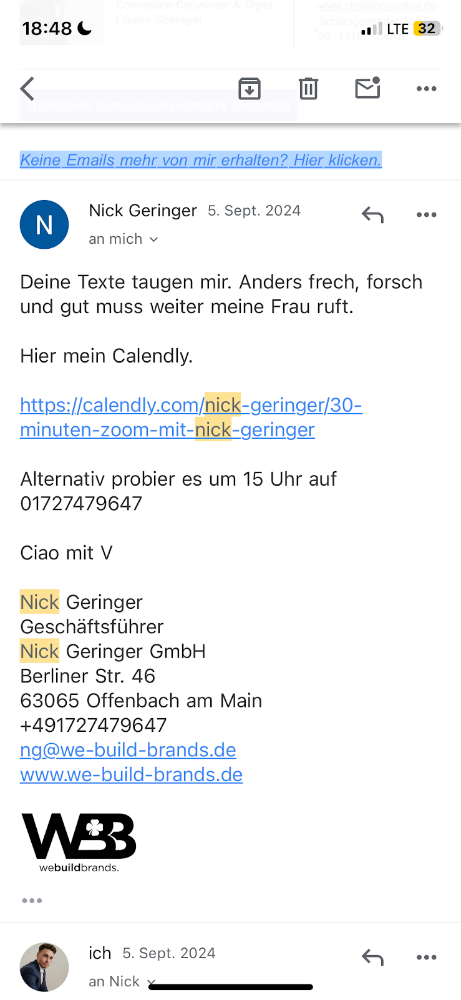

<!DOCTYPE html>
<html lang="en">
<head>
    <meta charset="UTF-8">
    <title>Kopie von MONEY-PRINT STORYTELLING 💵</title>
    <meta name="viewport" content="width=device-width, initial-scale=1">
    <meta name="description" content="             Nun ja-muahahahaaa—    G IBT ES ABER!   Und heute *spucke* ich geradewegs ins Gesicht meiner prominenten Klienten , *deiner armen Konkurrenten* und der gesamten Direkt- marketing-’Industrie‘ — und teile exklusiv mit dir  das streng vertrauliche, aber diabolisch-effektive  Geheimnis…    ">
    <link rel="stylesheet" href="theme.css">
    <style>
    
@font-face {   font-family: 'Permanent Marker';   font-style: normal;   font-weight: 400;   font-display: swap;   src: url(https://fonts.gstatic.com/s/permanentmarker/v16/Fh4uPib9Iyv2ucM6pGQMWimMp004Hao.ttf) format('truetype'); } 
@font-face {   font-family: 'EB Garamond';   font-style: normal;   font-weight: 400;   font-display: swap;   src: url(https://fonts.gstatic.com/s/ebgaramond/v27/SlGDmQSNjdsmc35JDF1K5E55YMjF_7DPuGi-6_RUAw.ttf) format('truetype'); } 
@font-face {   font-family: 'Average';   font-style: normal;   font-weight: 400;   font-display: swap;   src: url(https://fonts.gstatic.com/s/average/v18/fC1hPYBHe23MxA7rIeI.ttf) format('truetype'); } 
@font-face {   font-family: 'Lexend';   font-style: normal;   font-weight: 400;   font-display: swap;   src: url(https://fonts.gstatic.com/s/lexend/v19/wlptgwvFAVdoq2_F94zlCfv0bz1WCzsW_LA.ttf) format('truetype'); } 
@font-face {   font-family: 'Ultra';   font-style: normal;   font-weight: 400;   font-display: swap;   src: url(https://fonts.gstatic.com/s/ultra/v23/zOLy4prXmrtY-tT6.ttf) format('truetype'); } 
@font-face {   font-family: 'Patrick Hand SC';   font-style: normal;   font-weight: 400;   font-display: swap;   src: url(https://fonts.gstatic.com/s/patrickhandsc/v15/0nkwC9f7MfsBiWcLtY65AWDK873ViQ.ttf) format('truetype'); } 
@font-face {   font-family: 'Lato';   font-style: normal;   font-weight: 400;   font-display: swap;   src: url(https://fonts.gstatic.com/s/lato/v24/S6uyw4BMUTPHvxk.ttf) format('truetype'); } 
@font-face {   font-family: 'Montserrat';   font-style: normal;   font-weight: 400;   font-display: swap;   src: url(https://fonts.gstatic.com/s/montserrat/v26/JTUHjIg1_i6t8kCHKm4532VJOt5-QNFgpCtr6Ew-.ttf) format('truetype'); } 
@font-face {   font-family: 'Lora';   font-style: normal;   font-weight: 400;   font-display: swap;   src: url(https://fonts.gstatic.com/s/lora/v32/0QI6MX1D_JOuGQbT0gvTJPa787weuyJG.ttf) format('truetype'); } 
@font-face {   font-family: 'Bree Serif';   font-style: normal;   font-weight: 400;   font-display: swap;   src: url(https://fonts.gstatic.com/s/breeserif/v17/4UaHrEJCrhhnVA3DgluAx60.ttf) format('truetype'); } 
@font-face {   font-family: 'Comfortaa';   font-style: normal;   font-weight: 400;   font-display: swap;   src: url(https://fonts.gstatic.com/s/comfortaa/v45/1Pt_g8LJRfWJmhDAuUsSQamb1W0lwk4S4WjMPrQ.ttf) format('truetype'); } 
.normal_text {
font-family: Arial;
font-size: 11.0PT;
color: #000000;
line-height: 1.15;
direction: ltr;
}
h1 {
font-size: 20.0PT;
padding-top: 20.0PT;
padding-bottom: 6.0PT;
direction: ltr;
}
h2 {
font-size: 16.0PT;
padding-top: 18.0PT;
padding-bottom: 6.0PT;
direction: ltr;
}
h3 {
font-size: 14.0PT;
color: #434343;
padding-top: 16.0PT;
padding-bottom: 4.0PT;
direction: ltr;
}
h4 {
font-size: 12.0PT;
color: #666666;
padding-top: 14.0PT;
padding-bottom: 4.0PT;
direction: ltr;
}
h5 {
font-size: 11.0PT;
color: #666666;
padding-top: 12.0PT;
padding-bottom: 4.0PT;
direction: ltr;
}
h6 {
font-size: 11.0PT;
color: #666666;
font-style: italic;
padding-top: 12.0PT;
padding-bottom: 4.0PT;
direction: ltr;
}
.title {
font-size: 26.0PT;
padding-bottom: 3.0PT;
direction: ltr;
}
.subtitle {
font-family: Arial;
font-size: 15.0PT;
color: #666666;
padding-bottom: 16.0PT;
direction: ltr;
}


    </style>
</head>
<body>
<header>
    <div class="hamburger-menu" onclick="toggleMenu()">
        <span></span>
        <span></span>
        <span></span>
    </div>
    <nav>
    <ul>
        <li><a href="index.html">Kopie von MONEY-PRINT STORYTELLING 💵</a></li>
    </ul>
    </nav>
</header>
<div class="content"clear: both; overflow: auto; ">
<div style="clear: both;">&nbsp;</div><br><p class="normal_text" style='padding-bottom: 19.0PT; line-height: 0.9; direction: ltr; text-align: center; '><span style='font-family: Average; background-color: #ffffff; '><em>
</em></span></p><p class="normal_text" style='padding-bottom: 19.0PT; line-height: 0.9; direction: ltr; text-align: center; '><span style='font-family: Average; background-color: #ffffff; '><em>
</em></span></p><p class="normal_text" style='direction: ltr; text-align: center; '><span style='font-size: 19.0PT; background-color: #ffffff; '><em><strong>
</strong></em></span></p><p class="normal_text" style='direction: ltr; text-align: center; '><span style='font-size: 19.0PT; background-color: #ffffff; '><em><strong>
</strong></em></span></p><p class="normal_text" style='direction: ltr; text-align: center; '><span style='font-size: 19.0PT; background-color: #ffffff; '><em><strong>
</strong></em></span></p><p class="normal_text" style='direction: ltr; text-align: center; '><span style='font-size: 19.0PT; background-color: #ffffff; '><em><strong>
</strong></em></span></p><p class="normal_text" style='direction: ltr; text-align: center; '><span style='font-size: 19.0PT; background-color: #ffffff; '><em><strong>
</strong></em></span></p><p class="normal_text" style='direction: ltr; text-align: center; '><span style='font-size: 19.0PT; background-color: #ffffff; '><em><strong>
</strong></em></span></p><h1 style='direction: ltr; text-align: center; '><span style='font-family: Lato; font-size: 22.5PT; '><em>â€Es </em></span><span style='font-family: Lato; font-size: 22.5PT; '><u><em>Sollte</em></u></span><span style='font-family: Lato; font-size: 22.5PT; '><em> Vermutlich </em></span><span style='font-family: Lato; font-size: 22.5PT; '><em>Keinen </em></span><span style='font-family: Lato; font-size: 22.5PT; '><em>So Durchschlagenden </em></span><span style='font-family: Lato; font-size: 22.5PT; '><em>Conversion-‘Hebel‘ Geben Wie Diesen…“</em></span><span style='font-family: Lato; font-size: 13.0PT; '><em><strong> </strong></em></span><span style='font-family: Lato; font-size: 13.0PT; '><em> </em></span><span style='font-family: Average; font-size: 14.0PT; '><strong> </strong></span><span style='font-family: Lato; font-size: 15.0PT; '><strong> </strong></span><span style='font-family: Lato; font-size: 9.0PT; '><strong> </strong></span><span style='font-size: 6.0PT; '> </span><span style='font-size: 6.0PT; '><strong>&nbsp;&nbsp; </strong></span><br><span style='font-size: 13.0PT; '><em><strong>
</strong></em></span></h1><p class="normal_text" style='direction: ltr; text-align: center; '><span style='font-family: Cambria; font-size: 10.0PT; background-color: #ffffff; '><em>
</em></span></p><p class="normal_text" style='direction: ltr; text-align: center; '><span style='font-family: Cambria; font-size: 9.0PT; background-color: #ffffff; '><em></em></span><span style='font-family: Cambria; font-size: 3.0PT; background-color: #ffffff; '><em>
</em></span></p><p class="normal_text" style='direction: ltr; text-align: center; '><span style='font-family: Montserrat; font-size: 14.0PT; background-color: #ffffff; '><em>&nbsp;&nbsp; </em></span><span style='font-family: Montserrat; font-size: 15.0PT; background-color: #ffffff; '><em> </em></span><span style='font-family: EB Garamond; font-size: 15.0PT; background-color: #ffffff; '><em>Nun ja-muahahahaaa—</em></span><span style='font-family: Montserrat; font-size: 13.0PT; background-color: #ffffff; '><em>&nbsp;&nbsp;</em></span><span style='font-family: Montserrat; font-size: 4.0PT; background-color: #ffffff; '><em><strong>
</strong></em></span></p><p class="normal_text" style='line-height: 0.8; direction: ltr; text-align: center; '><br><span style='font-family: Ultra; font-size: 38.0PT; background-color: #ffffff; '><em><strong>G</strong></em></span><span style='font-family: Ultra; font-size: 38.0PT; background-color: #ffffff; '><em><strong>IBT ES ABER!</strong></em></span><br><br><span style='font-family: Lato; background-color: #ffffff; '><em>Und heute *spucke* ich geradewegs ins Gesicht </em></span><span style='font-family: Lato; background-color: #ffffff; '><u><em>meiner prominenten Klienten</em></u></span><span style='font-family: Lato; background-color: #ffffff; '><em>, </em></span><span style='font-family: Lato; background-color: #ffffff; '><em>*deiner armen Konkurrenten* und der gesamten Direkt-
</em></span></p><p class="normal_text" style='line-height: 0.8; direction: ltr; text-align: center; '><span style='font-family: Lato; background-color: #ffffff; '><em>marketing-’Industrie‘ —</em></span><span style='font-family: Lato; background-color: #ffffff; '><em>und teile </em></span><span style='font-family: Lato; background-color: #ffffff; '><em><strong>exklusiv mit dir</strong></em></span><br><span style='font-family: Lato; background-color: #ffffff; '><em>das streng vertrauliche, aber 
</em></span></p><p class="normal_text" style='line-height: 0.8; direction: ltr; text-align: center; '><span style='font-family: Lato; background-color: #ffffff; '><u><em>diabolisch-effektive</em></u></span><span style='font-family: Lato; background-color: #ffffff; '><em> </em></span><span style='font-family: Lato; background-color: #ffffff; '><em>Geheimnis…</em></span><span style='font-family: Lato; background-color: #ffffff; '><em>
</em></span></p><p class="normal_text" style='direction: ltr; text-align: center; '><span style='font-size: 7.5PT; background-color: #ffffff; '><em>
</em></span></p><p class="normal_text" style='direction: ltr; text-align: center; '><br><span style='font-size: 5.5PT; background-color: #ffffff; '><em></em></span><span style='font-size: 7.5PT; background-color: #ffffff; '><em></em></span><br><span style='font-family: Lexend; font-size: 11.5PT; background-color: #ffffff; '><em>Warum die weltbesten Verkaufstexter gerade reihenweise </em></span><span style='font-family: Lexend; font-size: 11.5PT; background-color: #ffffff; '><em>diese </em></span><span style='font-family: Lexend; font-size: 11.5PT; background-color: #ffffff; '><em>vergessene</em></span><span style='font-family: Lexend; font-size: 12.0PT; background-color: #ffffff; '><em> </em></span><span style='font-family: Lexend; font-size: 18.0PT; background-color: #ffff00; '><em>“</em></span><span style='font-family: Lexend; font-size: 18.0PT; background-color: #ffff00; '><em>Neandertaler-Technik</em></span><span style='font-family: Lexend; font-size: 18.0PT; background-color: #ffff00; '><em>”</em></span><span style='font-family: Lexend; font-size: 18.0PT; '><em> </em></span><span style='font-family: Lexend; font-size: 11.5PT; background-color: #ffffff; '><em>wiederentdecken,um selbst weitaus renommiertere Konkurrenz-Brands conversiontechnisch wie Dilettanten aussehen zu lassen.</em></span><br><br><span style='font-family: Permanent Marker; font-size: 33.0PT; background-color: #ffffff; '><em>_____
</em></span></p><p class="normal_text" style='padding-bottom: 19.0PT; line-height: 0.9; direction: ltr; '><span style='font-family: Bree Serif; font-size: 4.0PT; background-color: #ffffff; '><em><strong></strong></em></span><span style='font-family: Lato; background-color: #ffffff; '>Hallo, lieber lesender Mensch.
</span></p><p class="normal_text" style='padding-bottom: 19.0PT; line-height: 0.9; direction: ltr; '><span style='font-family: Lato; background-color: #ffffff; '>Dein ‘Alliierter’ Chris hier… 🤫</span><span style='font-family: Cambria; background-color: #ffffff; '>
</span></p><p class="normal_text" style='padding-bottom: 19.0PT; line-height: 0.9; direction: ltr; '><span style='font-family: Lato; background-color: #ffffff; '>Falls du je davon geträumt hast, dass ein Lead um 7:48 Uhr auf der Toilette deine Website anklickt, um 7:49 Uhr anfängt, deine Angebotsseite zu lesen – und um 7:59 Uhr seine Kreditkarte aus der immer noch heruntergelassenen Hose friemelt, um dein Produkt bzw. Service zu kaufen</span><span style='font-family: Cambria; background-color: #ffffff; '>… </span><span style='font-family: Lato; background-color: #ffffff; '> 
</span></p><ul style="padding-left: 20.0px;"><li><span style='font-family: Lato; background-color: #ffffff; '>…und das obwohl du in einem Red Ocean voller vermeintlich </span><span style='font-family: Lato; background-color: #ffffff; '><strong>austauschbarer Leistungen</strong></span><span style='font-family: Lato; background-color: #ffffff; '>, </span><span style='font-family: Lato; background-color: #ffffff; '><em><strong>Copy-&-Paste-Coaches</strong></em></span><span style='font-family: Lato; background-color: #ffffff; '> und beinahe fanatischem </span><span style='font-family: Lato; background-color: #ffffff; '><strong>’Funnel-Dogmatismus’ </strong></span><span style='font-family: Lato; background-color: #ffffff; '>unterwegs bist
</span></li><li><span style='font-family: Lato; background-color: #ffffff; '>…</span><span style='font-family: Lato; background-color: #ffffff; '><u>und</u></span><span style='font-family: Lato; background-color: #ffffff; '> </span><span style='font-family: Lato; background-color: #ffffff; '><em>eigentlich </em></span><span style='font-family: Lato; background-color: #ffffff; '>sogar gerne </span><span style='font-family: Lato; background-color: #ffffff; '><strong>höhere Preise</strong></span><span style='font-family: Lato; background-color: #ffffff; '> verlangen würdest als all deine 27 Direkt-Konkurrenten</span><span style='font-family: Lato; background-color: #ffffff; '><em> (obwohl diese auf dem Papier alle ach-so-tolle Qualifikationen haben und/oder weitaus “senioriger” im Markt sind als du)…</em></span><span style='font-family: Cambria; background-color: #ffffff; '><em>
</em></span></li></ul><p class="normal_text" style='padding-bottom: 19.0PT; line-height: 0.9; direction: ltr; '><span style='font-family: Lato; background-color: #ffffff; '>…dann ist hier die Story, wie ich genau dieses Problem für mein eigenes Business gelöst habe — </span><span style='font-family: Lato; background-color: #ffffff; '><em>und wie du den gleichen Hebel auch bei dir umlegen kannst:</em></span><span style='font-family: Lato; background-color: #ffffff; '>
</span></p><p class="normal_text" style='padding-bottom: 19.0PT; line-height: 0.9; direction: ltr; text-align: center; '><span style='font-family: Lato; font-size: 9.0PT; background-color: #ffffff; '><em>(Und jap… trotz der Cartoon-Figur oben ist das eine wahre Geschichte </em></span><span style='font-family: Lato; font-size: 9.0PT; background-color: #ffffff; '><em>→ Belege </em></span><span style='font-family: Lato; font-size: 9.0PT; background-color: #ffffff; '><em>unten)</em></span><span style='font-family: Lato; background-color: #ffffff; '><em>
</em></span></p><p class="normal_text" style='padding-bottom: 19.0PT; line-height: 0.65; direction: ltr; text-align: center; '><span style='font-family: Bree Serif; font-size: 31.0PT; background-color: #ffffff; '>⬇⬇⬇⬇⬇</span><span style='font-family: Bree Serif; font-size: 27.0PT; background-color: #ffffff; '> </span><span style='font-family: Bree Serif; background-color: #ffffff; '><em><strong>
</strong></em></span></p><p class="normal_text" style='padding-bottom: 19.0PT; line-height: 0.9; direction: ltr; text-align: center; '><span style='font-family: Average; font-size: 15.0PT; background-color: #ffffff; '><em>An einem regenversifften Juliabend 2024 schlossen mein Kindheitsfreund Max und ich</em></span><span style='font-family: Average; font-size: 18.0PT; background-color: #ffffff; '><em> </em></span><span style='font-family: Average; font-size: 15.0PT; background-color: #ffffff; '><em>&nbsp;&nbsp;&nbsp;&nbsp;&nbsp;&nbsp;</em></span><span style='font-family: Average; font-size: 15.0PT; background-color: #ffffff; '><em><strong> 
</strong></em></span></p><h1 style='padding-bottom: 19.0PT; line-height: 0.9; direction: ltr; text-align: center; '><span style='font-family: Bree Serif; font-size: 63.0PT; background-color: #ffffff; '><em>…eine </em></span><span style='font-family: Bree Serif; font-size: 63.0PT; color: #990000; background-color: #ffffff; '><u><em>Wette</em></u></span><span style='font-family: Bree Serif; font-size: 63.0PT; '><em> ab:
</em></span></h1><p class="normal_text" style='padding-bottom: 19.0PT; direction: ltr; '><br><span style='font-family: Bree Serif; font-size: 14.0PT; color: #990000; background-color: #ffffff; '><strong>ᐅᐅ Wer von uns würde es als erster schaffen, seinen Konzernjob in die Pfanne zu hauen und dafür ein </strong></span><span style='font-family: Bree Serif; font-size: 14.0PT; color: #990000; background-color: #ffff00; '><strong>profitables Online-Business</strong></span><span style='font-family: Bree Serif; font-size: 14.0PT; color: #990000; background-color: #ffffff; '><strong> aufzubauen?</strong></span><span style='font-family: Lato; background-color: #ffffff; '>Der Gewinner würde Ruhm und Ehre erhalten – der Verlierer</span><span style='font-family: Cambria; background-color: #ffffff; '> </span><span style='font-family: Lato; background-color: #ffffff; '>eine</span><span style='font-family: Lato; background-color: #ffffff; '><strong> </strong></span><span style='font-family: Lato; background-color: #ffffff; '>Glatze</span><span style='font-family: Lato; background-color: #ffffff; '><strong>.</strong></span><span style='font-family: Lato; font-size: 8.5PT; background-color: #ffffff; '><em>(Typische Männerwette.. )</em></span><span style='font-family: Lato; background-color: #ffffff; '><em> </em></span><br><span style='font-family: Lato; font-size: 5.5PT; background-color: #ffffff; '><em>*Bilder unten* 
</em></span></p><p class="normal_text" style='padding-bottom: 19.0PT; direction: ltr; '><span style='font-family: Lato; background-color: #ffffff; '>Die Voraussetzungen waren fair:
</span></p><ul style="padding-left: 20.0px;"><li><span style='font-family: Lato; background-color: #ffffff; '>Wir beide hatten einen 9-to-5-Job, den wir hierfür kündigten.
</span></li><li><span style='font-family: Lato; background-color: #ffffff; '>Wir beide hatten finanzielle Reserven für ein paar Monate.
</span></li><li><span style='font-family: Lato; background-color: #ffffff; '>Wir beide hatten Skills, auf denen wir unsere Selbständigkeit gründen wollten. Max im Webdesign, ich im Copywriting. </span><span style='font-family: Lato; color: #cccccc; background-color: #ffffff; '>
</span></li></ul><p class="normal_text" style='padding-bottom: 19.0PT; direction: ltr; '><span style='font-family: Lato; background-color: #ffffff; '>Das Problem war … im Gegensatz zu Max hatte ich meine Skills lediglich </span><span style='font-family: Lato; background-color: #ffffff; '>in meinem</span><span style='font-family: Lato; background-color: #ffffff; '><em> Kopf</em></span><span style='font-family: Lato; background-color: #ffffff; '>.
</span></p><p class="normal_text" style='padding-bottom: 19.0PT; direction: ltr; '><span style='font-family: Lato; background-color: #ffffff; '>>> Ich hatte absolut nichts vorzuweisen 🤷‍♂️
</span></p><p class="normal_text" style='padding-bottom: 19.0PT; direction: ltr; '><span style='font-family: Lato; background-color: #ffffff; '>Noch nie hatte ich je mit einem Klienten gesprochen und</span><span style='font-family: Cambria; background-color: #ffffff; '>—</span><span style='font-family: Lato; background-color: #ffffff; '>abgesehen von eBay Chats</span><span style='font-family: Cambria; background-color: #ffffff; '>—</span><span style='font-family: Lato; background-color: #ffffff; '>auch noch nie Geld durch mein ‘Schreiben‘ verdient. 
</span></p><p class="normal_text" style='padding-bottom: 19.0PT; direction: ltr; '><span style='font-family: Lato; background-color: #ffffff; '>Max hingegen hatte neben seinem Sales-Job bereits Dutzende Websites für sich selbst und andere gebaut, ein Portfolio an Arbeit vorzuzeigen und eine handvoll Testimonials von befreundeten Selbständigen, denen er (damals noch unentgeltlich) geholfen hatte. 
</span></p><p class="normal_text" style='padding-bottom: 19.0PT; direction: ltr; '><span style='font-family: Lato; background-color: #ffffff; '><em>Und dennoch…</em></span><span style='font-family: Lato; background-color: #ffffff; '> </span><br><span style='font-family: Lato; background-color: #ffffff; '>musste unsere schöne Wette schon sehr bald eingestellt werden 😷&nbsp;&nbsp;</span><span style='background-color: #ffffff; '>…&nbsp;&nbsp;</span><br><span style='font-family: Lato; background-color: #ffffff; '><strong>…weil ich sie (und somit Max) schon nach sehr kurzer</strong></span><span style='font-family: Lato; background-color: #ffffff; '><strong> Zeit </strong></span><span style='font-family: Lato; background-color: #ffffff; '><em><strong>rasiert</strong></em></span><span style='font-family: Lato; background-color: #ffffff; '><strong> hatte </strong></span><span style='font-family: Lato; background-color: #ffffff; '><strong>😁
</strong></span></p><p class="normal_text" style='padding-bottom: 19.0PT; direction: ltr; '><span style='font-family: Lato; background-color: #ffffff; '><strong> </strong></span><span style='font-family: Lato; background-color: #ffffff; '><em><strong>
</strong></em></span></p><p class="normal_text" style='padding-bottom: 19.0PT; direction: ltr; '><span style='font-family: Lato; font-size: 14.0PT; background-color: #ffffff; '><em> </em></span><span style='font-family: Lato; background-color: #ffffff; '><em>← Max beim Wettschulden-Begleichen </em></span><span style='font-family: Lato; font-size: 9.0PT; background-color: #ffffff; '>😄</span><span style='font-family: Lato; font-size: 14.0PT; background-color: #ffffff; '><em>&nbsp;&nbsp;&nbsp;&nbsp;&nbsp;&nbsp;&nbsp;&nbsp;&nbsp;&nbsp;&nbsp;&nbsp;&nbsp;&nbsp;&nbsp;&nbsp;&nbsp;&nbsp;&nbsp;&nbsp;&nbsp;&nbsp;&nbsp;&nbsp;&nbsp;&nbsp;&nbsp;&nbsp; </em></span><span style='font-family: Lato; background-color: #ffffff; '>
</span></p><p class="normal_text" style='padding-bottom: 19.0PT; direction: ltr; '><span style='font-family: Lato; background-color: #ffffff; '>
</span></p><p class="normal_text" style='padding-bottom: 19.0PT; direction: ltr; '><span style='font-family: Lato; background-color: #ffffff; '>
</span></p><p class="normal_text" style='padding-bottom: 19.0PT; direction: ltr; '><span style='font-family: Lato; background-color: #ffffff; '>
</span></p><p class="normal_text" style='padding-bottom: 19.0PT; direction: ltr; '><span style='font-family: Lato; background-color: #ffffff; '>>> Während Max in seiner Akquise nämlich buchstäblich </span><span style='font-family: Lato; background-color: #ffffff; '><u><strong>tausende DMs</strong></u></span><span style='font-family: Lato; background-color: #ffffff; '><u> </u></span><span style='font-family: Lato; background-color: #ffffff; '><u><strong>und Cold Emails</strong></u></span><span style='font-family: Lato; background-color: #ffffff; '> herausballerte, die er </span><span style='font-family: Lato; background-color: #ffffff; '><em>filigran ausfeilte</em></span><span style='font-family: Lato; background-color: #ffffff; '> und </span><span style='font-family: Lato; background-color: #ffffff; '><em>“verkaufspsychologisch optimiert“ aufsetzte</em></span><span style='font-family: Lato; background-color: #ffffff; '>, versendete ich in meinen gesamten Akquisebemühungen (bis heute - über ein Jahr später) lediglich </span><span style='font-family: Lato; background-color: #ffffff; '>39</span><span style='font-family: Lato; background-color: #ffffff; '> Cold Emails. 
</span></p><p class="normal_text" style='padding-bottom: 19.0PT; direction: ltr; '><span style='font-family: Lato; background-color: #ffffff; '>Mehr war nicht nötig.
</span></p><p class="normal_text" style='padding-bottom: 19.0PT; direction: ltr; '><span style='font-family: Lato; background-color: #ffffff; '><u>Hier die Conversion Rates unserer aggregierten Akquise-Nachrichten: </u></span><span style='font-family: Lato; background-color: #ffffff; '>
</span></p><p class="normal_text" style='padding-bottom: 19.0PT; direction: ltr; text-align: center; '><span style='font-family: Lato; font-size: 17.0PT; '>Max: </span><span style='font-family: Lato; font-size: 17.0PT; '><strong>0,132%</strong></span><br><span style='font-family: Lato; font-size: 17.0PT; '>Chris: </span><span style='font-family: Lato; font-size: 17.0PT; '><strong>17,949%</strong></span><span style='font-family: Lato; font-size: 17.0PT; '> 🏆</span><span style='font-family: Lato; font-size: 17.0PT; background-color: #ffffff; '>&nbsp;&nbsp;&nbsp;&nbsp;&nbsp;&nbsp;&nbsp;&nbsp;&nbsp;&nbsp;&nbsp;&nbsp;&nbsp;&nbsp;&nbsp;&nbsp; </span><span style='font-family: Lato; font-size: 13.0PT; background-color: #ffffff; '>&nbsp;&nbsp;&nbsp;&nbsp;&nbsp;&nbsp;&nbsp;&nbsp;&nbsp;&nbsp;&nbsp;&nbsp;&nbsp;&nbsp;&nbsp;&nbsp;&nbsp;&nbsp;&nbsp;&nbsp;&nbsp;&nbsp;&nbsp;&nbsp;&nbsp;&nbsp;&nbsp;&nbsp;&nbsp;&nbsp;&nbsp;&nbsp;&nbsp;&nbsp;&nbsp;&nbsp;&nbsp;&nbsp;&nbsp;&nbsp;&nbsp;&nbsp;&nbsp;&nbsp;&nbsp;&nbsp;&nbsp;&nbsp;&nbsp;&nbsp;&nbsp;&nbsp;&nbsp;&nbsp;&nbsp;&nbsp;&nbsp;&nbsp;&nbsp;&nbsp;&nbsp;&nbsp;&nbsp;&nbsp;&nbsp;&nbsp;&nbsp;&nbsp;&nbsp;&nbsp;&nbsp;&nbsp;&nbsp;&nbsp;&nbsp;&nbsp;&nbsp;&nbsp;&nbsp;&nbsp;&nbsp;&nbsp;&nbsp;&nbsp;&nbsp;&nbsp;&nbsp;&nbsp;&nbsp;&nbsp;&nbsp;&nbsp;&nbsp;&nbsp;&nbsp;&nbsp;&nbsp;&nbsp;&nbsp;&nbsp;&nbsp;&nbsp;&nbsp;&nbsp;&nbsp;&nbsp;&nbsp;&nbsp;&nbsp;&nbsp;&nbsp;&nbsp;&nbsp;&nbsp;&nbsp;&nbsp;&nbsp;&nbsp;&nbsp;&nbsp;&nbsp;&nbsp;&nbsp;&nbsp;&nbsp;&nbsp;&nbsp;&nbsp;&nbsp;&nbsp;&nbsp;&nbsp;&nbsp;&nbsp;&nbsp;&nbsp;&nbsp;&nbsp;&nbsp;&nbsp;&nbsp;&nbsp;&nbsp;&nbsp;&nbsp;&nbsp;&nbsp;&nbsp;&nbsp;&nbsp;&nbsp;&nbsp; </span><span style='font-family: Lato; font-size: 9.0PT; background-color: #ffffff; '><em>(Echte Zahlen. Gleich mehr dazu.)
</em></span></p><p class="normal_text" style='padding-bottom: 19.0PT; direction: ltr; '><span style='font-family: Lato; background-color: #ffffff; '>>> Was war hier passiert?
</span></p><p class="normal_text" style='padding-bottom: 19.0PT; direction: ltr; '><span style='font-family: Lato; background-color: #ffffff; '><u><em>Folgendes</em></u></span><span style='font-family: Lato; background-color: #ffffff; '><u><em>:</em></u></span><br><span style='font-family: Lato; background-color: #ffffff; '>Während es Max nicht schaffte, </span><span style='font-family: Lato; color: #cc0000; '><strong>sich </strong></span><span style='font-family: Lato; color: #cc0000; '><strong>vom Wettbewerb abzuheben</strong></span><span style='font-family: Lato; color: #cc0000; background-color: #ffffff; '><em>,</em></span><span style='font-family: Lato; background-color: #ffffff; '> gelang mir das von Beginn an irgendwie ziemlich geil 🤔Und das </span><span style='font-family: Lato; background-color: #ffffff; '><em>obwohl </em></span><span style='font-family: Lato; background-color: #ffffff; '>ich keinerlei “Erfolge”, Testimonials oder Arbeitsproben vorzuzeigen hatte.…</span><span style='font-family: Lato; background-color: #ffffff; '><strong>UND</strong></span><span style='font-family: Lato; background-color: #ffffff; '><em> </em></span><span style='font-family: Lato; background-color: #ffffff; '><u>obwohl</u></span><span style='font-family: Lato; background-color: #ffffff; '> </span><span style='font-family: Lato; background-color: #ffffff; '><em>(durch die Bauligs, Andrew Tate, die “Freedom Writers Academy” usw.) </em></span><span style='font-family: Lato; background-color: #ffffff; '>seit 2021 ein waschechter </span><span style='font-family: Lato; background-color: #ffffff; '>Tsunami </span><span style='font-family: Lato; background-color: #ffffff; '>an Nachwuchs-Copywritern den Markt</span><span style='font-family: Lato; background-color: #ffffff; '><em> (und damit die Postfächer sämtlicher Klienten) geflutet </em></span><span style='font-family: Lato; background-color: #ffffff; '>hatte.Ich hatte also sogar gegen </span><span style='font-family: Lato; background-color: #ffffff; '><u>deutlich mehr</u></span><span style='font-family: Lato; color: #cc0000; background-color: #ffffff; '><u> </u></span><span style='font-family: Lato; background-color: #ffffff; '><u>Mitwettbewerber</u></span><span style='font-family: Lato; background-color: #ffffff; '> zu kämpfen als </span><span style='font-family: Lato; background-color: #ffffff; '>Max.Was war also mein Geheimnis, um all diese (und Max) in der Pfeife zu rauchen…? 🧐🥁🥁🥁…&nbsp;&nbsp;👀
</span></p><p class="normal_text" style='padding-bottom: 19.0PT; direction: ltr; '><span style='font-family: Lato; background-color: #ffffff; '>
</span></p><p class="normal_text" style='padding-bottom: 19.0PT; direction: ltr; '><span style='font-family: Lato; background-color: #ffffff; '>…
</span></p><p class="normal_text" style='padding-bottom: 19.0PT; direction: ltr; '><span style='font-family: Lato; background-color: #ffffff; '>
</span></p><p class="normal_text" style='padding-bottom: 19.0PT; direction: ltr; '><span style='font-family: Lato; background-color: #ffffff; '>
</span></p><p class="normal_text" style='padding-bottom: 19.0PT; direction: ltr; '><span style='font-family: Lato; background-color: #ffffff; '>?🥁🥁🙄🙄</span><br><span style='font-family: Lato; font-size: 34.0PT; background-color: #ffffff; '>🥁🥁🥁
</span></p><p class="normal_text" style='padding-bottom: 19.0PT; direction: ltr; '><span style='font-family: Lato; background-color: #ffffff; '>
</span></p><p class="normal_text" style='padding-bottom: 19.0PT; direction: ltr; '><span style='font-family: Lato; background-color: #ffffff; '>
</span></p><p class="normal_text" style='padding-bottom: 19.0PT; direction: ltr; '><span style='font-family: Lato; font-size: 56.0PT; background-color: #ffffff; '> </span><span style='font-family: Lato; font-size: 66.0PT; background-color: #ffffff; '>…</span><span style='font-family: Lato; background-color: #ffffff; '>
</span></p><p class="normal_text" style='padding-bottom: 19.0PT; direction: ltr; '><span style='font-family: Lato; background-color: #ffffff; '><em>?!?! 🤨
</em></span></p><p class="normal_text" style='padding-bottom: 19.0PT; direction: ltr; '><span style='font-family: Lato; background-color: #ffffff; '>
</span></p><p class="normal_text" style='padding-bottom: 19.0PT; direction: ltr; '><span style='font-family: Lato; background-color: #ffffff; '></span><span style='font-family: Lato; background-color: #ffffff; '><em>Ok, ich sag’s dir 😉 </em></span><span style='font-family: Lato; background-color: #ffffff; '><em> 
</em></span></p><p class="normal_text" style='padding-bottom: 19.0PT; direction: ltr; text-align: center; '><span style='font-family: Lato; font-size: 13.0PT; background-color: #ffffff; '><em>>> Statt auf den “professionellen” glatt-gebügelten Online-Sales-Einheitsdünnpfiff zu setzen (auf den bereits alle anderen setzten) – setzte ich ganz altmodisch auf die </em></span><span style='font-family: Lato; font-size: 13.0PT; background-color: #ffffff; '><u><em>Steinzeit-Verkaufstaktik #1: 
</em></u></span></p><p class="normal_text" style='padding-bottom: 19.0PT; direction: ltr; text-align: center; '><span style='font-family: Lato; font-size: 25.0PT; background-color: #ffffff; '>Die</span><span style='font-family: Lato; font-size: 25.0PT; background-color: #ffffff; '> </span><span style='font-family: Lato; font-size: 25.0PT; background-color: #ffffff; '>gute … </span><span style='font-family: Courier New; font-size: 26.0PT; background-color: #ffffff; '>alte</span><span style='font-family: Lato; font-size: 25.0PT; background-color: #ffffff; '> </span><span style='font-family: Lato; font-size: 25.0PT; background-color: #ffffff; '><em>… </em></span><span style='font-family: Lato; font-size: 25.0PT; background-color: #ffffff; '><u>Geschichte</u></span><span style='font-family: Lato; font-size: 25.0PT; background-color: #ffffff; '> </span><span style='font-family: Lato; font-size: 25.0PT; background-color: #ffffff; '><strong>🤷‍♂️
</strong></span></p><p class="normal_text" style='padding-bottom: 19.0PT; direction: ltr; '><span style='font-family: Lato; background-color: #ffffff; '>Jup. Selbst nach ~8.000 Jahren Menschheitshistorie ist diese charmante kleine Trumpfkarte noch immer allen anderen Verkaufs- und Überzeugungsmaschen </span><span style='font-family: Lato; background-color: #ffffff; '><em>haushoch </em></span><span style='font-family: Lato; background-color: #ffffff; '>überlegen.
</span></p><p class="normal_text" style='padding-bottom: 19.0PT; line-height: 1.0; direction: ltr; '><span style='font-family: Lato; font-size: 11.0PT; '>Hier mal ein paar Beispielreaktionen von </span><span style='font-family: Lato; '>Klienten </span><span style='font-family: Lato; font-size: 11.0PT; '>auf meine Story-Email </span><span style='font-family: Lato; font-size: 11.0PT; '><em>(</em></span><span style='font-family: Lato; '><em>alles Brands mit 250K - 3,5 Mio Followern)</em></span><span style='font-family: Lato; font-size: 11.0PT; '><em>:
</em></span></p><p class="normal_text" style='padding-bottom: 19.0PT; line-height: 1.0; direction: ltr; text-align: center; '><span style=''></span><span style=''>
</span></p><p class="normal_text" style='direction: ltr; text-align: center; '><span style=''>
</span></p><p class="normal_text" style='direction: ltr; text-align: center; '><br><span style=''>
</span></p><p class="normal_text" style='direction: ltr; '><span style=''>
</span></p><p class="normal_text" style='direction: ltr; text-align: center; '><span style=''></span><span style=''>
</span></p><p class="normal_text" style='direction: ltr; '><span style=''>
</span></p><p class="normal_text" style='direction: ltr; text-align: center; '><span style='color: #efefef; '><strong>
</strong></span></p><p class="normal_text" style='direction: ltr; text-align: center; '><span style=''>
</span></p><p class="normal_text" style='direction: ltr; text-align: center; '><span style=''>
</span></p><p class="normal_text" style='direction: ltr; text-align: center; '><span style=''>
</span></p><p class="normal_text" style='direction: ltr; text-align: center; '><span style=''> 
</span></p><p class="normal_text" style='direction: ltr; text-align: center; '><br><span style=''>
</span></p><p class="normal_text" style='direction: ltr; text-align: center; '><span style=''>
</span></p><p class="normal_text" style='padding-bottom: 19.0PT; direction: ltr; text-align: center; '><span style='font-family: Lato; font-size: 13.0PT; background-color: #ffffff; '><em>“Na gut, Chris. 😤Anscheinend funktioniert Storytelling in der Akquise… </em></span><span style='font-family: Average; font-size: 13.0PT; background-color: #ffffff; '><em>&nbsp;&nbsp;</em></span><span style='font-family: Lato; font-size: 13.0PT; background-color: #ffffff; '><em> aber funktionert es auch in der Königsdisziplin?? → Eiskalter. ErbARmUnGsLosER VERKAUF</em></span><span style='font-family: Lato; font-size: 13.0PT; background-color: #ffffff; '><u><em>knallharter</em></u></span><span style='font-family: Lato; font-size: 13.0PT; background-color: #ffffff; '><em> </em></span><span style='font-family: Lato; font-size: 13.0PT; background-color: #ffffff; '><em><strong>Produkte</strong></em></span><span style='font-family: Lato; font-size: 13.0PT; background-color: #ffffff; '><em><strong>?!?!</strong></em></span><span style='font-family: Lato; font-size: 13.0PT; background-color: #ffffff; '><em>”
</em></span></p><p class="normal_text" style='padding-bottom: 19.0PT; direction: ltr; '><span style='font-family: Lato; background-color: #ffffff; '>Jap. Und auch hier: </span><span style='font-family: Lato; background-color: #ffffff; '><u><strong>besser als alles andere</strong></u></span><span style='font-family: Lato; background-color: #ffffff; '><strong>.</strong></span><span style='font-family: Lato; background-color: #ffffff; '>Damit du den Effekt einmal “live” spüren kannst </span><span style='font-family: Cambria; background-color: #ffffff; '>—&nbsp;&nbsp;&nbsp;&nbsp;</span><span style='font-family: Lato; background-color: #ffffff; '>&nbsp;&nbsp;</span><span style='font-family: Lato; font-size: 14.0PT; background-color: #ffffff; '>
</span></p><h1 style='padding-bottom: 19.0PT; line-height: 0.83; direction: ltr; text-align: center; '><span style='font-family: Lato; font-size: 14.0PT; '><em>l</em></span><span style='font-family: Lato; font-size: 14.0PT; '><em>ass uns mal ein kleines…</em></span><span style='font-family: Cambria; font-size: 14.0PT; '><em>&nbsp;&nbsp;</em></span><span style='font-family: Lato; font-size: 14.0PT; '><em>&nbsp;&nbsp;</em></span><br><span style='font-family: Bree Serif; font-size: 27.0PT; color: #274e13; '>💭</span><span style='font-family: Bree Serif; font-size: 24.0PT; color: #274e13; '> </span><span style='font-family: Bree Serif; font-size: 35.0PT; color: #274e13; '> </span><span style='font-family: Bree Serif; font-size: 33.0PT; color: #274e13; '><u>Gedankenexperiment</u></span><span style='font-family: Bree Serif; font-size: 33.0PT; color: #274e13; '>&nbsp;&nbsp;</span><span style='font-family: Bree Serif; font-size: 27.0PT; color: #274e13; '>💭</span><span style='font-family: Bree Serif; font-size: 59.0PT; '><u> </u></span><span style='font-family: Patrick Hand SC; font-size: 46.0PT; '><u> </u></span><span style='font-family: Lato; font-size: 67.0PT; '><u>
</u></span></h1><p class="normal_text" style='padding-bottom: 19.0PT; direction: ltr; text-align: center; '><span style='font-family: Lato; font-size: 5.0PT; background-color: #ffffff; '><em>(</em></span><span style='font-family: Lato; font-size: 5.0PT; background-color: #ffffff; '><em>machen.)</em></span><span style='font-family: Lato; font-size: 6.0PT; background-color: #ffffff; '><em>
</em></span></p><p class="normal_text" style='padding-bottom: 19.0PT; direction: ltr; '><span style='font-family: Lato; background-color: #ffffff; '>Anschließend gebe ich dir noch ein paar </span><span style='font-family: Lato; background-color: #ffffff; '><u><strong>Schwarz-auf-weiß-Belege</strong></u></span><span style='font-family: Lato; background-color: #ffffff; '> für die unerreichte Verkaufspower von Storys</span><span style='font-family: Average; background-color: #ffffff; '><em> (</em></span><span style='font-family: Lato; background-color: #ffffff; '><em>falls du hiernach immer noch unsicher sein solltest, ob du künftig nicht vielleicht stärker darauf setzen solltest </em></span><span style='font-family: Lato; font-size: 10.0PT; background-color: #ffffff; '><em>😉</em></span><span style='font-family: Lato; background-color: #ffffff; '><em>).</em></span><span style='font-family: Lato; background-color: #ffffff; '>Los geht’s:</span><span style='font-family: Lato; font-size: 8.0PT; background-color: #ffffff; '>
</span></p><p class="normal_text" style='padding-bottom: 19.0PT; line-height: 1.0; direction: ltr; text-align: center; '><span style='font-family: Bree Serif; font-size: 23.0PT; color: #274e13; background-color: #ffffff; '>⬇⬇⬇⬇⬇</span><span style='font-family: Lato; font-size: 2.0PT; color: #274e13; background-color: #ffffff; '>
</span></p><p class="normal_text" style='padding-bottom: 19.0PT; direction: ltr; text-align: center; '><br><span style='font-family: Permanent Marker; background-color: #ffffff; '><strong>___</strong></span><br><span style='font-family: Lato; background-color: #ffffff; '><strong>
</strong></span></p><p class="normal_text" style='padding-bottom: 19.0PT; direction: ltr; '><span style='font-family: Lato; background-color: #ffffff; '>Stell dir vor, du erhältst eine Einladung in ein </span><span style='font-family: Lato; background-color: #ffffff; '><strong>bekanntes Restaurant in deiner Stadt</strong></span><span style='background-color: #ffffff; '>: </span><span style='font-family: Lato; background-color: #ffffff; '><em>Marty’s Premium Steakhouse</em></span><span style='font-family: Lato; background-color: #ffffff; '>. Die Bewertungen sind erstklassig, daher freust du dich beim Betreten schon auf das bevorstehende kulinarische Erlebnis.
</span></p><p class="normal_text" style='padding-top: 12.0PT; padding-bottom: 12.0PT; direction: ltr; '><span style='font-family: Lato; background-color: #ffffff; '>Nach einem Blick auf die Karte winkst du den Kellner zu dir herüber und erkundigst dich</span><span style='font-family: Cambria; background-color: #ffffff; '>… </span><span style='font-family: Lato; background-color: #ffffff; '> </span><span style='font-family: Lato; font-size: 7.0PT; background-color: #ffffff; '>
</span></p><p class="normal_text" style='padding-top: 12.0PT; padding-bottom: 12.0PT; direction: ltr; text-align: center; '><span style='font-family: Lato; font-size: 13.5PT; background-color: #ffffff; '><em>…nach dem Filet Mignon. </em></span><br><span style='font-family: Lato; font-size: 4.0PT; background-color: #ffffff; '><em>
</em></span></p><p class="normal_text" style='padding-top: 12.0PT; padding-bottom: 12.0PT; direction: ltr; '><span style='font-family: Lato; background-color: #ffffff; '></span><span style='color: #0000ff; '><u><strong>Variante </strong></u></span><span style='color: #0000ff; '><u><strong>1:
</strong></u></span></p><p class="normal_text" style='padding-top: 12.0PT; padding-bottom: 12.0PT; direction: ltr; '><span style='font-family: Lato; background-color: #ffffff; '>Mit neutraler Stimme antwortet der Kellner:</span><span style='font-family: Lato; background-color: #ffffff; '><em> „Ja, wir servieren Filet Mignon. Es handelt sich um ein Steak von etwa 170  Gramm, 2,5 cm dick, 8 cm Durchmesser. Als Filet ist es recht mager, mit wenig Marmorierung.
</em></span></p><p class="normal_text" style='padding-top: 12.0PT; padding-bottom: 12.0PT; direction: ltr; '><span style='font-family: Lato; background-color: #ffffff; '><em>Wir grillen es zunächst scharf an und garen es dann bei niedrigerer Hitze fertig – so erreichen wir den gewünschten Garpunkt. Wie alle unsere Steaks ist es von Prime-Beef-Qualität.“
</em></span></p><p class="normal_text" style='padding-top: 12.0PT; padding-bottom: 12.0PT; direction: ltr; '><span style='font-family: Lato; background-color: #ffffff; '>Hmm</span><span style='font-family: Cambria; background-color: #ffffff; '>. </span><span style='font-family: Lato; background-color: #ffffff; '>Nicht der schlechteste Kellner, den du je hattest. Aber wirklich Appetit hat dir diese Erklärung auch nicht gemacht 🤔
</span></p><p class="normal_text" style='padding-bottom: 19.0PT; direction: ltr; '><span style='font-family: Lato; background-color: #ffffff; '>
</span></p><p class="normal_text" style='padding-top: 14.0PT; direction: ltr; '><span style='color: #990000; '><u><strong>Variante </strong></u></span><span style='color: #990000; '><u><strong>2:
</strong></u></span></p><p class="normal_text" style='padding-top: 12.0PT; padding-bottom: 12.0PT; direction: ltr; '><span style='font-family: Lato; background-color: #ffffff; '>Als du ihn nach dem Filet fragst, verändert sich die Mimik des Kellners zu einem fast schon verschwörerischen Blick.</span><span style='font-family: Lato; background-color: #ffffff; '><em>„Sie müssen ein wahrer Connaisseur sein! Nur echte Kenner fragen mich ohne zu zögern nach unserem Filet Mignon</em></span><span style='font-family: Lato; background-color: #ffffff; '><em>“. </em></span><span style='font-family: Lato; background-color: #ffffff; '>Er zwinkert dir leicht zu</span><span style='font-family: Lato; background-color: #ffffff; '>.
</span></p><p class="normal_text" style='padding-top: 12.0PT; padding-bottom: 12.0PT; direction: ltr; '><span style='font-family: Lato; background-color: #ffffff; '><em>“Es ist unser zartestes Steak! Ich verrate Ihnen ein kleines Geheimnis…”</em></span><span style='font-family: Lato; background-color: #ffffff; '> Er beugt sich langsam zu dir herunter und sagt nun fast schon im Flüsterton:</span><span style='font-family: Lato; background-color: #ffffff; '><em> „Es ist das Lieblingsstück unseres Küchenchefs Jean-Jacque. Wenn er sich nach einer harten Woche selbst mal was gönnen will, lautet seine erste Frage immer, ob noch ein Filet da ist.
</em></span></p><p class="normal_text" style='padding-top: 12.0PT; padding-bottom: 12.0PT; direction: ltr; '><span style='font-family: Lato; background-color: #ffffff; '><em>Und unser Besitzer Marty: In der Gastro-Szene ist er bei sämtlichen Insidern und Kritikern für sein unnachahmliches Filet Mignon bekannt. …Und dafür, wie sehr er seinen Fleischlieferanten unter Druck setzt, ihm stets den allerbesten Schnitt zu reservieren. Das macht ihn nicht unbedingt zum pflegeleichtesten Kunden — aber dank Martys Nachfrage kann er seinen Kindern eine Privatschule ermöglichen, daher spielt er das Spielchen mit.“
</em></span></p><p class="normal_text" style='padding-top: 12.0PT; padding-bottom: 12.0PT; direction: ltr; '><span style='font-family: Lato; background-color: #ffffff; '>Inzwischen läuft dir das Wasser im Mund zusammen… Du kannst es kaum noch abwarten, endlich dein eigenes hauchzartes Filet zu bekommen!
</span></p><p class="normal_text" style='padding-bottom: 19.0PT; direction: ltr; '><span style='font-family: Lato; background-color: #ffffff; '>
</span></p><p class="normal_text" style='padding-top: 14.0PT; direction: ltr; '><span style='color: #274e13; '><u><strong>Variante </strong></u></span><span style='color: #274e13; '><u><strong>3:
</strong></u></span></p><p class="normal_text" style='padding-top: 12.0PT; padding-bottom: 12.0PT; direction: ltr; '><span style='font-family: Lato; background-color: #ffffff; '>Du fragst ihn nach dem Filet Mignon – und auf einmal wird das Licht im Raum dunkler.Ein Spotlight fällt auf das Gesicht des Kellners.Im Hintergrund ertönt epische Filmmusik.
</span></p><p class="normal_text" style='padding-top: 12.0PT; padding-bottom: 12.0PT; direction: ltr; '><span style='font-family: Lato; background-color: #ffffff; '>Mit tiefer Stimme beginnt er:
</span></p><p class="normal_text" style='padding-top: 12.0PT; padding-bottom: 12.0PT; direction: ltr; '><span style='font-family: Lato; background-color: #ffffff; '><em>„Unser Filet ist untrennbar mit der Geschichte unseres Inhabers Marty verbunden!Mit fünf Jahren verlor er seine Eltern. </em></span><br><span style='font-family: Lato; background-color: #ffffff; '><em>M</em></span><span style='font-family: Lato; background-color: #ffffff; '><em>it vierzehn wurde er von einer Bande illegaler Gastronomen entführt. Sechs Jahre hielt man ihn gefangen. 
</em></span></p><p class="normal_text" style='padding-top: 12.0PT; padding-bottom: 12.0PT; direction: ltr; '><span style='font-family: Lato; background-color: #ffffff; '><em>Er lebte unter skurrilen Ritualen einer geheimen Bruderschaft grillender Outlaws. Seine Reise in die kulinarische Unterwelt war brutal... Doch diese Outlaws konnten Steaks zubereiten wie niemand sonst!
</em></span></p><p class="normal_text" style='padding-top: 12.0PT; padding-bottom: 12.0PT; direction: ltr; '><span style='font-family: Lato; background-color: #ffffff; '><em>Sie schliffen Marty wie ein Samurai-Schwert. Sich von ihnen loszureißen war hart. Doch heute ist Marty frei. Und sein Filet</em></span><span style='background-color: #ffffff; '><em>—</em></span><span style='font-family: Lato; background-color: #ffffff; '><em>ist seine Geheimwaffe!“
</em></span></p><p class="normal_text" style='padding-top: 12.0PT; padding-bottom: 12.0PT; direction: ltr; '><span style='font-family: Lato; background-color: #ffffff; '>Du denkst: </span><span style='font-family: Lato; background-color: #ffffff; '><em>“Toll. Wusste nicht, dass das hier auch ein Mitmach-Theater ist. Aber</em></span><span style='font-family: Cambria; background-color: #ffffff; '><em> </em></span><span style='font-family: Lato; background-color: #ffffff; '><em>was wollte ich gleich nochmal bestellen…??“
</em></span></p><p class="normal_text" style='padding-bottom: 19.0PT; direction: ltr; '><span style='font-family: Lato; background-color: #ffffff; '>
</span></p><p class="normal_text" style='padding-top: 14.0PT; direction: ltr; '><span style='font-family: Lato; '>Okay.
</span></p><p class="normal_text" style='padding-top: 14.0PT; direction: ltr; text-align: center; '><span style='font-family: Lato; font-size: 14.0PT; '><strong>🔎 </strong></span><span style='font-family: Lato; font-size: 14.0PT; '><strong>Schauen wir uns einmal kurz alle drei Versionen an 🔍
</strong></span></p><p class="normal_text" style='padding-top: 12.0PT; padding-bottom: 12.0PT; direction: ltr; '><span style='font-family: Lato; background-color: #ffffff; '>Deine Frage an den Kellner lautete, ob er dir etwas über das Filet Mignon erzählen könne.</span><br><span style='font-family: Lato; background-color: #ffffff; '>Aus Sales-Perspektive war das eine Einladung an ihn, </span><span style='font-family: Lato; background-color: #ffffff; '><em>dir zu </em></span><span style='font-family: Lato; background-color: #ffffff; '><em>verkaufen</em></span><span style='font-family: Lato; background-color: #ffffff; '><em>, woran du bereits interessiert warst. </em></span><span style='font-family: Lato; background-color: #ffffff; '>Du warst für ihn ein </span><span style='font-family: Lato; background-color: #ffffff; '><strong>warmer Lead</strong></span><span style='font-family: Lato; background-color: #ffffff; '>.
</span></p><p class="normal_text" style='padding-top: 12.0PT; padding-bottom: 12.0PT; direction: ltr; '><span style='font-family: Lato; background-color: #ffffff; '>Wie reagierte der Kellner?
</span></p><ul style="padding-left: 20.0px;"><li><span style='font-family: Lato; background-color: #ffffff; '>In </span><span style='font-family: Lato; background-color: #ffffff; '><strong>Variante 1</strong></span><span style='font-family: Lato; background-color: #ffffff; '> klang er, als würde er ein </span><span style='font-family: Lato; background-color: #ffffff; '><u>technisches Datenblatt</u></span><span style='font-family: Lato; background-color: #ffffff; '> vorlesen.
</span></li><li><span style='font-family: Lato; background-color: #ffffff; '>In </span><span style='font-family: Lato; background-color: #ffffff; '><strong>Variante 2</strong></span><span style='font-family: Lato; background-color: #ffffff; '> ließ er das Wasser in deinem Munde zusammenlaufen. Nicht durch einen Haufen trockener Fakten, sondern durch eine überzeugende, clever erzählte </span><span style='font-family: Lato; background-color: #ffffff; '><u>Verkaufs-Story</u></span><span style='font-family: Lato; background-color: #ffffff; '>.
</span></li><li><span style='font-family: Lato; background-color: #ffffff; '>In </span><span style='font-family: Lato; background-color: #ffffff; '><strong>Variante 3</strong></span><span style='font-family: Lato; background-color: #ffffff; '> klang er, als würde er dir den Trailer für einen neuen </span><span style='font-family: Lato; background-color: #ffffff; '><u>Pseudo-Thriller</u></span><span style='font-family: Lato; background-color: #ffffff; '><em> </em></span><span style='font-family: Lato; background-color: #ffffff; '>präsentieren. Nett anzuhören – aber mit wenig Überzeugungskraft für deine Kaufentscheidung.</span><span style='font-family: Lato; background-color: #ffffff; '><em>
</em></span></li></ul><p class="normal_text" style='padding-top: 12.0PT; padding-bottom: 12.0PT; direction: ltr; '><span style='font-family: Lato; background-color: #ffffff; '>Im echten Leben würden dir versierte Verkäufer daher eine Story im Stile von Variante #2 vor deinen wunderschönen Latz knallen. </span><span style='font-family: Lato; background-color: #ffffff; '><em>(ja, ist mir aufgefallen)</em></span><span style='font-family: Lato; background-color: #ffffff; '></span><span style='font-family: Lato; background-color: #ffffff; '><u>Was dabei aber nur die wenigsten merken:</u></span><span style='font-family: Lato; background-color: #ffffff; '>Variante 2 ist </span><span style='font-family: Lato; background-color: #ffffff; '><strong>nicht </strong></span><span style='font-family: Lato; background-color: #ffffff; '><em><strong>eine </strong></em></span><span style='font-family: Lato; background-color: #ffffff; '><strong>lange Geschichte</strong></span><span style='font-family: Lato; background-color: #ffffff; '>, sondern eine </span><span style='font-family: Lato; background-color: #ffffff; '><strong>Kombination aus </strong></span><span style='font-family: Lato; background-color: #ffffff; '><u><strong>drei</strong></u></span><span style='font-family: Lato; background-color: #ffffff; '><strong> sehr kurzen </strong></span><span style='font-family: Lato; background-color: #ffffff; '><strong>’Mini-Storys‘:</strong></span><span style='font-family: Lato; background-color: #ffffff; '>
</span></p><ul style="padding-left: 20.0px;"><li><span style='font-family: Lato; background-color: #ffffff; '><strong>Eine Geschichte über </strong></span><span style='font-family: Lato; background-color: #ffffff; '><u><strong>dich</strong></u></span><span style='font-family: Lato; background-color: #ffffff; '><strong>:</strong></span><span style='font-family: Lato; background-color: #ffffff; '> Er erklärt dich zum Connaisseur (das ist schmeichelhaft).
</span></li><li><span style='font-family: Lato; background-color: #ffffff; '><strong>Eine Geschichte über den </strong></span><span style='font-family: Lato; background-color: #ffffff; '><u><strong>Küchenchef</strong></u></span><span style='font-family: Lato; background-color: #ffffff; '><strong>:</strong></span><span style='font-family: Lato; background-color: #ffffff; '> Selbst der Profi isst am liebsten das, was du erwägst.
</span></li><li><span style='font-family: Lato; background-color: #ffffff; '><strong>Eine Geschichte über den </strong></span><span style='font-family: Lato; background-color: #ffffff; '><u><strong>Besitzer</strong></u></span><span style='font-family: Lato; background-color: #ffffff; '><strong>:</strong></span><span style='font-family: Lato; background-color: #ffffff; '> Der Mann hinter dem Laden ist berüchtigt dafür, die Extrameile für das allerbeste Fleisch zu gehen.
</span></li></ul><p class="normal_text" style='padding-top: 12.0PT; padding-bottom: 12.0PT; direction: ltr; '><span style='font-family: Lato; background-color: #ffffff; '>Und genau das macht meisterliche </span><span style='font-family: Lato; background-color: #ffffff; '><strong>‘Persuasions-Storys‘</strong></span><span style='font-family: Lato; background-color: #ffffff; '><em> (wie man sie im Copywriting nennt)</em></span><span style='font-family: Lato; background-color: #ffffff; '> aus. Seit jeher</span><span style='font-family: Georgia; background-color: #ffffff; '>—</span><span style='font-family: Lato; background-color: #ffffff; '><em>schon damals, als wir noch in Höhlen lebten und Mammuts jagten</em></span><span style='font-family: Georgia; background-color: #ffffff; '>—</span><span style='font-family: Lato; background-color: #ffffff; '>sind sie</span><span style='font-family: Georgia; background-color: #ffffff; '> </span><span style='font-family: Lato; background-color: #ffffff; '>das </span><span style='font-family: Lato; background-color: #ffffff; '><u><strong>effektivste “Vehikel” im Repertoir des </strong></u></span><span style='font-family: Lato; background-color: #ffffff; '><u><strong>Neander</strong></u></span><span style='font-family: Lato; background-color: #ffffff; '><u><strong>Menschen</strong></u></span><span style='font-family: Lato; background-color: #ffffff; '>, um andere von unserem Gedankengut zu überzeugen. 
</span></p><p class="normal_text" style='padding-top: 12.0PT; padding-bottom: 12.0PT; direction: ltr; '><span style='font-family: Lato; background-color: #ffffff; '>…egal, ob wir ihnen Fell verkaufen möchten … High-Ticket-Coachings … oder politische Ideologien.</span><span style='font-family: Lato; background-color: #ffffff; '><em>
</em></span></p><p class="normal_text" style='padding-top: 12.0PT; padding-bottom: 12.0PT; direction: ltr; '><span style='font-family: Lato; color: #f3f3f3; background-color: #ffffff; '>Daher ist es auch kein Zufall, dass meine Akquise-Mail so gut funktioniert hat.Es existiert schier kein effektiveres “Vehikel”, um eine Verkaufsbotschaft zu vermitteln – und diejenigen, die sie zu erzählen vermögen, haben immense Verkaufsmacht.</span><span style='font-family: Lato; background-color: #ffffff; '>Und hierfür braucht man nicht allzu lange nach Belegen suchen</span><span style='font-family: Cambria; background-color: #ffffff; '>:</span><span style='font-family: Lato; background-color: #ffffff; '>Neben einem kurzen Blick auf die einflussreichsten Machthaber unserer Zeit</span><span style='font-family: Cambria; background-color: #ffffff; '> </span><span style='font-family: Cambria; background-color: #ffffff; '><em>(</em></span><span style='font-family: Lato; background-color: #ffffff; '><em>Trump, Hitler, Mussolini, etc., die ganze politische Ideologien, Wahlkampf-Narrative</em></span><span style='font-family: Cambria; background-color: #ffffff; '><em> </em></span><span style='font-family: Lato; background-color: #ffffff; '><em>und beinahe all ihre Diskurs-Argumente</em></span><span style='font-family: Cambria; background-color: #ffffff; '><em> </em></span><span style='font-family: Lato; background-color: #ffffff; '><em>auf Storytelling fuß(t)en—*nicht mein Fokus hier*</em></span><span style='font-family: Lato; background-color: #ffffff; '><em>)</em></span><span style='font-family: Lato; background-color: #ffffff; '>
</span></p><p class="normal_text" style='padding-top: 12.0PT; padding-bottom: 12.0PT; direction: ltr; '><span style='font-family: Lato; background-color: #ffffff; '>…</span><span style='font-family: Lato; background-color: #ffffff; '>reicht eine kurze Analyse der </span><span style='font-family: Lato; color: #990000; background-color: #ffffff; '><u><strong>erfolgreichsten Werbe- und Verkaufsstücke aller Zeiten</strong></u></span><span style='font-family: Lato; background-color: #ffffff; '><strong> </strong></span><span style='font-family: Lato; background-color: #ffffff; '>und man merkt sofort: </span><span style='font-family: Lato; background-color: #ffffff; '><em>die Dinger sind </em></span><span style='font-family: Lato; background-color: #ffffff; '><em><strong>gepflastert</strong></em></span><span style='font-family: Lato; background-color: #ffffff; '><em> </em></span><span style='font-family: Lato; background-color: #ffffff; '><em>mit Storys!</em></span><span style='font-family: Lato; background-color: #ffffff; '>__________
</span></p><p class="normal_text" style='padding-top: 12.0PT; padding-bottom: 12.0PT; direction: ltr; '><span style='font-family: Lato; background-color: #ffffff; '><strong>=> Sprung zu&nbsp;&nbsp;<</strong></span><span style='font-family: Lato; background-color: #ffffff; '><strong>BEISPIELEN>
</strong></span></p><p class="normal_text" style='padding-top: 12.0PT; padding-bottom: 12.0PT; direction: ltr; '><span style='font-family: Lato; background-color: #ffffff; '>_________
</span></p><p class="normal_text" style='padding-top: 12.0PT; padding-bottom: 12.0PT; direction: ltr; '><span style='font-family: Lato; background-color: #ffffff; '><em>Bevor ich dir ein paar Beispiele zeige, lass uns kurz klären, warum Storyselling so effektiv ist: 
</em></span></p><p class="normal_text" style='padding-top: 12.0PT; padding-bottom: 12.0PT; direction: ltr; '><span style='font-family: Lato; color: #efefef; background-color: #ffffff; '><strong>Geschichten geben losen Informationen Struktur und “</strong></span><span style='font-family: Lato; color: #efefef; background-color: #ffffff; '><strong>Sinn”.</strong></span><span style='font-family: Lato; color: #efefef; background-color: #ffffff; '><strong> </strong></span><br><span style='font-family: Lato; background-color: #ffffff; '>Der Hauptgrund ist, was dabei im Gehirn stattfindet: Geschichten binden lose Features, Probleme und Lösungen in einen </span><span style='font-family: Lato; background-color: #ffffff; '><u>emotionalen</u></span><span style='font-family: Lato; background-color: #ffffff; '> Kontext</span><span style='font-family: Lato; background-color: #ffffff; '>.</span><span style='font-family: Lato; background-color: #ffffff; '><em>Das ist ein subtiler, aber mächtiger Effekt:→ </em></span><span style='font-family: Lato; background-color: #ffffff; '>Statt furztrockener Fakten, die vielleicht (rein logisch) erklären, was ein Produkt macht, </span><span style='font-family: Lato; background-color: #ffffff; '><em>fühlen </em></span><span style='font-family: Lato; background-color: #ffffff; '>Leser durch Storys</span><span style='font-family: Lato; background-color: #ffffff; '><em>, </em></span><span style='font-family: Lato; background-color: #ffffff; '><u><em>warum das Ganze relevant für sie ist</em></u></span><span style='font-family: Lato; background-color: #ffffff; '><em>. </em></span><span style='font-family: Lato; color: #d9d9d9; background-color: #ffffff; '>Das Produkt fühlt sich nicht mehr abstrakt an, sondern macht plötzlich „Sinn“. 
</span></p><p class="normal_text" style='padding-top: 12.0PT; padding-bottom: 12.0PT; direction: ltr; '><span style='font-family: Lato; background-color: #ffffff; '><em>Das bringt einige Vorteile mit sich, die in der Form keine andere Verkaufs-Taktik bietet:</em></span><span style='font-family: Lato; color: #efefef; background-color: #ffffff; '>[
</span></p><p class="normal_text" style='padding-top: 12.0PT; padding-bottom: 12.0PT; direction: ltr; '><span style='font-family: Lato; color: #efefef; background-color: #ffffff; '>&nbsp;&nbsp;Nach Beispielen]
</span></p><p class="normal_text" style='padding-top: 12.0PT; padding-bottom: 12.0PT; direction: ltr; '><span style='font-family: Lato; color: #efefef; background-color: #ffffff; '><em>Nur … warum ist das so?
</em></span></p><h2 style='padding-top: 12.0PT; padding-bottom: 12.0PT; direction: ltr; '><span style='font-family: Lato; font-size: 11.0PT; color: #efefef; '>Nun ja</span><span style='font-family: Cambria; font-size: 11.0PT; color: #efefef; background-color: #ffffff; '><em>—</em></span><span style='font-family: Lato; font-size: 11.0PT; color: #efefef; '>>>W</span><span style='font-family: Lato; font-size: 11.0PT; color: #efefef; '>eil Storys </span><span style='font-family: Lato; font-size: 11.0PT; color: #efefef; '><em>unzählige </em></span><span style='font-family: Lato; font-size: 11.0PT; color: #efefef; '>Vorteile bieten – hier nur mal ein paar herausgegriffen:</span><br><span style='color: #d9d9d9; '>
</span></h2><ol style="padding-left: 20.0px;"><li><span style='font-family: Lato; background-color: #ffffff; '><strong>Clever erzählte Storys neutralisieren Einwände—</strong></span><span style='font-family: Lato; background-color: #ffffff; '><em><strong>bevor</strong></em></span><span style='font-family: Lato; background-color: #ffffff; '><em><strong> sie dem Leser je bewusst werden.</strong></em></span><br><span style='font-family: Lato; background-color: #ffffff; '>Der Hintergrund</span><span style='font-family: Lato; background-color: #ffffff; '>: Sto</span><span style='font-family: Lato; background-color: #ffffff; '>rys aktivieren das </span><span style='font-family: Lato; background-color: #ffffff; '>Limbische System im Gehirn und werden daher eher </span><span style='font-family: Lato; background-color: #ffffff; '><em>intuitiv </em></span><span style='font-family: Lato; background-color: #ffffff; '>als argumentativ verarbeitet</span><span style='font-family: Lato; background-color: #ffffff; '>. Richtig erzählt, “umgehen” sie die </span><span style='font-family: Lato; background-color: #ffffff; '><em>kritisch-rationalen</em></span><span style='font-family: Lato; background-color: #ffffff; '> Bereiche des Hirns (Präfrontaler Cortex & Amygdala), in denen klassischerweise Kaufwiderstand entsteht. </span><span style='font-family: Lato; background-color: #ffffff; '><strong>=> Du kannst dein Prospect also subtil dazu bewegen, dein Produkt intuitiv zu wollen, bevor du je ein Produkt erwähnst.</strong></span><span style='font-family: Lato; background-color: #ffffff; '><u><em>
</em></u></span></li><li><span style='font-family: Lato; background-color: #ffffff; '>D</span><span style='font-family: Lato; background-color: #ffffff; '><strong>u kannst den </strong></span><span style='font-family: Lato; color: #cc0000; background-color: #ffffff; '><u><strong>Preisrahmen</strong></u></span><span style='font-family: Lato; color: #cc0000; background-color: #ffffff; '><strong> </strong></span><span style='font-family: Lato; background-color: #ffffff; '><strong>deiner </strong></span><span style='font-family: Lato; background-color: #ffffff; '><strong>Prospects gekonnt verschieben. </strong></span><span style='font-family: Lato; background-color: #ffffff; '>Das funktioniert über zwei Hebel:
</span></li><li><span style='font-family: Lato; background-color: #ffffff; '>Hebel </span><span style='font-family: Lato; background-color: #ffffff; '>1</span><span style='font-family: Lato; background-color: #ffffff; '>: Sie können deinen Produktwert </span><span style='font-family: Lato; background-color: #ffffff; '><u>emotional greifen</u></span><span style='font-family: Lato; background-color: #ffffff; '><em> (das erhöht die Preisbereitschaft deutlich, ohne dass du den Preis aktiv erwähnen musst). 
</em></span></li><li><span style='font-family: Lato; background-color: #ffffff; '>Hebel </span><span style='font-family: Lato; background-color: #ffffff; '>2 nenne ich </span><span style='font-family: Lato; background-color: #ffffff; '><strong>“</strong></span><span style='font-family: Lato; background-color: #ffffff; '><strong>Price Anchoring 2.0”</strong></span><span style='font-family: Lato; background-color: #ffffff; '>: Richtig eingesetzt, liest sich mit dieser fortgeschrittenen Technik ein 2.997 €-Angebot wie ein „No-Brainer“ </span><span style='font-family: Lato; background-color: #ffffff; '><em>(auch wenn du weniger renommiert bist als deine Konkurrenten).</em></span><br><span style='font-family: Lato; background-color: #ffffff; '><em>Nutze diese zwei Methoden und setze endlich die Preise durch, die du schon immer durchsetzen wolltest!</em></span><br><span style='font-family: Lato; background-color: #ffffff; '>
</span></li><li><span style='font-family: Lato; background-color: #ffffff; '>Gute Geschichten setzen </span><span style='font-family: Lato; background-color: #ffffff; '><u><strong>nicht</strong></u></span><span style='font-family: Lato; background-color: #ffffff; '><strong> </strong></span><span style='font-family: Lato; background-color: #ffffff; '>voraus, dass der </span><span style='font-family: Lato; background-color: #ffffff; '><strong>Leser dich vorher kennt.</strong></span><span style='font-family: Lato; background-color: #ffffff; '>&nbsp;&nbsp;&nbsp;&nbsp;&nbsp;&nbsp;&nbsp;&nbsp;&nbsp;&nbsp;&nbsp;&nbsp;&nbsp;&nbsp;&nbsp;&nbsp;&nbsp;&nbsp;&nbsp;&nbsp;&nbsp;&nbsp;&nbsp;&nbsp;&nbsp;&nbsp;&nbsp;&nbsp;&nbsp;&nbsp;&nbsp;&nbsp;&nbsp;&nbsp;&nbsp;&nbsp;&nbsp;&nbsp;&nbsp;&nbsp;&nbsp;&nbsp;&nbsp;&nbsp;&nbsp;&nbsp;&nbsp;&nbsp;&nbsp;&nbsp;&nbsp;&nbsp;&nbsp;&nbsp;&nbsp;&nbsp;&nbsp;&nbsp; 
</span></li><li><span style='font-family: Lato; background-color: #ffffff; '>Wenn sich Leser mit einer Figur in der Story </span><span style='font-family: Lato; background-color: #ffffff; '><strong>identifizieren,</strong></span><span style='font-family: Lato; background-color: #ffffff; '> aktivieren sich sog. </span><span style='font-family: Lato; background-color: #ffffff; '><u><strong>Spiegelneuronen</strong></u></span><span style='font-family: Lato; background-color: #ffffff; '><strong>.</strong></span><span style='font-family: Lato; background-color: #ffffff; '> </span><span style='font-family: Lato; background-color: #ffffff; '>→ Das sorgt für tiefe emotionale Involvierung – und erhöht die Kaufwahrscheinlichkeit massiv.</span><br><span style='font-family: Lato; background-color: #ffffff; '>Prospects fragen sich laufend: </span><span style='font-family: Lato; background-color: #ffffff; '><em>„Macht das *für mich* Sinn?“. </em></span><span style='font-family: Lato; background-color: #ffffff; '>Dieser </span><span style='font-family: Lato; background-color: #ffffff; '><u>stille Widerstand</u></span><span style='font-family: Lato; background-color: #ffffff; '> verfliegt schlagartig, wenn er/sie sich mit deiner Story </span><span style='font-family: Lato; background-color: #ffffff; '><strong>identifiziert</strong></span><span style='font-family: Lato; background-color: #ffffff; '>. Baue diese Verbindung durch deine Story und der Weg zum Checkout ist frei!&nbsp;&nbsp;&nbsp;&nbsp;&nbsp;&nbsp;&nbsp;&nbsp;&nbsp;&nbsp;&nbsp;&nbsp;&nbsp;&nbsp;&nbsp;&nbsp;&nbsp;&nbsp;&nbsp;&nbsp;&nbsp;&nbsp;&nbsp;&nbsp;&nbsp;&nbsp;&nbsp;&nbsp;&nbsp;&nbsp;&nbsp;&nbsp;&nbsp;&nbsp;&nbsp;&nbsp;&nbsp;&nbsp;&nbsp;&nbsp;&nbsp;&nbsp;&nbsp;&nbsp;&nbsp;&nbsp;&nbsp;&nbsp;&nbsp;&nbsp;&nbsp;&nbsp;&nbsp;&nbsp;&nbsp;&nbsp;&nbsp;&nbsp;&nbsp;&nbsp;&nbsp;&nbsp;&nbsp;&nbsp;&nbsp;&nbsp;&nbsp;&nbsp;&nbsp;&nbsp;&nbsp;&nbsp;&nbsp;&nbsp;&nbsp;&nbsp;&nbsp;&nbsp;&nbsp;&nbsp;-
</span></li><li><span style='font-family: Lato; background-color: #ffffff; '>Außerdem erwecken gut erzählte Geschichten beim Leser ein Gefühl von</span><span style='font-family: Lato; background-color: #ffffff; '><strong> </strong></span><span style='font-family: Lato; color: #4f63d5; background-color: #ffffff; '><strong>Vertrauen </strong></span><span style='font-family: Lato; background-color: #ffffff; '>– und zwar ohne überbordende Versprechungen, ausschweifende Erklärungen oder ellenlange „Beweisführung“.Ein weiterer Vorteil: ↙
</span></li><li><span style='font-family: Lato; background-color: #ffffff; '><strong>Storys funktionieren auch bei </strong></span><span style='font-family: Lato; background-color: #ffffff; '><u><strong>kaltem</strong></u></span><span style='font-family: Lato; background-color: #ffffff; '><strong> Traffic.</strong></span><span style='font-family: Lato; background-color: #ffffff; '>
</span></li><li><span style='font-size: 11.5PT; background-color: #ffffff; '>Storys erwecken den Anschein,</span><span style='font-size: 11.5PT; background-color: #ffffff; '><strong> du hättest gerade geilen “Mehrwert” geliefert</strong></span><span style='font-size: 11.5PT; background-color: #ffffff; '>—</span><span style='font-size: 11.5PT; background-color: #ffffff; '><em>obwohl du die Leser eigentlich gepitcht hast 😄</em></span><span style='font-size: 11.5PT; background-color: #ffffff; '><em><strong>
</strong></em></span></li><li><span style='font-size: 11.5PT; background-color: #ffffff; '>Storys triggern </span><span style='font-size: 11.5PT; background-color: #ffffff; '><u><strong>Word-of-Mouth</strong></u></span><span style='font-size: 11.5PT; background-color: #ffffff; '> wie nichts anderes. Warum? Weil sie sich in unsere Köpfe brennen, wie kein Argument es je könnte. </span><span style='font-size: 11.5PT; background-color: #ffffff; '><em>Hast du Lust, dass deine Prospects zu </em></span><span style='font-size: 11.5PT; color: #55c196; background-color: #ffffff; '><u><em>deinen besten Vertriebsmitarbeitern</em></u></span><span style='font-size: 11.5PT; background-color: #ffffff; '><em> werden? Dann bau' Storys in deinen Pitch ein!</em></span><span style='font-size: 11.5PT; background-color: #ffffff; '>
</span></li><li><span style='font-family: Lato; background-color: #ffffff; '><strong>Storys verkaufen nicht nur einmal, sondern lassen sich überall im Marketing wiederverwenden:
</strong></span></li><li><span style='font-family: Lato; background-color: #ffffff; '><strong>Story-Selling ist „Clip-tauglich“.</strong></span><span style='font-family: Lato; background-color: #ffffff; '> – Gute Storys lassen sich leichter in Content-Formate recyceln (Shorts, Reels, Threads, Newsletter).</span><span style='font-family: Lato; background-color: #ffffff; '><strong>
</strong></span></li><li><span style='font-family: Lato; background-color: #ffffff; '><strong>Du gibst deinem Team (oder deiner Community) bessere „Sprachvorlagen“.</strong></span><span style='font-family: Lato; background-color: #ffffff; '> – Eine Story ist leichter weitererzählbar als ein Pitch. → Dein Produkt wird sprachfähig. </span><span style='font-family: Lato; background-color: #ffffff; '><u><em><strong>Bonus:</strong></em></u></span><span style='font-family: Lato; background-color: #ffffff; '><em><strong> </strong></em></span><span style='font-family: Lato; background-color: #ffffff; '><em>Schon mal auf ner Party dein Business (oder Angebot) erklärt und hinterher gedacht: “Na ja... Das ging wär’ besser gegangen…”? Kein Thema mehr mit einer knackigen Story!</em></span><span style='font-family: Lato; background-color: #ffffff; '><strong>
</strong></span></li><li><span style='font-family: Lato; background-color: #ffffff; '><strong>Du bist anschlussfähig für Presse & Podcasts.</strong></span><span style='font-family: Lato; background-color: #ffffff; '> – Eine Story hat Aufhängerwert. → Mehr Earned Attention. (Einfacher eingeladen zu werden.)</span><span style='font-family: Lato; background-color: #ffffff; '><strong>=> </strong></span><span style='font-family: Lato; background-color: #ffffff; '>(Einmal geschrieben, sind Storys Pulver für E-Mails, Landing Pages, Pitches, LinkedIn, etc. Und je öfter du sie erzählst, desto klarer wird dein eigener Auftritt.)
</span></li></ol><p class="normal_text" style='padding-top: 12.0PT; padding-bottom: 12.0PT; direction: ltr; '><span style='font-family: Lato; background-color: #ffffff; '><strong>=====================================
</strong></span></p><ol style="padding-left: 20.0px;"><li><span style='font-family: Georgia; font-size: 12.0PT; color: #404040; background-color: #ffffff; '>Simple—</span><span style='font-family: Georgia; font-size: 12.0PT; color: #ff0000; background-color: #ffffff; '><em><strong>sometimes even illogical</strong></em></span><span style='font-family: Georgia; font-size: 12.0PT; color: #404040; background-color: #ffffff; '>—strategies that </span><span style='font-family: Georgia; font-size: 12.0PT; color: #404040; background-color: #ffffff; '><u>almost always</u></span><span style='font-family: Georgia; font-size: 12.0PT; color: #404040; background-color: #ffffff; '> give you a 35% to 100% pop in response and profits. </span><span style='font-family: Georgia; font-size: 12.0PT; color: #404040; background-color: #f8ffe6; '><em>No one knows why these offbeat techniques work, only that they do.</em></span><br><span style='font-family: Georgia; font-size: 12.0PT; color: #404040; background-color: #f8ffe6; '><em>
</em></span></li><li><span style='font-family: Georgia; font-size: 12.0PT; color: #404040; '>Why you don’t just want hits at your website. </span><span style='font-family: Georgia; font-size: 12.0PT; color: #404040; background-color: #e06666; '><em>Hits stands for “How Idiots Track Success”!</em></span><span style='font-family: Georgia; font-size: 12.0PT; color: #404040; '> You want </span><span style='font-family: Georgia; font-size: 12.0PT; color: #404040; '><u>sales</u></span><span style='font-family: Georgia; font-size: 12.0PT; color: #404040; '>. Here’s how to harness the internet to deliver them in abundance.</span><br><span style='font-family: Georgia; font-size: 12.0PT; color: #404040; '>
</span></li><li><span style='font-family: Georgia; font-size: 12.0PT; color: #404040; '>How to use the laws of psychology to increase your response. There’s a vast universe of scientific research in psychology that direct marketers have blithely ignored. But my clients and I have been </span><span style='font-family: Georgia; font-size: 12.0PT; color: #404040; background-color: #e69138; '>looting this gold mine</span><span style='font-family: Georgia; font-size: 12.0PT; color: #404040; '> for years, taking out </span><span style='font-family: Georgia; font-size: 12.0PT; color: #404040; background-color: #fce5cd; '>wagonloads </span><span style='font-family: Georgia; font-size: 12.0PT; color: #404040; '>of </span><span style='font-family: Georgia; font-size: 12.0PT; color: #404040; '><u>marketing gold</u></span><span style='font-family: Georgia; font-size: 12.0PT; color: #404040; '> with no competition. From now on, you too will know the most effective “psychological triggers” that make people </span><span style='font-family: Georgia; font-size: 12.0PT; color: #404040; '><em>jump at your offer</em></span><span style='font-family: Georgia; font-size: 12.0PT; color: #404040; '>, buy in </span><span style='font-family: Georgia; font-size: 12.0PT; color: #404040; '><strong>larger volume</strong></span><span style='font-family: Georgia; font-size: 12.0PT; color: #404040; '>, then come back to buy again with </span><span style='font-family: Georgia; font-size: 12.0PT; color: #404040; background-color: #50aea8; '>greater</span><span style='font-family: Georgia; font-size: 12.0PT; color: #404040; '> frequency and </span><span style='font-family: Georgia; font-size: 12.0PT; color: #404040; background-color: #50aea8; '>aggressiveness</span><span style='font-family: Georgia; font-size: 12.0PT; color: #404040; '>.</span><br><span style='font-family: Georgia; font-size: 12.0PT; color: #404040; '>
</span></li><li><br><span style='font-family: Georgia; font-size: 12.0PT; color: #404040; '><em>
</em></span></li><li><span style='font-size: 11.5PT; color: #cc0000; background-color: #ffffff; '><strong>Short-Cut-Story, die sogar in einem einzigen Instagram-Post untergebracht werden kann – und trotzdem verkauft wie ein durchoptimierter 5-Stufen-Funnel
</strong></span></li><li><span style='font-family: Georgia; font-size: 12.0PT; color: #404040; '><em>
</em></span></li><li><span style='font-family: Georgia; font-size: 12.0PT; color: #404040; '><em>
</em></span></li><li><span style='font-size: 11.5PT; color: #333333; background-color: #ffbbd2; '>(and no, you don’t have to possess ANY writing skills at all right now).</span><span style='font-family: Lato; background-color: #ffffff; '><strong>
</strong></span></li><li><br><span style='font-family: Lato; font-size: 11.5PT; background-color: #ffffff; '>
</span></li><li><span style='font-family: Lato; background-color: #ffffff; '><u><strong>Spiegelneuronen</strong></u></span><span style='font-family: Lato; background-color: #ffffff; '><strong>.</strong></span><span style='font-family: Lato; background-color: #ffffff; '> → Das sorgt für tiefe emotionale Involvierung – und erhöht die Kaufwahrscheinlichkeit massiv.</span><br><span style='font-size: 11.5PT; background-color: #ffffff; '>Wie du durch eine gute Story mehr </span><span style='font-size: 11.5PT; background-color: #ffffff; '><strong>Klicks, Käufe und Antworten</strong></span><span style='font-size: 11.5PT; background-color: #ffffff; '> bekommst – ohne irgendetwas an deinem Angebot zu ändern
</span></li><li><span style='font-size: 11.5PT; background-color: #ffffff; '>Warum sich dein Produkt plötzlich wie die </span><span style='font-size: 11.5PT; background-color: #ffffff; '><strong>logische Konsequenz</strong></span><span style='font-size: 11.5PT; background-color: #ffffff; '> einer persönlichen Entwicklung anfühlt – wenn du es nur im richtigen narrativen Bogen präsentierst</span><span style='font-size: 11.5PT; color: #333333; background-color: #ffffff; '><em>
</em></span></li></ol><p class="normal_text" style='padding-top: 12.0PT; padding-bottom: 12.0PT; direction: ltr; '><span style='font-family: Lato; background-color: #ffffff; '>
</span></p><p class="normal_text" style='padding-bottom: 14.0PT; background-color: #ffffff; direction: ltr; '><span style='font-family: Lato; color: #0a0a0a; '>Ich kann dir schon beinahe </span><span style='font-family: Lato; color: #0a0a0a; '><em>garantieren — </em></span><span style='font-family: Lato; color: #0a0a0a; '>wenn du dieses simple</span><span style='font-family: Lato; '><em> </em></span><span style='font-family: Lato; color: #0a0a0a; '>System einmal kennenlernst</span><span style='font-family: Cambria; color: #0a0a0a; '>— </span><span style='font-family: Cambria; font-size: 13.5PT; color: #0a0a0a; background-color: #f4cccc; '>
</span></p><p class="normal_text" style='direction: ltr; text-align: center; '><span style='font-family: Lato; font-size: 13.5PT; color: #0a0a0a; '><em><strong>…Wirst Du </strong></em></span><span style='font-family: Lato; font-size: 13.5PT; color: #0a0a0a; '><u><em><strong>Keinen</strong></em></u></span><span style='font-family: Lato; font-size: 13.5PT; color: #0a0a0a; '><em><strong> Pitch Je Wieder So Schreiben 
</strong></em></span></p><p class="normal_text" style='direction: ltr; text-align: center; '><span style='font-family: Lato; font-size: 13.5PT; color: #0a0a0a; '><em><strong>Wie Vorher.
</strong></em></span></p><p class="normal_text" style='direction: ltr; text-align: center; '><span style='font-family: Lato; font-size: 13.5PT; color: #0a0a0a; '><em><strong>
</strong></em></span></p><p class="normal_text" style='direction: ltr; text-align: center; '><span style='font-family: Muli; font-size: 12.0PT; color: #313131; background-color: #ffff00; '><strong>👇 HIER MAL EIN KLEINER EINBLICK IN DIE HIGHLIGHTS, 
</strong></span></p><p class="normal_text" style='direction: ltr; text-align: center; '><span style='font-family: Muli; font-size: 12.0PT; color: #313131; background-color: #ffff00; '><strong>DIE DICH DARIN ERWARTEN 👇</strong></span><span style='font-family: Lato; font-size: 12.0PT; background-color: #ffffff; '>
</span></p><h2 style='padding-top: 12.0PT; padding-bottom: 12.0PT; direction: ltr; '><span style='font-family: Lato; font-size: 14.0PT; color: #999999; '><u>Sensory Dimensions:
</u></span></h2><ul style="padding-left: 20.0px;"><li><span style='color: #999999; '>
</span></li></ul><h2 style='padding-top: 12.0PT; padding-bottom: 12.0PT; direction: ltr; '><span style='font-family: Lato; font-size: 14.0PT; '><u>Inhalts-Bullets:
</u></span></h2><ol style="padding-left: 20.0px;"><li><span style='font-family: Montserrat; font-size: 16.5PT; '>Eine *beginnerfreundliche* </span><span style='font-family: Montserrat; font-size: 16.5PT; '><u>Blaupause</u></span><span style='font-family: Montserrat; font-size: 16.5PT; '>, wie </span><span style='font-family: Montserrat; font-size: 16.5PT; '>du Open loops, Consistency Loops, </span><span style='font-family: Montserrat; font-size: 16.5PT; color: #efefef; '>the moment of highest tension</span><span style='font-family: Montserrat; font-size: 16.5PT; color: #b7b7b7; '> </span><span style='font-family: Montserrat; font-size: 16.5PT; '>und das Prinzip des „Minimum Viable Commitments“ nutzt, um deine</span><span style='font-family: Montserrat; font-size: 16.5PT; '> Leser durch eine Serie an </span><span style='font-family: Montserrat; font-size: 16.5PT; color: #cc0000; '><strong>Micro-Conversions</strong></span><span style='font-family: Montserrat; font-size: 16.5PT; color: #cc0000; '> </span><span style='font-family: Montserrat; font-size: 16.5PT; '>zu leiten—</span><span style='font-family: Montserrat; font-size: 16.5PT; '><strong>sodass sich ein ‘Ja‘ zu deinem Produkt wie der natürliche nächste Schritt anfühlt.</strong></span><span style='font-family: Montserrat; font-size: 16.5PT; '> </span><br><span style='font-family: Lato; font-size: 16.5PT; '>
</span></li><li><span style='font-family: Lato; font-size: 12.5PT; '><strong>Eine </strong></span><span style='font-family: Lato; font-size: 12.5PT; color: #f1c232; '><strong>Goldmine </strong></span><span style='font-family: Lato; font-size: 12.5PT; '><strong>triefend saftiger, </strong></span><span style='font-family: Lato; font-size: 12.5PT; '><em><strong>(kaum genutzter)</strong></em></span><span style='font-family: Lato; font-size: 12.5PT; '><strong> Story-Hooks, die dich ab der ersten Sekunde himmelweit von der Konkurrenz absetzt und die Aufmerksamkeit deiner Prospects an sich reißt wie der Vadder aus dem Gleichnis des “verlorenen Sohns” genau diesen zur Heimkehr.</strong></span><span style='font-family: Lato; font-size: 12.5PT; '>&nbsp;&nbsp;&nbsp;&nbsp;&nbsp;&nbsp;&nbsp;&nbsp;&nbsp;&nbsp;&nbsp;&nbsp;&nbsp;&nbsp;&nbsp;&nbsp;&nbsp;&nbsp;&nbsp;&nbsp;&nbsp;&nbsp;&nbsp;&nbsp;&nbsp;&nbsp;&nbsp;&nbsp;&nbsp;&nbsp;&nbsp;&nbsp;&nbsp;&nbsp;&nbsp;&nbsp;&nbsp;&nbsp;&nbsp;&nbsp;&nbsp;&nbsp;&nbsp;&nbsp;&nbsp;&nbsp;&nbsp;&nbsp;</span><span style='font-family: Lato; font-size: 12.5PT; '><em>90% der Konkurrenz schneidet sich ins eigene Fleisch, indem sie die immerselben verstaubten Story-Hooks recyceln (die bei Lesern inzwischen schon nach drei Sätzen Hautausschlag auslösen 🙄). Ich bin ein Fan davon, Überholtes zum Mond zu schießen und stattdessen neue (weitaus effektivere) Wege zu gehen. - …beispielsweise:
</em></span></li></ol><p class="normal_text" style='direction: ltr; '><span style='font-family: Lato; font-size: 12.5PT; '><em>
</em></span></p><ol style="padding-left: 20.0px;"><li><span style='font-family: Lato; font-size: 13.5PT; color: #ff00ff; '><strong>Wie Leute mit langweiligen Persönlichkeiten</strong></span><span style='font-family: Lato; font-size: 13.5PT; color: #ff00ff; '><em><strong> (auf legale und ethische Weise) </strong></em></span><span style='font-family: Lato; font-size: 13.5PT; color: #ff00ff; '><strong>die harte Arbeit anderer Texter mit mehr angeborenem Scharfsinn und Charisma „stibitzen“ können. 
</strong></span></li></ol><p class="normal_text" style='direction: ltr; '><span style='font-family: Lato; font-size: 13.5PT; color: #ff00ff; '><strong>
</strong></span></p><ol style="padding-left: 20.0px;"><li><span style='font-family: Lato; font-size: 13.5PT; color: #cc0000; '><strong>Wie du eine Story mit „Loop“-Effekt schreibst —</strong></span><span style='font-family: Lato; font-size: 13.5PT; color: #cc0000; '> eine für Online-Traffic optimierte</span><span style='font-family: Lato; font-size: 13.5PT; color: #cc0000; '><em> </em></span><span style='font-family: Lato; font-size: 13.5PT; color: #cc0000; '>Storyform, die exakt auf die Scroll-Psychologie von Sales Pages abstellt und jede Sektion so ‘frisiert’, dass sie zum Weiterlesen verleitet.
</span></li><li><span style='font-family: Lato; font-size: 14.5PT; '><strong>Eine fulminante „Sitcom“ Technik, mit der du völlig gewöhnliche Alltagserlebnisse in absurd-unterhaltsame Storys für deine Emails oder Sales Pages verwandelst und daraus deine besten Verkaufsargumente spinnst.</strong></span><span style='font-family: Lato; font-size: 14.5PT; '><em><strong> </strong></em></span><span style='font-family: Lato; font-size: 14.5PT; '><em>Diese Technik ist </em></span><span style='font-family: Lato; font-size: 14.5PT; '><u><em><strong>Pflicht</strong></em></u></span><span style='font-family: Lato; font-size: 14.5PT; '><em>, wenn du dir oft einredest, du hättest ‘nichts Relevantes zu erzählen‘. Spoiler: </em></span><span style='font-family: Lato; font-size: 14.5PT; '><u><em>Doch, hast du.</em></u></span><span style='font-family: Lato; font-size: 14.5PT; '><em> Du musst nur ein klein wenig umdenken. (Diese Technik könnte aufgrund ihrer breiten Anwendbarkeit übrigens auch bald in sozialen Situationen dein neuer bester Freund werden.)
</em></span></li></ol><p class="normal_text" style='line-height: 1.3888888549804688; background-color: #ffffff; direction: ltr; '><span style='font-family: Lato; font-size: 14.5PT; '><em>
</em></span></p><ol style="padding-left: 20.0px;"><li><span style='font-family: Lato; font-size: 13.5PT; '><strong>Wie du nahezu unbegrenzte Ideen für Storys, Emails, Ads, Sales Pages und Produkte bekommen kannst, indem du die Bibel und die </strong></span><span style='font-family: Lato; font-size: 13.5PT; '><em><strong>Bunte </strong></em></span><span style='font-family: Lato; font-size: 13.5PT; '><strong>parallel liest. </strong></span><span style='font-family: Lato; font-size: 13.5PT; '>Page 15
</span></li></ol><p class="normal_text" style='direction: ltr; '><span style='font-family: Lato; font-size: 13.5PT; '><strong>
</strong></span></p><ol style="padding-left: 20.0px;"><li><span style='font-family: Lato; font-size: 13.5PT; color: #990000; '><strong>Welche exakten Infos du in deine Storys mit aufnehmen solltest und welche du rauslassen solltest.
</strong></span></li><li><span style='font-size: 13.5PT; color: #ffffff; background-color: #ff0000; '><strong>Wie du auf legale und ethische Weise den Track Record und das Renommee “erfolgreicherer” Personen in deinem Markt ’borgen‘ kannst, um deiner Verkaufsbotschaft eine Extra-Tonne Überzeugungskraft zu verleihen.</strong></span><span style='font-size: 13.5PT; color: #cc0000; '> </span><span style='font-size: 13.5PT; color: #cc0000; '><em>(Kleiner Tipp: Diese Technik kannst du in Aktion sehen, wenn du den Bestseller </em></span><span style='font-size: 13.5PT; color: #cc0000; '><em><strong>‘</strong></em></span><span style='font-size: 13.5PT; color: #cc0000; '><u><em>Rich Dad, Poor Dad</em></u></span><span style='font-size: 13.5PT; color: #cc0000; '><em><strong>‘ </strong></em></span><span style='font-size: 13.5PT; color: #cc0000; '><em>aufmerksam liest.)</em></span><span style='font-size: 13.5PT; color: #cc0000; '>
</span></li><li><span style='font-family: Montserrat; color: #4646d3; '>Wie du *Humor* in deinen Pitches nutzt, </span><span style='font-family: Montserrat; color: #4646d3; '>um emotionale Bindung zu deinen Lesern aufzubauen, dich von persönlichkeitslosen Konkurrenten abzuheben und längere, härtere Erektionen zu haben als je zuvor 🙏</span><span style='font-family: Lato; font-size: 13.5PT; color: #333333; '>
</span></li><li><span style='font-size: 12.5PT; color: #0000ff; '><strong>Warum sich die meisten Online-Anbieter bei Verkaufs-Storys an VÖLLIG</strong></span><span style='font-size: 12.5PT; color: #0000ff; '><em><strong> </strong></em></span><span style='font-size: 12.5PT; color: #0000ff; '><strong>falschen Vorbildern orientieren – und damit ins verfängliche </strong></span><span style='font-size: 12.5PT; color: #0000ff; '><em><strong>„Spielberg Paradoxon“ </strong></em></span><span style='font-size: 12.5PT; color: #0000ff; '><strong>abrutschen</strong></span><span style='font-size: 12.5PT; color: #0000ff; '> (bei dem sich deine Conversion direkt in die nächste Katakombe verabschiedet). 
</span></li><li><span style='font-family: Lato; font-size: 13.5PT; '><strong>Ausgelutschte Phrasen, die du </strong></span><span style='font-family: Lato; font-size: 13.5PT; '><u><strong>niemals</strong></u></span><span style='font-family: Lato; font-size: 13.5PT; '><strong> auf deiner Angebotsseite verwenden solltest</strong></span><span style='font-family: Lato; font-size: 13.5PT; '><em> (…außer du willst, dass dein Leser in ein Kissen schreit und dich für immer als Tryhard abstempelt).
</em></span></li></ol><p class="normal_text" style='padding-bottom: 6.0PT; line-height: 1.25; background-color: #ffffff; direction: ltr; '><span style='font-family: Lato; font-size: 13.5PT; '><em>
</em></span></p><ol style="padding-left: 20.0px;"><li><span style='font-family: Lato; font-size: 13.5PT; '><strong>Warum „Origin Storys“ im Jahre 2025 </strong></span><span style='font-family: Lato; font-size: 13.5PT; '><em><strong>endgültig </strong></em></span><span style='font-family: Lato; font-size: 13.5PT; '><u><em><strong>obsolet</strong></em></u></span><span style='font-family: Lato; font-size: 13.5PT; '><em><strong> </strong></em></span><span style='font-family: Lato; font-size: 13.5PT; '><strong>sind</strong></span><span style='font-family: Lato; font-size: 13.5PT; '><em><strong>. </strong></em></span><span style='font-family: Lato; font-size: 13.5PT; '><em> </em></span><span style='font-family: Lato; font-size: 13.5PT; '>&nbsp;&nbsp;&nbsp;&nbsp;&nbsp;&nbsp;&nbsp;&nbsp;&nbsp;&nbsp;&nbsp;&nbsp;&nbsp;&nbsp;&nbsp;&nbsp;&nbsp;&nbsp;&nbsp;&nbsp;&nbsp;&nbsp;&nbsp;&nbsp;&nbsp;&nbsp;&nbsp;&nbsp;&nbsp;&nbsp;&nbsp;&nbsp;&nbsp;&nbsp;&nbsp;&nbsp;&nbsp;&nbsp;&nbsp;&nbsp;&nbsp;&nbsp;&nbsp;&nbsp;&nbsp;&nbsp;&nbsp;&nbsp;&nbsp;&nbsp;&nbsp;&nbsp;&nbsp;&nbsp;&nbsp;&nbsp;&nbsp;&nbsp;</span><span style='font-family: Lato; font-size: 13.5PT; '><em>(*Es sei denn du schreibst sie so, wie ich dir in Modul 2 zeige*)
</em></span></li></ol><p class="normal_text" style='padding-bottom: 6.0PT; line-height: 1.25; background-color: #ffffff; direction: ltr; '><span style='font-family: Montserrat; font-size: 18.5PT; '><strong>
</strong></span></p><ol style="padding-left: 20.0px;"><li><span style='font-family: Lato; font-size: 18.5PT; '><strong>Zudem lernst du, w</strong></span><span style='font-family: Lato; font-size: 18.5PT; '><strong>ie du ethische “Closing-Manöver”</strong></span><span style='font-family: Lato; font-size: 18.5PT; '> </span><span style='font-family: Lato; font-size: 18.5PT; '><strong>anwendest,</strong></span><span style='font-family: Lato; font-size: 18.5PT; '> um deine Prospects sanft übers Kassenband zu führen </span><span style='font-family: Lato; font-size: 18.5PT; '><em>(…und dich hierbei NICHT vor dir selbst zu ekeln!).&nbsp;&nbsp;&nbsp;&nbsp;&nbsp;&nbsp;&nbsp;&nbsp;&nbsp;&nbsp;&nbsp;&nbsp;&nbsp;&nbsp;&nbsp;&nbsp;&nbsp;&nbsp;&nbsp;&nbsp;&nbsp;&nbsp;&nbsp;&nbsp;&nbsp;&nbsp;</em></span><span style='font-family: Montserrat; font-size: 18.5PT; '><em> </em></span><span style='font-family: Montserrat; font-size: 10.5PT; '>/deinen Verkauf 100% cringe-frei hältst.
</span></li></ol><p class="normal_text" style='line-height: 1.25; background-color: #ffffff; direction: ltr; '><span style='font-family: Montserrat; font-size: 10.5PT; '>
</span></p><ol style="padding-left: 20.0px;"><li><span style='font-family: Lato; font-size: 13.0PT; '><strong>Wie du “Story Inception” durchführst</strong></span><span style='font-family: Lato; font-size: 13.0PT; '><em><strong> (<< Meiner Meinung nach die mächtigste Technik überhaupt, wenn du andere von deiner Meinung überzeugen oder ihnen ein Produkt verkaufen willst.)&nbsp;&nbsp;&nbsp;&nbsp;&nbsp;&nbsp;&nbsp;&nbsp;&nbsp;&nbsp;&nbsp;&nbsp;&nbsp;&nbsp;&nbsp;&nbsp;&nbsp;&nbsp;&nbsp;&nbsp;&nbsp;&nbsp;&nbsp;&nbsp;&nbsp;&nbsp;&nbsp;&nbsp;&nbsp;&nbsp;&nbsp;&nbsp;&nbsp;&nbsp;&nbsp;&nbsp; </strong></em></span><span style='font-family: Lato; font-size: 13.0PT; '>Story Inception ist die Kunst, mit einer Story einen </span><span style='font-family: Lato; font-size: 13.0PT; '><u>Gedanken</u></span><span style='font-family: Lato; font-size: 13.0PT; '> im Kopf deines Lesers einzupflanzen </span><span style='font-family: Lato; font-size: 13.0PT; '><em>(>> dieselbe Technik, die hinter dem bahnbrechenden 2 Mrd. $ Erfolg des Wallstreet Journal Letters steht). </em></span><span style='font-family: Lato; font-size: 13.0PT; '>In Modul 2 breche ich dir diesen Verkaufsjoker Schritt für Schritt herunter und zeige dir, wie du ihn—</span><span style='font-family: Lato; font-size: 13.0PT; '><u>ohne</u></span><span style='font-family: Lato; font-size: 13.0PT; '> komplexes Tramborium—</span><span style='font-family: Lato; font-size: 13.0PT; '><strong> gleich heute </strong></span><span style='font-family: Lato; font-size: 13.0PT; '>in deine Texte einbauen kannst.
</span></li><li><span style='font-size: 13.5PT; color: #9900ff; '><strong>
</strong></span></li><li><span style='font-family: Lato; font-size: 12.5PT; background-color: #ffffff; '><strong>Wie du deine Storys “ADHS-freundlich” machst.</strong></span><span style='font-family: Lato; font-size: 12.5PT; background-color: #ffffff; '><em><strong>&nbsp;&nbsp;&nbsp;&nbsp;&nbsp;&nbsp;&nbsp;&nbsp;&nbsp;&nbsp;&nbsp;&nbsp;&nbsp;&nbsp; </strong></em></span><span style='font-family: Lato; font-size: 12.5PT; background-color: #ffffff; '><em>Mag vernachlässigbar klingen,</em></span><span style='font-family: Lato; font-size: 12.5PT; color: #333333; background-color: #ffffff; '><em> aber in unserem Zeitalter MUSST du es einfach drauf haben, Online-Leser durchgehend an deinem Text kleben zu lassen (=> Leser, die heutzutage leider oft die Aufmerksamkeitsspanne eines dementen Eichhörnchens haben (und </em></span><span style='font-family: Lato; font-size: 12.5PT; color: #333333; background-color: #ffffff; '><em><strong>ja, </strong></em></span><span style='font-family: Lato; font-size: 12.5PT; color: #333333; background-color: #ffffff; '><em>auch </em></span><span style='font-family: Lato; font-size: 12.5PT; color: #333333; background-color: #ffffff; '><u><em>Generation X</em></u></span><span style='font-family: Lato; font-size: 12.5PT; color: #333333; background-color: #ffffff; '><em>, </em></span><span style='font-family: Lato; font-size: 12.5PT; color: #333333; background-color: #ffffff; '><u><em>Y</em></u></span><span style='font-family: Lato; font-size: 12.5PT; color: #333333; background-color: #ffffff; '><em> & </em></span><span style='font-family: Lato; font-size: 12.5PT; color: #333333; background-color: #ffffff; '><u><em>Boomer</em></u></span><span style='font-family: Lato; font-size: 12.5PT; color: #333333; background-color: #ffffff; '><em> sind hiervon betroffen)). </em></span><span style='font-family: Lato; font-size: 12.5PT; color: #ff0000; background-color: #ffffff; '><em><strong><< *Verzichtest du auf diesen Schritt, verzichtest du mit Garantie auf </strong></em></span><span style='font-family: Lato; font-size: 12.5PT; color: #ff0000; background-color: #ffffff; '><u><em><strong>mehr als die Hälfte</strong></em></u></span><span style='font-family: Lato; font-size: 12.5PT; color: #ff0000; background-color: #ffffff; '><em><strong> deiner Sales!*
</strong></em></span></li><li><span style='font-family: Lato; font-size: 13.5PT; color: #55c196; '><strong>Wie du eine Story gekonnt mit "aha"-Momenten pflasterst, </strong></span><span style='font-family: Lato; font-size: 13.5PT; color: #55c196; '>um gezielte Samen in die Köpfe deiner Leser zu pflanzen — die dein Produkt zur</span><span style='font-family: Lato; font-size: 13.5PT; color: #55c196; '><em> </em></span><span style='font-family: Lato; font-size: 13.5PT; color: #55c196; '>praktisch einzig logischen Wahl machen.</span><span style='font-family: Lato; font-size: 13.5PT; '>
</span></li><li><span style='font-family: Lato; font-size: 12.5PT; color: #333333; '><strong>Die </strong></span><span style='font-family: Lato; font-size: 12.5PT; '><strong>‘</strong></span><span style='font-family: Lato; font-size: 12.5PT; color: #333333; '><strong>James Dean</strong></span><span style='font-family: Lato; font-size: 12.5PT; '><strong>‘</strong></span><span style='font-family: Lato; font-size: 12.5PT; color: #333333; '><strong>-Technik, mit der du </strong></span><span style='font-family: Lato; font-size: 12.5PT; '><strong>butterweiche Pitches schreibst,&nbsp;&nbsp;&nbsp;&nbsp;&nbsp;&nbsp;&nbsp;&nbsp; </strong></span><span style='font-family: Lato; font-size: 12.5PT; '><em>die so sehr vor Sales-Power triefen, </em></span><span style='font-family: Lato; font-size: 12.5PT; color: #00ff00; '><em>dass du aufpassen musst, dass deine </em></span><span style='font-family: Lato; font-size: 12.5PT; color: #00ff00; background-color: #f4a4c2; '><em>Digistore-Notifications nachher nicht die A9 pflastern 👀 </em></span><span style='font-size: 12.5PT; '><em>
</em></span></li><li><span style='font-family: Lato; font-size: 13.5PT; background-color: #ea9999; '><strong>Die legendäre Storytelling-Technik von Jesus Christus,</strong></span><span style='font-family: Lato; font-size: 13.5PT; '> mit der er Scharen an Kritikern gegenüber seiner kontroversen Botschaft öffnete, militante Skeptiker zum Umdenken bewegte und seine Message so sehr in die Köpfe der Hörer brannte, dass aus der entstandenen Mund-zu-Mund-Propaganda die größte Weltreligion der Menschheitsgeschichte hervorging.</span><span style='font-family: Lato; font-size: 13.5PT; color: #333333; '>
</span></li><li><span style='font-family: Lato; font-size: 18.5PT; background-color: #ff0000; '>Das m.M.n. effektivste Storytelling-Tool im Internet</span><span style='font-family: Lato; font-size: 18.5PT; '> </span><span style='font-family: Lato; font-size: 18.5PT; '><em>(und nein, es ist nicht ChatGPT, Claude, Gemini oder andere KI).</em></span><br><span style='font-family: Lato; font-size: 16.0PT; color: #9900ff; background-color: #ffffff; '><strong>
</strong></span></li><li><span style='font-family: Lato; font-size: 13.5PT; '><strong>Ein</strong></span><span style='font-family: Lato; font-size: 13.5PT; '><strong> genialer</strong></span><span style='font-family: Lato; font-size: 13.5PT; '><strong> kleiner „Copywriting Hack“, genutzt von P.T. Barnum und Mutter Theresa — </strong></span><span style='font-family: Lato; font-size: 13.5PT; '>mit dem du potentiell selbst eiskalte, verkaufsresistente Skeptiker-Prospects ’einlullen’ und sie für dein Angebot „öffnen“ kannst.
</span></li><li><span style='font-family: Lato; font-size: 13.5PT; color: #333333; '><strong>
</strong></span></li><li><span style='font-family: Lato; font-size: 12.5PT; '> </span><span style='font-family: Lato; font-size: 13.5PT; color: #333333; '><strong>Wie du die Conversion deiner Angebotsseite durch deine Schriftgröße erhöhen kannst.
</strong></span></li></ol><p class="normal_text" style='direction: ltr; '><span style='font-family: Lato; font-size: 13.5PT; color: #333333; '><strong>
</strong></span></p><ol style="padding-left: 20.0px;"><li><span style='font-family: Lato; font-size: 16.0PT; color: #4646d3; '><em><strong>Das meistunterschätzte ChatGPT Feature überhaupt, um dich von nahezu jedem Konkurrenten abzuheben! </strong></em></span><span style='font-family: Lato; font-size: 14.0PT; color: #4646d3; '><em>(„Hö??? Ich dachte ChatGPT liefert nur sterilen Einheitsbrei? 😟“ Ganz recht. Weil kaum eine Sau dieses Feature kennt. Aber du bald.)
</em></span></li><li><span style='font-family: Lato; font-size: 13.5PT; color: #ff0000; background-color: #ffffff; '><strong>Praktische Beispiele, wie du dich </strong></span><span style='font-family: Lato; font-size: 13.5PT; color: #ff0000; background-color: #ffffff; '><em><strong>innerhalb deiner Story</strong></em></span><span style='font-family: Lato; font-size: 13.5PT; color: #ff0000; background-color: #ffffff; '><strong> geschickt gegen die Konkurrenz positionierst, sodass Prospects sich fast dämlich vorkommen, von dort zu kaufen.&nbsp;&nbsp;&nbsp;&nbsp;&nbsp;&nbsp;&nbsp;&nbsp;&nbsp;&nbsp;&nbsp;&nbsp;&nbsp;&nbsp;&nbsp;&nbsp;&nbsp;&nbsp;&nbsp;&nbsp;&nbsp;&nbsp;&nbsp;&nbsp;&nbsp;&nbsp;&nbsp;&nbsp;&nbsp;&nbsp;&nbsp;&nbsp;&nbsp;&nbsp;&nbsp;&nbsp; </strong></span><span style='font-family: Lato; font-size: 13.5PT; background-color: #ffffff; '><em>(Diese Technik ist hocheffektiv… kann aber auch ins Unethische kippen. Daher inkludiere ich eine klare Empfehlung, wo du die Grenze ziehen solltest.) </em></span><span style='font-family: Lato; font-size: 13.5PT; background-color: #ffffff; '><em><strong>
</strong></em></span></li><li><span style='font-family: Lato; font-size: 14.0PT; background-color: #ffffff; '><strong>Eine waschechte</strong></span><span style='font-family: Lato; font-size: 14.0PT; background-color: #ffffff; '><em><strong> </strong></em></span><span style='font-family: Lato; font-size: 14.0PT; background-color: #ffffff; '><strong>’Ninja’-Storytelling-Technik, mit der du Einwände deiner Prospects neutralisieren kannst - noch bevor sie ihnen überhaupt bewusst werden.</strong></span><span style='font-family: Lato; font-size: 14.0PT; color: #b22222; background-color: #ffffff; '><em><strong> </strong></em></span><span style='font-family: Lato; font-size: 14.0PT; color: #b22222; background-color: #ffffff; '><em><< Diese Technik ist mit das raffinierteste, was ich je im Bereich Story-Selling gelernt habe und eins der effektivsten Copywriting-Tools </em></span><span style='font-family: Lato; font-size: 14.0PT; color: #b22222; background-color: #ffffff; '><u><em>überhaupt</em></u></span><span style='font-family: Lato; font-size: 14.0PT; color: #b22222; background-color: #ffffff; '><em>, um dich gegen die Konkurrenz durchzusetzen!</em></span><span style='font-family: Lato; font-size: 14.0PT; color: #b22222; background-color: #ffffff; '>
</span></li><li><span style='font-family: Lato; font-size: 11.5PT; color: #a64d79; background-color: #ffffff; '><em><strong>Ein schlitzohriger Trick, mit dem du den Anschein weckst, du hättest den Lesern gerade geilen “Mehrwert” geliefert… </strong></em></span><span style='font-family: Lato; font-size: 11.5PT; background-color: #ffffff; '><em>obwohl du sie eigentlich nur gepitcht hast 😄&nbsp;&nbsp;&nbsp;&nbsp;&nbsp;&nbsp;&nbsp;&nbsp;&nbsp;&nbsp;&nbsp;&nbsp;&nbsp;&nbsp;&nbsp;&nbsp;&nbsp;&nbsp;&nbsp;&nbsp;&nbsp;&nbsp;&nbsp;&nbsp;&nbsp;&nbsp;&nbsp;&nbsp;&nbsp;&nbsp;&nbsp;&nbsp;&nbsp;&nbsp;&nbsp;&nbsp;&nbsp;&nbsp;&nbsp;&nbsp;&nbsp;&nbsp;&nbsp;&nbsp;&nbsp;&nbsp;&nbsp;&nbsp;&nbsp;&nbsp; </em></span><span style='font-family: Lato; font-size: 9.5PT; background-color: #ffffff; '><em>/“Taschenspielertrick”</em></span><span style='font-size: 12.5PT; color: #0000ff; '><strong>
</strong></span></li><li><span style='font-family: Lato; font-size: 14.5PT; color: #1c4587; '><strong>Wie du deinen Leser durch eine unaufhörliche Dopamin-”Kaskade” führst,</strong></span><span style='font-family: Lato; font-size: 14.5PT; '><strong> </strong></span><span style='font-family: Lato; font-size: 14.5PT; '>um sogar Langform-Copy </span><span style='font-family: Lato; font-size: 14.5PT; '><em>(Webinare, VSLs oder laaaange Sales Pages)</em></span><span style='font-family: Lato; font-size: 14.5PT; '> in einem Rutsch zu verschlingen und die Gefühle mit dir und deinem Produkt zu verknüpfen.</span><br><span style='font-family: Lora; font-size: 13.5PT; '>
</span></li><li><span style='font-family: Lato; font-size: 18.5PT; '><strong>Eine cleverer „Trick 17“, um praktisch JEDE Story noch unterhaltsamer zu machen. 
</strong></span></li><li><span style='font-family: Lato; font-size: 13.5PT; color: #85200c; '><strong>Warum dir ChatGPT nur synthetischen Müll liefert, wenn du ihn für Sales Storys nutzt…&nbsp;&nbsp;&nbsp;&nbsp;&nbsp;&nbsp;&nbsp;&nbsp;&nbsp;&nbsp;&nbsp;&nbsp; </strong></span><span style='font-family: Lato; font-size: 13.5PT; color: #85200c; '>*</span><span style='font-family: Lato; font-size: 13.5PT; color: #85200c; '><em>Es sei denn* du verwendest diese raffinierte ‘James Dean’-Technik, die deinem Output eine erfrischenden Hauch menschliche Finesse verleiht.</em></span><span style='font-family: Lato; font-size: 13.5PT; color: #ff00ff; '><em>
</em></span></li><li><span style='font-family: Lato; font-size: 13.5PT; '><strong>Wie du die sog. „Herkules Eröffnung“ auf deiner Sales Page nutzt, </strong></span><span style='font-family: Lato; font-size: 13.5PT; '>um butterweich</span><span style='font-family: Lato; font-size: 13.5PT; '><em> </em></span><span style='font-family: Lato; font-size: 13.5PT; '>an den Verteidigungsmechanismen im Hirn des Prospects vorbeizugleiten</span><span style='font-family: Lato; font-size: 13.0PT; '>. </span><span style='font-size: 13.0PT; color: #274e13; '>(Page 65-66)</span><br><span style='font-family: Lato; font-size: 13.0PT; '>
</span></li><li><span style='font-family: Lato; font-size: 13.5PT; '><strong>BONUS: Wie du </strong></span><span style='font-family: Lato; font-size: 13.5PT; '><em><strong>offensichtlich erfundene</strong></em></span><span style='font-family: Lato; font-size: 13.5PT; '><strong> Storys nutzen kannst, um dein Produkt zu verkaufen, </strong></span><span style='font-family: Lato; font-size: 13.5PT; '>wenn deine eigene Vita nichts Passendes hergibt.
</span></li></ol><p class="normal_text" style='padding-bottom: 15.0PT; line-height: 1.3888888549804688; background-color: #ffffff; direction: ltr; '><span style='font-family: Lato; font-size: 13.5PT; '>
</span></p><ol style="padding-left: 20.0px;"><li><span style='font-family: Lato; font-size: 14.5PT; color: #333333; '><strong>BONUS: 7 Maßgeschneiderte „Theme-Plates“</strong></span><span style='font-family: Lato; font-size: 14.5PT; color: #333333; '><em>—speziell entwickelt für diesen Kurs—</em></span><span style='font-family: Lato; font-size: 14.5PT; color: #333333; '>um deine Lernkurve zu sprengen und </span><span style='font-family: Lato; font-size: 14.5PT; color: #333333; '><em>sofort</em></span><span style='font-family: Lato; font-size: 14.5PT; color: #333333; '> </span><span style='font-family: Lato; font-size: 14.5PT; color: #333333; '><strong>selbstbewusst </strong></span><span style='font-family: Lato; font-size: 14.5PT; '>hochkonvertierende</span><span style='font-family: Lato; font-size: 14.5PT; color: #b7b7b7; '> </span><span style='font-family: Lato; font-size: 14.5PT; color: #333333; '>Sales Storys zu schreiben. </span><span style='font-family: Lato; font-size: 14.5PT; color: #efefef; '>unwiderstehliche </span><span style='font-family: Lato; font-size: 15.5PT; '><em> </em></span><span style='font-family: Lato; font-size: 15.5PT; color: #00d529; '><strong>→ Sofern du Copy-&-Pasten kannst … könnte das der coolste Bonus sein, den du je in einem Kurs erworben hast.</strong></span><br><br><span style='font-family: Lato; '><u><strong>BONUS:</strong></u></span><span style='font-family: Lato; '><strong> </strong></span><span style='font-family: Lato; color: #ffffff; background-color: #cc0000; '><strong>“Price Anchoring 2.0”</strong></span><span style='font-family: Lato; color: #ffffff; background-color: #cc0000; '>:</span><span style='font-family: Lato; background-color: #ffffff; '> Eine zugegeben etwas fortgeschrittenere Technik. Aber wenn du sie richtig einsetzt, liest sich damit dein 2.997 €-Angebot wie ein Schnapper, bei dem selbst meine schwäbische Oma zuschlagen würde </span><span style='font-family: Lato; background-color: #ffffff; '><em>(und ja, selbst dann, wenn du weniger renommiert bist als deine Konkurrenten).
</em></span></li><li><span style='font-family: Montserrat; font-size: 18.5PT; '> </span><span style='font-family: Lato; font-size: 13.5PT; background-color: #ffffff; '><strong>BONUS: </strong></span><span style='font-family: Lato; font-size: 13.5PT; background-color: #ffffff; '><strong>Die ‘Tarantino’-Methode für </strong></span><span style='font-family: Lato; font-size: 13.5PT; '><strong>notorisch </strong></span><span style='font-family: Lato; font-size: 14.0PT; '><em><strong>langsame</strong></em></span><span style='font-family: Lato; font-size: 14.0PT; '><strong> </strong></span><span style='font-family: Lato; font-size: 14.0PT; '><em><strong>Schreiber</strong></em></span><span style='font-family: Lato; font-size: 14.0PT; '><strong>, d</strong></span><span style='font-family: Lato; font-size: 13.5PT; background-color: #ffffff; '><strong>ie den Denk- und Schreibprozess hochkonvertierender Sales Storys Lichtjahre schneller (und einfacher) macht.&nbsp;&nbsp;&nbsp;&nbsp;&nbsp;&nbsp;&nbsp;&nbsp;&nbsp;&nbsp;&nbsp;&nbsp;&nbsp;&nbsp;&nbsp;&nbsp;&nbsp;&nbsp;&nbsp;&nbsp;&nbsp;&nbsp;&nbsp;&nbsp;&nbsp;&nbsp;&nbsp;&nbsp;&nbsp;&nbsp;&nbsp;&nbsp;</strong></span><span style='font-family: Lato; font-size: 13.5PT; background-color: #ffffff; '><em>Falls du, wie ich, zu denen gehörst, für die sich kreative Schreibaufgaben teils wie ein Waden durch Treibsand anfühlen können—gute Nachrichten: </em></span><span style='font-family: Lato; font-size: 13.5PT; background-color: #ffffff; '><em><strong>Du kannst dieser Zeit- und Nervenverschwendung schon bald lebe wohl sagen. </strong></em></span><span style='font-family: Lato; font-size: 13.5PT; background-color: #ffffff; '><em>Seit ich diese (fast idiotensichere) Methode entdeckt habe, schreibe ich Narrative für ganze Sales-Kampagnen oft in einer einzigen Sitzung runter. Du lernst diese Methode als ersten Bonus und kannst fortan dasselbe tun.</em></span><span style='font-family: Lato; font-size: 14.5PT; color: #333333; '>
</span></li></ol><p class="normal_text" style='direction: ltr; '><span style='font-family: Lato; font-size: 10.5PT; color: #cc0000; '><em>
</em></span></p><p class="normal_text" style='direction: ltr; '><span style='font-family: Lato; font-size: 10.5PT; color: #cc0000; '><em>But we‘re just getting STARTED! This swipe file was just a warm-up </em></span><span style='font-family: Lato; font-size: 10.5PT; color: #cc0000; '><em><strong>to whet your taste buds</strong></em></span><span style='font-family: Lato; font-size: 10.5PT; color: #cc0000; '><em>. Prepare yourself for the main dish:
</em></span></p><p class="normal_text" style='direction: ltr; '><span style='font-family: Lato; font-size: 10.5PT; color: #cc0000; '><em>Seriously … by the time you are done on this page </em></span><span style='font-family: Lato; font-size: 10.5PT; color: #cc0000; '><em><strong>you’ll be begging me to charge you MORE</strong></em></span><span style='font-family: Lato; font-size: 10.5PT; color: #cc0000; '><em> than $497 because it’s too cheap and you just can’t live with the injustice of it all.</em></span><span style='font-family: Lato; font-size: 11.5PT; color: #cc0000; '><em><strong>
</strong></em></span></p><p class="normal_text" style='direction: ltr; '><span style='font-size: 12.0PT; background-color: #ffffff; '><em><strong>
</strong></em></span></p><p class="normal_text" style='direction: ltr; '><span style='font-family: Lato; font-size: 12.0PT; color: #00ff00; background-color: #ffffff; '><em><strong>-Aber pass auf, dass du dir nicht gleich auf die Kinnlade trittst.
</strong></em></span></p><ol style="padding-left: 20.0px;"><li><span style='font-size: 12.0PT; color: #00ff00; background-color: #ffffff; '><em>-</em></span><span style='font-family: Lato; font-size: 12.0PT; color: #00ff00; background-color: #ffffff; '><em><strong>Doch kleine Vorwarnung: deine Kinnlade könnte womöglich kurz kündigen.</strong></em></span><br><br><span style='font-family: Lato; font-size: 13.5PT; '>
</span></li><li><span style='font-family: Lato; font-size: 12.5PT; color: #0000ff; '><strong>Die legendäre “Faulpelz”-Technik</strong></span><span style='font-family: Lato; font-size: 12.5PT; '><strong> </strong></span><span style='font-family: Lato; font-size: 12.5PT; '><em>(die so lächerlich simpel ist – du kannst hiermit hochkonvertierende Sales Storys rauskloppen, während du mit einem Kaba im Bett chillst).</em></span><br><span style='font-family: Lato; font-size: 9.0PT; color: #00d529; background-color: #ffffff; '><em><strong>🚿 …damit du Sales machst, während du mit deinem Dackel Gassi gehst.</strong></em></span><span style='font-family: Lato; font-size: 18.5PT; '>
</span></li><li><span style='font-family: Lato; font-size: 13.5PT; color: #333333; '><em><strong>Die ultimative 10-Punkte-Checkliste für Sales Storys, die verkaufen wie %#$@!
</strong></em></span></li></ol><p class="normal_text" style='direction: ltr; '><span style='font-family: Lato; font-size: 13.5PT; color: #333333; '><em><strong>
</strong></em></span></p><ol style="padding-left: 20.0px;"><li><span style='font-family: Lato; font-size: 16.0PT; color: #333333; background-color: #ffffff; '><strong>Wie du Prospects dazu bringst, sich selbst zu überzeugen.
</strong></span></li><li><span style='font-family: Lato; font-size: 14.5PT; color: #45818e; '><strong>Der wohl meist übersehene Teil jeder Sales Story, in dem geradezu verpflichtendes Potential für eine ‘Micro Conversion‘ steckt — </strong></span><span style='font-family: Lato; font-size: 14.5PT; '>den die allermeisten Anbieter aber völlig ungenutzt lassen.&nbsp;&nbsp;</span><span style='font-family: Lato; font-size: 8.5PT; '><em>/schamloses&nbsp;&nbsp;&nbsp;&nbsp;</em></span><br><span style='font-family: Montserrat; font-size: 18.5PT; '>
</span></li><li><span style='font-family: Lato; font-size: 14.0PT; color: #f1c232; background-color: #ffffff; '><strong>Ein Goldener “Close“</strong></span><span style='font-family: Lato; font-size: 14.0PT; background-color: #ffffff; '><strong>, der deinem Prospect </strong></span><span style='font-family: Lato; font-size: 14.0PT; color: #4f63d5; background-color: #ffffff; '><strong>’geborgten Mut’ </strong></span><span style='font-family: Lato; font-size: 14.0PT; background-color: #ffffff; '><strong>gibt</strong></span><span style='font-family: Lato; font-size: 14.0PT; background-color: #ffffff; '>, um in den entscheidenden Momenten eine couragierte Entscheidung zu treffen.
</span></li><li><span style='font-family: Lato; font-size: 13.5PT; color: #cc0000; '><strong> Wie du deinen Storys durch den „Langfinger“-Effekt eine saftige Zusatzschicht Glaubwürdigkeit verleihst. </strong></span><span style='font-family: Lato; font-size: 13.5PT; color: #333333; '><em>(Journalisten und Politberater nutzen diese findige Technik seit Jahrzehnten—selbst bei extrem kritischem Feuilleton-Publikum—um ihrem Text die nötige Kredibilität für ihre anspruchsvolle Leserschaft zu verleihen. Marketing-Legende Gary Halbert fand heraus, dass diese Technik sogar </em></span><span style='font-family: Lato; font-size: 13.5PT; color: #333333; '><u><em>noch besser</em></u></span><span style='font-family: Lato; font-size: 13.5PT; color: #333333; '><em> bei Verkaufstexten funktioniert. >> Daher zeige ich dir in Modul 1 genau, wie du den Langfinger-Effekt einsetzen kannst, um deine Conversions nach oben zu pimpen.)
</em></span></li><li><span style='font-family: Lato; font-size: 13.5PT; color: #333333; '><strong>Warum du niemals auf Buch-Autoren hören solltest, wenn du hochkonvertierende Storys schreiben willst.
</strong></span></li><li><span style='font-family: Lato; font-size: 15.0PT; color: #333333; '><u><strong>
</strong></u></span></li><li><span style='font-family: Lato; font-size: 18.5PT; '> Ein Kunstgriff aus der Trickkiste von </span><span style='font-family: Lato; font-size: 18.5PT; '><strong>Loriot</strong></span><span style='font-family: Lato; font-size: 18.5PT; '>… 
</span></li><li><span style='font-family: Lato; font-size: 18.5PT; '> Was du von </span><span style='font-family: Lato; font-size: 18.5PT; '><strong>Stefan Raab</strong></span><span style='font-family: Lato; font-size: 18.5PT; '> und seinen </span><span style='font-family: Lato; font-size: 18.5PT; '><em>20:15h-</em></span><span style='font-family: Lato; font-size: 18.5PT; '>Shows für deine Sales Page lernen kannst.</span><span style='font-family: Lato; font-size: 13.5PT; color: #ff00ff; '><strong>
</strong></span></li></ol><p class="normal_text" style='direction: ltr; '><span style='font-family: Lato; font-size: 13.5PT; color: #ff00ff; '><strong>
</strong></span></p><ol style="padding-left: 20.0px;"><li><span style='font-family: Lato; font-size: 13.5PT; color: #2ab981; '><strong>Wie du in deinem Marketing von erektiler Disfunktion und anderen peinlichen Dingen profitieren kannst. Page 49
</strong></span></li><li><span style='font-family: Lato; font-size: 16.0PT; color: #9900ff; background-color: #ffffff; '><strong>Wie du deine eigenen Hooks</strong></span><span style='font-family: Lato; font-size: 16.0PT; color: #9900ff; background-color: #ffffff; '><em><strong> </strong></em></span><span style='font-family: Lato; font-size: 16.0PT; color: #9900ff; background-color: #ffffff; '><strong>‘recycelst‘, ohne dass es deiner Zielgruppe auffällt oder sie nervt.
</strong></span></li><li><span style='font-family: Lato; font-size: 18.5PT; '><strong> </strong></span><span style='font-size: 13.5PT; color: #333333; '><strong>Der wohl ‘schlitzohrigste‘ Weg, um… 
</strong></span></li><li><span style='font-family: Lato; font-size: 13.5PT; color: #85200c; '><strong>Eine _____ Technik, mit der selbst mein Dackel… 
</strong></span></li><li><span style='font-family: Lato; font-size: 13.5PT; color: #333333; '><strong>Der schnellste mir bekannte Weg… 
</strong></span></li><li><span style='font-family: Lato; font-size: 13.5PT; color: #333333; '><strong>Warum du wirklich kein “kreatives Köpfchen” sein musst, um… 
</strong></span></li><li><span style='font-family: Lato; font-size: 13.5PT; '><strong>Wie du die alten Geheimnisse der…
</strong></span></li><li><span style='font-size: 13.5PT; background-color: #ffffff; '><strong>Wie du deine Hooks „flirty“ schreibst&nbsp;&nbsp;</strong></span><span style='font-family: Montserrat; font-size: 18.5PT; '>
</span></li><li><span style='font-size: 13.5PT; '>Die „Explosive Close“ Methode</span><span style='font-family: Lato; font-size: 13.5PT; '><strong>
</strong></span></li><li><span style='font-family: Lato; font-size: 13.5PT; color: #274e13; '><strong>Wie du mit einer gewieften „Anti-Ad“ den Algorithmus überlisten und erheblich günstiger Leads für dein Angebot gewinnen kannst.
</strong></span></li><li><span style='font-family: Lato; font-size: 13.5PT; background-color: #ffffff; '><strong>Wie du dein Hirn „justierst“, damit dir nie mehr die Ideen ausgehen</strong></span><span style='font-family: Lato; font-size: 13.5PT; background-color: #ffffff; '>, du dich nie wieder sorgen musst, „kreativ“ zu sein oder jemals wieder mit der quälenden Sorge herumschlagen musst, nicht zu wissen, worüber du schreiben sollst.</span><span style='font-family: Lato; font-size: 18.5PT; '>
</span></li><li><span style='font-family: Montserrat; font-size: 18.5PT; '><strong>How to make blank-page syndrome a gremlin you’ll never have to fight again</strong></span><span style='font-family: Montserrat; font-size: 18.5PT; '>—thanks to the proven formulas, processes and theme-plates you’ll find in this module.</span><span style='font-family: Lato; font-size: 18.5PT; '>
</span></li><li><span style='font-family: Lato; font-size: 13.5PT; background-color: #c9daf8; '><strong>„Schlitzohrige“ Wege, um von Idioten in deinem Markt zu profitieren.</strong></span><span style='font-family: Montserrat; font-size: 18.5PT; '>
</span></li><li><span style='font-size: 13.5PT; color: #9900ff; '><strong>Wie du die „Schwaben-Barriere“ durchbrichst</strong></span><span style='font-size: 13.5PT; '>—um selbst den knickerigsten Geizhals dazu zu bringen, sich </span><span style='font-size: 13.5PT; '><em>selbst </em></span><span style='font-size: 13.5PT; '>das Investment in dein Produkt schönzureden.
</span></li><li><span style='font-family: Lato; font-size: 13.5PT; background-color: #ffffff; '><strong>How the late marketing genius Gary Halbert kept peoples' eyes glued to his ads — even when there was zero content, value, or anything but a blatant sales pitch. </strong></span><span style='font-family: Lato; font-size: 13.5PT; background-color: #ffffff; '>(This technique was also used brilliantly in a popular 1990's Van Halen music video which helped win it multiple awards.) Pages 41-42
</span></li><li><span style='font-family: Lato; font-size: 13.5PT; background-color: #ffffff; '>
</span></li><li><span style='font-size: 13.5PT; color: #cc0000; background-color: #ffffff; '><strong>The naked-man-in-the-woods headline tactic of an 8-figure earning copywriter that can help keep readers glued to your ads</strong></span><span style='font-size: 13.5PT; color: #cc0000; background-color: #ffffff; '> </span><span style='font-size: 13.5PT; background-color: #ffffff; '>— </span><span style='font-size: 13.5PT; color: #ff9900; background-color: #ffffff; '><em>even if they're being bombarded with texts, ringing phones, Facebook messages, crying babies, and other distractions.</em></span><span style='font-size: 13.5PT; background-color: #ffffff; '><em> (Page 49)
</em></span></li><li><span style='font-size: 13.5PT; color: #660000; '><strong>A secret way to use the Bible to make your business's ads more responsive. (Page 268)</strong></span><br><span style='font-size: 13.5PT; color: #00ffff; '><strong>
</strong></span></li><li><span style='font-size: 13.5PT; '><strong>A little-known copywriting technique that can make even your most outrageous and crazy claims sound more believable. (Page 331)</strong></span><span style='font-size: 13.5PT; '>
</span></li><li><span style='font-size: 13.5PT; color: #00ffff; '><strong>What never to say in a sales letter if you're selling to women. (Page 244)</strong></span><span style='font-size: 13.5PT; background-color: #ffffff; '>
</span></li><li><span style='font-family: Lato; font-size: 16.5PT; background-color: #d9ead3; '><strong>Pure WRITING trick for adding more ‘gut punch’ to your closing</strong></span><span style='font-family: Lato; font-size: 16.5PT; '> emails with a simple rhetorical flourish </span><span style='font-family: Lato; font-size: 16.5PT; '><em>(don’t worry, it’s actually very easy to do</em></span><span style='font-family: Lato; font-size: 16.5PT; '>).</span><span style='font-family: Montserrat; font-size: 16.5PT; '>
</span></li><li><span style='font-family: Lato; font-size: 12.5PT; '><strong>Three emails from my launch that I recommend you </strong></span><span style='font-family: Lato; font-size: 12.5PT; '><em><strong>swipe almost verbatim</strong></em></span><span style='font-family: Lato; font-size: 12.5PT; '> for your business — as long as you are not in the copywriting niche! — and how to do it. </span><span style='font-family: Lato; font-size: 12.5PT; '><em>(Don’t worry, I give you my blessing as a customer of this course.)
</em></span></li></ol><p class="normal_text" style='padding-bottom: 6.0PT; line-height: 1.25; background-color: #ffffff; direction: ltr; '><span style='font-family: Montserrat; font-size: 18.5PT; '>
</span></p><ol style="padding-left: 20.0px;"><li><span style='font-family: Lato; font-size: 15.0PT; color: #333333; '>Wie du deine Kampagnen mit der “Trump x Hitler”-Strategie VIRAL gehen lässt <<</span><span style='font-family: Lato; font-size: 15.0PT; color: #333333; '><em> </em></span><span style='font-family: Lato; font-size: 15.0PT; color: #ff62b7; '><u><em><strong>Diese Lektion hätte ich um ein Haar nicht in den Kurs inkludiert, da sie eine meiner mächtigsten ’Waffen‘ ist, für die mich meine Klienten lieben </strong></em></u></span><span style='font-family: Lato; font-size: 15.0PT; color: #333333; '><u><em><strong>— und nein, die Strategie ist weitaus smarter als “sei kontrovers”.</strong></em></u></span><br><span style='font-family: Lato; font-size: 13.5PT; color: #274e13; '><strong>
</strong></span></li><li><span style='font-size: 13.5PT; color: #ff9900; '><strong>The “drug dealer” sales letter opener that works like crazy to get people to read your ads top to bottom.</strong></span><span style='font-size: 13.5PT; color: #ff9900; '><em><strong> (This works so well you almost have to be </strong></em></span><span style='font-size: 13.5PT; color: #ff9900; '><u><em><strong>careful</strong></em></u></span><span style='font-size: 13.5PT; color: #ff9900; '><em><strong> — otherwise you could get a lot of people buying from your sales letters who are less-than-ideal prospects for what you're selling! Page 70.)</strong></em></span><span style='font-size: 13.5PT; '><em>
</em></span></li><li><span style='font-family: Lato; font-size: 13.5PT; '><strong>7 Mini-Storys, die du jederzeit in deiner Kampagne rausfeuern kannst</strong></span><span style='font-family: Lato; font-size: 13.5PT; '>, um deine Zielgruppe zu einer Handlung zu bewegen - egal ob das eine Webinar-Anmeldung, ein Freebie-Download oder ein aufgewärmter Klick auf deine Sales Page ist.</span><span style='font-family: Lato; font-size: 13.5PT; '><strong>
</strong></span></li><li><span style='font-size: 12.5PT; '><strong>Warum du schriftliche Sales Storys völlig anders aufziehen musst als mündliche</strong></span><span style='font-size: 12.5PT; '> (und warum es sogar schlicht </span><span style='font-size: 12.5PT; '><u>schädlich</u></span><span style='font-size: 12.5PT; '> ist, wenn du sie ähnlich erzählst wie in einer persönlichen Interaktion.)
</span></li></ol><p class="normal_text" style='direction: ltr; '><span style='font-size: 12.5PT; '>
</span></p><ol style="padding-left: 20.0px;"><li><span style='font-size: 12.5PT; color: #333333; '><strong>👉 Warum viele Top-Comedians sich dieselbe „psychologische Mechanik“ zunutze machen, um ihr Publikum binnen Sekunden zu fesseln – </strong></span><span style='font-size: 12.5PT; color: #333333; '>und wie du genau dieselbe auf deine Storys übertragen kannst, um von der ersten Zeile an Sog zu erzeugen.</span><br><span style='font-size: 13.5PT; color: #333333; '>
</span></li></ol><p class="normal_text" style='padding-bottom: 15.0PT; line-height: 1.3888888549804688; background-color: #ffffff; direction: ltr; '><span style='font-size: 13.5PT; color: #333333; '><strong>
</strong></span></p><ol style="padding-left: 20.0px;"><li><span style='font-size: 13.5PT; color: #333333; '><strong>How to borrow a professional Hollywood screenwriter tactic to help you write some of your copy... without paying them. (Page 162)</strong></span><span style='font-family: Lato; font-size: 13.5PT; '>
</span></li><li><span style='font-family: Lato; font-size: 13.5PT; color: #45818e; '><strong>Warum dein hochtrabender </strong></span><span style='font-family: Lato; font-size: 13.5PT; color: #45818e; '><em><strong>Experten-Status</strong></em></span><span style='font-family: Lato; font-size: 13.5PT; color: #45818e; '><strong> dafür sorgen könnte, dass dir jeden Monat säckeweise Kohle durch die Lappen geht. </strong></span><span style='font-family: Lato; font-size: 13.5PT; color: #45818e; '>Jup, die meisten predigen… </span><span style='font-family: Lato; font-size: 13.5PT; color: #333333; '> </span><span style='font-family: Lato; font-size: 13.5PT; color: #00d529; '><em>→Und wie du ihn dennoch im Kopf des Lesers zementierst, ohne in diese&nbsp;&nbsp;vermeidbare Falle zu tappen.
</em></span></li></ol><p class="normal_text" style='direction: ltr; '><span style='font-size: 12.0PT; background-color: #ffffff; '><em>-</em></span><span style='font-size: 12.0PT; background-color: #ffffff; '><em><strong>You can have your own opinions. </strong></em></span><span style='font-size: 12.0PT; background-color: #ffffff; '><u><em><strong>But you can't have your own facts.</strong></em></u></span><br><span style='font-size: 12.0PT; background-color: #ffffff; '>
</span></p><ol style="padding-left: 20.0px;"><li><span style='font-size: 11.5PT; color: #00ff00; '><strong>There is Absolutely NO Sane Reason Why You Should Waste Years of Your Own Life Attempting to Cover this Same Ground!</strong></span><br><span style='font-size: 14.5PT; color: #00ff00; '>
</span></li><li><span style='color: #00ff00; '><strong>You don't need to master scores of rules and learn hundreds of secrets. Just a few—</strong></span><span style='color: #00ff00; '><em><strong>the right few</strong></em></span><span style='color: #00ff00; '><strong>—will bring you outrageous success.</strong></span><br><span style='font-size: 12.0PT; color: #00ff00; '>
</span></li><li><span style='font-family: Muli; font-size: 12.5PT; color: #00ff00; background-color: #ffffff; '><em>This </em></span><span style='font-family: Muli; font-size: 12.5PT; color: #00ff00; background-color: #f4cccc; '><u><em>burns into your brain</em></u></span><span style='font-family: Muli; font-size: 12.5PT; color: #00ff00; background-color: #ffffff; '> the powerful skills behind knowing </span><span style='font-family: Muli; font-size: 12.5PT; color: #00ff00; background-color: #ffffff; '><u>exactly</u></span><span style='font-family: Muli; font-size: 12.5PT; color: #00ff00; background-color: #ffffff; '> how to create all your sales messages </span><span style='font-family: Muli; font-size: 12.5PT; color: #00ff00; background-color: #ffffff; '><em><strong>(and no, you don’t have to possess ANY writing skills at all right now).
</strong></em></span></li><li><span style='font-size: 12.5PT; color: #00ff00; background-color: #ffffff; '><em><strong>You can actually SEE and FEEL your progress with this one – as everything stops being mysterious… and starts becoming a comfortable, </strong></em></span><span style='font-size: 12.5PT; color: #00ff00; background-color: #ffffff; '><u><em><strong>confident part of your skill-set </strong></em></u></span><span style='font-size: 12.5PT; color: #00ff00; background-color: #ffffff; '><em><strong>(/skills toolkit).</strong></em></span><span style='font-size: 12.5PT; color: #00ff00; background-color: #ffffff; '>
</span></li><li><span style='font-family: Lato; font-size: 15.0PT; color: #00ff00; background-color: #ffffff; '><em><strong>(funktioniert besonders geil bei </strong></em></span><span style='font-family: Lato; font-size: 15.0PT; color: #00ff00; background-color: #ffffff; '><u><em><strong>kaltem</strong></em></u></span><span style='font-family: Lato; font-size: 15.0PT; color: #00ff00; background-color: #ffffff; '><em><strong> Traffic!)</strong></em></span><span style='font-size: 11.5PT; background-color: #ffffff; '><em>
</em></span></li><li><span style='font-size: 11.5PT; color: #00ff00; background-color: #ffffff; '><em><strong>…funktioniert sogar, wenn du kein Fünkchen Kreativität in deinem Körper hast. 
</strong></em></span></li><li><span style='color: #333333; background-color: #ffffff; '>Creating sales messages that bring in revenue is the </span><span style='font-size: 16.0PT; color: #e586cd; background-color: #ffffff; '><u><strong>single most important element</strong></u></span><span style='font-size: 16.0PT; color: #e586cd; background-color: #ffffff; '><strong> of a successful business…
</strong></span></li></ol><p class="normal_text" style='line-height: 1.3888888549804688; background-color: #ffffff; direction: ltr; '><span style='font-size: 16.0PT; color: #e586cd; background-color: #ffffff; '><strong>
</strong></span></p><p class="normal_text" style='line-height: 1.3888888549804688; background-color: #ffffff; direction: ltr; '><span style='font-size: 16.0PT; color: #e586cd; background-color: #ffffff; '><strong>
</strong></span></p><ol style="padding-left: 20.0px;"><li><span style='font-family: Lato; font-size: 13.5PT; color: #333333; background-color: #ffffff; '><strong>How to develop an uncanny “6th sense” for knowing exactly what story type is the right for your product and audience!</strong></span><span style='font-family: Lato; font-size: 13.5PT; color: #333333; background-color: #ffffff; '><em> (I never run surveys, couldn’t care less about asking anyone’s opinion, and </em></span><span style='font-family: Lato; font-size: 13.5PT; color: #333333; background-color: #e06666; '><em>would rather be waterboarded</em></span><span style='font-family: Lato; font-size: 13.5PT; color: #333333; background-color: #ffffff; '><em> than do a split-test to try to determine “demand” for an offer. For me, it goes like this: get idea, write book, and make sales that always — without exception — exceed my expectations. But it ain’t because of any inborn genius. It’s because of this hack I#m going to reveal in module 1.</em></span><br><span style='font-family: Lato; font-size: 13.5PT; '>
</span></li><li><span style='font-family: Lato; font-size: 14.5PT; color: #1c4587; '><strong>Wie du deinen </strong></span><span style='font-family: Lato; font-size: 14.5PT; color: #1c4587; '><em><strong>Storytelling IQ </strong></em></span><span style='font-family: Lato; font-size: 14.5PT; color: #1c4587; '><strong>„expandierst“, um immer genau zu wissen, </strong></span><span style='font-family: Lato; font-size: 14.5PT; '><strong>welche S</strong></span><span style='font-family: Lato; font-size: 14.5PT; '><strong>tory für deine spezifische Zielgruppe, dein Angebot und dein Medium die höchste Conversion liefert.</strong></span><span style='font-size: 12.5PT; '><strong> </strong></span><span style='font-size: 12.5PT; '>(Es gibt einen fatalen Denkfehler, wegen dem vier von fünf Anbietern die Sachlage VÖLLIG falsch einschätzen, ihrer Zielgruppe die völlig falsche Story servieren und damit böse auf die Schnauze fallen. </span><span style='font-size: 12.5PT; '><em>(Womöglich willst auch du gleich</em></span><span style='background-color: #ffffff; '><em> </em></span><span style='color: #ff62b7; background-color: #ffffff; '><em><strong>in ein Kissen schreien, wenn du ihn hörst, weil du ihn vermutlich gerade selbst machst</strong></em></span><span style='color: #e06666; background-color: #ffffff; '><em><strong>.</strong></em></span><span style='color: #313131; background-color: #ffffff; '><em>))</em></span><span style='font-size: 12.5PT; '>
</span></li><li><span style='font-size: 12.5PT; '> </span><span style='font-family: Lato; font-size: 14.5PT; color: #00ff00; '>Meiner Meinung nach sollte d</span><span style='font-family: Lato; font-size: 14.5PT; color: #00ff00; '>iese Technik eigentlich an Unis gelehrt werden </span><span style='font-family: Lato; font-size: 14.5PT; color: #00ff00; '><em>(statt dem realitätsfernen Theorie-Quatsch, den z.B. ich noch im Marketing-Master ‘lernen‘ durfte – </em></span><span style='font-family: Lato; font-size: 14.5PT; color: #00ff00; '>aber na ja… Solange er praktisch nirgends gelehrt wird, </span><span style='font-family: Lato; font-size: 14.5PT; color: #00ff00; '><em><strong>umso geiler für dich.</strong></em></span><span style='font-family: Lato; font-size: 18.5PT; '>
</span></li><li><span style='color: #00d529; background-color: #ffffff; '><em>(</em></span><span style='color: #00d529; background-color: #ffffff; '><em><strong>Der eine ist so peinlich, dass ich lange gezögert habe, ihn überhaupt ins Buch zu packen...</strong></em></span><span style='color: #00d529; background-color: #ffffff; '><em>)</em></span><span style='font-family: Lato; font-size: 18.5PT; '>
</span></li><li><span style='font-family: Lato; color: #ff5400; '>Wie du klassische</span><span style='font-family: Lato; color: #ff5400; '><strong> "Grundregeln des Verkaufs”</strong></span><span style='font-family: Lato; color: #ff5400; '> außer Kraft setzt und damit herausragende Ergebnisse einfährst. </span><span style='font-family: Lato; '>Beispiel: Die meisten UnternehmerInnen versuchen, ihr Angebot so detailliert zu erklären, wie sie nur können. Sie meinen, sie tun ihren Verkäufen damit etwas Gutes. Doch du kannst oft deutlich mehr (und einfacher) verkaufen, wenn du eine kurze Story erzählst, die </span><span style='font-family: Lato; '><strong>WENIGER erklärt</strong></span><span style='font-family: Lato; '>. Ich zeige dir einige kreative Wege, wie du das zu maximalem Effekt umsetzen&nbsp;&nbsp;kannst.</span><span style='font-family: Lato; font-size: 18.5PT; '>
</span></li><li><span style='font-size: 11.5PT; color: #00d529; '>(and no, you don’t have to possess ANY writing skills at all right now).</span><br><span style='font-family: Lato; background-color: #ffffff; '><strong>
</strong></span></li><li><span style='font-family: Lato; font-size: 13.5PT; background-color: #00ffff; '><strong>A quick “crash course” in how people are hardwired to be persuaded. </strong></span><span style='font-family: Lato; font-size: 13.5PT; '><em>(I learned this while taking a memory training course in college. And it's used by everything from ancient religious texts… to blood-thirsty propaganda machines… to eccentric bestselling authors to naturally crawl inside someone's psychology, and persuade them to sometimes do almost whatever you want — including buy your business's products or services.)</em></span><span style='font-size: 13.5PT; color: #333333; '><strong>
</strong></span></li><li><span style='font-family: Lato; font-size: 13.5PT; color: #333333; '><strong>Was der legendäre Copywriter John Carlton über Story Leads wusste, was die meisten nicht wussten… 
</strong></span></li><li><span style='font-family: Lato; font-size: 13.5PT; color: #333333; '><strong>Was du wirklich über _____ wissen musst, und wie dieses Wissen… 
</strong></span></li><li><span style='font-family: Lato; font-size: 13.5PT; color: #333333; '><strong>Der “X-Faktor”... 
</strong></span></li><li><span style='font-family: Lato; font-size: 13.5PT; color: #333333; '><strong>Der “große Hammer”
</strong></span></li><li><span style='font-family: Lato; font-size: 13.5PT; color: #333333; '><strong>Eine augenöffnende Demonstration…
</strong></span></li><li><span style='font-family: Lato; font-size: 13.5PT; color: #333333; '><strong>Ein wirklich saftiges Geheimnis… 
</strong></span></li><li><span style='font-family: Lato; font-size: 13.5PT; color: #333333; '><strong>Ein simpler 3-Sekunden-Trick, der 100% dieses Problems eliminiert
</strong></span></li><li><span style='font-family: Lato; font-size: 13.5PT; color: #00d529; '><strong>Funfact:
</strong></span></li><li><span style='font-family: Lato; font-size: 13.5PT; color: #00d529; '><strong>…aber sobald du die zugrundeliegenden ‘Mechaniken’ einmal verstanden hast, … 
</strong></span></li><li><span style='font-family: Lato; font-size: 13.5PT; '><strong>Der “frechste” mir bekannte Weg… 
</strong></span></li><li><span style='font-family: Lato; font-size: 13.5PT; '><strong>3 gewiefte/raffinierte/fast schon hinterlistige psychologische “Hacks”
</strong></span></li><li><span style='font-family: Lato; font-size: 13.5PT; '><strong>Das einzige Mal, dass du/ich jemals… 
</strong></span></li><li><span style='font-family: Lato; font-size: 13.5PT; '><strong>5 simple, teilweise sogar unlogische Wege
</strong></span></li><li><span style='font-family: Lato; font-size: 13.5PT; '><strong>Eine brandneue Entdeckung aus der…
</strong></span></li><li><span style='font-family: Lato; font-size: 13.5PT; color: #00d529; '><strong>DIese Technik ist fast ein Selbstläufer&nbsp;&nbsp;
</strong></span></li><li><span style='font-family: Lato; font-size: 10.5PT; '>The “cocaine in your prostate” secret for jolting people out of being bored and complacent, and carefully and eagerly reading your offers. Page 283
</span></li><li><span style='font-family: Lato; font-size: 13.0PT; color: #333333; '><strong> What to do when you don’t have any email ideas and no “stories” happened that are interesting enough to tell</strong></span><span style='font-family: Lato; font-size: 13.0PT; color: #333333; '><em> (though you can see in the slice of life emails how I spin ordinary moments and silly jokes into entertaining emails)
</em></span></li><li><span style='font-size: 12.5PT; '><strong>BONUS:</strong></span><span style='font-size: 12.5PT; '> This little used, ultra secret OFFLINE resource gives you regelrechte </span><span style='font-size: 12.5PT; color: #00ffff; '><strong>"X-Ray Vision"</strong></span><span style='font-size: 12.5PT; '> into your market so you can instantly discover ... (Hint: This isn't about…)</span><span style='font-family: Lato; font-size: 14.5PT; '><strong>Zielgruppenspezifisches „Story-Scouting“
</strong></span></li></ol><p class="normal_text" style='line-height: 1.3888888549804688; background-color: #ffffff; direction: ltr; '><span style='font-family: Lato; font-size: 14.5PT; '><strong>
</strong></span></p><ol style="padding-left: 20.0px;"><li><span style='font-family: Lato; font-size: 16.0PT; color: #111111; '><em><strong>The GPT Humor Filter – Why humor works better in storyboard format – and how to avoid cringe AI comedy
</strong></em></span></li><li><span style='font-family: Lato; font-size: 14.0PT; color: #111111; background-color: #ffe599; '><em><strong>“Quote Goldmine” Extractor</strong></em></span><span style='font-family: Lato; font-size: 14.0PT; color: #111111; '><em><strong> </strong></em></span><span style='font-family: Lato; font-size: 14.0PT; color: #111111; '><em>– Turn long-form content into short-form dopamine hits for instagram, tiktok and emails that look like you slaved over them (though you didn’t)</em></span><br><span style='font-family: Montserrat; color: #4646d3; '></span><span style='font-family: Montserrat; color: #4646d3; '>/Wie du *Humor* innerhalb deiner Pitches einsetzt, um die Aufmerksamkeit deiner Leser hochzuhalten, dich von persönlichkeitslosen Konkurrenten abzuheben und längere, härtere Erektionen zu haben als je zuvor!</span><span style='font-family: Montserrat; color: #4646d3; '></span><span style='font-family: Lato; font-size: 13.0PT; '>
</span></li><li><span style='font-family: Lato; font-size: 14.0PT; color: #333333; background-color: #ffffff; '><strong>The </strong></span><span style='font-family: Lato; font-size: 14.0PT; color: #e06666; background-color: #ffffff; '><strong>UNBELIEVABLE </strong></span><span style='font-family: Lato; font-size: 14.0PT; color: #333333; background-color: #ffffff; '><strong>selling power of a “star-aligned” story </strong></span><span style='font-family: Lato; font-size: 14.0PT; color: #333333; background-color: #ffffff; '><em><strong><< </strong></em></span><span style='font-family: Lato; font-size: 14.0PT; color: #9900ff; background-color: #ffffff; '><u><em><strong>This might just be the most powerful lesson in this course…</strong></em></u></span><span style='font-family: Lato; font-size: 14.0PT; background-color: #ffffff; '>
</span></li><li><span style='font-size: 13.5PT; '>
</span></li><li><span style='font-size: 13.5PT; '><strong>How to “jimmy” your ads to make even super expensive products seem cheap. (Page 171)</strong></span><span style='font-size: 13.5PT; '>
</span></li><li><br><span style='font-family: Lato; font-size: 13.5PT; '><strong>Ich empfehle meist, Sales Storys NICHT aus der Perspektive deines Prospects (“Du”-Form) zu erzählen, da dies oft zu aggressiv wirkt - die einzige Ausnahme, bei der es exzellent funktioniert ist diese geniale Technik. Ich sage dir genau, warum sie besonders für Coaches Sinn machen kann (und in welchen Situationen).</strong></span><br><span style='font-family: Lato; font-size: 13.5PT; color: #cc0000; '><strong>
</strong></span></li><li><span style='font-family: Lato; font-size: 13.5PT; '><strong>Das Geheimnis erfolgreicher "Bait Hooks" - der effektivsten Hook-Form, wenn du es mit eiskaltem Traffic zu tun hast
</strong></span></li><li><span style='font-size: 13.5PT; '><strong>How to spin awful, traumatic, and painful things that happen to you into high-pulling sales copy. (Also on page 93.)
</strong></span></li></ol><p class="normal_text" style='padding-top: 20.0PT; padding-bottom: 20.0PT; line-height: 1.8; background-color: #ffffff; direction: ltr; '><span style='font-size: 13.5PT; '><strong>But that's </strong></span><span style='font-size: 13.5PT; '><u><strong>still</strong></u></span><span style='font-size: 13.5PT; '><strong> not all.Here are more tips found inside this book:
</strong></span></p><ol style="padding-left: 20.0px;"><li><span style='font-family: Lato; font-size: 13.5PT; color: #55c196; '><strong>A “magic bullet” way to profit from the 50 Shades of Gray books</strong></span><span style='font-family: Lato; font-size: 13.5PT; '> — regardless of what your business sells or who you sell to. Pages 32-33
</span></li><li><span style='font-family: Lato; font-size: 13.5PT; '>A secret used by Facebook that can get even people with </span><span style='font-family: Lato; font-size: 13.5PT; '><strong>fruit fly-level attention spans almost hopelessly engaged with your content. </strong></span><span style='font-family: Lato; font-size: 13.5PT; '><em><strong>(Do this right and your leads, readers, and audience have almost no choice but to drop what they're doing and pay attention to what you're selling.) Pages 46-47
</strong></em></span></li><li><span style='font-family: Lato; font-size: 13.5PT; '><strong>Wie du deinem Produkt nahezu „Skeptiker-resistente“ Glaubwürdigkeit geben kannst, selbst wenn noch nie jemand davon gehört hat</strong></span><span style='font-family: Lato; font-size: 13.5PT; '><strong>. Page 34
</strong></span></li><li><span style='font-family: Lato; font-size: 13.5PT; '><strong>How to (tastefully & in a G-rated way) use the infamous “hung like a horse” story-telling method to get readership, engagement, and attention even from people who ordinarily would ignore your marketing!</strong></span><span style='font-family: Lato; font-size: 13.5PT; '><em><strong> (Believe it or not, one of the most respected marketing minds who ever lived used this to sell a $26,000 offer. And don't worry — it only sounds “naughty.” In practice it's quite low key. Details on page 251.)
</strong></em></span></li></ol><p class="normal_text" style='padding-top: 20.0PT; padding-bottom: 20.0PT; line-height: 1.8; background-color: #ffffff; direction: ltr; '><span style='font-size: 13.5PT; '><strong>
</strong></span></p><ol style="padding-left: 20.0px;"><li><span style='font-size: 13.5PT; '><strong>Eins meiner Lieblings-Hausmittel: How to use dusty old text books to give yourself instant credibility when selling an unproven product with no track record or testimonials. (Page 87)</strong></span><br><span style='font-size: 14.5PT; '>
</span></li><li><span style='font-size: 12.5PT; color: #274e13; '><strong>Wie du mit einer XY-Story die „Software“ deines Lesers updatest…
</strong></span></li><li><span style='font-family: Georgia; font-size: 10.0PT; color: #00d529; background-color: #ffffff; '><em><strong>(Why hasn’t anyone told you this “sure” thing before? Answer on page 29)</strong></em></span><span style='font-size: 12.5PT; color: #274e13; '><strong>
</strong></span></li><li><span style='font-size: 12.5PT; color: #00d529; background-color: #ffffff; '><strong>forget all that martial art nonsense about needing to train for years to do complicated moves! </strong></span><span style='font-size: 12.5PT; color: #00d529; background-color: #ffffff; '><em><strong>(The best storysellers in the world use only a few simple tricks… and routinely knock around karate dudes like they were children!) </strong></em></span><span style='font-size: 13.5PT; color: #274e13; '><strong>
</strong></span></li><li><span style='font-family: Lato; font-size: 16.0PT; color: #333333; '><strong>The 6 iron-clad story-pitch combinations </strong></span><span style='font-family: Lato; font-size: 16.0PT; color: #660000; '><strong>that BLOW the barn doors off
</strong></span></li><li><span style='font-family: Lato; font-size: 14.0PT; color: #333333; background-color: #ffffff; '><strong>A 12-point template for writing one of the best profiles on Upwork in under 15 minutes. </strong></span><span style='font-family: Lato; font-size: 14.0PT; color: #ff0000; background-color: #ffffff; '><em><strong>(This is one of the few times I will ever encourage you to use a template. But here, I’ve done all the thinking for you … simply fill it out with your own details and you’re good to go!)</strong></em></span><span style='font-family: Lato; font-size: 14.0PT; background-color: #ffffff; '>
</span></li><li><span style='font-size: 13.5PT; color: #274e13; '><strong>
</strong></span></li><li><span style='font-size: 13.5PT; '><strong>The most “fail proof” way to write sales stories </strong></span><span style='font-size: 13.5PT; '>ever invented. (Straight from the man who founded Sears — and nope, it has nothing to do with being a good writer. Page 152)</span><span style='font-family: Lato; font-size: 12.5PT; '></span><span style='font-family: Montserrat; font-size: 18.5PT; '>
</span></li><li><span style='font-family: Montserrat; font-size: 13.5PT; '>A bullet-writing trick</span><span style='font-family: Montserrat; font-size: 13.5PT; '><strong> (which I am using to write the bullets you are reading RIGHT NOW) </strong></span><span style='font-family: Montserrat; font-size: 13.5PT; background-color: #f4cccc; '>that I actually did NOT intend to give away in this course…</span><span style='font-family: Montserrat; font-size: 13.5PT; '> (I actually made a </span><span style='font-family: Montserrat; font-size: 13.5PT; color: #0000ff; '><strong>MISTAKE </strong></span><span style='font-family: Montserrat; font-size: 13.5PT; '>in the recording by accidentally showing something I didn’t mean to … then I just went ‘stuff it’ and decided to just explain to you what it was rather than try editing it out. 31:54)</span><span style='font-family: Montserrat; font-size: 18.5PT; '>
</span></li><li><span style='font-family: Lato; font-size: 13.5PT; color: #ffffff; background-color: #0000ff; '><strong>Ein “Es-ist-so-einfach-es-ist-schon-fast-Cheaten”-Weg</strong></span><span style='font-family: Lato; font-size: 13.5PT; background-color: #ffffff; '><strong>, um..</strong></span><span style='font-family: Lato; font-size: 13.5PT; background-color: #ffffff; '><strong>.</strong></span><br><span style='font-family: Montserrat; font-size: 18.5PT; '>
</span></li></ol><p class="normal_text" style='padding-bottom: 6.0PT; line-height: 1.25; background-color: #ffffff; direction: ltr; '><span style='font-family: Montserrat; font-size: 18.5PT; '>
</span></p><ol style="padding-left: 20.0px;"><li><span style='font-family: Lato; font-size: 15.5PT; '>Wie du vorgehen kannst, wenn du dein Storytelling in eine völlig andere Dimension ziehen willst </span><span style='font-family: Lato; font-size: 15.5PT; '><em>(Hinweis: Diese Techniken sind für die meisten absolut </em></span><span style='font-family: Lato; font-size: 15.5PT; '><u><em>nicht</em></u></span><span style='font-family: Lato; font-size: 15.5PT; '><em> notwendig! Daher fokussieren sich 85-90% des Kurses auf simplere, breiter einsetzbare Techniken. Wenn du dein Storytelling allerdings nochmal auf ein ganz eigenes „Meta“-Level heben möchtest, ist diese Kür-Lektion für dich)</em></span><span style='font-family: Lato; font-size: 18.5PT; '><em>
</em></span></li><li><span style='font-family: Lato; font-size: 15.5PT; '>Meine Originale „Butterscotch“-Technik für samtweiche Übergänge von Story zu Pitch. </span><span style='font-family: Lato; font-size: 18.5PT; '>
</span></li><li><span style='font-family: Lato; font-size: 12.5PT; '><strong>
</strong></span></li><li><span style='font-family: Lato; font-size: 13.5PT; background-color: #ff62b7; '><strong>6 Almost idiot-proof ways to “sexy up” your existing stories that lack power.</strong></span><span style='font-family: Lato; font-size: 18.5PT; '>
</span></li><li><span style='font-family: Lato; font-size: 13.5PT; background-color: #ffffff; '>Sneaky ways to keep engagement & retention</span><span style='font-family: Lato; font-size: 13.5PT; background-color: #ffffff; '><strong> </strong></span><span style='font-family: Lato; font-size: 13.5PT; background-color: #ff0000; '><strong>you won’t hear from chest-pounding gurus (as they could then never do them on you anymore).</strong></span><span style='font-family: Lato; font-size: 13.5PT; '>
</span></li></ol><p class="normal_text" style='padding-top: 20.0PT; padding-bottom: 35.0PT; line-height: 1.3888888549804688; background-color: #ffffff; direction: ltr; '><span style='font-family: Lato; font-size: 14.0PT; color: #b22222; background-color: #ffffff; '>
</span></p><ol style="padding-left: 20.0px;"><li><span style='font-family: Lato; font-size: 18.5PT; '>Die richtige Geschichte finden: 
</span></li><li><span style='font-family: Lato; font-size: 18.5PT; '> Wie du deine normale Geschichte auf Conversion hin “trimmst”</span><span style='font-family: Lato; background-color: #ffffff; '><em><strong>
</strong></em></span></li><li><span style='font-family: Lato; background-color: #ffffff; '><u><em><strong>Bonus:</strong></em></u></span><span style='font-family: Lato; background-color: #ffffff; '><em><strong> </strong></em></span><span style='font-family: Lato; background-color: #ffffff; '><em>Schon mal auf ner Party dein Business (oder Angebot) erklärt und hinterher gedacht: “Na ja... Das wär’ wohl nen Schnuff geiler gegangen…”? Kein Thema mehr mit dieser Kurzform-Story-Technik!
</em></span></li><li><span style='font-size: 11.5PT; background-color: #ffffff; '><em>Die “Drogendealer”-Technik, um </em></span><span style='font-size: 11.5PT; background-color: #ffffff; '><u><em><strong>Word-of-Mouth</strong></em></u></span><span style='font-size: 11.5PT; background-color: #ffffff; '><em> zu triggern wie kaum etwas anderes. Warum? Weil sie sich in unsere Köpfe brennen, wie kein Argument es je könnte. Hast du Lust, dass deine Prospects zu </em></span><span style='font-size: 11.5PT; color: #55c196; background-color: #ffffff; '><u><em>deinen besten Vertriebsmitarbeitern</em></u></span><span style='font-size: 11.5PT; background-color: #ffffff; '><em> werden? Dann bau' Storys in deinen Pitch ein!
</em></span></li><li><span style='font-family: Lato; font-size: 12.5PT; '>Wie du deinem Kunden noch während des Kaufprozesses ein so starkes Belohnungsgefühl gibst, dass er sich </span><span style='font-family: Lato; font-size: 12.5PT; '><strong>beim Kaufen</strong></span><span style='font-family: Lato; font-size: 12.5PT; '> </span><span style='font-family: Lato; font-size: 12.5PT; '><u><em>produktiv</em></u></span><span style='font-family: Lato; font-size: 12.5PT; '><em> </em></span><span style='font-family: Lato; font-size: 12.5PT; '>fühlt </span><span style='font-family: Lato; font-size: 12.5PT; color: #ef2800; '><em>(und sich bei seiner Frau als „smarter Investor“ inszenieren kann)</em></span><span style='font-size: 11.5PT; background-color: #ffffff; '><em>
</em></span></li><li><span style='font-size: 12.0PT; color: #00d529; background-color: #ffffff; '><em>(</em></span><span style='font-family: Lato; font-size: 12.0PT; color: #00d529; background-color: #ffffff; '><em><strong>Doch kleine Vorwarnung: deine Kinnlade könnte womöglich kurz kündigen.)</strong></em></span><span style='font-family: Lato; font-size: 12.0PT; background-color: #ffffff; '><em><strong>
</strong></em></span></li><li><span style='font-family: Lato; font-size: 11.5PT; color: #00d529; '><strong>(🌅 …Alles, was sich in kürzeren Arbeitstagen, längeren Paypal-Benachrichtigungen&nbsp;&nbsp;und mehr Mittwochsbrunchs bemerkbar macht.)</strong></span><span style='font-family: Lato; font-size: 11.5PT; color: #0a0a0a; '><strong>
</strong></span></li><li><span style='font-family: Lato; font-size: 13.5PT; color: #9900ff; background-color: #ffffff; '><strong>Der “Angeben-ohne-anzugeben” Sales-Page-Trick </strong></span><span style='font-family: Lato; font-size: 13.5PT; background-color: #ffffff; '>(entwendet aus ein paar klassischen Kung Fu Filmen), der dich regelrecht über dein Produkt, Service—oder über dich selbst—</span><span style='font-family: Lato; font-size: 13.5PT; background-color: #ffffff; '><u>protzen</u></span><span style='font-family: Lato; font-size: 13.5PT; background-color: #ffffff; '> lässt - OHNE dabei zu klingen wie ein arroganter W***er.
</span></li><li><span style='font-family: Lato; font-size: 13.5PT; background-color: #ffffff; '><strong>„Ich habe ein hochkomplexes Angebot – das lässt sich doch nicht emotional erzählen??“ </strong></span><span style='font-family: Lato; font-size: 13.5PT; background-color: #ffffff; '><em><strong>→ </strong></em></span><span style='font-family: Lato; font-size: 13.5PT; background-color: #ffffff; '><u><em><strong>Doch, gerade DANN solltest du das unbedingt tun.</strong></em></u></span><span style='font-family: Lato; font-size: 13.5PT; background-color: #ffffff; '> Und ich mach’s dir leicht: Hier sind 3 ‘Schlitzohr’-Methoden, um selbst das trockenste Woowoo- oder B2B-Produkt in eine mitreißende Geschichte zu verpacken — ohne das Vertrauen ‘seriöser‘ Leser zu verlieren.
</span></li><li><span style='font-family: Lato; font-size: 14.5PT; color: #85200c; '><strong>Wie du Storys NIEMALS schreiben solltest, wenn du an Frauen verkaufst.
</strong></span></li><li><span style='font-family: Lato; font-size: 14.5PT; color: #3d85c6; '><strong>Was du unbedingt vermeiden solltest, wenn deine Zielgruppe überdurchschnittlich gebildet ist
</strong></span></li><li><span style='font-family: Lato; font-size: 14.5PT; '> Die spitzfindige Wie du jeden Konkurrenten subtil in deiner Story disqualifizierst, ohne dass dein Leser merkt, was du da tust.
</span></li><li><span style='font-family: Lato; font-size: 13.5PT; '>Ein (warum auch immer) </span><span style='font-family: Lato; font-size: 13.5PT; '><u><strong>fast gänzlich unbekannter</strong></u></span><span style='font-family: Lato; font-size: 13.5PT; '><strong> Trick</strong></span><span style='font-family: Lato; font-size: 13.5PT; '>, den ich einem meiner Lieblingsklienten mal als Abschiedsgeschenk dagelassen habe, </span><span style='font-family: Lato; font-size: 13.5PT; '><em>den dieser später als</em></span><span style='font-family: Lato; font-size: 13.5PT; '><em><strong> </strong></em></span><span style='font-family: Lato; font-size: 13.5PT; background-color: #b4a7d6; '><em><strong>‚cleversten Hack für packende Story Leads, von dem er je gehört hat’</strong></em></span><span style='font-family: Lato; font-size: 13.5PT; '><em><strong> </strong></em></span><span style='font-family: Lato; font-size: 13.5PT; '><em>bezeichnete.</em></span><span style='font-family: Lato; font-size: 18.5PT; '>
</span></li><li><span style='font-family: Lato; font-size: 13.5PT; color: #333333; background-color: #ffffff; '><strong>Wie du mit einer gut gewürzten Prise </strong></span><span style='font-family: Lato; font-size: 13.5PT; color: #333333; background-color: #00ffff; '><strong>„Anti-Psychologie“</strong></span><span style='font-family: Lato; font-size: 13.5PT; color: #333333; background-color: #ffffff; '><strong> in deiner Einleitung sicherstellst, dass deine Story nach </strong></span><span style='font-family: Lato; font-size: 13.5PT; color: #333333; background-color: #ffffff; '><em><strong>wohlwollender Experte</strong></em></span><span style='font-family: Lato; font-size: 13.5PT; color: #333333; background-color: #ffffff; '><strong> und nicht nach </strong></span><span style='font-family: Lato; font-size: 13.5PT; color: #333333; background-color: #ffffff; '><em><strong>Zeuge Jehovas</strong></em></span><span style='font-family: Lato; font-size: 13.5PT; color: #333333; background-color: #ffffff; '><strong> klingt. </strong></span><span style='font-size: 13.5PT; color: #333333; background-color: #ffffff; '>/Möchtegern-Internetguru/ verzweifelter Staubsaugervertreter
</span></li><li><span style='font-size: 12.5PT; '>Fast alle Prospects haben einen unausgesprochenen Einwand, wenn sie deine Story lesen. Füge dieses Detail in deine Einleitung und der Einwand verpufft wie eine Seifenblase</span><span style='font-family: Comfortaa; color: #4646d3; '><em><strong>
</strong></em></span></li><li><span style='color: #00d529; '><em><strong>>> If you follow that, it’s very hard NOT to [benefit]</strong></em></span><span style='font-family: Lato; font-size: 18.5PT; '>
</span></li><li><span style='font-family: Lato; font-size: 18.5PT; color: #00d529; '>...dass es sich anfühlt, als würde dir jemand sanf</span><span style='font-family: Lato; font-size: 18.5PT; color: #00d529; '>t</span><span style='font-family: Cambria; font-size: 18.5PT; color: #00d529; '>, </span><span style='font-family: Lato; font-size: 18.5PT; color: #00d529; '>aber </span><span style='font-family: Lato; font-size: 18.5PT; color: #00d529; '><u>bestimmt</u></span><span style='font-family: Cambria; font-size: 18.5PT; color: #00d529; '><em> </em></span><span style='font-family: Lato; font-size: 18.5PT; color: #00d529; '>die Hand führen … </span><span style='font-family: Lato; font-size: 18.5PT; color: #ffffff; background-color: #ff0000; '><strong>hin zu deiner historisch höchsten Conversion.</strong></span><span style='font-family: Lato; font-size: 18.5PT; '>
</span></li><li><span style='font-family: Montserrat; font-size: 15.5PT; '>Triff die richtigen Nervenstränge like a pro and earn an enthusiastic buy-in from your prospect from the very first paragraph</span><span style='font-family: Montserrat; font-size: 18.5PT; '>
</span></li><li><span style='font-family: Lato; font-size: 17.0PT; '>Du kannst dir die einzelnen Elemente dieses Systems wie kleine </span><span style='font-family: Lato; font-size: 17.0PT; '><strong>Marionettendrähte </strong></span><span style='font-family: Lato; font-size: 17.0PT; '>vorstellen. — Sobald du lernst, an jedem davon zu ziehen, kannst du deinen Marktplatz zu fast jeder Melodie tanzen lassen, die dir beliebt. </span><br><span style='font-family: Montserrat; font-size: 18.5PT; '>
</span></li><li><span style='font-family: Lato; font-size: 18.5PT; '>Diese umfassende Übersicht</span><span style='font-family: Lato; font-size: 18.5PT; '> vermittelt ein Gefühl, wie wenn ein 60.000€ teures </span><span style='font-family: Lato; font-size: 18.5PT; '><em>Hasselblad</em></span><span style='font-family: Lato; font-size: 18.5PT; '>-Objektiv butterweich ins Bajonett einrastet - </span><span style='font-family: Lato; font-size: 18.5PT; background-color: #a0ffae; '>und die ganze Welt mit einem Mal </span><span style='font-family: Lato; font-size: 18.5PT; background-color: #a0ffae; '><em>gestochen </em></span><span style='font-family: Lato; font-size: 18.5PT; background-color: #a0ffae; '>scharf</span><span style='font-family: Lato; font-size: 18.5PT; background-color: #a0ffae; '> wird.</span><span style='font-family: Lato; font-size: 18.5PT; '>
</span></li><li><span style='font-family: Lato; font-size: 13.0PT; color: #00ff00; background-color: #ffffff; '>Falls du kein </span><span style='font-family: Lato; font-size: 13.0PT; color: #00ff00; background-color: #ffffff; '><strong>extrovertierter Verkäufer</strong></span><span style='font-family: Lato; font-size: 13.0PT; color: #00ff00; background-color: #ffffff; '> bist… und der Gedanke, </span><span style='font-family: Lato; font-size: 13.0PT; color: #00ff00; background-color: #ffffff; '><em><strong>dein Produkt auf TikTok in die Kamera zu tanzen</strong></em></span><span style='font-family: Lato; font-size: 13.0PT; color: #00ff00; background-color: #ffffff; '> dir dieselbe Energie gibt wie ein eine Zahnwurzelbehandlung</span><span style='font-family: Lato; font-size: 13.0PT; background-color: #ffffff; '> – dann ist diese Methode wie für dich </span><span style='font-family: Lato; font-size: 13.0PT; background-color: #ffffff; '><em>erschaffen </em></span><span style='font-family: Lato; font-size: 13.0PT; background-color: #ffffff; '>worden… 
</span></li><li><span style='font-family: Montserrat; font-size: 14.0PT; background-color: #ffffff; '>The </span><span style='font-family: Montserrat; font-size: 15.0PT; background-color: #ffffff; '>“Final Confident Appeal” </span><span style='font-family: Montserrat; font-size: 14.0PT; background-color: #ffffff; '>that not only reverses risk for your prospect… but unlocks the energy, excitement and resourcefulness needed for them to move forward</span><span style='font-family: Montserrat; font-size: 12.0PT; background-color: #ffffff; '>
</span></li><li><span style='font-size: 12.5PT; '>Wie du eine Story schreibst, die dein Produkt verkauft wie warme Semmel (ohne je ein Produkt zu erwähnen).</span><span style='font-family: Montserrat; font-size: 15.0PT; background-color: #ffffff; '>
</span></li><li><span style='font-family: Lato; font-size: 13.0PT; background-color: #ffffff; '>
</span></li><li><span style='font-family: Lato; background-color: #ffffff; '>Wenn du öfter das Gefühl hast, dass dir diese Online-Marketing-Welt einfach zu cringe ist… und sich dein Allerwertester schon zusammenzieht, wenn du nur dran denkst, dich typischer salesy Verkaufstaktiken zu bedienen — </span><span style='font-family: Lato; font-size: 14.0PT; color: #cc0000; background-color: #ffffff; '><strong>dann wirst du lieben, was diese Methode namens „Conversion Coaching“ mit deinem Selbstbild macht: Sie lässt es nämlich </strong></span><span style='font-family: Lato; font-size: 14.0PT; color: #cc0000; background-color: #ffffff; '><strong>in Takt.</strong></span><span style='font-family: Lato; background-color: #ffffff; '>Und erlaubt dir, </span><span style='font-family: Lato; background-color: #ffffff; '><strong>mehr zu verkaufen, ohne deine Prinzipien über Board zu werfen</strong></span><span style='font-family: Lato; background-color: #ffffff; '> –/</span><span style='font-family: Lato; color: #ef2800; background-color: #ffffff; '><strong>und auf </strong></span><span style='font-family: Lato; color: #ef2800; background-color: #ffffff; '><em><strong>Instagram </strong></em></span><span style='font-family: Lato; color: #ef2800; background-color: #ffffff; '><strong>lieber echte Hilfe als </strong></span><span style='font-family: Lato; color: #ef2800; background-color: #ffffff; '><em><strong>Bauchfrei-Content</strong></em></span><span style='font-family: Lato; color: #ef2800; background-color: #ffffff; '><strong> teilst – dann wird dich das Ding in Ekstase versetzen.</strong></span><span style='font-family: Lato; font-size: 18.5PT; '><strong>
</strong></span></li><li><span style='font-size: 9.5PT; color: #666666; '>Ein Trick, mit dem du selbst </span><span style='font-size: 9.5PT; color: #666666; '><u><strong>Fallstudien</strong></u></span><span style='font-size: 9.5PT; color: #666666; '><strong> </strong></span><span style='font-size: 9.5PT; color: #666666; '>in kleine Helden-Epen verwandelst –&nbsp;&nbsp;so machen Erfolgsstorys plötzlich doppelt Spaß!</span><span style='font-family: Lato; font-size: 18.5PT; '>
</span></li><li><span style='font-size: 12.5PT; '>“Networking “auf Steroiden”: Langweiligen Smalltalk auf Events kennst du – aber… 
</span></li></ol><p class="normal_text" style='padding-top: 12.0PT; padding-bottom: 12.0PT; line-height: 1.3888888549804688; background-color: #ffffff; direction: ltr; '><span style='font-size: 12.5PT; '>
</span></p><ol style="padding-left: 20.0px;"><li><span style='font-size: 12.5PT; '>Geschichten bleiben im Gedächtnis. Diese Eigenschaft kombiniert mit dieser effektiven “FAZ”-Technik verwandelt deine Käufer nicht nur in Kunden, sondern in </span><span style='font-size: 12.5PT; color: #00ffff; '><strong>erleuchtete Missionare deines Produkts.</strong></span><span style='font-family: Lato; font-size: 18.5PT; '><strong>
</strong></span></li></ol><p class="normal_text" style='padding-top: 12.0PT; padding-bottom: 12.0PT; line-height: 1.3888888549804688; background-color: #ffffff; direction: ltr; '><span style='font-family: Lato; font-size: 18.5PT; '><strong>
</strong></span></p><ol style="padding-left: 20.0px;"><li><span style='font-family: Lato; font-size: 18.5PT; background-color: #a0ffae; '></span><span style='font-family: Lato; font-size: 18.5PT; '><em>…und mit einem befriedigenden Klick eins wird mit der Kamera.</em></span><br><span style='font-family: Lato; font-size: 18.5PT; '><em>
</em></span></li><li><span style='font-family: Lato; font-size: 13.5PT; '>Die “Barney Stinson”-Technik, um… </span><span style='font-family: Lato; font-size: 18.5PT; '><em>
</em></span></li><li><span style='font-family: Lato; font-size: 11.5PT; color: #00ff00; '><strong>…wie wenn ein Origami-Kunstwerk seine letzte Faltung bekommt – </strong></span><span style='font-family: Lato; font-size: 11.5PT; color: #00ff00; background-color: #ffff00; '><strong>und plötzlich </strong></span><span style='font-family: Lato; font-size: 11.5PT; color: #00ff00; background-color: #ffff00; '><em><strong>lebt</strong></em></span><span style='font-family: Lato; font-size: 11.5PT; color: #00ff00; background-color: #ffff00; '><strong>.</strong></span><span style='font-family: Lato; font-size: 11.5PT; color: #00ff00; '>
</span></li><li><span style='font-family: Lato; font-size: 18.5PT; '>
</span></li><li><span style='font-family: Lato; font-size: 11.5PT; '>Was Stand-up-Comedians dir über Story-Rhythmus beibringen können – und warum ein </span><span style='font-family: Lato; font-size: 11.5PT; '><em>zu </em></span><span style='font-family: Lato; font-size: 11.5PT; '>gut geschriebener Absatz deiner Conversion schaden kann
</span></li><li><span style='font-family: Lato; font-size: 11.5PT; '>
</span></li><li><span style='font-family: Lato; font-size: 11.5PT; '>	•	Warum du niemals mit der „krassesten“ Szene deiner Story einsteigen solltest – auch wenn alle „Hook-Gurus“ dir das Gegenteil raten
</span></li><li><span style='font-family: Lato; font-size: 11.5PT; '>
</span></li><li><span style='font-family: Lato; font-size: 11.5PT; '>Was du von der dümmsten eBay-Produktbeschreibung aller Zeiten über emotionale Klammern in deiner Story lernen kannst
</span></li><li><span style='font-family: Lato; font-size: 18.5PT; '>
</span></li><li><span style='font-size: 12.5PT; '><em>
</em></span></li><li><span style='font-size: 12.5PT; '>• A step-by-step, </span><span style='font-size: 12.5PT; background-color: #00ffff; '><em><strong>paint-by-numbers</strong></em></span><span style='font-size: 12.5PT; '> </span><span style='font-size: 12.5PT; '><strong>walkthrough </strong></span><span style='font-size: 12.5PT; '>of ..</span><span style='font-size: 12.5PT; '><em>. (You get to see it all in </em></span><span style='font-size: 12.5PT; '><u><em>hyper-detail</em></u></span><span style='font-size: 12.5PT; '><em>, from getting an account opened, to plugging in the order form on your site.)
</em></span></li><li><span style='font-size: 12.5PT; '>
</span></li><li><span style='font-size: 12.5PT; '> 
</span></li><li><span style='font-family: Lato; font-size: 14.5PT; '>
</span></li><li><span style='font-family: Lato; font-size: 14.5PT; '><em>&nbsp;&nbsp; 
</em></span></li><li><span style='font-family: Lato; font-size: 14.5PT; '>Wie du mit meiner Cringe-Destillations-Technik jeden Kitch- und Cringe-Moment entfernst 
</span></li></ol><p class="normal_text" style='padding-top: 12.0PT; padding-bottom: 12.0PT; line-height: 1.3888888549804688; background-color: #ffffff; direction: ltr; '><span style='font-family: Lato; font-size: 14.5PT; '>
</span></p><ol style="padding-left: 20.0px;"><li><span style='font-family: Lato; font-size: 14.5PT; '>Wie du in 20 Sekunden herausfindest, wer der „Held“ deiner Geschichte sein sollte (keine Heldenreise, keine Sorge)
</span></li><li><span style='font-family: Lato; font-size: 14.5PT; '>Persönliche vs. Fiktive Story 
</span></li><li><span style='font-family: Lato; font-size: 14.5PT; '>Wann du deine Story unbedingt kürzen solltest 
</span></li><li><span style='font-family: Lato; font-size: 14.5PT; '> Plotstruktur auf Conversion „trimmen“</span><span style='font-family: Lato; font-size: 14.5PT; '><strong>Zielgruppenspezifisches „Story-Scouting“</strong></span><span style='font-family: Lato; font-size: 14.5PT; '>Paid Ads (Meta, YouTube, etc.)In Sales Pages
</span></li><li><span style='font-family: Lato; font-size: 14.5PT; '>In Launch-E-Mails / E-Mail-Serien
</span></li><li><span style='font-family: Lato; font-size: 14.5PT; '>Organic Content (Posts, Reels, TikToks)
</span></li><li><span style='font-family: Lato; font-size: 14.5PT; '>VSLs / Webinaren
</span></li><li><span style='font-family: Lato; font-size: 14.5PT; '>DMs / Cold Outreach </span><span style='font-family: Lato; font-size: 14.5PT; color: #cc0000; '><em><strong>
</strong></em></span></li><li><span style='font-family: Lato; font-size: 14.5PT; '>Brandbuilding-Kommunikation
</span></li><li><span style='font-family: Lato; font-size: 10.5PT; '>…wie das Einsetzen einer Schreibfeder in einen Füllfederhalter, </span><span style='font-family: Lato; font-size: 10.5PT; '><em>der sein ganzes Leben auf *diesen* Moment gewartet hat.</em></span><br><span style='font-family: Lato; font-size: 10.5PT; '>…wie das Einführen eines Schlüssels, der nicht nur passt, </span><span style='font-family: Lato; font-size: 10.5PT; '><em>sondern sich mit fast schon erotischer Selbstverständlichkeit dreht.</em></span><span style='font-family: Lato; font-size: 18.5PT; '>
</span></li><li><span style='font-family: Montserrat; font-size: 15.5PT; '>Craft copy that reaches deep into the hidden places that store your reader’s hopes and fears and empowers them to act → the kind of copy that’s behind all the biggest 6 and 7-fig launches you follow
</span></li><li><span style='font-family: Montserrat; font-size: 15.5PT; '> A super powerful market research insight</span><span style='font-family: Montserrat; font-size: 15.5PT; '><strong> that should probably be in Market Detective instead of this Bonus Level, but whatever.</strong></span><span style='font-family: Montserrat; font-size: 15.5PT; '> I honestly just realised it as I was recording and riffed on it for a few minutes —
</span></li><li><span style='font-family: Montserrat; font-size: 18.5PT; '>
</span></li></ol><p class="normal_text" style='padding-bottom: 6.0PT; line-height: 1.25; background-color: #ffffff; direction: ltr; '><span style='font-family: Montserrat; font-size: 18.5PT; '>
</span></p><ol style="padding-left: 20.0px;"><li><span style='font-family: Lato; font-size: 16.5PT; background-color: #ffd966; '><strong>Wie du Einleitungen schreibst, die ein Gefühl versprühen, wie wenn sich die Nadel eines klassischen </strong></span><span style='font-family: Lato; font-size: 16.5PT; background-color: #ffd966; '><em><strong>Transrotor-</strong></em></span><span style='font-family: Lato; font-size: 16.5PT; background-color: #ffd966; '><strong>Plattenspielers sachte aufs Vinyl senkt, und jeder weiß: </strong></span><span style='font-family: Lato; font-size: 16.5PT; background-color: #ffd966; '><em><strong>Es folgt Magie.</strong></em></span><span style='font-family: Lato; font-size: 18.5PT; '>
</span></li><li><span style='font-family: Lato; font-size: 18.5PT; color: #00d529; '>…wenn du beim Schreiben schon spürst: </span><span style='font-family: Lato; font-size: 18.5PT; color: #00d529; '><em><strong>Das ist die Story, die ich mal auf Keynotes erzählen werde.</strong></em></span><span style='font-family: Lato; font-size: 18.5PT; '>
</span></li><li><span style='font-family: Lato; font-size: 14.0PT; color: #ff0000; '><strong>How to ADD value to your offer by literally REMOVING value
</strong></span></li><li><span style='font-family: Lato; font-size: 14.0PT; '>Meine originale Blaupause für butterweiche
</span></li><li><span style='font-family: Lato; font-size: 13.5PT; background-color: #ffffff; '>hassle-free business that</span><span style='font-family: Lato; font-size: 13.5PT; background-color: #ffffff; '><strong> makes practically everyone I know green with jealousy. 
</strong></span></li><li><span style='font-family: Lato; font-size: 13.5PT; color: #00d529; background-color: #ffffff; '><em><strong>I reveal </strong></em></span><span style='font-family: Lato; font-size: 13.5PT; color: #00d529; background-color: #ffffff; '><u><em><strong>all</strong></em></u></span><span style='font-family: Lato; font-size: 13.5PT; color: #00d529; background-color: #ffffff; '><em><strong> my ideas, insights, applications, and tricks (including tricks I just use “on you” on this site)</strong></em></span><span style='font-family: Lato; font-size: 13.5PT; background-color: #ffffff; '><strong>
</strong></span></li><li><span style='font-family: Lato; font-size: 13.5PT; background-color: #ffffff; '><strong>Simple methods for pumping out content each month with as little stress as possible </strong></span><span style='font-family: Lato; font-size: 13.5PT; background-color: #ffffff; '><em>(including a doozy of a secret used by MTV for creating engaging content even if you are not a naturally stimulating writer).</em></span><br><span style='font-family: Lato; font-size: 13.5PT; background-color: #ffffff; '><strong>
</strong></span></li><li><span style='font-family: Lato; font-size: 13.5PT; color: #00d529; background-color: #ffffff; '><strong> I stumbled onto this secret purely on accident, but it’s the single fastest, simplest, and easiest way to</strong></span><span style='font-family: Lato; font-size: 13.5PT; color: #00d529; background-color: #ffffff; '> </span><span style='font-family: Lato; font-size: 13.5PT; background-color: #ffffff; '>nudge someone who is normally a “bad prospect” to engage with your content I’ve ever seen. </span><span style='font-family: Lato; font-size: 13.5PT; color: #00d529; background-color: #ffffff; '>
</span></li><li><span style='font-family: Lato; font-size: 13.5PT; color: #00d529; '><em><strong>→ I release this “kraken” on page 194</strong></em></span><span style='font-family: Lato; font-size: 13.5PT; background-color: #f4cccc; '><em>
</em></span></li><li><span style='font-family: Lato; font-size: 13.5PT; color: #00d529; '><strong>Mit dem Ding habe ich womöglich ein Monster erschaffen… </strong></span><span style='font-family: Lato; font-size: 13.5PT; background-color: #ffffff; '> aber nun ja, jetzt ist es da 👀</span><span style='font-family: Lato; font-size: 13.5PT; background-color: #ffffff; '>
</span></li></ol><p class="normal_text" style='padding-top: 12.0PT; padding-bottom: 12.0PT; line-height: 1.3888888549804688; background-color: #ffffff; direction: ltr; '><span style='font-size: 13.5PT; color: #333333; background-color: #ffffff; '>
</span></p><ol style="padding-left: 20.0px;"><li><span style='font-family: Lato; font-size: 13.5PT; color: #333333; '>Eine beinahe </span><span style='font-family: Lato; font-size: 13.5PT; color: #333333; '><em>gespenstisch </em></span><span style='font-family: Lato; font-size: 13.5PT; color: #333333; '>effektive</span><span style='font-family: Lato; font-size: 13.5PT; color: #333333; '> Erzähl-Technik, par excellence genutzt von den Disneyland-Restaurants, die du in dein Marketing einbauen kannst, um deinem Produkt eine fette </span><span style='font-family: Lato; font-size: 13.5PT; color: #333333; '>Zusatzschicht Prestige</span><span style='font-family: Lato; font-size: 13.5PT; color: #333333; '>—potentiell gar „Ikonenstatus” —zu verleihen.</span><span style='font-family: Lato; font-size: 13.5PT; color: #333333; '><em> (Fun fact: I don’t talk about it in the book, but you can also see this powerful form of storytelling in certain extremely high-priced eBay auctions, too.) </em></span><span style='font-family: Lato; font-size: 13.5PT; color: #333333; '>Page 273</span><span style='font-size: 13.5PT; color: #333333; background-color: #ffffff; '><strong>
</strong></span></li><li><span style='font-family: Lato; font-size: 13.5PT; color: #2ab981; background-color: #ffffff; '><em><strong>This goes way beyond the obvious tips like…</strong></em></span><span style='font-family: Lato; font-size: 13.5PT; color: #2ab981; background-color: #ffffff; '><em> </em></span><span style='font-family: Lato; font-size: 13.5PT; color: #2ab981; background-color: #ffffff; '><em>covers, fonts, colors, pricing, etc that are clearly distinct from your competition’s books.</em></span><span style='font-family: Lato; font-size: 13.5PT; color: #2ab981; background-color: #ffffff; '><em> </em></span><span style='font-family: Lato; font-size: 13.5PT; color: #2ab981; background-color: #ffffff; '><em><strong>Those are all important, but there is something else the top creatives at the most successful publishing companies do to make their offers rise high above all others. And when you turn to page 100, you’ll see exactly what it is, as well as a real-life case study on what it can look like.</strong></em></span><br><span style='font-family: Lato; font-size: 13.5PT; '><strong>
</strong></span></li><li><span style='font-family: Lato; font-size: 13.5PT; '><strong>Warum du niemals… 
</strong></span></li><li><span style='font-family: Lato; font-size: 13.5PT; '><strong>The amazing copywriting secret (used by both P.T. and Mother Theresa) that lets you sell to even your coldest, most “sales resistant” prospects.
</strong></span></li><li><span style='font-family: Lato; font-size: 13.5PT; '><strong>Der einzig *richtige* Weg…
</strong></span></li><li><span style='font-family: Lato; font-size: 13.5PT; '><strong>Der X-Faktor hinter…
</strong></span></li><li><span style='font-family: Lato; font-size: 13.5PT; '><strong>Wie du die alten Geheimnisse von…
</strong></span></li><li><span style='font-family: Lato; font-size: 13.5PT; '><strong>
</strong></span></li><li><span style='font-family: Lato; font-size: 13.5PT; '><strong>Wie du deine Feinde ins “Boxhorn” jagst… 
</strong></span></li><li><span style='font-family: Lato; font-size: 13.5PT; '><strong>Ein sofort wirksamer "Auf die Zwölf"-Ratschlag…
</strong></span></li><li><span style='font-family: Lato; font-size: 13.5PT; '><strong>10 sofort wirksame…
</strong></span></li><li><span style='font-family: Lato; font-size: 13.5PT; '><strong>4 schnelle Quick-Wins…
</strong></span></li><li><span style='font-family: Lato; font-size: 13.5PT; '><strong>Die ungeschönte "No Bullsh*t"-Wahrheit über…
</strong></span></li><li><span style='font-family: Lato; font-size: 13.5PT; '><strong>Das lebenverändernde Geheimnis von... 
</strong></span></li><li><span style='font-family: Lato; font-size: 13.5PT; '><strong>Die "entmystifizierende" Wahrheit…
</strong></span></li><li><span style='font-family: Lato; font-size: 13.5PT; '><strong>Eine brandneue Entdeckung aus der…
</strong></span></li><li><span style='font-family: Lato; font-size: 13.5PT; '><strong>5 simple, teilweise sogar unlogische Wege
</strong></span></li><li><span style='font-family: Lato; font-size: 13.5PT; color: #00d529; '><strong>Selbstläufer&nbsp;&nbsp;
</strong></span></li><li><span style='font-family: Lato; font-size: 13.5PT; '><strong>No-Brainer&nbsp;&nbsp; 
</strong></span></li><li><span style='font-family: Lato; font-size: 13.5PT; '><strong>‘n Klacks&nbsp;&nbsp; 
</strong></span></li><li><span style='font-family: Lato; font-size: 13.5PT; '><strong>mit links
</strong></span></li><li><span style='font-family: Lato; font-size: 13.5PT; color: #1c4587; '><em><strong>pfiffig&nbsp;&nbsp; trickreich&nbsp;&nbsp;&nbsp;&nbsp;findig&nbsp;&nbsp;&nbsp;&nbsp; bauernschlau&nbsp;&nbsp;&nbsp;&nbsp;&nbsp;&nbsp;taktisch clever&nbsp;&nbsp;&nbsp;&nbsp; gewieft&nbsp;&nbsp; raffiniert&nbsp;&nbsp;&nbsp;&nbsp;verschmitzt&nbsp;&nbsp;schlitzohrig&nbsp;&nbsp;&nbsp;&nbsp;&nbsp;&nbsp;scharfsinnig&nbsp;&nbsp;&nbsp;&nbsp;listig&nbsp;&nbsp;&nbsp;&nbsp;gerissen&nbsp;&nbsp;&nbsp;&nbsp;originell&nbsp;&nbsp; fintenreich&nbsp;&nbsp;abgeklärt&nbsp;&nbsp;&nbsp;&nbsp; street-smart&nbsp;&nbsp; ausgebufft&nbsp;&nbsp; ausgefuchst&nbsp;&nbsp;&nbsp;&nbsp;ausgekocht&nbsp;&nbsp;&nbsp;&nbsp;ausgetüftelt&nbsp;&nbsp;&nbsp;&nbsp; gerissen&nbsp;&nbsp;&nbsp;&nbsp; verschlagen&nbsp;&nbsp; intrigant&nbsp;&nbsp; heimtückisch
</strong></em></span></li><li><span style='font-family: Lato; font-size: 13.5PT; '><strong>
</strong></span></li><li><span style='font-family: Lato; font-size: 13.5PT; '><strong>Das einzige Mal, dass du/ich jemals… 
</strong></span></li><li><span style='font-family: Lato; font-size: 13.5PT; '><strong>Ein unfehlbarer/ idiotensicherer Weg, um…</strong></span><span style='font-family: Lato; font-size: 13.5PT; background-color: #ff62b7; '><strong>
</strong></span></li><li><span style='font-family: Lato; font-size: 13.5PT; '>Das schmutzige kleine Geheimnis…
</span></li><li><span style='font-family: Lato; font-size: 13.5PT; '><strong>Der “frechste” mir bekannte Weg… 
</strong></span></li><li><span style='font-family: Lato; font-size: 13.5PT; '><strong>3 gewiefte/raffinierte/fast schon hinterlistige psychologische “Hacks”
</strong></span></li><li><span style='font-family: Lato; font-size: 13.5PT; '><strong>…die deinen engsten Konkurrenten vor Neid erblassen lassen
</strong></span></li><li><span style='font-family: Lato; font-size: 13.5PT; '><strong>
</strong></span></li><li><span style='font-family: Lato; font-size: 13.5PT; '><strong>
</strong></span></li><li><span style='font-family: Lato; font-size: 13.5PT; '><strong>Warum das letzte Wort in der Zwerchfell-Frage ein für alle Mal gesprochen ist…
</strong></span></li><li><span style='font-family: Lato; font-size: 13.5PT; '><strong>Was ist die effektivste Story-Art für Sales Copy? Lies Seite 46 und du wirst verstehen, warum das letzte Wort in dieser Frage ein für alle Mal gesprochen ist
</strong></span></li><li><span style='font-family: Lato; font-size: 13.5PT; '><strong>
</strong></span></li><li><span style='font-family: Lato; font-size: 13.5PT; '><strong>
</strong></span></li><li><span style='font-family: Lato; font-size: 13.5PT; color: #00d529; '><strong>…aber sobald du die zugrundeliegenden ‘Mechaniken’ einmal verstanden hast, … 
</strong></span></li><li><span style='font-family: Lato; font-size: 13.5PT; '><strong>
</strong></span></li><li><span style='font-family: Lato; font-size: 13.5PT; '><strong>Der schnellste mir bekannte Weg… 
</strong></span></li><li><span style='font-family: Lato; font-size: 13.5PT; color: #00d529; '><strong>Funfact:
</strong></span></li><li><span style='font-family: Lato; font-size: 13.5PT; '><strong>
</strong></span></li><li><span style='font-family: Lato; font-size: 13.5PT; '><strong>Ein "letztes Ass / Trumpfkarte", wenn…
</strong></span></li><li><span style='font-family: Lato; font-size: 13.5PT; '><strong>
</strong></span></li><li><span style='font-family: Lato; font-size: 13.5PT; '><strong>Das effektivste "Heilmittel" gegen…
</strong></span></li><li><span style='font-family: Lato; font-size: 13.5PT; '><strong>
</strong></span></li><li><span style='font-family: Lato; font-size: 13.5PT; '><strong>Mach _____ endlich ein Ende mit…
</strong></span></li><li><span style='font-family: Lato; font-size: 13.5PT; '><strong>
</strong></span></li><li><span style='font-family: Lato; font-size: 13.5PT; '><strong>Ein wirklich saftiges Geheimnis… 
</strong></span></li><li><span style='font-family: Lato; font-size: 13.5PT; '><strong>
</strong></span></li><li><span style='font-family: Lato; font-size: 13.5PT; '><strong>Eine augenöffnende Demonstration…
</strong></span></li><li><span style='font-family: Lato; font-size: 13.5PT; '><strong> Ein simpler 3-Sekunden-Trick, der 100% dieses Problems eliminiert
</strong></span></li><li><span style='font-family: Lato; font-size: 13.5PT; '><strong>Die große "Heimtücke" des…
</strong></span></li><li><span style='font-family: Lato; font-size: 13.5PT; '><strong>Der “große Hammer”
</strong></span></li><li><span style='font-family: Lato; font-size: 13.5PT; '><strong>
</strong></span></li><li><span style='font-family: Lato; font-size: 13.5PT; '><strong>Wie dieser "XYZ"-Trick beinahe *alle* Problem löst, die von _____ hervorgerufen werden
</strong></span></li><li><span style='font-family: Lato; font-size: 13.5PT; '><strong>
</strong></span></li><li><span style='font-family: Lato; font-size: 13.5PT; '><strong>Eine simple 5-min Änderung, die du bei…
</strong></span></li><li><span style='font-family: Lato; font-size: 13.5PT; '><strong>Der einzig *korrekte* Weg…
</strong></span></li><li><span style='font-family: Lato; font-size: 13.5PT; '><strong>
</strong></span></li><li><span style='font-family: Lato; font-size: 13.5PT; '><strong>Warum du wirklich kein “kreatives Köpfchen” sein musst, um… 
</strong></span></li><li><span style='font-family: Lato; font-size: 13.5PT; '><strong>Der “X-Faktor”... 
</strong></span></li><li><span style='font-family: Lato; font-size: 13.5PT; '><strong>Was du wirklich über _____ wissen musst, und wie dieses Wissen… 
</strong></span></li><li><span style='font-family: Lato; font-size: 13.5PT; '><strong>Warum du niemals auf Buch-Autoren hören solltest, wenn es um das Schreiben von Sales Storys geht.
</strong></span></li><li><span style='font-family: Lato; font-size: 13.5PT; '><strong>
</strong></span></li><li><span style='font-family: Lato; font-size: 13.5PT; '><strong>Der Riesenfehler in 99% der…
</strong></span></li><li><span style='font-family: Lato; font-size: 13.5PT; '><strong>Eine _____ Technik, mit der selbst mein Dackel… 
</strong></span></li><li><span style='font-family: Lato; font-size: 13.5PT; '><strong>Was der legendäre Copywriter John Carlton über Story Leads wusste, was die meisten nicht wussten… 
</strong></span></li><li><span style='font-family: Lato; font-size: 13.5PT; '><strong>
</strong></span></li><li><span style='font-family: Lato; font-size: 13.5PT; '><strong>
</strong></span></li><li><span style='font-family: Lato; font-size: 13.5PT; '><strong>
</strong></span></li></ol><p class="normal_text" style='padding-bottom: 15.0PT; line-height: 1.3888888549804688; background-color: #ffffff; direction: ltr; '><span style='font-family: Lato; font-size: 13.5PT; '>
</span></p><ol style="padding-left: 20.0px;"><li><span style='font-family: Lato; font-size: 16.0PT; color: #111111; '><em><strong>The Overlord ChatGPT Feature…
</strong></em></span></li><li><span style='font-family: Lato; font-size: 16.0PT; color: #111111; background-color: #ffffff; '><em><strong>The AI ADHD Advantage
</strong></em></span></li><li><span style='font-family: Lato; font-size: 16.0PT; color: #111111; background-color: #ffffff; '><em><strong>The Cartoon Ad Format That Even Hedge Funds Are Using – Why GPT-powered storyboards are dominating Meta ads right now
</strong></em></span></li><li><span style='font-family: Lato; font-size: 11.5PT; '>Kennst du XYZ? </span><span style='font-family: Lato; font-size: 11.5PT; '><em>Ne…?</em></span><span style='font-family: Lato; font-size: 11.5PT; '> Der Typ ist Weltmeister im TETRIS. Cool, oder? Und jetzt pass auf: In meinem Kurs lernst du eine Closing-Technik, die so elegant & befriedigend ist … das Ding in Aktion fühlt sich an wie das </span><span style='font-family: Lato; font-size: 11.5PT; '><em>Klackgeräusch </em></span><span style='font-family: Lato; font-size: 11.5PT; '>eines von XYZ </span><span style='font-family: Lato; font-size: 11.5PT; '><strong>höchstpersönlich</strong></span><span style='font-family: Lato; font-size: 11.5PT; '> gepackten Koffers … und zwar (wie du dir sicherlich vorstellen kannst) auf so perfekte Art und Weise, dass selbst der Reißverschluss anerkennend nickt.
</span></li><li><span style='font-family: Lato; font-size: 13.5PT; '><em>Wie klingt dein Angebot eigentlich in den Ohren deines Lesers
</em></span></li><li><span style='font-family: Lato; font-size: 13.5PT; '><em>Verdopple deine Conversions, ohne deine Zielgruppe zu vergrößern
</em></span></li><li><span style='font-family: Lato; font-size: 13.5PT; '><em>Die 10-Punkte-Checkliste für storygetriebene Pages, die verkaufen wie verrückt.
</em></span></li><li><br><span style='font-family: Lato; font-size: 13.5PT; '><em>
</em></span></li><li><span style='font-family: Lato; font-size: 13.5PT; color: #cc0000; '><strong>Paradoxon</strong></span><span style='font-family: Lato; font-size: 13.5PT; '> 
</span></li></ol><p class="normal_text" style='padding-bottom: 15.0PT; line-height: 1.3888888549804688; background-color: #ffffff; direction: ltr; '><span style='font-family: Lato; font-size: 13.5PT; '>
</span></p><ol style="padding-left: 20.0px;"><li><span style='font-size: 12.5PT; '><strong>👉 Was Comedians wie Bill Burr insgeheim über das Gehirn ihrer Zuhörer wissen – und wie du dieses Prinzip auf dein Angebot übertragen kannst</strong></span><span style='font-size: 12.5PT; '>, damit niemand mehr aus deiner Story aussteigen will.
</span></li><li><span style='font-size: 12.5PT; '>👉 Wie Stand-up-Comedians wie Bill Burr ihr Publikum mit einer einzigen Pointe in einen Zustand bringen, in dem sie </span><span style='font-size: 12.5PT; '><em>nicht aufhören wollen zuzuhören</em></span><span style='font-size: 12.5PT; '> – und wie du genau diesen Effekt nutzen kannst, um deine Sales zu verdoppeln.
</span></li><li><span style='font-size: 12.5PT; '>👉 Wie Comedians wie Bill Burr dein Hirn auf "Noch eine Story, bitte!" konditionieren – </span><span style='font-size: 12.5PT; '><strong>und wie du denselben Effekt einsetzt, damit deine Kunden freiwillig die Kreditkarte zücken.
</strong></span></li><li><span style='font-size: 12.5PT; '>👉 Wie die besten Stand-up-Comedians wie Bill Burr gezielt die Chemie im Gehirn ihres Publikums anzapfen, um sie regelrecht süchtig nach ihren Pointen zu machen… und wie du genau dieses Phänomen nutzen kannst, damit Leute ihre Kreditkarte zücken
</span></li><li><span style='font-size: 12.5PT; '>How to do XY To Create Profits That Are Nothing Short Of </span><span style='font-size: 12.5PT; color: #ff0000; '><strong>OBSCENE</strong></span><span style='font-size: 12.5PT; '>!
</span></li><li><span style='font-family: Lato; font-size: 13.5PT; '><strong>How one of the most-recognized authors on the planet makes ordinary, boring, and routine information so fascinating… people can't stop consuming his books and products.</strong></span><span style='font-family: Lato; font-size: 13.5PT; '><em> (Fact is, he doesn't teach anything different or unique or that a thousand other authors in his niche don't already teach… the difference is, he uses the powerful infotainment tip on page 257, while 99% of his forgettable competitors don't.)</em></span><span style='font-size: 12.5PT; '>
</span></li><li><span style='font-family: Lato; font-size: 13.5PT; background-color: #ffffff; '><strong>How one of the greatest living copywriters of our day used “tabloid” headlines to sell tens of millions of dollars worth of products to markets full of serious and uptight customers.</strong></span><span style='font-family: Lato; font-size: 13.5PT; background-color: #ffffff; '> (I used this method in the prostate niche and it worked like crazy.
</span></li><li><span style='font-family: Lato; font-size: 12.5PT; background-color: #ffffff; '><em><strong>(Anyone who tells you shaming doesn't work in marketing simply hasn't been paying attention and is probably hopelessly hung up on the word “shaming” — it not only works when done correctly, but it is one of the single most reliable ways to sell more products ever invented. See Page 261.)</strong></em></span><span style='font-size: 12.5PT; '>
</span></li><li><span style='font-family: Lato; font-size: 13.5PT; '><strong> Der „Bias-Trigger“: ein fast unfairer Trick, um durch gezielte Storystruktur deine Lösung als „alternativlos“ erscheinen zu lassen – und zwar nicht logisch, sondern gefühlt
</strong></span></li></ol><p class="normal_text" style='padding-top: 12.0PT; padding-bottom: 12.0PT; line-height: 1.3888888549804688; background-color: #ffffff; direction: ltr; '><span style='font-family: Lato; font-size: 13.5PT; '><strong>
</strong></span></p><ol style="padding-left: 20.0px;"><li><span style='font-family: Lato; font-size: 13.5PT; '><strong>🧩 • Das „Kausalitäts-Karussell“: wie du mit einem genialen Mittelteil-Trick einen logisch wirkenden Zusammenhang zwischen Story und Produkt herstellst – selbst wenn der vorher nicht existiert hat
</strong></span></li><li><span style='font-family: Lato; font-size: 13.5PT; '><strong>🕵🏻‍♂️ • Die „Emotions-Destille“: ein Trick aus dem Theater-Storytelling, mit dem du deine Storyline auf die drei emotional explosivsten Sekunden verdichtest – und daraus einen glasklaren Sales-Nukleus machst
</strong></span></li><li><span style='font-family: Lato; font-size: 13.5PT; '><strong>🔒 Der Glaubens-„Bypass“: wie innerhalb deiner Story eine tiefsitzende Überzeugung deines Lesers (z. B. „Ich bin kein Typ für XY“) umgehen kannst – ohne Widerspruch, ohne Druck, ganz automatisch
</strong></span></li><li><span style='font-family: Lato; font-size: 13.5PT; '>💬  Die „Kaltstart-Kaskade“: wie du aus dem Stand (z. B. in E-Mails oder Ads) eine Story beginnst, ohne awkward Setup, ohne Kontext – und trotzdem sofort emotionales Buy-in erzeugst
</span></li><li><span style='font-family: Lato; font-size: 13.5PT; background-color: #0000ff; '><strong>Wie du mit dem „Gen-Z-Test“ blitzschnell erkennst, ob deine Story verkauft oder Leser nach 3 Sätzen abschalten</strong></span><span style='font-family: Lato; font-size: 13.5PT; '><strong>
</strong></span></li><li><span style='font-family: Lato; font-size: 13.5PT; '><strong>Leute auf Instagram, Facebook, Pinterest klicken nicht auf deinen Link, auf den du willst? Logisch! Weil du vermutlich nicht diesen "Bait Hook" verwendest</strong></span><span style='font-family: Lato; font-size: 13.5PT; '><strong>
</strong></span></li><li><span style='font-family: Lato; font-size: 13.5PT; '><strong>Wie du mit dem „Fluchtinstinkt-Indikator“ blitzschnell erkennst, ob deine Story zu soft ist 
</strong></span></li></ol><p class="normal_text" style='padding-bottom: 15.0PT; line-height: 1.3888888549804688; background-color: #ffffff; direction: ltr; '><span style='font-family: Lato; font-size: 13.5PT; '>
</span></p><ol style="padding-left: 20.0px;"><li><span style='font-size: 12.5PT; '>Die „Hollywood-Krankheit“
</span></li><li><span style='font-size: 12.5PT; '>
</span></li><li><span style='font-size: 12.5PT; '>Wie du als No-Name-Coach mit 342 Instagram-Followern dafür sorgst, dass sich jemand, der dich vor 12 Minuten noch nicht kannte, ein 997 €-Produkt von dir kauft – und sich mit einem Loom-Video bei dir bedankt.</span><span style='font-size: 12.5PT; color: #ff0000; '><strong> (Und das ist keine Utopie, das ist Modul 2.)</strong></span><span style='font-size: 12.5PT; '>
</span></li><li><span style='font-size: 11.5PT; '>Mein “Wundermittel” …
</span></li></ol><p class="normal_text" style='line-height: 1.0416666412353515; background-color: #ffffff; direction: ltr; text-align: center; '><span style='font-size: 14.0PT; '><strong>To Write Stories That Are So Persuasive
</strong></span></p><p class="normal_text" style='line-height: 1.0416666412353515; background-color: #ffffff; direction: ltr; text-align: center; '><span style='font-size: 14.0PT; '><strong>They Can Sell Your Business's Products
</strong></span></p><p class="normal_text" style='line-height: 1.0416666412353515; background-color: #ffffff; direction: ltr; text-align: center; '><span style='font-size: 14.0PT; '><strong>Even When You're Not Pitching Anything!
</strong></span></p><p class="normal_text" style='line-height: 1.0416666412353515; background-color: #ffffff; direction: ltr; '><span style='font-size: 18.0PT; '><strong>	</strong></span><span style='font-size: 13.5PT; '>True story:
</span></p><p class="normal_text" style='padding-bottom: 15.0PT; line-height: 1.3888888549804688; background-color: #ffffff; direction: ltr; '><span style='font-size: 13.5PT; '>The 1986 movie “Top Gun”... 
</span></p><p class="normal_text" style='padding-bottom: 15.0PT; line-height: 1.3888888549804688; background-color: #ffffff; direction: ltr; '><span style='font-family: Lato; font-size: 13.5PT; '>
</span></p><ol style="padding-left: 20.0px;"><li><span style='font-family: Lato; font-size: 13.5PT; '>The “nuclear option” topic — used by one of the top public speakers on the planet — that is virtually impossible to ignore when you use it in your marketing and advertising! (If you're ever worried about getting someone's attention — in an email, on social media, during a speech, or in any of your other marketing and selling efforts… simply talk about this and watch what happens.) Pages 74-75
</span></li><li><span style='font-size: 13.5PT; '>The (blatantly “crude”) method for determining the exact best length a sales letter or advertisement should be. (Page 93)
</span></li></ol><p class="normal_text" style='padding-bottom: 15.0PT; line-height: 1.3888888549804688; background-color: #ffffff; direction: ltr; '><span style='font-family: Lato; font-size: 13.5PT; '>
</span></p><ol style="padding-left: 20.0px;"><li><br><span style='font-family: Lato; font-size: 16.0PT; color: #333333; background-color: #ffffff; '><strong>
</strong></span></li><li><span style='font-family: Lato; font-size: 16.0PT; color: #333333; background-color: #ffffff; '><strong>
</strong></span></li><li><span style='font-family: Lato; font-size: 16.0PT; color: #333333; background-color: #ffffff; '><strong>
</strong></span></li><li><span style='font-size: 12.5PT; color: #ff9900; background-color: #ffffff; '><strong>• Why—</strong></span><span style='font-size: 12.5PT; color: #ff9900; background-color: #ffffff; '><em><strong>if you learn how to devise them</strong></em></span><span style='font-size: 12.5PT; color: #ff9900; background-color: #ffffff; '><strong>—your best sales stories will flow to the page completely naturally…</strong></span><span style='font-size: 12.5PT; color: #333333; background-color: #ffffff; '><strong> </strong></span><span style='font-size: 12.5PT; color: #00d529; background-color: #ffffff; '><strong>forget all that martial art nonsense about needing to train for years to do complicated moves! </strong></span><span style='font-size: 12.5PT; color: #00d529; background-color: #ffffff; '><em><strong>(The best storysellers in the world use only a few simple tricks… and routinely knock around karate dudes like they were children!) </strong></em></span><span style='font-size: 12.5PT; color: #333333; background-color: #ffffff; '><strong>
</strong></span></li><li><span style='font-size: 12.5PT; color: #458683; background-color: #ffffff; '><strong>• How to use the “two second” stalking test to see how trained your opponent is… and what he’s trained in! </strong></span><span style='font-size: 12.5PT; color: #333333; background-color: #ffffff; '><em><strong>(Crucial information to end the fight when you choose!) </strong></em></span><span style='font-size: 12.5PT; color: #333333; background-color: #ffffff; '><strong>
</strong></span></li><li><span style='font-family: Lato; font-size: 16.0PT; color: #333333; background-color: #ffffff; '><strong>If you’re sending traffic to your page through email or social media — What to write there to tease your story the exact right amount without giving away too much to let your page pack the real punch </strong></span><span style='font-family: Lato; font-size: 16.0PT; color: #333333; background-color: #ffffff; '><em><strong>(plus: how to keep it interesting not to bore out your followers)</strong></em></span><span style='font-family: Lato; font-size: 16.0PT; color: #333333; background-color: #ffffff; '><strong>
</strong></span></li><li><span style='font-family: Lato; font-size: 16.0PT; color: #333333; background-color: #ffffff; '><strong>People don’t like to be sold on social media, right? Wrong! They don’t like to be </strong></span><span style='font-family: Lato; font-size: 16.0PT; color: #333333; background-color: #ffffff; '><em><strong>hard</strong></em></span><span style='font-family: Lato; font-size: 16.0PT; color: #333333; background-color: #ffffff; '><strong>-sold on social media. Use my “XYZ” method to completely change their perception of being “sold” into being *entertained* by your subtle selling and loving it 
</strong></span></li><li><span style='font-size: 12.5PT; color: #333333; background-color: #ffffff; '>Wie du “absicherst”, dass deine Pitches nicht nach Cringe-Fest klingen, sondern geschmeidig hinter die Resistenz-Barriere deines Prospects gleiten</span><span style='font-size: 12.5PT; color: #333333; background-color: #ffffff; '><strong>
</strong></span></li><li><span style='font-size: 11.5PT; color: #ff5400; background-color: #ffffff; '>Short-Cut-Story, die sogar in einem einzigen Instagram-Post untergebracht werden kann </span><span style='font-size: 11.5PT; background-color: #ffffff; '>– und trotzdem verkauft wie ein durchoptimierter 5-Stufen-Funnel</span><span style='font-size: 11.5PT; color: #cc0000; background-color: #ffffff; '><strong>
</strong></span></li><li><span style='font-size: 12.5PT; color: #333333; background-color: #ffffff; '><strong>What to do after your joint-venture offer is accepted </strong></span><span style='font-size: 12.5PT; color: #333333; background-color: #ffffff; '><em><strong>(get </strong></em></span><span style='font-size: 12.5PT; color: #ffffff; background-color: #ff0000; '><em><strong>idiot-proof, step-by-step instructions</strong></em></span><span style='font-size: 12.5PT; color: #333333; background-color: #ffffff; '><em><strong> to make sure it goes without a hitch).</strong></em></span><span style='font-size: 12.5PT; color: #333333; background-color: #ffffff; '><strong> 
</strong></span></li><li><span style='font-family: Lato; font-size: 12.5PT; color: #333333; background-color: #ffffff; '><strong>• What you should do after the JV is over. </strong></span><span style='font-family: Lato; font-size: 12.5PT; color: #cc0000; background-color: #ffffff; '><em><strong>(</strong></em></span><span style='font-family: Lato; font-size: 12.5PT; color: #cc0000; background-color: #ffffff; '><u><em><strong>Overlook this simple yet vital step</strong></em></u></span><span style='font-family: Lato; font-size: 12.5PT; color: #cc0000; background-color: #ffffff; '><em><strong>, and you'll </strong></em></span><span style='font-family: Lato; font-size: 12.5PT; color: #cc0000; background-color: #ffffff; '><u><em><strong>lose out</strong></em></u></span><span style='font-family: Lato; font-size: 12.5PT; color: #cc0000; background-color: #ffffff; '><em><strong> on future sales and slash your potential profits by as much as 50% or more.)</strong></em></span><span style='font-size: 12.5PT; color: #333333; background-color: #ffffff; '><em><strong>
</strong></em></span></li><li><span style='font-size: 10.5PT; color: #ff00ff; background-color: #ffffff; '>How to get the leverage of hundreds of thousands of subscribers, even if you don't have your own email list.</span><span style='font-size: 12.5PT; color: #ff00ff; background-color: #ffffff; '><strong>
</strong></span></li><li><span style='font-size: 12.5PT; color: #333333; background-color: #ffffff; '><strong>How to set up a killer lead generation ad that pulls in subscribers </strong></span><span style='font-size: 12.5PT; color: #f1c232; background-color: #ffffff; '><strong>like flies to honey.
</strong></span></li></ol><p class="normal_text" style='padding-top: 20.0PT; padding-bottom: 35.0PT; line-height: 1.3888888549804688; background-color: #ffffff; direction: ltr; '><span style='font-family: Lato; font-size: 16.0PT; color: #333333; background-color: #ffffff; '><strong>
</strong></span></p><ol style="padding-left: 20.0px;"><li><span style='font-family: Lato; font-size: 16.0PT; color: #333333; background-color: #ffffff; '><strong>How to literally create value out of THIN AIR with “offer framing”…
</strong></span></li><li><span style='font-size: 13.5PT; '>
</span></li><li><span style='font-family: Georgia; font-size: 10.0PT; background-color: #ffffff; '><strong>Why personalizing your emails with your prospect's name can HURT your response.</strong></span><span style='font-family: Georgia; font-size: 10.0PT; background-color: #ffffff; '><em><strong>&nbsp;&nbsp;</strong></em></span><span style='font-family: Georgia; font-size: 10.0PT; color: #cc0000; background-color: #ffffff; '><em>(And the faster and easier thing you can do instead.)
</em></span></li></ol><p class="normal_text" style='padding-top: 12.0PT; padding-bottom: 12.0PT; line-height: 1.5; background-color: #ffffff; direction: ltr; '><span style='font-family: Georgia; font-size: 10.0PT; background-color: #ffffff; '>&nbsp;&nbsp;&nbsp;&nbsp;&nbsp;&nbsp;&nbsp;&nbsp;&nbsp;&nbsp;In this case, I simply took a claim that goes against what many people already believe (using your prospect's name in an email increasing response), and added some "tease" to it.
</span></p><ul style="padding-left: 20.0px;"><li><span style='font-family: Georgia; font-size: 10.0PT; background-color: #ffffff; '><strong>Die verbreitete „Conversion-Weisheit“, die möglicherweise seit Monaten auf deiner Page herumgeistert, die deiner Konkurrenz mehr hilft als dir. </strong></span><span style='font-family: Georgia; font-size: 10.0PT; color: #cc0000; background-color: #ffffff; '><em>(Some dog owners have literally lost entire body parts using this leash.)
</em></span></li><li><span style='font-family: Georgia; font-size: 10.0PT; background-color: #ffffff; '><strong>Der wenig bekannte Grund, warum XYZ deine Conversions und damit auch Profite halbieren kann.</strong></span><span style='font-family: Georgia; font-size: 10.0PT; background-color: #ffffff; '><em><strong> </strong></em></span><span style='font-family: Georgia; font-size: 10.0PT; color: #2ab981; background-color: #ffffff; '><em>(_________ is a "must" online... </em></span><span style='font-family: Georgia; font-size: 10.0PT; color: #2ab981; background-color: #ffffff; '><em><strong>or is it?</strong></em></span><span style='font-family: Georgia; font-size: 10.0PT; color: #2ab981; background-color: #ffffff; '><em>&nbsp;&nbsp;Find out why it is almost certainly eating your profits on page 138.)
</em></span></li></ul><p class="normal_text" style='padding-top: 12.0PT; padding-bottom: 12.0PT; line-height: 1.5; background-color: #ffffff; direction: ltr; '><span style='font-family: Georgia; font-size: 10.0PT; color: #00d529; background-color: #ffffff; '><em><strong>
</strong></em></span></p><p class="normal_text" style='padding-top: 12.0PT; padding-bottom: 12.0PT; line-height: 1.5; background-color: #ffffff; direction: ltr; '><span style='font-family: Georgia; font-size: 10.0PT; background-color: #ffffff; '>Einer der Hauptgründe, warum du nicht die Conversion bekommst, die du möchtest. </span><span style='font-family: Georgia; font-size: 10.0PT; color: #0000ff; background-color: #ffffff; '><strong>Max beging diesen Fehler und </strong></span><span style='font-family: Georgia; font-size: 10.0PT; color: #0000ff; background-color: #ffffff; '><em><strong>konnte</strong></em></span><span style='font-family: Georgia; font-size: 10.0PT; color: #0000ff; background-color: #ffffff; '><strong> damit praktisch nur verlieren.</strong></span><span style='font-size: 13.5PT; '>
</span></p><ol style="padding-left: 20.0px;"><li><span style='font-size: 13.5PT; color: #e06666; '><strong>How to keep the attention of people with hyper low attention spans. </strong></span><span style='font-size: 13.5PT; '>(Page 163)
</span></li><li><span style='font-size: 13.5PT; '>How to set people up to already want your product… </span><span style='font-size: 13.5PT; '><u>before</u></span><span style='font-size: 13.5PT; '> you even introduce it. (Page 160)</span><br><span style='font-size: 13.5PT; '>
</span></li><li><span style='font-size: 13.5PT; '>A secret copywriting trick used by weight loss ads to make your product stand out in crowded market places. (Page 241)
</span></li><li><span style='font-size: 13.5PT; '>When leading your ads with your most powerful claims can destroy your company's sales. (Page 159)
</span></li><li><span style='font-size: 13.5PT; '>How </span><span style='font-size: 13.5PT; '><u>not</u></span><span style='font-size: 13.5PT; '> to answer the phone if you want to make more sales. (Page 198)
</span></li><li><span style='font-size: 17.0PT; color: #ffffb7; '><strong>PAVLOV’S PANTY DRENCHER
</strong></span></li><li><span style='font-size: 13.5PT; '>
</span></li><li><span style='color: #000000; '>The</span><span style='color: #b22222; '><strong> Pavlov’s Panty Drencher </strong></span><span style='color: #000000; '>Technique…
</span></li><li><span style='font-size: 13.5PT; '><strong>
</strong></span></li><li><span style='color: #000000; '>The </span><span style='color: #b22222; '><strong>Kink Exposure</strong></span><span style='color: #000000; '> Method
</span></li><li><span style='font-family: Lato; font-size: 13.5PT; '><strong>Wie du </strong></span><span style='font-family: Lato; font-size: 13.5PT; '><u><strong>offensichtlich erfundene</strong></u></span><span style='font-family: Lato; font-size: 13.5PT; '><strong> Storys nutzen kannst, um dein Produkt zu verkaufen
</strong></span></li><li><span style='font-family: Lato; font-size: 13.5PT; '><strong>Die „Herkules Eröffnung“
</strong></span></li><li><span style='font-size: 13.5PT; '>Die „Explosive Close“ Methode
</span></li><li><span style='font-size: 13.5PT; '>Wie du die „Geizhals-Barriere“ durchbrichst und selbst den biöligsten Schwaben dazu bringst, sich das Investment in dein Produkt krampfhaft schönzureden.
</span></li><li><span style='font-size: 13.5PT; '>How to tear down </span><span style='font-size: 13.0PT; color: #cc0000; '><strong>The Slut Barrier
</strong></span></li><li><span style='font-size: 13.5PT; '>and get even the nicest “good girl” to be </span><span style='font-size: 13.5PT; color: #b22222; '><strong>very, very bad
</strong></span></li><li><span style=''>The </span><span style='color: #cc0000; '><strong>Dirty From A Distance method</strong></span><span style=''>...
</span></li><li><span style='font-size: 13.5PT; '><strong>
</strong></span></li><li><span style=''>The </span><span style='color: #cc0000; '><strong>Erotic Porn Script Technique
</strong></span></li><li><span style='font-size: 13.5PT; '>I‘ll show you how to use texts, Skype or the phone to create a vivid emotional PORN MOVIE in her mind where she’s the “innocent” girl and you’re the SEX GOD she’d do anything for.
</span></li><li><span style='font-size: 13.5PT; '>Moment by moment, scene by scene you’ll learn how to use masculine sensuality to activate her feminine need to be taken, ravished, and pleasured in the way only her “dream man” can.
</span></li><li><span style='font-size: 13.0PT; color: #cc0000; '><strong>The Emotional Revenge Method
</strong></span></li><li><span style='font-size: 13.5PT; '><strong>The “devils backbone” secret to making boring products instantly sound far more interesting. (Pages 40-41)
</strong></span></li><li><span style='font-size: 13.5PT; '><strong>A 3-second sales letter design trick for making your ads far easier to read and, thus, </strong></span><span style='font-size: 13.5PT; '><u><strong>buy</strong></u></span><span style='font-size: 13.5PT; '><strong> from.</strong></span><span style='font-size: 13.5PT; '> (And don't worry, no design or software skills necessary — if you can select and bold words with your mouse, you can do this! Details on pages 109-110.)
</span></li><li><span style='font-size: 13.5PT; color: #4a86e8; '>How one of America's top sales trainers “spins” the worst flaws and negative aspects of products and services into red hot reasons to buy! (Page 148)
</span></li><li><span style='font-size: 13.5PT; color: #4a86e8; '><strong>How to convince even “fire breathing” skeptics to hear you out and buy from you.</strong></span><span style='font-size: 13.5PT; color: #4a86e8; '> </span><span style='font-size: 13.5PT; '>(Page 58)
</span></li><li><span style='font-size: 13.5PT; '>A 6-word “Old Faithful” sales letter opener any business can use, that works for almost any ad you will ever need to write. (Page 64)
</span></li><li><span style='font-size: 13.5PT; color: #00ff00; '><strong>A sneaky way to use your competitor's products and services to sell yours!</strong></span><span style='font-size: 13.5PT; '><strong> </strong></span><span style='font-size: 13.5PT; '>(I once saw a martial arts school do this, and their new member count went through the roof. See page 114.)
</span></li><li><span style='font-size: 13.5PT; background-color: #ffffff; '><strong>How to “sexy up” a boring headline (opener/hook) with just a few extra words… The best kind of headline to use if you're not sure what to write…
</strong></span></li><li><span style='font-family: Lato; font-size: 13.5PT; background-color: #ffffff; '><strong>How the late marketing genius Gary Halbert kept peoples' eyes glued to his ads — even when there was zero content, value, or anything but a blatant sales pitch. (This technique was also used brilliantly in a popular 1990's Van Halen music video, too, which helped win it multiple awards.) Pages 41-42
</strong></span></li><li><span style='font-size: 13.5PT; background-color: #ffffff; '><strong>Wie du deinen alten Storys den Staub austreibst 
</strong></span></li><li><span style='font-size: 13.5PT; background-color: #ffffff; '><strong>Wie du funktionierenden, aber etwas faden Storys Sex-Appeal verleihst 
</strong></span></li><li><span style='font-family: Lato; font-size: 13.5PT; background-color: #ffffff; '>How to use infotainment to transform dull and boring contentinto riveting “must have” products people almost can't buy fast enough.
</span></li><li><span style='font-size: 13.5PT; background-color: #ffffff; '><strong>Wie du deinen Story-Hooks „Hüftschwung“ verleihst 
</strong></span></li><li><span style='font-size: 13.5PT; background-color: #ffffff; '><strong>So wird deine Headline zur textgewordenen Versuchung
</strong></span></li><li><span style='font-size: 13.5PT; background-color: #ffffff; '><strong>Wie du einen Opener zum Niederknien schreibst 
</strong></span></li><li><span style='font-size: 13.5PT; background-color: #ffffff; '><strong>Wie du deine Hooks „flirty“ machst 
</strong></span></li><li><span style='font-size: 13.5PT; background-color: #ffffff; '><strong>Wie deine Texte Tango tanzen 
</strong></span></li><li><span style='font-size: 13.5PT; color: #cc0000; background-color: #ffffff; '><strong>The naked-man-in-the-woods headline tactic of an 8-figure earning copywriter that can help keep readers glued to your ads</strong></span><span style='font-size: 13.5PT; color: #cc0000; background-color: #ffffff; '> </span><span style='font-size: 13.5PT; background-color: #ffffff; '>— </span><span style='font-size: 13.5PT; color: #ff9900; background-color: #ffffff; '><strong>even if they're being bombarded with texts, ringing phones, Facebook messages, crying babies, and other distractions.</strong></span><span style='font-size: 13.5PT; background-color: #ffffff; '> (Page 49)
</span></li><li><span style='font-size: 13.5PT; background-color: #ffffff; '>
</span></li><li><span style='font-size: 13.5PT; background-color: #ffffff; '><strong>An admittedly weird (but super effective) way to sell wildly expensive products with just one or two sentences! (Page 98)
</strong></span></li><li><span style='font-size: 13.5PT; background-color: #ffffff; '>
</span></li></ol><p class="normal_text" style='padding-top: 12.0PT; padding-bottom: 12.0PT; line-height: 1.5; direction: ltr; '><span style='font-size: 12.5PT; '>
</span></p><p class="normal_text" style='line-height: 1.5; direction: ltr; '><span style='font-size: 12.5PT; '>
</span></p><p class="normal_text" style='direction: ltr; '><span style='font-size: 11.5PT; color: #0a0a0a; '><strong>
</strong></span></p><ol style="padding-left: 20.0px;"><li><span style='font-family: Lato; font-size: 11.5PT; color: #0a0a0a; '><strong>
</strong></span></li><li><span style='font-family: Lato; font-size: 11.5PT; color: #0a0a0a; '>Weniger Verkaufs-Cringe, mehr Wochentagsbrunchs und spontaneren Kurztrips </span><span style='font-family: Lato; font-size: 11.5PT; color: #0a0a0a; '><strong>
</strong></span></li></ol><p class="normal_text" style='padding-top: 12.0PT; padding-bottom: 12.0PT; direction: ltr; '><span style='font-family: Lato; font-size: 11.5PT; color: #0a0a0a; '>-mehr Sonnenuntergängen auf Bali -Spontanen Umsatzsprüngen, noch spontaneren Kreta-Trips </span><br><span style='font-size: 11.5PT; color: #0a0a0a; '><strong>
</strong></span></p><ol style="padding-left: 20.0px;"><li><span style='font-size: 13.0PT; color: #b200d4; '><strong>Der beste Trick, um sofort seriöser zu wirken (von dem deine Mudder die nie erzählt hat) 
</strong></span></li><li><span style='font-size: 13.0PT; color: #b200d4; '><strong>The trick yo momma never told you about</strong></span><span style='font-family: Lato; '>
</span></li><li><span style='font-size: 12.0PT; background-color: #ffffff; '><em>-</em></span><span style='font-size: 12.0PT; background-color: #ffffff; '><em><strong>Ich möchte dir etwas zeigen, das deine Kinnlade zu Boden schicken könnte.
</strong></em></span></li></ol><p class="normal_text" style='direction: ltr; '><span style='font-size: 12.0PT; background-color: #ffffff; '><em><strong>
</strong></em></span></p><ol style="padding-left: 20.0px;"><li><span style='font-size: 16.0PT; background-color: #ffffff; '>
</span></li><li><span style='color: #222222; background-color: #e6b8af; '>Something that will </span><span style='color: #222222; background-color: #e6b8af; '><u>force you into success</u></span><span style='color: #222222; background-color: #e6b8af; '>…</span><span style='color: #222222; '>
</span></li><li><span style='font-family: Lato; font-size: 9.0PT; color: #333333; background-color: #ffffff; '><em><strong>
</strong></em></span></li><li><span style='font-family: Lato; font-size: 9.0PT; color: #333333; background-color: #ffffff; '><em><strong>…ohne zu klingen wie ein Zeuge Jehovas, der verzweifelt versucht, seine ersten Jünger zu bekehren.</strong></em></span><span style='font-family: Lato; font-size: 9.0PT; color: #333333; background-color: #ffffff; '><em><strong>
</strong></em></span></li></ol><p class="normal_text" style='line-height: 1.5; direction: ltr; '><span style='font-size: 12.5PT; '>
</span></p><ul style="padding-left: 20.0px;"><li><span style='font-size: 12.5PT; color: #9900ff; '>Du willst keine </span><span style='font-size: 12.5PT; color: #9900ff; '><em><strong>„Brand Awareness“.</strong></em></span><span style='font-size: 12.5PT; color: #9900ff; '> Du willst, dass jemand deine Sales Page liest, kurz auflacht, einmal schluckt – und dann seine Karte zückt. </span><span style='font-size: 12.5PT; '>Dafür brauchst du keine Brand. Nur eine gute Geschichte.
</span></li><li><span style='font-size: 12.5PT; '>Warum du nicht mehr Leads brauchst, sondern Leser mit </span><span style='font-size: 12.5PT; color: #bf9000; '><strong>erhöhtem Dopaminspiegel</strong></span><span style='font-size: 12.5PT; '>, </span><span style='font-size: 10.5PT; '>die dich im Checkout nicht googeln, sondern einfach denken: </span><span style='font-size: 10.5PT; '><em>„Wenn der Kurs so ist wie diese Story – bin ich dumm, wenn ich’s nicht kaufe.“</em></span><span style='font-size: 12.5PT; '><strong>
</strong></span></li><li><span style='font-size: 12.5PT; '>
</span></li><li><span style='font-family: Lato; background-color: #ffffff; '><em>
</em></span></li><li><span style='font-family: Lato; background-color: #ffffff; '><em>
</em></span></li><li><span style='font-family: Lato; background-color: #ffffff; '><em><strong>=> </strong></em></span><span style='font-family: Lato; background-color: #ffffff; '><em>(Einmal geschrieben, sind Storys Pulver für E-Mails, Landing Pages, Pitches, LinkedIn, etc. Und je öfter du sie erzählst, desto klarer wird dein eigener Auftritt.)
</em></span></li><li><span style='font-family: Lato; background-color: #ffffff; '><em><strong>
</strong></em></span></li><li><span style='font-size: 12.5PT; '>
</span></li><li><span style='font-size: 12.5PT; '>• How to use the billion-dollar secret training technology developed by the Soviets </span><span style='font-size: 12.5PT; '><em>(</em></span><span style='font-size: 12.5PT; color: #cc0000; '><u><em><strong>which put their athletes light-years ahead</strong></em></u></span><span style='font-size: 12.5PT; '><em> of anyone else) </em></span><span style='font-size: 12.5PT; '>to put your fighting coordination and speed “over the top”… </span><span style='font-size: 12.5PT; background-color: #ff62b7; '><u><em>even if you haven’t got an athletic bone in your body!</em></u></span><span style='font-size: 12.5PT; '><u><em> 
</em></u></span></li><li><span style='font-size: 12.5PT; '>[Fascinating/Curiosity-bullet] </span><span style='font-size: 12.5PT; color: #00ff00; '><em><strong>Huh?!? This overlooked, yet simple method is what separates the heavy hitters from the sideline wannabes (But use with caution)
</strong></em></span></li><li><span style='font-size: 12.5PT; '>
</span></li><li><span style='font-size: 12.5PT; '>
</span></li><li><span style='color: #313131; background-color: #ffffff; '><em>
</em></span></li><li><span style='color: #313131; background-color: #ffffff; '>💰 Wie du mit Copywriting deine ersten Euros verdienst – selbst wenn du noch keinen einzigen Satz „professionell“ geschrieben hast. </span><span style='color: #313131; background-color: #ffffff; '><em>(</em></span><span style='color: #bf9000; background-color: #ffffff; '><em><strong>Und warum die klassischen Wege für den Start Mist sind – außer du willst Monate warten, bis sich mal was bewegt</strong></em></span><span style='color: #bf9000; background-color: #ffffff; '><em>.</em></span><span style='color: #313131; background-color: #ffffff; '><em>)
</em></span></li><li><span style='color: #313131; background-color: #ffffff; '>📌 Mein kompletter Weg vom Nobody zum gefragten Werbetexter – inklusive aller Fehler, die mich auf dem Weg Unmengen an Geld gekostet haben.</span><span style='color: #313131; background-color: #ffffff; '><em> (</em></span><span style='color: #6aa84f; background-color: #ffffff; '><em><strong>Der eine ist so peinlich, dass ich lange gezögert habe, ihn überhaupt ins Buch zu packen...</strong></em></span><span style='color: #313131; background-color: #ffffff; '><em>)</em></span><span style='font-size: 12.5PT; '>
</span></li><li><span style='font-family: Lato; font-size: 11.5PT; color: #ff5400; background-color: #ffffff; '><strong>Wie du das dümmste Feature</strong></span><span style='font-family: Lato; font-size: 11.5PT; background-color: #ffffff; '><strong> deines Produkts, das sich nach einer Story plötzlich wie ein massiver Kaufgrund anfühlt</strong></span><span style='font-family: Lato; font-size: 11.5PT; background-color: #ffffff; '> – </span><span style='font-family: Lato; font-size: 11.5PT; background-color: #ffffff; '><em>und wie du das in weniger als 17 Sekunden erreichst (ja, ich hab’s gestoppt)</em></span><span style='font-size: 11.5PT; color: #333333; background-color: #ffffff; '><em>
</em></span></li><li><span style='font-size: 12.5PT; '>
</span></li></ul><p class="normal_text" style='padding-top: 12.0PT; padding-bottom: 12.0PT; direction: ltr; '><br><span style='font-family: Lato; background-color: #ffffff; '>Sich nicht verbiegen:
</span></p><ul style="padding-left: 20.0px;"><li><span style='font-family: Lato; background-color: #ffffff; '>Wenn du kein </span><span style='font-family: Lato; background-color: #ffffff; '><strong>rhetorisches Großmaul </strong></span><span style='font-family: Lato; background-color: #ffffff; '>bist… dich in Calls eher zurücknimmst…&nbsp;&nbsp;Denn was du brauchst, ist keine neue Persona. Sondern eine gewiefte Story, die dich so klar, spannend und stark dastehen lässt, dass andere dich für ein Kommunikationsgenie halten – obwohl du einfach nur eine bestimmte Struktur befolgt hast </span><span style='font-family: Lato; background-color: #ffffff; '><em><strong>(Nein, du musst KEIN geborener Entertainer, Comedian oder ein Influencer sein</strong></em></span><span style='font-family: Lato; background-color: #ffffff; '><em> (was auch immer die auszeichnet)</em></span><span style='font-family: Lato; background-color: #ffffff; '><em><strong>)</strong></em></span><span style='font-family: Lato; background-color: #ffffff; '>
</span></li></ul><p class="normal_text" style='padding-top: 12.0PT; padding-bottom: 12.0PT; direction: ltr; '><span style='font-family: Lato; background-color: #ffffff; '>
</span></p><p class="normal_text" style='padding-top: 12.0PT; padding-bottom: 12.0PT; direction: ltr; '><span style='font-family: Lato; background-color: #ffffff; '>Backup:
</span></p><ul style="padding-left: 20.0px;"><li><span style='font-size: 10.5PT; '>Warum dir plötzlich Leute schreiben: </span><span style='font-size: 10.5PT; '><em>„Ich weiß nicht, was genau du machst – aber irgendwie spüre ich, dass ich das brauche“ </em></span><span style='font-size: 10.5PT; '> – und du aus diesem Satz </span><span style='font-size: 10.5PT; '><strong>Umsatz machst</strong></span><span style='font-size: 10.5PT; '>, ohne dein Angebot nochmal erklären zu müssen
</span></li><li><span style='font-size: 12.5PT; '>[Slang/Jargon] — Auf Hochdeutsch: _________
</span></li><li><span style='font-size: 9.5PT; color: #666666; '>deine Leser </span><span style='font-size: 9.5PT; color: #666666; '><strong>nicht länger fragen, ob’s passt – sondern ob du noch Kapazität hast
</strong></span></li><li><span style='font-family: Lato; background-color: #ffffff; '>
</span></li></ul><p class="normal_text" style='padding-top: 12.0PT; padding-bottom: 12.0PT; direction: ltr; '><span style='font-family: Lato; background-color: #ffffff; '>___________</span><span style='font-family: Lato; font-size: 8.0PT; background-color: #ffffff; '>Ich dachte selbst lange, das brauche ich doch nicht, aber durfte klar merken: doch.
</span></p><p class="normal_text" style='padding-top: 12.0PT; padding-bottom: 12.0PT; direction: ltr; '><span style='font-family: Lato; background-color: #ffffff; '>
</span></p><p class="normal_text" style='padding-top: 12.0PT; padding-bottom: 12.0PT; direction: ltr; '><span style='font-family: Lato; background-color: #ffffff; '>
</span></p><p class="normal_text" style='padding-top: 12.0PT; padding-bottom: 12.0PT; direction: ltr; '><br><span style='font-family: Lato; background-color: #ffffff; '>
</span></p><h1 style='padding-bottom: 19.0PT; direction: ltr; text-align: center; '><span style='font-family: Lato; font-size: 31.0PT; background-color: #ffff00; '><strong>👇 </strong></span><span style='font-family: Lato; font-size: 28.0PT; background-color: #ffff00; '><strong>Ein paar Beispiele </strong></span><span style='font-family: Lato; font-size: 31.0PT; background-color: #ffff00; '><strong>👇
</strong></span></h1><p class="normal_text" style='padding-bottom: 19.0PT; direction: ltr; '><span style='font-family: Lato; '>Starten wir direkt mit </span><span style='font-family: Lato; color: #cccccc; '> </span><span style='font-family: Lato; '>dem</span><span style='font-family: Lato; '> </span><span style='font-family: Lato; '><u><em>erfolgreichsten ’Sales Letter</em></u></span><span style='font-family: Lato; '><em>‘ aller Zeiten</em></span><span style='font-family: Lato; '><em>:</em></span><span style='font-family: Lato; color: #cccccc; '>&nbsp;&nbsp; </span><span style='font-family: Lato; '><em>
</em></span></p><p class="normal_text" style='padding-bottom: 19.0PT; direction: ltr; text-align: center; '><span style='font-family: Lato; font-size: 13.0PT; '>Dem legendären</span><span style='font-family: Lato; font-size: 13.0PT; '><strong> </strong></span><br><span style='font-family: Lato; font-size: 19.0PT; '><em><strong>“Tale of Two Young Men”</strong></em></span><span style='font-family: Lato; font-size: 19.0PT; '><strong> </strong></span><span style='font-family: Lato; font-size: 19.0PT; '><strong>Letter</strong></span><span style='font-family: Lato; font-size: 15.0PT; '> </span><span style='font-family: Lato; font-size: 13.0PT; '>des </span><span style='font-family: Lato; font-size: 13.0PT; '><em>Wall Street Journals</em></span><span style='font-family: Lato; font-size: 13.0PT; '>.</span><span style='font-family: Lato; font-size: 15.0PT; '> 
</span></p><p class="normal_text" style='padding-bottom: 19.0PT; direction: ltr; '><span style='font-family: Lato; background-color: #ffffff; '>Dieser Sales Letter</span><span style='font-family: Lato; background-color: #ffffff; '><em> </em></span><span style='font-family: Lato; background-color: #ffffff; '>(=die Print-Version dessen, was wir heutzutage nur noch als Online-Sales-Page nutzen)</span><span style='font-family: Lato; background-color: #ffffff; '><em> </em></span><span style='font-family: Lato; background-color: #ffffff; '><em>pfiff</em></span><span style='font-family: Lato; background-color: #ffffff; '><em> </em></span><span style='font-family: Lato; background-color: #ffffff; '>bewusst auf den Großteil der klassischen ‘Direct-Response’-Elemente</span><span style='font-family: Lato; background-color: #ffffff; '><em>,</em></span><span style='font-family: Lato; background-color: #ffffff; '> mit denen jeder von uns im digitalen Zeitalter förmlich zugeschi**en wird.Statt etwa stapelweise Belege für das </span><span style='font-family: Lato; background-color: #ffffff; '><em><strong>Renommée </strong></em></span><span style='font-family: Lato; background-color: #ffffff; '>oder die </span><span style='font-family: Lato; background-color: #ffffff; '><em><strong>Qualität </strong></em></span><span style='font-family: Lato; background-color: #ffffff; '>der Zeitung anzuführen, seitenlang ein</span><span style='font-family: Lato; background-color: #ffffff; '><em> </em></span><span style='font-family: Lato; background-color: #ffffff; '><em><strong>“Problem”</strong></em></span><span style='font-family: Lato; background-color: #ffffff; '> des Marktes auszuschlachten oder 1.0001 </span><span style='font-family: Lato; background-color: #ffffff; '><em><strong>Einwände </strong></em></span><span style='font-family: Lato; background-color: #ffffff; '>zu behandeln</span><span style='font-family: Cambria; background-color: #ffffff; '>—</span><span style='font-family: Lato; background-color: #ffffff; '>erzählt dieser Sales Letter stattdessen…&nbsp;&nbsp;
</span></p><p class="normal_text" style='padding-bottom: 19.0PT; direction: ltr; text-align: center; '><span style='font-family: Lato; font-size: 15.0PT; background-color: #ffffff; '><em>👦🏼 Die Geschichte zweier exemplarischer junger Männer 👦🏻
</em></span></p><ul style="padding-left: 20.0px;"><li><span style='font-family: Lato; background-color: #ffffff; '>…</span><span style='font-family: Lato; background-color: #ffffff; '>die ähnlich aufwuchsen
</span></li><li><span style='font-family: Lato; background-color: #ffffff; '>…an derselben Uni studierten
</span></li><li><span style='font-family: Lato; background-color: #ffffff; '>…und mit ähnlichen Voraussetzungen ins Berufsleben starteten </span><span style='font-family: Lato; background-color: #ffffff; '><em>(sogar in derselben Firma).
</em></span></li></ul><p class="normal_text" style='padding-bottom: 19.0PT; direction: ltr; '><span style='font-family: Lato; background-color: #ffffff; '><strong>Jedoch mit dem </strong></span><span style='font-family: Lato; background-color: #ffffff; '><em><strong>winzigen </strong></em></span><span style='font-family: Lato; background-color: #ffffff; '><strong>Unterschied, dass einer der beiden zu einem niederrangigen Manager der Firma wurde</strong></span><span style='font-family: Cambria; background-color: #ffffff; '><strong>—</strong></span><span style='font-family: Lato; background-color: #ffffff; '><strong>und der andere zu ihrem </strong></span><span style='font-family: Lato; background-color: #ffffff; '><u><strong>Präsidenten</strong></u></span><span style='font-family: Lato; background-color: #ffffff; '><strong>.
</strong></span></p><p class="normal_text" style='padding-bottom: 19.0PT; direction: ltr; '><span style='font-family: Lato; background-color: #ffffff; '>Was war der Unterschied?&nbsp;&nbsp;
</span></p><p class="normal_text" style='padding-bottom: 19.0PT; direction: ltr; text-align: center; '><span style='font-family: Lato; font-size: 15.0PT; background-color: #ffffff; '><strong>>> </strong></span><span style='font-family: Lato; font-size: 15.0PT; background-color: #ffffff; '><u><strong>Wissen</strong></u></span><span style='font-family: Lato; font-size: 15.0PT; background-color: #ffffff; '><strong>.</strong></span><span style='font-family: Lato; font-size: 15.0PT; background-color: #ffffff; '>
</span></p><p class="normal_text" style='padding-bottom: 19.0PT; direction: ltr; '><span style='font-family: Lato; background-color: #ffffff; '>Und wo bekommt man solch phänomenal karrierebeflügelndes Wissen…?→ Natürlich im </span><span style='font-family: Lato; background-color: #ffffff; '><em>Wallstreet Journal</em></span><span style='font-family: Lato; background-color: #ffffff; '> 😉Eine simple Botschaft, die durch die clever erzählte Story aber so überzeugend verpackt wurde, dass dieser </span><span style='font-family: Lato; background-color: #ffffff; '><em>eine </em></span><span style='font-family: Lato; background-color: #ffffff; '>Sales Letter Zeitungs-Abonnements im Wert von über </span><span style='font-family: Lato; color: #cc0000; background-color: #ffffff; '><u><strong>2 Mrd. USD</strong></u></span><span style='font-family: Lato; background-color: #ffffff; '> verkaufte.</span><span style='font-family: Lato; background-color: #ffffff; '><em>Milliarden… </em></span><span style='font-family: Lato; background-color: #ffffff; '>Nett, mh</span><span style='font-family: Lato; color: #999999; background-color: #ffffff; '> 😉</span><span style='font-family: Lato; background-color: #ffffff; '>Ein zusätzlicher Faktor, der reinspielte: 
</span></p><p class="normal_text" style='padding-bottom: 19.0PT; direction: ltr; text-align: center; '><span style='font-family: Lato; font-size: 15.0PT; background-color: #ffffff; '><strong>‘Story Copy’ ist weitaus </strong></span><span style='font-family: Lato; font-size: 15.0PT; background-color: #ffffff; '><em><strong>subtiler</strong></em></span><span style='font-family: Lato; font-size: 15.0PT; background-color: #ffffff; '><strong> </strong></span><span style='font-family: Lato; font-size: 15.0PT; background-color: #ffffff; '><strong>als klassische Sales Copy. 
</strong></span></p><p class="normal_text" style='padding-bottom: 19.0PT; direction: ltr; '><span style='font-family: Lato; background-color: #ffffff; '>Hätte der </span><span style='font-family: Lato; background-color: #ffffff; '><em>Wall Street Journal Letter</em></span><span style='font-family: Lato; background-color: #ffffff; '> etwa mit einem klassischen Verkaufs-Opener eröffnet, hätte dieser dem Leser unmissverständlich kommuniziert:</span><span style='font-family: Times New Roman; font-size: 13.5PT; background-color: #ffffff; '>
</span></p><p class="normal_text" style='padding-bottom: 20.0PT; direction: ltr; text-align: center; '><span style='font-family: Times New Roman; font-size: 12.0PT; color: #800000; background-color: #ffffff; '><em><strong>“Der Typ versucht mir gerade was zu verkaufen! 🤨”
</strong></em></span></p><p class="normal_text" style='padding-bottom: 20.0PT; direction: ltr; '><span style='font-family: Lato; background-color: #ffffff; '>Man bedenke nur mal, wie oft wir im Alltag in “Abwehrhaltung” übergehen, wenn wir (durch Vertriebler, Werbung & co.) ungewollt in Verkaufssituationen&nbsp;&nbsp;geworfen werden.
</span></p><p class="normal_text" style='padding-bottom: 20.0PT; direction: ltr; '><span style='font-family: Lato; background-color: #ffffff; '>Bei den meisten schallert dann ein kleines keifendes Stimmchen im Kopf, das aus voller Kehle: </span><span style='font-family: Bree Serif; font-size: 16.0PT; background-color: #ffffff; '><em>“En garde!”</em></span><span style='font-family: Lato; font-size: 13.0PT; background-color: #ffffff; '>&nbsp;&nbsp;</span><span style='font-family: Lato; background-color: #ffffff; '>schreit</span><span style='font-family: Lato; background-color: #ffffff; '>.
</span></p><p class="normal_text" style='padding-bottom: 20.0PT; direction: ltr; '><span style='font-family: Lato; background-color: #ffffff; '>Diesen Zustand nennt man ‘Reaktanz‘.Unser Hirn geht dann in </span><span style='font-family: Lato; background-color: #ffffff; '>diesen harmonischen </span><span style='font-family: Lato; background-color: #ffffff; '>Modus über</span><span style='font-family: Lato; background-color: #ffffff; '><em>&nbsp;&nbsp;</em></span><span style='font-family: Lato; background-color: #ffffff; '>👇</span><span style='font-family: Lato; font-size: 11.5PT; background-color: #ffffff; '> </span><br><span style='font-family: Lato; background-color: #ffffff; '>…Und wie du dir vielleicht vorstellen kannst, wird es recht schwer, etwas zu verkaufen, sobald dieser Modus einsetzt. </span><span style='font-family: Lato; font-size: 9.0PT; background-color: #ffffff; '>
</span></p><p class="normal_text" style='padding-bottom: 19.0PT; direction: ltr; '><span style='font-family: Lato; background-color: #ffffff; '><u>BEISPIEL 2:</u></span><span style='font-family: Lato; background-color: #ffffff; '>Auf dem US-Markt gibt ein berühmtes Produkt namens </span><span style='font-family: Lato; background-color: #ffffff; '><strong>“Power4Home”</strong></span><span style='font-family: Lato; background-color: #ffffff; '>, das lange über den Online-Vertriebs-Riesen </span><span style='font-family: Lato; background-color: #ffffff; '><em>Clickbank</em></span><span style='font-family: Lato; background-color: #ffffff; '> vertrieben wurde</span><span style='font-family: Lato; background-color: #ffffff; '><em> — </em></span><span style='font-family: Lato; background-color: #ffffff; '>ein DIY-Produkt fürs Eigenheim zum Stromsparen mit Solarpanels. 
</span></p><p class="normal_text" style='padding-bottom: 19.0PT; direction: ltr; text-align: center; '><span style='font-family: Lato; background-color: #ffffff; '>
</span></p><p class="normal_text" style='padding-bottom: 19.0PT; direction: ltr; '><span style='font-family: Lato; background-color: #ffffff; '>Das Ding performte lange Zeit “okay”.… Bis ein Copywriter eines Tages die Sales Page des Produkts überarbeitete. Den Job erledigte er innerhalb weniger Stunden. 
</span></p><p class="normal_text" style='padding-bottom: 19.0PT; direction: ltr; '><span style='font-family: Lato; background-color: #ffffff; '>Er verzichtete komplett auf Produktrecherche, Funnel-Finetuning und was man sonst noch alles erwarten würde…</span><span style='font-family: Lato; color: #cc0000; background-color: #ffffff; '><strong>Er ergänzte lediglich eine </strong></span><span style='font-family: Lato; color: #cc0000; background-color: #ffffff; '><u><strong>Story</strong></u></span><span style='font-family: Lato; color: #cc0000; background-color: #ffffff; '><strong> am Anfang der Seite.
</strong></span></p><p class="normal_text" style='padding-top: 12.0PT; padding-bottom: 12.0PT; direction: ltr; '><span style='font-family: Lato; background-color: #ffffff; '>Die Story handelte von einem Vater, dessen Tochter abends nochmal aus dem Bett ins Wohnzimmer gekrochen kommt und mit glasigen Augen verkündet:</span><span style='font-family: Lato; background-color: #ffffff; '><em> 
</em></span></p><p class="normal_text" style='padding-top: 12.0PT; padding-bottom: 12.0PT; direction: ltr; text-align: center; '><span style='font-family: Lato; font-size: 14.0PT; background-color: #ffffff; '><em><strong>„Papi, mir ist kalt… 🥺“</strong></em></span><span style='font-family: Lato; font-size: 14.0PT; background-color: #ffffff; '><strong>
</strong></span></p><p class="normal_text" style='padding-top: 12.0PT; padding-bottom: 12.0PT; direction: ltr; '><br><span style='font-family: Lato; background-color: #ffffff; '>Den Rest des Pitches kannst du dir bestimmt schon ausmalen: 
</span></p><p class="normal_text" style='padding-top: 12.0PT; padding-bottom: 12.0PT; direction: ltr; '><span style='font-family: Lato; background-color: #ffffff; '>Plötzlich ging es nicht mehr um rationale Dinge wie Strom oder Kleingeld sparen – sondern um emotionale Themen wie Familie, Verantwortung und Sicherheit.
</span></p><p class="normal_text" style='padding-top: 12.0PT; padding-bottom: 12.0PT; direction: ltr; '><span style='font-family: Lato; background-color: #ffffff; '><u>Ergebnis:
</u></span></p><p class="normal_text" style='padding-top: 12.0PT; padding-bottom: 12.0PT; direction: ltr; text-align: center; '><span style='font-family: Lato; font-size: 14.0PT; background-color: #ffffff; '>Die Conversion </span><span style='font-family: Lato; font-size: 14.0PT; background-color: #ffffff; '><u><em><strong>verdoppelte</strong></em></u></span><span style='font-family: Lato; font-size: 14.0PT; background-color: #ffffff; '><em> sich </em></span><span style='font-family: Lato; font-size: 14.0PT; background-color: #ffffff; '><em>über Nacht!
</em></span></p><p class="normal_text" style='padding-top: 12.0PT; padding-bottom: 12.0PT; direction: ltr; '><span style='font-family: Lato; background-color: #ffffff; '>Und zwar dauerhaft. 
</span></p><p class="normal_text" style='padding-top: 12.0PT; padding-bottom: 12.0PT; direction: ltr; '><span style='font-family: Lato; background-color: #ffffff; '>„</span><span style='font-family: Lato; background-color: #ffffff; '>Power4Home” war über ein Jahr lang das meistverkaufte Produkt auf ganz </span><span style='font-family: Lato; background-color: #ffffff; '><em>Clickbank. 
</em></span></p><p class="normal_text" style='padding-top: 12.0PT; padding-bottom: 12.0PT; direction: ltr; '><span style='font-family: Lato; background-color: #ffffff; '>Bis der Betreiber mit den Installationen nicht mehr hinterherkam und den Vertrieb über die Plattform einstellte. Alles wegen einer kleinen Story im ’Lead‘ (=so nennt man den Anfangs-Teil einer Sales Page).Was zeigt uns das erneut?</span><span style='font-family: Lato; background-color: #ffffff; '><strong></strong></span><span style='font-family: Lato; background-color: #ffffff; '>Fakten informieren. </span><span style='font-family: Lato; background-color: #ffffff; '><em>Geschichten</em></span><span style='font-family: Lato; background-color: #ffffff; '><em> </em></span><span style='font-family: Lato; background-color: #ffffff; '><u><em>verkaufen</em></u></span><span style='font-family: Lato; background-color: #ffffff; '><em>.
</em></span></p><p class="normal_text" style='padding-top: 12.0PT; padding-bottom: 12.0PT; direction: ltr; text-align: center; '><span style='font-family: Lato; font-size: 18.0PT; background-color: #ffffff; '><strong>Letztes Beispiel:</strong></span><span style='font-family: Lato; font-size: 17.0PT; background-color: #ffffff; '><strong> </strong></span><br><span style='font-family: Lato; font-size: 10.0PT; background-color: #ffffff; '><em>(gäb’ noch </em></span><span style='font-family: Lato; font-size: 10.0PT; background-color: #ffffff; '><u><em>unzählige</em></u></span><span style='font-family: Lato; font-size: 10.0PT; background-color: #ffffff; '><em> weitere - aber ich will dich ja auch langsam pitchen!)</em></span><span style='font-family: Lato; background-color: #ffffff; '>
</span></p><p class="normal_text" style='padding-bottom: 19.0PT; direction: ltr; '><span style='font-family: Lato; background-color: #ffffff; '>Falls du schon mal ein altes amerikanisches Comic gelesen hast, ist dir vielleicht schon mal folgende Mini-Werbung begegnet </span><span style='font-family: Lato; background-color: #ffffff; '><em>(sie gilt als die bekannteste Werbeanzeige der Welt).
</em></span></p><p class="normal_text" style='padding-bottom: 19.0PT; direction: ltr; '><span style='font-family: Lato; background-color: #ffffff; '>
</span></p><p class="normal_text" style='padding-top: 12.0PT; padding-bottom: 12.0PT; direction: ltr; '><span style='font-family: Lato; background-color: #ffffff; '><em><strong>„The insult that made a man out of Mac”.
</strong></em></span></p><p class="normal_text" style='padding-top: 12.0PT; padding-bottom: 12.0PT; direction: ltr; '><span style='font-family: Lato; background-color: #ffffff; '>Fast </span><span style='font-family: Lato; background-color: #ffffff; '><u>fünf Jahrzehnte lang</u></span><span style='font-family: Lato; background-color: #ffffff; '> lief sie im direkten Mail‑Order-Verkauf (ca. 1930 bis 1980) sowie in unzähligen Comic-Heften in den USA.
</span></p><p class="normal_text" style='padding-top: 12.0PT; padding-bottom: 12.0PT; direction: ltr; '><span style='font-family: Lato; background-color: #ffffff; '>…Und machte durch ihre massiven Verkaufszahlen Charles Atlas und sein „Dynamic Tension“-Programm zu einem der erfolgreichsten Mail‑Order‑Fitnessmodelle aller Zeiten.
</span></p><p class="normal_text" style='padding-bottom: 19.0PT; direction: ltr; '><span style='font-family: Lato; background-color: #ffffff; '>Und dabei ist der Inhalt fast lächerlich&nbsp;&nbsp;simpel:
</span></p><p class="normal_text" style='padding-bottom: 19.0PT; direction: ltr; '><span style='font-family: Lato; background-color: #ffffff; '><em>Ein schmächtiger Junge („Mac“) wird am Strand vor den Augen seiner Freundin von einem Rüpel gedemütigt. 
</em></span></p><p class="normal_text" style='padding-top: 12.0PT; padding-bottom: 12.0PT; direction: ltr; '><span style='font-family: Lato; background-color: #ffffff; '><em>Folglich beginnt er, mit dem „Dynamic Tension“ Fitnessprogramm von Charles Atlas zu trainieren.
</em></span></p><p class="normal_text" style='padding-top: 12.0PT; padding-bottom: 12.0PT; direction: ltr; '><span style='font-family: Lato; background-color: #ffffff; '><em>Er baut in Rekordzeit Muskeln auf, kehrt zum Strand der Demütigung zurück und erteilt dem Rüpel eine Lektion.
</em></span></p><p class="normal_text" style='padding-top: 12.0PT; padding-bottom: 12.0PT; direction: ltr; '><span style='font-family: Lato; background-color: #ffffff; '><em>Mac wird zum umschwärmten „Helden des Strandes“.&nbsp;&nbsp;</em></span><span style='font-family: Lato; background-color: #ffffff; '>Ich denke, wir sind einer Meinung:
</span></p><p class="normal_text" style='padding-top: 12.0PT; padding-bottom: 12.0PT; direction: ltr; '><span style='font-family: Lato; background-color: #ffffff; '>Ziemlich simple Story 😂
</span></p><p class="normal_text" style='padding-top: 12.0PT; padding-bottom: 12.0PT; direction: ltr; '><span style='font-family: Lato; background-color: #ffffff; '>Aber </span><span style='font-family: Lato; background-color: #ffffff; '><u>bahnbrechend effektiv</u></span><span style='font-family: Lato; background-color: #ffffff; '>. 
</span></p><p class="normal_text" style='padding-top: 12.0PT; padding-bottom: 12.0PT; direction: ltr; '><span style='font-family: Lato; background-color: #ffffff; '> Ei dieser Geschichte wird besser denn je der gigantische Vorteil deutlich, den Storytelling im Verkauf hat:
</span></p><p class="normal_text" style='padding-top: 12.0PT; padding-bottom: 12.0PT; direction: ltr; '><span style='font-family: Lato; background-color: #ffffff; '>Geschichten werden nicht über unsere </span><span style='font-family: Lato; background-color: #ffffff; '><u>linke</u></span><span style='font-family: Lato; background-color: #ffffff; '> Hirnhälfte verarbeitet </span><span style='font-family: Lato; background-color: #ffffff; '><em>(=unsere rational prüfende Hirnhälfte, die für Zahlen, Daten, Fakten zuständig ist)…
</em></span></p><p class="normal_text" style='padding-top: 12.0PT; padding-bottom: 12.0PT; direction: ltr; '><span style='font-family: Lato; background-color: #ffffff; '>Sondern über unsere </span><span style='font-family: Lato; background-color: #ffffff; '><u><strong>emotionale</strong></u></span><span style='font-family: Lato; background-color: #ffffff; '><strong> </strong></span><span style='font-family: Lato; background-color: #ffffff; '><em><strong>rechte</strong></em></span><span style='font-family: Lato; background-color: #ffffff; '><strong> Hälfte,</strong></span><span style='font-family: Lato; background-color: #ffffff; '> mit der wir primär unsere Kaufentscheidungen treffen.
</span></p><p class="normal_text" style='padding-top: 12.0PT; padding-bottom: 12.0PT; direction: ltr; '><span style='font-family: Lato; background-color: #ffffff; '>Die Folge?
</span></p><p class="normal_text" style='padding-top: 12.0PT; padding-bottom: 12.0PT; direction: ltr; '><span style='font-family: Lato; background-color: #ffffff; '><strong>Wenn eine Geschichte die richtigen emotionalen Knöpfe drückt, entfaltet sie nahezu </strong></span><span style='font-family: Lato; background-color: #ffffff; '><em><strong>bahnbrechende Verkaufspower.
</strong></em></span></p><p class="normal_text" style='padding-bottom: 19.0PT; direction: ltr; '><span style='font-family: Lato; background-color: #ffffff; '>
</span></p><p class="normal_text" style='padding-bottom: 19.0PT; direction: ltr; '><span style='font-family: Lato; background-color: #ffffff; '>
</span></p><p class="normal_text" style='padding-bottom: 19.0PT; direction: ltr; '><span style='font-family: Lato; background-color: #ffffff; '>
</span></p><p class="normal_text" style='padding-bottom: 19.0PT; direction: ltr; '><span style='font-family: Lato; background-color: #ffffff; '>
</span></p><p class="normal_text" style='padding-bottom: 19.0PT; direction: ltr; '><span style='font-family: Lato; background-color: #ffffff; '>
</span></p><p class="normal_text" style='padding-bottom: 19.0PT; direction: ltr; '><span style='font-family: Lato; background-color: #ffffff; '>Luxus-Marken nutzen Geschichten (+ Erlebnis-Marketing), um </span><span style='font-family: Lato; background-color: #ffffff; '><strong>Emotionen</strong></span><span style='font-family: Lato; background-color: #ffffff; '> zu wecken und damit den Wert ihres Produkts in den Köpfen der Käufer zu </span><span style='font-family: Lato; background-color: #ffffff; '><strong>vervielfachen.
</strong></span></p><p class="normal_text" style='padding-top: 14.0PT; direction: ltr; '><span style='font-family: Lato; font-size: 13.0PT; color: #000000; '><strong>🛍️ </strong></span><span style='font-family: Lato; font-size: 13.0PT; color: #990000; '><u><strong>Beispiele: </strong></u></span><br><span style='font-family: Lato; font-size: 4.0PT; color: #990000; '><u><strong>
</strong></u></span></p><ul style="padding-left: 20.0px;"><li><span style='font-family: Lato; background-color: #ffffff; '><u><em>Louis Vuitton</em></u></span><span style='font-family: Lato; background-color: #ffffff; '> z. B. wirbt mit der Geschichte, dass er </span><span style='font-family: Lato; background-color: #ffffff; '><strong>Koffermacher der Königin</strong></span><span style='font-family: Lato; background-color: #ffffff; '> war.
</span></li><li><span style='font-family: Lato; background-color: #ffffff; '><u><em>Chanel</em></u></span><span style='font-family: Lato; background-color: #ffffff; '><em> </em></span><span style='font-family: Lato; background-color: #ffffff; '>erzählt von Coco Chanels Werdegang als Modeikone mit rebellischem Geist.
</span></li><li><span style='font-family: Lato; background-color: #ffffff; '>Parfum-Haus </span><span style='font-family: Lato; background-color: #ffffff; '><u><em>Creed</em></u></span><span style='font-family: Lato; background-color: #ffffff; '> erzählt, dass es seit </span><span style='font-family: Lato; background-color: #ffffff; '><strong>1760</strong></span><span style='font-family: Lato; background-color: #ffffff; '> Parfums </span><span style='font-family: Lato; background-color: #ffffff; '><strong>für den Adel</strong></span><span style='font-family: Lato; background-color: #ffffff; '> herstellt.
</span></li><li><span style='font-family: Lato; background-color: #ffffff; '>Der Duft „Aventus“ z.B. ist </span><span style='font-family: Lato; background-color: #ffffff; '><strong>von Napoleon inspiriert</strong></span><span style='font-family: Lato; background-color: #ffffff; '> – ein Symbol für Mut, Stärke, Siegeswille.</span><span style='font-family: Lato; background-color: #ffffff; '><em>→ Plötzlich geht es nicht mehr um Duftnoten, sondern um </em></span><span style='font-family: Lato; background-color: #ffffff; '><em><strong>Identität, Gefühl, Status.
</strong></em></span></li><li><span style='font-family: Lato; background-color: #ffffff; '><strong>Brautkleid-Geschichten</strong></span><span style='font-family: Lato; background-color: #ffffff; '>: Banalste Story + starker emotionaler Kontext = Kaufbereitschaft x10.</span><span style='font-family: Lato; background-color: #ffffff; '><em><strong>
</strong></em></span></li></ul><p class="normal_text" style='padding-top: 12.0PT; padding-bottom: 12.0PT; direction: ltr; '><br><span style='font-family: Lato; font-size: 13.0PT; color: #000000; background-color: #ffffff; '><strong>📚 FAZIT: Was macht Storytelling so mächtig?
</strong></span></p><ul style="padding-left: 20.0px;"><li><span style='font-family: Lato; background-color: #ffffff; '><strong>Beziehungs- und Vertrauensaufbau vor Conversion</strong></span><span style='font-family: Lato; background-color: #ffffff; '>:Gute Stories führen vom ersten Date zur Heirat (= Verkauf).(→ Gegensatz zu „Kaltakquise-Kevin“)
</span></li></ul><p class="normal_text" style='padding-top: 12.0PT; padding-bottom: 12.0PT; direction: ltr; '><span style='font-family: Lato; background-color: #ffffff; '>
</span></p><p class="normal_text" style='padding-top: 12.0PT; padding-bottom: 12.0PT; direction: ltr; '><span style='font-family: Lato; background-color: #ffffff; '>=> s. </span><span style='font-family: Lato; background-color: #4a86e8; '><strong>Flughafen-Gate Story</strong></span><span style='font-family: Lato; background-color: #ffffff; '>
</span></p><ul style="padding-left: 20.0px;"><li><span style='font-family: Lato; background-color: #ffffff; '>Storytelling erzeugt:
</span></li><li><span style='font-family: Lato; background-color: #ffffff; '><strong>Emotionale Identifikation
</strong></span></li><li><span style='font-family: Lato; background-color: #ffffff; '><strong>Licht, menschliche Wärme und Verbindung im Copywriting</strong></span><span style='font-family: Lato; background-color: #ffffff; '><em>„Copywriting ist das Haus, Storytelling ist das Licht darin.“ </em></span><span style='font-family: Lato; background-color: #ffffff; '>
</span></li></ul><p class="normal_text" style='padding-top: 12.0PT; padding-bottom: 12.0PT; direction: ltr; '><span style='font-family: Lato; background-color: #ffffff; '><strong>>> Geschichten sind die Sprache der Gefühle.</strong></span><span style='font-family: Lato; background-color: #ffffff; '>
</span></p><p class="normal_text" style='padding-top: 12.0PT; padding-bottom: 12.0PT; direction: ltr; '><span style='font-family: Lato; background-color: #ffffff; '>
</span></p><p class="normal_text" style='padding-bottom: 20.0PT; direction: ltr; '><br><span style='font-family: Times New Roman; font-size: 13.5PT; background-color: #ffffff; '></span><span style='font-family: Lato; font-size: 6.0PT; background-color: #ffffff; '>[Außerdem lässt sie sich deutlich </span><span style='font-family: Lato; font-size: 6.0PT; background-color: #ffffff; '><u>schneller</u></span><span style='font-family: Lato; font-size: 6.0PT; background-color: #ffffff; '> schreiben.]</span><span style='font-family: Times New Roman; font-size: 13.5PT; background-color: #ffffff; '>Genauso wichtig wie Prospects dazu zu bewegen, unsere Sales Message zu lesen, ohne dass ihre Abwehr-Sensoren heiß laufen, ist es, Zweifel zu “umgehen”.Und genau in dieser Spezialität hat Storytelling schon beinahe</span><span style='font-family: Times New Roman; font-size: 13.5PT; background-color: #ffffff; '><em> </em></span><span style='font-family: Times New Roman; font-size: 13.5PT; color: #980000; background-color: #ffffff; '><em><strong>“</strong></em></span><span style='font-family: Times New Roman; font-size: 13.5PT; color: #990000; background-color: #ffffff; '><em><strong>magische Fähigkeiten” 💆‍♂️</strong></em></span><span style='font-family: Lora; font-size: 13.5PT; color: #990000; background-color: #ffffff; '><em><strong>
</strong></em></span></p><p class="normal_text" style='line-height: 1.38; background-color: #ffffff; direction: ltr; '><span style='font-family: Lora; font-size: 11.5PT; background-color: #ffffff; '>Ist natürlich leicht überspitzt formuliert - aber am WSJ-Letter (und anderen Beispielen) wird diese Qualität sehr deutlich:</span><span style='font-family: Lora; font-size: 11.5PT; background-color: #ffffff; '>Leser des Sales Letters mussten nicht erst Statistiken mit tausenden Datenpunkten sichten, große Nutzerumfragen screenen oder seitenweise Studien durcharbeiten – die Story allein vermittelte klar und überzeugend: WSJ-Leser sind erfolgreicher als andere.&nbsp;&nbsp;Der Grund: Eine gute Verkaufsstory </span><span style='font-family: Lora; font-size: 11.5PT; color: #bf9000; background-color: #ffffff; '><strong>umschifft die logische, prüfende </strong></span><span style='font-family: Lora; font-size: 11.5PT; color: #bf9000; background-color: #ffffff; '><strong>linke Hirnhälfte</strong></span><span style='font-family: Lora; font-size: 11.5PT; background-color: #ffffff; '> und </span><span style='font-family: Lora; font-size: 11.5PT; color: #38761d; background-color: #ffffff; '><strong>segelt ohne Umweg ins weitaus verkaufsfreundlichere Reich der </strong></span><span style='font-family: Lora; font-size: 11.5PT; color: #38761d; background-color: #ffffff; '><u><strong>rechten</strong></u></span><span style='font-family: Lora; font-size: 11.5PT; color: #38761d; background-color: #ffffff; '><strong> Hälfte</strong></span><span style='font-family: Lora; font-size: 11.5PT; background-color: #ffffff; '> (wo Emotionen, Bilder und Vorstellungskraft zu Hause sind).</span><span style='font-family: Lato; font-size: 4.0PT; background-color: #ffffff; '>
</span></p><p class="normal_text" style='padding-bottom: 19.0PT; direction: ltr; '><span style='font-family: Lato; background-color: #ffffff; '>Nur mal f</span><span style='font-family: Lato; background-color: #ffffff; '>ürs Verhältnis</span><span style='font-family: Lato; background-color: #ffffff; '>: Der Wall-Street-Journal-Letter war gerade mal </span><span style='font-family: Lato; background-color: #ffffff; '><u>2 Seiten</u></span><span style='font-family: Lato; background-color: #ffffff; '><strong> </strong></span><span style='font-family: Lato; background-color: #ffffff; '>lang. Herkömmliche Sales Letter „schufteten“ sich gut und gerne mal über </span><span style='font-family: Lato; background-color: #ffffff; '><strong>20</strong></span><span style='font-family: Lato; background-color: #ffffff; '>, </span><span style='font-family: Lato; background-color: #ffffff; '><strong>40 </strong></span><span style='font-family: Lato; background-color: #ffffff; '>oder sogar </span><span style='font-family: Lato; background-color: #ffffff; '><strong>80 Seiten</strong></span><span style='font-family: Lato; background-color: #ffffff; '> ab, um alle potentiell relevanten Verkaufs-Trigger durchzukauen und damit langsam und beschwerlich den inneren Skeptiker des Lesers zu Boden zu ringen.Das alles ist super … fleißig.Aber es zeigt, wie </span><span style='font-family: Lato; background-color: #ffffff; '><em>absurd </em></span><span style='font-family: Lato; background-color: #ffffff; '>es geworden ist, sich in einer so von </span><span style='font-family: Lato; background-color: #ffffff; '><strong>Marketing- und Sales-Botschaften </strong></span><span style='font-family: Lato; background-color: #ffffff; '><em><strong>überfluteten</strong></em></span><span style='font-family: Lato; background-color: #ffffff; '><em> </em></span><span style='font-family: Lato; background-color: #ffffff; '>Zeit noch auf dieses klassische Spiel einzulassen.</span><span style='font-size: 10.0PT; color: #b7b7b7; background-color: #f8ffe6; '>Diese Dynamiken haben die Marketing-Landschaft nachhaltig verändert.</span><span style='font-family: Lato; background-color: #ffffff; '></span><span style='font-family: Lato; background-color: #ffffff; '><strong>Setzt man auf Storytelling hat man ein weitaus leichteres, </strong></span><span style='font-family: Lato; background-color: #ffffff; '><strong>entspannteres </strong></span><span style='font-family: Lato; background-color: #ffffff; '><strong>und v.a. …
</strong></span></p><p class="normal_text" style='padding-bottom: 19.0PT; direction: ltr; '><span style='font-family: Lato; background-color: #ffffff; '><strong>…</strong></span><span style='font-family: Lato; background-color: #ffffff; '><u><em><strong>profitableres</strong></em></u></span><span style='font-family: Lato; background-color: #ffffff; '><em><strong> </strong></em></span><span style='font-family: Lato; background-color: #ffffff; '><strong>Leben.
</strong></span></p><p class="normal_text" style='padding-bottom: 19.0PT; direction: ltr; '><span style='font-family: Lato; color: #cccccc; background-color: #ffffff; '>/Aber all das braucht es—</span><span style='font-family: Lato; color: #cccccc; background-color: #ffffff; '><em>wie der WSJ-Letter zeigt</em></span><span style='font-family: Lato; color: #cccccc; background-color: #ffffff; '>—mit gutem Storytelling nicht.</span><span style='font-family: Lato; background-color: #ffffff; '><em></em></span><span style='font-family: Lato; color: #d9d9d9; background-color: #ffffff; '>Trotz seiner Kürze verkaufte der </span><span style='font-family: Lato; color: #d9d9d9; background-color: #ffffff; '><em>WSJ-Letter</em></span><span style='font-family: Lato; color: #d9d9d9; background-color: #ffffff; '> Zeitungs-Abos im Wert von </span><span style='font-family: Lato; color: #d9d9d9; background-color: #ffffff; '><em>unglaublichen </em></span><span style='font-family: Lato; color: #d9d9d9; background-color: #ffffff; '><em><strong>+2 Milliarden USD</strong></em></span><span style='font-family: Cambria; color: #d9d9d9; background-color: #ffffff; '><em> </em></span><span style='font-family: Cambria; color: #d9d9d9; background-color: #ffffff; '>und ging damit</span><span style='font-family: Cambria; color: #d9d9d9; background-color: #ffffff; '><em> </em></span><span style='font-family: Lato; color: #d9d9d9; background-color: #ffffff; '>als erfolgreichster Sales Letter in die Geschichte ein. </span><span style='font-family: Lato; background-color: #ffffff; '>So.
</span></p><p class="normal_text" style='padding-bottom: 19.0PT; direction: ltr; text-align: center; '><span style='font-family: Lato; font-size: 17.0PT; color: #d9d9d9; background-color: #ffffff; '><strong>⬇ Hier noch einige weitere Beispiele ⬇</strong></span><span style='font-family: Lato; font-size: 17.0PT; color: #d9d9d9; background-color: #ffffff; '><em><strong> </strong></em></span><br><span style='font-family: Lato; color: #d9d9d9; background-color: #ffffff; '><em>(ab hier bisschen zack-zack)
</em></span></p><ul style="padding-left: 20.0px;"><li><span style='font-family: Lato; color: #d9d9d9; background-color: #ffffff; '>… 
</span></li><li><span style='font-family: Lato; color: #d9d9d9; background-color: #ffffff; '>…
</span></li><li><span style='font-family: Lato; color: #d9d9d9; background-color: #ffffff; '>…
</span></li></ul><p class="normal_text" style='padding-bottom: 19.0PT; direction: ltr; '><span style='font-family: Lato; background-color: #ffffff; '>/</span><span style='font-family: Lato; background-color: #ffffff; '>Ich denke, inzwischen wurde klar, was für einen gigantischen Impact</span><span style='font-family: Lato; background-color: #ffffff; '><strong> </strong></span><span style='font-family: Lato; background-color: #ffffff; '>Storys im Sales-Kontext haben.
</span></p><p class="normal_text" style='padding-bottom: 19.0PT; direction: ltr; '><span style='font-family: Lato; background-color: #ffffff; '>Wir gehen gleich noch tiefer – aber schon mal eine kurze Zwischenbilanz:So.Ich </span><span style='font-family: Lato; background-color: #ffffff; '>denke, es wurde deutlich:
</span></p><p class="normal_text" style='padding-bottom: 19.0PT; direction: ltr; text-align: center; '><span style='font-family: Lato; font-size: 13.0PT; background-color: #ffffff; '><strong>Wenn du dein Produkt gekonnt verkaufen willst, gibt es hierfür keine simplere, </strong></span><span style='font-family: Lato; font-size: 13.0PT; background-color: #ffffff; '><em><strong>ökonomischere</strong></em></span><span style='font-family: Lato; font-size: 13.0PT; background-color: #ffffff; '><strong> </strong></span><span style='font-family: Lato; font-size: 13.0PT; background-color: #ffffff; '><strong>und v.a. </strong></span><span style='font-family: Lato; font-size: 13.0PT; background-color: #ffffff; '><u><strong>lukrativere</strong></u></span><span style='font-family: Lato; font-size: 13.0PT; background-color: #ffffff; '><strong> </strong></span><span style='font-family: Lato; font-size: 13.0PT; background-color: #ffffff; '><strong>Methode</strong></span><br><span style='font-family: Lato; font-size: 28.0PT; background-color: #ffffff; '>…Als Eine Clever Erzählte</span><span style='font-family: Lato; font-size: 31.0PT; background-color: #ffffff; '> </span><br><span style='font-family: Lato; font-size: 33.0PT; background-color: #ffffff; '><u><strong>Verkaufs-Story!</strong></u></span><span style='font-family: Lato; font-size: 33.0PT; background-color: #ffffff; '>
</span></p><h2 style='padding-bottom: 19.0PT; direction: ltr; '><span style='font-family: Lato; font-size: 11.0PT; '>Ein </span><span style='font-family: Lato; font-size: 11.0PT; '><em>winnnziges </em></span><span style='font-family: Lato; font-size: 11.0PT; '>Problem gibt es nur…</span><span style='font-family: Lato; font-size: 11.0PT; '><em> 
</em></span></h2><p class="normal_text" style='padding-bottom: 19.0PT; direction: ltr; '><span style='font-family: Lato; '>Die Art, wie die </span><span style='font-family: Lato; '>meisten</span><span style='font-family: Lato; '> Leute ihre Storys erzählen 
</span></p><p class="normal_text" style='padding-bottom: 19.0PT; direction: ltr; '><span style='font-family: Lato; '><strong>…ist</strong></span><span style='font-family: Cambria; '><strong> </strong></span><span style='font-family: Lato; '><strong>für’n Ar***.</strong></span><span style=''><strong>
</strong></span></p><p class="normal_text" style='padding-bottom: 19.0PT; direction: ltr; '><span style=''><em>…</em></span><span style='font-family: Lato; '><em>zumindest wenn das Ziel ist, mit den Dingern was zu verkaufen.
</em></span></p><p class="normal_text" style='direction: ltr; '><span style='font-family: Lato; '>+90% aller Anbieter erzählen dir nämlich die immerselbe tausendfach durchgekaute und daher inzwischen völlig aufgesetzt wirkende </span><span style='font-family: Lato; '><em>“Hero’s Journey”</em></span><span style='font-family: Lato; '>, bei der dein Prospect spätestens nach zwei Absätzen wegschnarcht, weil er dasselbe ausgelutschte Textkorsett am selben Tag schon drei bis siebenmal gelesen hat.
</span></p><p class="normal_text" style='direction: ltr; '><span style='font-family: Lato; '>
</span></p><p class="normal_text" style='direction: ltr; '><span style='font-family: Lato; '><em>Und seit ChatGPT & co. auf dem Markt sind… 
</em></span></p><p class="normal_text" style='direction: ltr; text-align: center; '><span style='font-family: Lato; font-size: 13.0PT; '><em><strong>
</strong></em></span></p><p class="normal_text" style='direction: ltr; text-align: center; '><span style='font-family: Lato; font-size: 17.0PT; '><em><strong> </strong></em></span><span style='font-family: Lato; font-size: 25.0PT; '><em><strong>…ist das Ganze leider&nbsp;&nbsp;&nbsp;&nbsp;&nbsp;&nbsp;&nbsp;&nbsp;&nbsp;&nbsp;&nbsp;&nbsp;&nbsp;&nbsp;&nbsp;&nbsp;&nbsp;&nbsp;&nbsp;&nbsp;kaum noch auszuhalten. 🤦‍♂️
</strong></em></span></p><p class="normal_text" style='direction: ltr; '><span style='font-family: Lato; '>
</span></p><p class="normal_text" style='direction: ltr; '><span style='font-family: Lato; '>
</span></p><p class="normal_text" style='direction: ltr; '><span style='font-family: Lato; '>Kaum einer kriegt es noch gerissen, eine gekonnte Sales Story mit etwas Finesse, Verkaufsgeschick und einem Hauch </span><span style='font-family: Lato; '><em>Oomph</em></span><span style='font-family: Lato; '> zu delivern.
</span></p><ul style="padding-left: 20.0px;"><li><span style='font-family: Lato; '>…Eine, die das </span><span style='font-family: Lato; '><u>Interesse</u></span><span style='font-family: Lato; '> des Lesers ernsthaft packt.</span><span style='font-family: Lato; font-size: 9.0PT; '>&nbsp;&nbsp;&nbsp;&nbsp;&nbsp;&nbsp;&nbsp;&nbsp;&nbsp;&nbsp;&nbsp;&nbsp;</span><span style='font-family: Lato; font-size: 8.0PT; '>…UND BESONDERS WICHTIG…
</span></li><li><span style='font-family: Lato; '>Eine, </span><span style='font-family: Lato; '>die auch tatsächlich</span><span style='font-family: Lato; '> ein </span><span style='font-family: Lato; color: #ff0000; '><u><strong>Kaufbedürfnis</strong></u></span><span style='font-family: Lato; color: #ff0000; '> </span><span style='font-family: Lato; '>weckt.</span><span style='font-family: Cambria; '>
</span></li></ul><h1 style='direction: ltr; '><br><span style='font-family: Cambria; '>OFFER:
</span></h1><p class="normal_text" style='padding-bottom: 21.0PT; direction: ltr; '><span style='font-family: Lato; font-size: 9.0PT; color: #333333; '>🪑 Lehn dich gemütlich zurück – und verkauf trotzdem mehr als dein hektischer Konkurrent mit 12 Countdown-Timern und Retina-Font.
</span></p><p class="normal_text" style='padding-bottom: 21.0PT; direction: ltr; '><span style='font-family: Lato; font-size: 9.0PT; color: #333333; '>… bloß mit mehr Dopamin </span><span style='font-family: Lato; font-size: 9.0PT; color: #333333; '><strong>und höherem Average Order Value.
</strong></span></p><p class="normal_text" style='padding-bottom: 21.0PT; direction: ltr; '><span style='font-family: Lato; font-size: 9.0PT; color: #333333; '>Verwandeln wir deine Sales Page und dein Konto endlich in ein Traumpaar
</span></p><p class="normal_text" style='padding-top: 12.0PT; padding-bottom: 12.0PT; direction: ltr; '><span style='font-family: Lato; font-size: 9.0PT; '>🧘 verpassen wir deiner Sales Page die Ruhe eines Zen-Mönchs und die Abschlussquote eines</span><span style='font-family: Lato; font-size: 9.0PT; '> Aperol-Stands auf der Bachelorette-Party.
</span></p><p class="normal_text" style='padding-top: 12.0PT; padding-bottom: 12.0PT; direction: ltr; '><span style='font-family: Lato; font-size: 9.0PT; '>/Massage-Sessels in der Reha-Klinik.
</span></p><p class="normal_text" style='padding-top: 12.0PT; padding-bottom: 12.0PT; direction: ltr; '><span style='font-family: Lato; font-size: 9.0PT; '>/</span><span style='font-family: Lato; font-size: 9.0PT; '>Eismanns im Schullandheim. 
</span></p><p class="normal_text" style='padding-top: 12.0PT; padding-bottom: 12.0PT; direction: ltr; '><span style='font-family: Lato; font-size: 9.0PT; '>Zlatan</span><span style='font-family: Lato; font-size: 9.0PT; color: #38761d; '><strong> </strong></span><span style='font-family: Lato; font-size: 9.0PT; color: #333333; '>/CR7.&nbsp;&nbsp; Dönermanns im Partykiez 
</span></p><p class="normal_text" style='padding-top: 12.0PT; padding-bottom: 12.0PT; direction: ltr; '><span style='font-family: Lato; font-size: 9.0PT; color: #333333; '>Eismanns auf dem Kita-Sommerfest
</span></p><p class="normal_text" style='padding-top: 12.0PT; padding-bottom: 12.0PT; direction: ltr; '><span style='font-family: Lato; font-size: 9.0PT; color: #333333; '>Eismanns am Spielplatz 
</span></p><p class="normal_text" style='padding-top: 12.0PT; padding-bottom: 12.0PT; direction: ltr; '><span style='font-family: Lato; font-size: 9.0PT; color: #333333; '><strong>Aperol-Stands beim Girls Brunch
</strong></span></p><p class="normal_text" style='padding-top: 12.0PT; padding-bottom: 12.0PT; direction: ltr; '><span style='font-family: Lato; font-size: 9.0PT; color: #333333; '><strong>Aperol-Stands beim Junggesellinnenabschied
</strong></span></p><p class="normal_text" style='padding-top: 12.0PT; padding-bottom: 12.0PT; direction: ltr; '><span style='font-family: Lato; font-size: 9.0PT; color: #333333; '><strong>Massage-Sessels in der Reha-Klinik
</strong></span></p><p class="normal_text" style='padding-top: 12.0PT; padding-bottom: 12.0PT; direction: ltr; '><span style='font-family: Lato; font-size: 9.0PT; color: #333333; '><strong>Eismanns beim Hort-Fest
</strong></span></p><ul style="padding-left: 20.0px;"><li><span style='font-family: Lato; font-size: 9.0PT; '><strong>Wir verwandeln deine Sales Page in einen übermotivierten Triple A-Vertriebler, der innerhalb von zwei Wochen seine Hütte auf Sylt abbezahlen muss. 
</strong></span></li><li><span style='font-family: Lato; font-size: 9.0PT; color: #333333; '>Bullet: </span><span style='font-family: Lato; font-size: 9.0PT; color: #333333; '>📺 Kennst du das Gefühl, wenn du nachts um 3 bei einem von diesen Teleshopping-Spot hängenbleibst — eigentlich nur entspannt was gucken wolltest </span><span style='font-family: Lato; font-size: 9.0PT; color: #333333; '><em><strong>und plötzlich einen </strong></em></span><span style='font-family: Lato; font-size: 9.0PT; background-color: #ff0000; '><em><strong>faltbaren Dampfgarer</strong></em></span><span style='font-family: Lato; font-size: 9.0PT; color: #333333; '><em><strong> besitzt?</strong></em></span><span style='font-family: Lato; font-size: 9.0PT; color: #333333; '>
</span></li><li><span style='font-family: Lato; font-size: 9.0PT; color: #333333; '>💁 …damit du nicht länger wie ein verzweifelter Teleshopping-Moderator klingst, der nachts um drei sein 12-teiliges Messerset verkloppen will.</span><span style='font-family: Lato; font-size: 9.0PT; color: #333333; '><strong>
</strong></span></li><li><span style='font-family: Lato; font-size: 9.0PT; color: #333333; '><strong>📬 …damit du nicht länger schreibst wie ein Konzern-Vertriebler auf zwei Weizen, der gerade ChatGPT entdeckt hat.&nbsp;&nbsp;&nbsp;&nbsp;</strong></span><span style='font-family: Lato; font-size: 9.0PT; color: #333333; '>/Red Bull</span><span style='font-family: Lato; font-size: 9.0PT; color: #333333; '><strong>
</strong></span></li><li><span style='font-family: Lato; font-size: 9.0PT; color: #333333; '><strong>…ohne zu klingen wie ein Zeuge Jehovas, der verzweifelt versucht, seine ersten Jünger zu bekehren.
</strong></span></li></ul><p class="normal_text" style='padding-top: 12.0PT; padding-bottom: 12.0PT; direction: ltr; '><span style='font-family: Lato; font-size: 9.0PT; color: #333333; '>📊 wir wollen, dass dein Kunde nach dem Kauf das Gefühl hat, er habe gerade Olympia gewonnen – obwohl er nur ein E-Book gekauft hat.
</span></p><p class="normal_text" style='padding-top: 12.0PT; padding-bottom: 12.0PT; direction: ltr; '><span style='font-family: Lato; font-size: 9.0PT; color: #333333; '>🚀 …damit dein Checkout so oft durchgeklickt wird wie die 'Ich stimme zu'-Box bei Cookies.
</span></p><ul style="padding-left: 20.0px;"><li><span style='font-family: Lato; font-size: 9.0PT; color: #333333; '><strong>🚿 …damit du Sales machst, während du gerade deinen Dackel Gassi führst.</strong></span><span style='font-family: Lato; font-size: 9.0PT; color: #999999; '><strong>
</strong></span></li></ul><p class="normal_text" style='padding-top: 12.0PT; padding-bottom: 12.0PT; direction: ltr; '><span style='font-family: Lato; font-size: 9.0PT; color: #999999; '>🚢</span><span style='font-family: Lato; font-size: 9.0PT; color: #999999; '><strong> ...gemeinsam bewirken wir, dass dein Produkt klingt wie die letzte Eintrittskarte auf die </strong></span><span style='font-family: Lato; font-size: 9.0PT; color: #999999; '><u><strong>Arche Noah</strong></u></span><span style='font-family: Lato; font-size: 9.0PT; color: #999999; '><strong>.
</strong></span></p><p class="normal_text" style='padding-top: 12.0PT; padding-bottom: 12.0PT; direction: ltr; '><span style='font-family: Lato; font-size: 9.0PT; color: #674ea7; '><em><strong>📊 …damit dein Business aussieht wie eine dieser Charts, die Berater in PowerPoint-Folien einbauen, um Erfolg zu symbolisieren.
</strong></em></span></p><p class="normal_text" style='padding-top: 12.0PT; padding-bottom: 12.0PT; direction: ltr; '><span style='font-family: Lato; font-size: 9.0PT; color: #999999; '><strong>🧃 …damit du dir morgens mal ein Glas frisch gepresste Freiheit gönnen kannst.
</strong></span></p><p class="normal_text" style='padding-top: 12.0PT; padding-bottom: 12.0PT; direction: ltr; '><span style='font-family: Lato; font-size: 9.0PT; color: #333333; '>🧾 …damit du künftig Rechnungen schreibst, bei denen du selbst nochmal kurz nachrechnen musst</span><span style='font-family: Lato; color: #333333; '>
</span></p><p class="normal_text" style='padding-bottom: 21.0PT; direction: ltr; '><span style='font-family: Lato; font-size: 9.0PT; color: #333333; '>🧾 </span><span style='font-family: Lato; color: #e586cd; '><strong>Zielgruppe: </strong></span><span style='font-family: Lato; color: #e586cd; '><em><strong>„Irgendwas mit Menschen“?</strong></em></span><span style='font-family: Lato; color: #e586cd; '><em><strong>
</strong></em></span></p><p class="normal_text" style='padding-bottom: 21.0PT; direction: ltr; '><span style='font-family: Lato; '>Täglich muss ich</span><span style='font-family: Lato; '> dieses Trauerspiel auf so vielen </span><span style='font-family: Lato; '><em>unterwältigenden </em></span><span style='font-family: Lato; '>Landing-, </span><span style='font-family: Lato; '>Sales-, About-Pages</span><span style='font-family: Lato; '> und Linkedin-Bios lesen</span><span style='font-family: Lato; '>, in denen Geschäftstreibende klingen wie verzweifelte Teleshopping-Moderatoren, die dir nachts um drei ihre 12-teiligen Messersets verkaufen wollen</span><span style='font-family: Cambria; '>. 
</span></p><p class="normal_text" style='padding-bottom: 21.0PT; direction: ltr; '><span style='font-family: Lato; '>Und weil mir diese Farce so dermaßen auf die Nerven geht…
</span></p><p class="normal_text" style='padding-bottom: 21.0PT; direction: ltr; '><span style='font-family: Lato; '>Möchte ich hier gern in die Bresche springen.
</span></p><p class="normal_text" style='padding-bottom: 21.0PT; direction: ltr; '><span style='font-family: Lato; '>>> …Und dir einen simplen Joker anbieten, mit dem du diese Leute fast schon lässig outperformen kannst u</span><span style='font-family: Lato; '>nd mit deinen Seiten nachhaltig aus allen Kauf-Erwägungen deiner Zielgruppe ’verstoßen‘ kannst. 
</span></p><p class="normal_text" style='padding-bottom: 21.0PT; direction: ltr; '><span style='font-family: Lato; color: #5b0f00; '><em>[Mit der Ruhe eines Zen-Mönchs und der Abschlussquote eines Masseurs in der Reha 🧘‍♂️]
</em></span></p><p class="normal_text" style='padding-bottom: 21.0PT; direction: ltr; '><span style='font-family: Lato; '><em>…U</em></span><span style='font-family: Lato; '><em>nd das auch noch auf überraschend simple Art.</em></span><span style='font-family: Lato; '>Was ich zu Beginn dieser Seite nämlich nicht erwähnt hatte:</span><span style='font-family: Lato; color: #b7b7b7; '>Mein damals steiler Aufstieg als Copywriter-Neuling mag vielleicht erstmal ungewöhnlich klingen </span><span style='font-family: Lato; color: #b7b7b7; '><em>(und, nun ja… ist er auch) </em></span><span style='font-family: Lato; color: #b7b7b7; '>— </span><span style='font-family: Lato; color: #b7b7b7; '><strong>er war aber alles andere als Zufall.</strong></span><span style='font-family: Lato; '>
</span></p><p class="normal_text" style='padding-bottom: 21.0PT; direction: ltr; '><span style='font-family: Lato; '>Ich hatte</span><span style='font-family: Cambria; '>—</span><span style='font-family: Lato; '><em>bevor ich den Sprung in die Selbständigkeit (und die Wette mit Max) gewagt hatte</em></span><span style='font-family: Cambria; '>—</span><span style='font-family: Lato; '>sehr viel Zeit investiert, um Stück für Stück die ’versteckten Mechaniken‘ zu erforschen, die einmal </span><span style='font-family: Lato; '><u>verständlich</u></span><span style='font-family: Lato; '> ’dechiffrieren‘, warum so</span><span style='font-family: Lato; '><em> </em></span><span style='font-family: Lato; '>viele Verkaufs-Storys da draußen einen nahezu komplett kalt</span><span style='font-family: Lato; '><em> (oder direkt kotzen) </em></span><span style='font-family: Lato; '>lassen</span><span style='font-family: Lato; '><em> —</em></span><span style='font-family: Lato; '> und andere diese Art von ‘Magie‘</span><span style='font-family: Lato; '><em> </em></span><span style='font-family: Lato; '>erzeugen, </span><span style='font-family: Lato; '>bei der man sein Paypal-Passwort kaum hart genug in den Verkaufskasten hämmern kann. 
</span></p><p class="normal_text" style='padding-bottom: 21.0PT; direction: ltr; '><span style='font-family: Lato; color: #b7b7b7; '>Und mein Sprung in die Selbständigkeit folgte erst, als ich diesen Code für mich geknackt hatte.
</span></p><p class="normal_text" style='padding-bottom: 14.0PT; background-color: #ffffff; direction: ltr; '><span style='font-family: Lato; color: #cccccc; '>All diese Funde habe ich penibel dokumentiert — um in den Folgemonaten sehr viel&nbsp;&nbsp;&nbsp;&nbsp;&nbsp;&nbsp;&nbsp;&nbsp;&nbsp;&nbsp;&nbsp;&nbsp;&nbsp;&nbsp;(Klienten)Budget </span><span style='font-family: Lato; color: #cccccc; '><em>(und eigene Jugend! ☝️) </em></span><span style='font-family: Lato; color: #cccccc; '>zu investieren, und jeden einzelnen davon ausgiebig zu testen, zu verfeinern und nur die größten „Heavy Hitter“ in mein Copywriting-Arsenal aufzunehmen.
</span></p><p class="normal_text" style='padding-bottom: 14.0PT; background-color: #ffffff; direction: ltr; '><span style='font-family: Lato; '>All diese Funde habe ich penibel dokumentiert – und in ein einzigartiges, </span><span style='font-family: Lato; '><u>aufeinander aufbauendes</u></span><span style='font-family: Lato; '> </span><span style='font-family: Lato; '><strong>’Conversion Storytelling‘ System</strong></span><span style='font-family: Lato; '><em><strong> </strong></em></span><span style='font-family: Lato; '>gegossen
</span></p><p class="normal_text" style='padding-bottom: 14.0PT; background-color: #ffffff; direction: ltr; '><span style='font-family: Lato; color: #d9d9d9; '>//in Kür-Form zu bringen.
</span></p><p class="normal_text" style='padding-bottom: 14.0PT; background-color: #ffffff; direction: ltr; '><span style='font-family: Lato; color: #d9d9d9; '>/die „Heavy Hitter“ herauszukristallisieren und ihre Umsetzung </span><span style='font-family: Lato; color: #d9d9d9; '><em>idiotensicher</em></span><span style='font-family: Lato; color: #d9d9d9; '> zu machen.
</span></p><p class="normal_text" style='padding-bottom: 14.0PT; background-color: #ffffff; direction: ltr; '><span style='font-family: Lato; color: #b7b7b7; '>auf Championship-Level zu bringen.&nbsp;&nbsp;&nbsp;&nbsp;&nbsp;&nbsp;&nbsp;&nbsp;&nbsp;&nbsp;&nbsp;&nbsp;&nbsp;&nbsp;&nbsp;&nbsp;&nbsp;&nbsp;&nbsp;&nbsp;&nbsp;&nbsp;&nbsp;&nbsp;&nbsp;&nbsp;&nbsp;&nbsp; „zum Reinlegen“ zu machen.&nbsp;&nbsp;&nbsp;&nbsp;&nbsp;&nbsp;&nbsp;&nbsp;&nbsp;&nbsp;&nbsp;&nbsp;&nbsp;&nbsp;&nbsp;&nbsp;&nbsp;&nbsp;&nbsp;&nbsp;&nbsp;&nbsp;&nbsp;&nbsp;&nbsp;&nbsp;&nbsp;&nbsp;&nbsp;&nbsp;&nbsp;&nbsp;&nbsp;&nbsp;&nbsp;&nbsp;&nbsp;&nbsp;&nbsp;&nbsp;&nbsp;&nbsp;&nbsp;&nbsp; …auf %#$&@-Niveau zu bringen.&nbsp;&nbsp;&nbsp;&nbsp;&nbsp;&nbsp; AAA+ Niveau&nbsp;&nbsp;&nbsp;&nbsp;&nbsp;&nbsp;&nbsp;&nbsp;&nbsp;&nbsp;&nbsp;&nbsp;&nbsp;&nbsp;&nbsp;&nbsp;&nbsp;&nbsp;&nbsp;&nbsp;/GOAT-Level.&nbsp;&nbsp;&nbsp;&nbsp;&nbsp;&nbsp;&nbsp;&nbsp;&nbsp;&nbsp;&nbsp;&nbsp;&nbsp;&nbsp;&nbsp;&nbsp;&nbsp;&nbsp;&nbsp;&nbsp;&nbsp;&nbsp;&nbsp;&nbsp;&nbsp;&nbsp;&nbsp;&nbsp;&nbsp;&nbsp;&nbsp;&nbsp;&nbsp;&nbsp;&nbsp;&nbsp;&nbsp;&nbsp;&nbsp;&nbsp;&nbsp;&nbsp;&nbsp;&nbsp;&nbsp;&nbsp;&nbsp;&nbsp;&nbsp;&nbsp;&nbsp;&nbsp;&nbsp;&nbsp;&nbsp;&nbsp;&nbsp;&nbsp;&nbsp;&nbsp;&nbsp;&nbsp;&nbsp;&nbsp;&nbsp;&nbsp;&nbsp;&nbsp;&nbsp;&nbsp;&nbsp;&nbsp;&nbsp;&nbsp;&nbsp;&nbsp;&nbsp;&nbsp; „idiotensicher“ zu machen.
</span></p><p class="normal_text" style='padding-bottom: 14.0PT; background-color: #ffffff; direction: ltr; '><span style='font-family: Lato; '>…das ich seit Tag 1 für die Verkaufstexte meiner Klienten genutzt habe. Mein…
</span></p><p class="normal_text" style='padding-bottom: 21.0PT; line-height: 1.0; direction: ltr; text-align: center; '><span style='font-family: Lato; font-size: 7.0PT; '><em>&nbsp;&nbsp;&nbsp;&nbsp;&nbsp;&nbsp;&nbsp;&nbsp;&nbsp;&nbsp;&nbsp;&nbsp;&nbsp;&nbsp;&nbsp;&nbsp;&nbsp;&nbsp;&nbsp;&nbsp;&nbsp;&nbsp;&nbsp;&nbsp;&nbsp;&nbsp;&nbsp;&nbsp;&nbsp;&nbsp;&nbsp;&nbsp;&nbsp;&nbsp;&nbsp;&nbsp;&nbsp;&nbsp;&nbsp;&nbsp;&nbsp;&nbsp;&nbsp;&nbsp;&nbsp;&nbsp;&nbsp;&nbsp;&nbsp;&nbsp;&nbsp;&nbsp;&nbsp;&nbsp;
</em></span></p><p class="normal_text" style='padding-bottom: 21.0PT; line-height: 1.0; direction: ltr; text-align: center; '><span style='font-family: Lato; font-size: 37.0PT; '><strong>MONEY PRINT</strong></span><span style='font-family: Lato; font-size: 25.0PT; '><strong> </strong></span><span style='font-family: Lato; font-size: 30.0PT; '><u>STORYTELLING</u></span><span style='font-family: Lato; font-size: 30.0PT; '>–</span><span style='font-family: Lato; font-size: 25.0PT; '>SYSTEM ™️</span><span style='font-family: Lato; font-size: 13.0PT; color: #cccccc; '> </span><span style='font-family: Lato; '>
</span></p><p class="normal_text" style='padding-bottom: 21.0PT; line-height: 1.0; direction: ltr; '><span style='font-family: Lato; '>…Und</span><span style='font-family: Lato; '> o</span><span style='font-family: Lato; '>hne den Mund zu voll nehmen zu wollen…&nbsp;&nbsp;</span><span style='font-family: Lato; '><em></em></span><span style='font-family: Lato; '>Ich glaube, das Ding funktioniert … ‘ganz gut‘.
</span></p><p class="normal_text" style='padding-bottom: 21.0PT; direction: ltr; '><span style='font-family: Lato; font-size: 9.0PT; '><em>(👇 Zumindest wenn man meine *unverschämt renommierten* 🥸 Klienten fragt, deren Mail-Server, Sales Pages und Bankkonten ich damit in den letzten Monaten schon in die Traumpaare verwandeln konnte, die die Dinger eigentlich sein sollen.)
</em></span></p><p class="normal_text" style='padding-bottom: 21.0PT; direction: ltr; text-align: center; '><span style='font-size: 9.0PT; color: #b7b7b7; '>
</span></p><p class="normal_text" style='padding-bottom: 14.0PT; background-color: #ffffff; direction: ltr; '><span style='font-family: Lato; color: #d9d9d9; '><em>So, warum erzähle ich dir all das…?
</em></span></p><p class="normal_text" style='padding-bottom: 14.0PT; background-color: #ffffff; direction: ltr; '><span style='font-family: Lato; color: #d9d9d9; '>Weil ich nun, nach einem extrem erfolgreichen Klientenjahr, entschieden habe
</span></p><p class="normal_text" style='padding-bottom: 14.0PT; background-color: #ffffff; direction: ltr; text-align: center; '><span style='font-family: Lato; font-size: 14.0PT; color: #d9d9d9; '><em><strong>…mein Wissen&nbsp;&nbsp;&nbsp;&nbsp;&nbsp;&nbsp;&nbsp;&nbsp;&nbsp;&nbsp;&nbsp;&nbsp;&nbsp;&nbsp;&nbsp;&nbsp;&nbsp;&nbsp;&nbsp;&nbsp;&nbsp;&nbsp;&nbsp;&nbsp;&nbsp;&nbsp;&nbsp;&nbsp;&nbsp;&nbsp;&nbsp;&nbsp;weiterzugeben.
</strong></em></span></p><p class="normal_text" style='padding-bottom: 14.0PT; background-color: #ffffff; direction: ltr; '><span style='font-family: Lato; color: #d9d9d9; '>Ich habe mich also nochmal intensiv hingesetzt und nochmals die absoluten Kronjuwelen / </span><span style='font-family: Lato; color: #d9d9d9; '><em><strong>Creme de la Creme </strong></em></span><span style='font-family: Lato; color: #d9d9d9; '>meiner güldenen Sammlung herausgefiltert…
</span></p><p class="normal_text" style='padding-bottom: 14.0PT; background-color: #ffffff; direction: ltr; '><span style='font-family: Lato; color: #d9d9d9; '>sie unter großem intellektuellen Aufwand in eine </span><span style='font-family: Lato; color: #d9d9d9; '><u>aufeinander aufbauende</u></span><span style='font-family: Lato; color: #d9d9d9; '> Struktur gegossen—
</span></p><p class="normal_text" style='padding-bottom: 14.0PT; background-color: #ffffff; direction: ltr; '><span style='font-family: Lato; color: #d9d9d9; '>und in einem </span><span style='font-family: Lato; color: #d9d9d9; '><em>einzigartigen</em></span><span style='font-family: Lato; color: #d9d9d9; '> ’Conversion Storytelling‘ System zusammengeführt – zu dem es im Deutsch- und Englischsprachigen Markt </span><span style='font-family: Lato; color: #d9d9d9; '><em>(die andern kenn ich nicht) </em></span><span style='font-family: Lato; color: #d9d9d9; '>KEINERLEI Pendant gibt.
</span></p><p class="normal_text" style='padding-bottom: 14.0PT; background-color: #ffffff; direction: ltr; '><span style='font-family: Lato; '>
</span></p><p class="normal_text" style='padding-bottom: 21.0PT; line-height: 1.0; direction: ltr; text-align: center; '><span style='font-family: Lato; '>
</span></p><p class="normal_text" style='padding-bottom: 14.0PT; line-height: 1.5; background-color: #ffffff; direction: ltr; '><span style='font-family: Lato; color: #d9d9d9; '><em>*Hehem*</em></span><span style='font-family: Lato; color: #d9d9d9; '>So</span><span style='font-family: Cambria; color: #d9d9d9; '>… </span><span style='font-family: Lato; color: #d9d9d9; '>und damit komme ich nun </span><span style='font-family: Lato; color: #d9d9d9; '><em>endlich </em></span><span style='font-family: Lato; color: #d9d9d9; '>zu meinem absoluten </span><span style='font-family: Lato; color: #d9d9d9; '><u>Lieblingsthema</u></span><span style='font-family: Lato; color: #d9d9d9; '>, über das ich schon die ganze Zeit sprechen wollte… 
</span></p><p class="normal_text" style='padding-bottom: 14.0PT; line-height: 1.5; background-color: #ffffff; direction: ltr; text-align: center; '><span style='font-family: Lato; font-size: 31.0PT; color: #d9d9d9; '><em><strong>…dir. 🫵
</strong></em></span></p><p class="normal_text" style='padding-bottom: 14.0PT; line-height: 1.15; background-color: #ffffff; direction: ltr; text-align: center; '><span style='font-family: Lato; font-size: 12.0PT; color: #d9d9d9; '><em>Ganz Recht.Natürlich habe ich bei all dem Self-Talk nicht den wichtigsten Menschen in meinem Leben vergessen 💌🎁 und genau deshalb habe ich hier noch was absolut </em></span><span style='font-family: Lato; font-size: 12.0PT; color: #d9d9d9; '><u><em>GENIALES</em></u></span><span style='font-family: Lato; font-size: 12.0PT; color: #d9d9d9; '><em> für dich…&nbsp;&nbsp; </em></span><br><br><span style='font-family: Lato; font-size: 28.0PT; color: #d9d9d9; '><em><strong>ZU KAUFEN!!! </strong></em></span><span style='font-family: Lato; font-size: 31.0PT; color: #d9d9d9; '><em><strong>🤑😍🤑
</strong></em></span></p><p class="normal_text" style='padding-bottom: 14.0PT; line-height: 1.15; background-color: #ffffff; direction: ltr; '><span style='font-family: Lato; color: #d9d9d9; '>Du hast doch nur drauf gewartet, oder…? 🤨</span><span style='font-family: Lato; color: #d9d9d9; '><u>Darum geht’s:</u></span><br><span style='font-family: Lato; color: #0a0a0a; '>Ich </span><span style='font-family: Lato; color: #0a0a0a; '>kann dir schon fast </span><span style='font-family: Lato; color: #0a0a0a; '><em>garantieren—
</em></span></p><p class="normal_text" style='padding-bottom: 14.0PT; line-height: 1.15; background-color: #ffffff; direction: ltr; '><span style='font-family: Lato; color: #0a0a0a; '>Wenn</span><span style='font-family: Lato; color: #0a0a0a; '><em> </em></span><span style='font-family: Lato; color: #0a0a0a; '>du dieses simple</span><span style='font-family: Lato; color: #d9d9d9; '> </span><span style='font-family: Lato; color: #d9d9d9; '><em>(wenn auch nicht unbedingt Aldi-preisige)</em></span><span style='font-family: Lato; '><em> </em></span><span style='font-family: Lato; color: #0a0a0a; '>System einmal kennenlernst… </span><span style='font-family: Cambria; color: #0a0a0a; '> </span><span style='font-family: Cambria; font-size: 13.5PT; color: #0a0a0a; background-color: #f4cccc; '>
</span></p><p class="normal_text" style='direction: ltr; text-align: center; '><span style='font-family: Lato; font-size: 13.5PT; color: #0a0a0a; '><em><strong>…Wirst Du </strong></em></span><span style='font-family: Lato; font-size: 13.5PT; color: #0a0a0a; '><u><em><strong>Keinen</strong></em></u></span><span style='font-family: Lato; font-size: 13.5PT; color: #0a0a0a; '><em><strong> Pitch Je Wieder So Schreiben 
</strong></em></span></p><p class="normal_text" style='direction: ltr; text-align: center; '><span style='font-family: Lato; font-size: 13.5PT; color: #0a0a0a; '><em><strong>Wie Vorher.
</strong></em></span></p><p class="normal_text" style='direction: ltr; '><span style='font-family: Muli; font-size: 10.0PT; color: #313131; background-color: #ffff00; '><strong></strong></span><span style='font-family: Muli; font-size: 9.5PT; color: #313131; background-color: #ffff00; '><strong>👇 HIER EIN KLEINER VORGESCHMACK DER HIGHLIGHTS, DIE DICH DARIN ERWARTEN 👇</strong></span><br><span style='font-family: Muli; font-size: 7.0PT; color: #b7b7b7; background-color: #ffff00; '>(die federführend dafür verantwortlich waren, dass meine Copywriting-Karriere ab Tag 1 so steil ging)</span><span style='font-family: Muli; font-size: 12.0PT; color: #b7b7b7; background-color: #ffff00; '><strong> </strong></span><span style='font-family: Muli; font-size: 13.0PT; color: #313131; background-color: #ffff00; '><strong></strong></span><span style='font-family: Muli; font-size: 10.0PT; color: #313131; '><BULLETS></span><span style='font-family: Muli; font-size: 10.0PT; color: #313131; '><u><em>
</em></u></span></p><p class="normal_text" style='direction: ltr; '><span style='font-size: 12.0PT; '>&nbsp;&nbsp;&nbsp;&nbsp;&nbsp;&nbsp; …&nbsp;&nbsp;&nbsp;&nbsp;&nbsp;&nbsp; …&nbsp;&nbsp;&nbsp;&nbsp;&nbsp;&nbsp; …&nbsp;&nbsp;
</span></p><p class="normal_text" style='padding-bottom: 21.0PT; direction: ltr; '><span style='font-family: Lato; color: #666666; '>
</span></p><p class="normal_text" style='padding-bottom: 21.0PT; direction: ltr; '><span style='font-family: Lato; color: #b7b7b7; '>Diese ‚magische Formel‘ musste allerdings extrem simpel sein, da ich leider</span><span style='font-family: Lato; color: #b7b7b7; '><em> (kleine Schwäche) </em></span><span style='font-family: Lato; color: #b7b7b7; '>eine entscheidende Einschränkung habe…
</span></p><p class="normal_text" style='padding-bottom: 21.0PT; direction: ltr; '><span style='font-family: Lato; color: #b7b7b7; '><strong>die Aufmerksamkeitsspanne eines dementen Wellensittichs habe 🙂‍↕️🙏</strong></span><span style='font-family: Lato; color: #b7b7b7; '> </span><span style='font-family: Lato; color: #b7b7b7; '><em>…und komplexe Systeme hasse v.a. wenn’s um Copywriting geht.</em></span><br><br><span style='font-family: Lato; color: #f3f3f3; '>Genau deshalb bin ich auch Copywriter, kein SEO-Texter. </span><span style='font-family: Lato; color: #f3f3f3; '><em>(sorry, falls du SEO-Texter bist – du darfst die Seite schließen 🙏)</em></span><br><span style='font-family: Lato; color: #b7b7b7; '>Und deshalb verfolge ich einen sehr pflegeleichten “Make-It-Easy”-Approach, wenn es um Sales Copy geht.</span><span style='font-family: Lato; color: #b7b7b7; '>Ich glaube nämlich nicht an </span><span style='font-family: Lato; color: #b7b7b7; '><em>‘hart’.</em></span><span style='font-family: Lato; color: #b7b7b7; '> — Niemand bleibt lange bei Dingen, die hart sind. </span><span style='font-family: Lato; color: #b7b7b7; '><em>“Wieee? 😟 Natürlich tun sie das“,</em></span><span style='font-family: Lato; color: #b7b7b7; '> höre ich dich protestieren.
</span></p><p class="normal_text" style='padding-bottom: 21.0PT; direction: ltr; '><span style='font-family: Lato; color: #b7b7b7; '><em>„Hast du mal die Tour de France geguckt?? Die ist verdammt hart! Und die Typen da machen praktisch den ganzen Tag nichts anderes! Was sagste jetzt??!“
</em></span></p><p class="normal_text" style='padding-bottom: 21.0PT; direction: ltr; '><span style='font-family: Lato; color: #b7b7b7; '>Nach dem letzten Satz sitzt du noch ein paar Sekunden mit folgendem Gesichtsausdruck da… 
</span></p><p class="normal_text" style='padding-bottom: 21.0PT; direction: ltr; '><span style='font-family: Lato; font-size: 47.0PT; color: #b7b7b7; '>☹️
</span></p><p class="normal_text" style='padding-bottom: 21.0PT; direction: ltr; '><span style='font-family: Lato; color: #b7b7b7; '>Mhh, ja. Dachte mir schon, dass du hier intervenieren würdest. 
</span></p><p class="normal_text" style='padding-bottom: 21.0PT; direction: ltr; '><span style='font-family: Lato; color: #b7b7b7; '>Und wie ich gerade *ergänzen* wollte, bevor ich </span><span style='font-family: Lato; color: #b7b7b7; '><em>derart frech </em></span><span style='font-family: Lato; color: #b7b7b7; '>von dir unterbrochen wurde— 
</span></p><p class="normal_text" style='padding-bottom: 21.0PT; direction: ltr; '><span style='font-family: Lato; color: #b7b7b7; '>Ich bin davon überzeugt, dass diejenigen, die herausragend harte Dinge vollbringen (wie z.B. ein Tour de France Sieger) Wege gefunden haben, um sich das extrem Schwere leichter zu machen. Und das ist es, was sie von denen unterscheidet, die solche Wege nicht finden</span><span style='font-family: Lato; color: #b7b7b7; '><em> (und was es ihnen erlaubt, diese Leute abzuhängen).</em></span><span style='font-family: Lato; color: #b7b7b7; '><em><strong></strong></em></span><span style='font-family: Lato; color: #b7b7b7; '>Mal offen gefragt …Fällt dir das Schreiben von Verkaufstexten manchmal schwer? 
</span></p><p class="normal_text" style='padding-bottom: 21.0PT; direction: ltr; '><span style='font-family: Lato; color: #b7b7b7; '>Falls du hier innerlich nickst—bist du nicht allein.Sales & Marketing können brutal harte Metiers sein. </span><span style='font-family: Lato; color: #b7b7b7; '><em><strong>…Zumindest dann, wenn man nicht ein paar Kniffe kennt, die einem das Leben deutlich leichter machen.
</strong></em></span></p><p class="normal_text" style='padding-bottom: 21.0PT; direction: ltr; '><span style='font-family: Lato; color: #f3f3f3; '>Ich habe das gemacht </span><span style='font-family: Lato; color: #f3f3f3; '><em>(weil, wie gesagt: 🐦🐦🐦)…
</em></span></p><p class="normal_text" style='padding-bottom: 18.0PT; line-height: 1.3888888549804688; background-color: #ffffff; direction: ltr; '><span style='font-family: Lato; font-size: 13.5PT; color: #ff0000; '>Plus, </span><span style='font-family: Lato; font-size: 13.5PT; color: #ff0000; '><em>the course</em></span><span style='font-family: Lato; font-size: 13.5PT; color: #ff0000; '> also includes a section packed with </span><span style='font-family: Lato; font-size: 13.5PT; color: #ff0000; '><u>examples</u></span><span style='font-family: Lato; font-size: 13.5PT; color: #ff0000; '>, </span><span style='font-family: Lato; font-size: 13.5PT; color: #ff0000; '><u>inserts</u></span><span style='font-family: Lato; font-size: 13.5PT; color: #ff0000; '>, </span><span style='font-family: Lato; font-size: 13.5PT; color: #ff0000; '><u>exhibits</u></span><span style='font-family: Lato; font-size: 13.5PT; color: #ff0000; '>, and </span><span style='font-family: Lato; font-size: 13.5PT; color: #ff0000; '><u>micro-teachings</u></span><span style='font-family: Lato; font-size: 13.5PT; color: #ff0000; '> that zero-in on certain parts of the book I wanted to more fully explain & illustrate.
</span></p><p class="normal_text" style='padding-bottom: 18.0PT; line-height: 1.3888888549804688; background-color: #ffffff; direction: ltr; '><span style='font-family: Lato; font-size: 13.5PT; color: #ff0000; '><u>Bottom line:</u></span><span style='font-family: Lato; font-size: 13.5PT; '> / </span><span style='font-family: Lato; '><u><em>Long Story short: </em></u></span><span style='font-family: Lato; font-size: 12.5PT; background-color: #ff62b7; '>Du lernst auf beginnerfreundliche Weise, wie du deine Story </span><span style='font-family: Lato; font-size: 12.5PT; background-color: #ff62b7; '><em>findest … </em></span><span style='font-family: Lato; font-size: 12.5PT; background-color: #ff62b7; '>wie du sie mit </span><span style='font-family: Lato; font-size: 12.5PT; background-color: #ff62b7; '><strong>maximaler Explosivität</strong></span><span style='font-family: Lato; font-size: 12.5PT; background-color: #ff62b7; '> auserzählst … und mit klitschko-haftem Verkaufspunch in den ‘Close’ leitest.</span><span style='font-family: Lato; font-size: 7.5PT; color: #ff0000; '>
</span></p><p class="normal_text" style='line-height: 1.3888888549804688; background-color: #ffffff; direction: ltr; text-align: center; '><span style='font-family: Lato; font-size: 13.5PT; color: #ff0000; '><strong>Nichts Wird Zurückgehalten
</strong></span></p><p class="normal_text" style='padding-bottom: 21.0PT; direction: ltr; text-align: center; '><span style='font-family: Lato; font-size: 13.5PT; color: #ff0000; '><strong>Oder Dem Zufall Überlassen.
</strong></span></p><p class="normal_text" style='padding-bottom: 21.0PT; direction: ltr; '><span style='font-family: Lato; '>Ich habe den gesamten Prozess für conversionexplodierende </span><span style='font-family: Lato; '><strong>Sales Storys </strong></span><span style='font-family: Lato; '>einmal vollständig </span><span style='font-family: Lato; '><u>systematisiert</u></span><span style='font-family: Lato; '>, mit einer einzigartigen Trickkiste triefend-saftiger</span><span style='font-family: Lato; '><em> </em></span><span style='font-family: Lato; '>Kniffe, Hacks & ‚Trick 17‘s ’frisiert‘ — und das Ganze v.a. </span><span style='font-family: Lato; '><u><em>so lächerlich simpel</em></u></span><span style='font-family: Lato; '><strong> </strong></span><span style='font-family: Lato; '>und beginnerfreundlich gemacht, dass sogar ein 17-jähriger Marketing-Grünschnabel, der gerade frisch aus der Schule geflutscht ist, damit Pitches kreieren könnte, die etablierte Konkurrenzanbieter wie Amateure aussehen lassen.&nbsp;&nbsp;
</span></p><p class="normal_text" style='padding-bottom: 21.0PT; direction: ltr; '><span style='font-family: Lato; '>Das </span><span style='font-family: Lato; background-color: #ffffff; '><strong>Moneyprint Storytelling System ™️</strong></span><span style='font-family: Lato; '> ist—</span><span style='font-family: Lato; '><em>meiner bescheidenen Meinung nach—</em></span><span style='font-family: Lato; '>die verlässlichste existierende Blaupause,</span><span style='font-family: Lato; '><em> </em></span><span style='font-family: Lato; '>um </span><span style='font-family: Lato; '><em>unwiderstehliche</em></span><span style='font-family: Lato; '> Story-Pitches zu kreieren, deine Conversion Rates durch die Decke zu schießen,&nbsp;&nbsp;dich </span><span style='font-family: Lato; '><em>unvergleichbar</em></span><span style='font-family: Lato; '> gegenüber deiner Konkurrenz zu machen – und damit einen herausragenden, </span><span style='font-family: Lato; '><u>nachhaltigen</u></span><span style='font-family: Lato; '><em> </em></span><span style='font-family: Lato; '>Wettbewerbsvorteil zu zementieren. </span><span style='font-family: Lato; font-size: 8.0PT; color: #d9d9d9; '>
</span></p><p class="normal_text" style='padding-bottom: 21.0PT; direction: ltr; '><span style='font-family: Lato; '>Dieses System</span><span style='font-family: Lato; '><strong> </strong></span><span style='font-family: Lato; '>ist für </span><span style='font-family: Lato; '>dich</span><span style='font-family: Lato; '><em>, </em></span><span style='font-family: Lato; '>wenn du ’Story Selling‘ in deinem Business künftig auf </span><span style='font-family: Lato; '>Easy Mode</span><span style='font-family: Lato; '> spielen und deiner Konkurrenz ab morgen conversiontechnisch </span><span style='font-family: Lato; '>davonfliegen </span><span style='font-family: Lato; '>willst</span><span style='font-family: Cambria; color: #333333; '>.</span><span style='font-family: Cambria; color: #cccccc; '><em>geldbeutelschonende&nbsp;&nbsp;/leider eher saftig bepreiste /pompös
</em></span></p><p class="normal_text" style='padding-bottom: 21.0PT; direction: ltr; '><span style='font-family: Lato; font-size: 9.0PT; '>(Kannste dir etwa so vorstellen:&nbsp;&nbsp;⏬)</span><span style='font-family: Lato; color: #333333; '> </span><span style=''>
</span></p><p class="normal_text" style='padding-bottom: 21.0PT; direction: ltr; '><span style='font-family: Lato; color: #cccccc; '><em>(Und das sogar </em></span><span style='color: #cccccc; '><u><em>ohne</em></u></span><span style='color: #cccccc; '><em> mir monatlich Zigtausende Euro an Retainer-Honorar zu zahlen, wie </em></span><span style='color: #666666; '><em>meine armen Schweine von Klienten)</em></span><span style='color: #666666; '>.</span><span style='font-family: Lato; color: #666666; '><em>
</em></span></p><p class="normal_text" style='direction: ltr; '><span style='font-family: Lato; '>Sobald du dieses Training vollendest, weißt du stante pede </span><span style='font-family: Lato; '>me</span><span style='font-family: Lato; '>hr als 99% der sogenannten „Copywriting-Experten" da draußen — und kannst dich schon darauf einstellen, bald weitaus mehr Sand zwischen deinen erlauchten Zehen zu fühlen.</span><br><span style='font-size: 8.0PT; color: #cccccc; '><em>No detail is left out and no stone unturned. Everything is covered! </em></span><span style='font-size: 8.0PT; color: #cccccc; '>If you watch it just once you'll be changed forever!
</span></p><p class="normal_text" style='direction: ltr; '><br><span style='font-family: Lato; background-color: #ffffff; '>Das Beste ist aber: 
</span></p><p class="normal_text" style='direction: ltr; '><span style='font-family: Lato; background-color: #ffffff; '><em>*Jeder*, </em></span><span style='font-family: Lato; background-color: #ffffff; '>der über ein</span><span style='font-family: Lato; background-color: #ffffff; '><em> </em></span><span style='font-family: Lato; background-color: #ffffff; '>halbes</span><span style='font-family: Lato; background-color: #ffffff; '><em> </em></span><span style='font-family: Lato; background-color: #ffffff; '>Hirn verfügt, ist fähig, dieses System zu nutzen.
</span></p><p class="normal_text" style='direction: ltr; '><span style='font-family: Lato; color: #d9d9d9; '>
</span></p><p class="normal_text" style='direction: ltr; '><span style='font-family: Lato; '>Du kannst dir die einzelnen Elemente dieses Systems wie kleine Marionettendrähte vorstellen. — Sobald du lernst, an jedem davon zu ziehen, kannst du deinen Marktplatz zu beinahe jeder Melodie tanzen lassen, die dir beliebt. </span><span style='font-family: Lato; '>Klingt gut? 
</span></p><p class="normal_text" style='padding-top: 12.0PT; padding-bottom: 12.0PT; direction: ltr; '><span style='font-family: Lato; color: #d9d9d9; '>Mehr zu Formalia, Preis & co. gleich.
</span></p><p class="normal_text" style='padding-top: 12.0PT; padding-bottom: 12.0PT; direction: ltr; '><span style='font-family: Lato; color: #d9d9d9; '>(...Alles, was ich sage, ist: TEUER!!! HAHAHAHAHA!!!)</span><span style='font-family: Lato; color: #d9d9d9; '>
</span></p><p class="normal_text" style='direction: ltr; '><span style=''>
</span></p><p class="normal_text" style='direction: ltr; '><span style=''>
</span></p><p class="normal_text" style='direction: ltr; text-align: center; '><span style='font-family: Muli; font-size: 13.0PT; color: #313131; background-color: #ffff00; '><strong>👇 DANN IST HIER NOCHMAL EIN ERWEITERTER EINBLICK IN DIE SALES-MAGIE, DIE DICH DARIN ERWARTET 👇</strong></span><span style='font-family: Muli; font-size: 10.0PT; color: #313131; '><BULLETS></span><span style='font-family: Muli; font-size: 10.0PT; color: #313131; '><u><em>
</em></u></span></p><p class="normal_text" style='direction: ltr; '><span style='font-size: 12.0PT; '>&nbsp;&nbsp;&nbsp;&nbsp;&nbsp;&nbsp; …&nbsp;&nbsp;&nbsp;&nbsp;&nbsp;&nbsp; …&nbsp;&nbsp;&nbsp;&nbsp;&nbsp;&nbsp; …&nbsp;&nbsp;
</span></p><p class="normal_text" style='direction: ltr; '><span style='font-size: 12.0PT; '>
</span></p><p class="normal_text" style='direction: ltr; '><span style='font-family: Lato; background-color: #ffffff; '>So.
</span></p><p class="normal_text" style='direction: ltr; '><span style='font-family: Lato; background-color: #ffffff; '>
</span></p><p class="normal_text" style='direction: ltr; '><span style='font-family: Lato; background-color: #ffffff; '>Vielleicht ist dir bei diesem Einblick noch ein weiterer Vorteil aufgefallen</span><span style='font-family: Lato; background-color: #ffffff; '>:Dieser Kurs findet </span><span style='font-family: Lato; background-color: #ffffff; '><strong>NICHT</strong></span><span style='font-family: Lato; background-color: #ffffff; '><em><strong> </strong></em></span><span style='font-family: Lato; background-color: #ffffff; '>im </span><span style='font-family: Lato; background-color: #ffffff; '><em>fluffigen Theorie-Wunderland</em></span><span style='font-family: Lato; background-color: #ffffff; '> für </span><span style='font-family: Lato; background-color: #ffffff; '>Hoffnungsmarketing und angewandte Konjunktive statt!</span><span style='font-family: Lato; color: #333333; background-color: #ffffff; '><em><strong>
</strong></em></span></p><p class="normal_text" style='direction: ltr; '><span style='font-family: Lato; color: #333333; background-color: #ffffff; '><strong>
</strong></span></p><p class="normal_text" style='direction: ltr; '><span style='font-family: Lato; background-color: #ffffff; '>Die </span><span style='font-family: Lato; background-color: #ffffff; '>meisten Kurse lehren </span><span style='font-family: Lato; background-color: #ffffff; '><em>ausschließlich</em></span><span style='font-family: Lato; background-color: #ffffff; '> </span><span style='font-family: Lato; background-color: #ffffff; '>Theorie</span><span style='font-family: Lato; background-color: #ffffff; '>.Aber so kommst du nicht weiter. 
</span></p><p class="normal_text" style='direction: ltr; '><span style='font-family: Lato; background-color: #ffffff; '>
</span></p><p class="normal_text" style='direction: ltr; '><span style='font-family: Lato; background-color: #ffffff; '>Menschen lernen, indem sie sehen und anschließend direkt </span><span style='font-family: Lato; background-color: #ffffff; '><u>anwenden</u></span><span style='font-family: Lato; background-color: #ffffff; '> </span><span style='font-family: Lato; background-color: #ffffff; '><em>(in der Realität, nicht im Konjunktiv).</em></span><span style='font-size: 12.5PT; color: #999999; background-color: #ffffff; '><em><strong>
</strong></em></span></p><p class="normal_text" style='direction: ltr; text-align: center; '><br><span style='font-family: Lato; font-size: 14.5PT; background-color: #ffffff; '>Daher Lass Mich Kurz Klarstellen, Was Dieser Kurs </span><span style='font-family: Lato; font-size: 14.5PT; color: #cc0000; background-color: #ffffff; '><u>NICHT</u></span><span style='font-family: Lato; font-size: 14.5PT; background-color: #ffffff; '> Ist:
</span></p><p class="normal_text" style='padding-top: 12.0PT; padding-bottom: 12.0PT; direction: ltr; '><span style='font-family: Lato; background-color: #ffffff; '><strong>1) Das hier ist </strong></span><span style='font-family: Lato; background-color: #ffffff; '><u><strong>kein</strong></u></span><span style='font-family: Lato; background-color: #ffffff; '><strong> „Marketing 101“-Grundlagenkurs. </strong></span><span style='font-family: Lato; background-color: #ffffff; '>Kein</span><span style='font-family: Lato; background-color: #ffffff; '><em> "Was ist Copywriting?”, </em></span><span style='font-family: Lato; background-color: #ffffff; '>kein ‘Lambo Bro’ Buzzword-Bingo, und keine komplexen Marketing-Theorien von Pseudo-Experten mit Buchwissen, die noch nie irgendetwas umgesetzt haben.</span><span style='font-family: Lato; background-color: #ffffff; '><strong>2) Kein Manifestations-Voodoo – keine Schaumschläger-Party. </strong></span><span style='font-family: Lato; background-color: #ffffff; '>Du lernst ausschließlich </span><span style='font-family: Lato; background-color: #ffffff; '>praxiserprobte Strategien und Conversion-Hebel aus der </span><span style='font-family: Lato; background-color: #ffffff; '><em>echten </em></span><span style='font-family: Lato; background-color: #ffffff; '>Welt, </span><span style='font-family: Lato; background-color: #ffffff; '>die du </span><span style='font-family: Lato; background-color: #ffffff; '>sofort </span><span style='font-family: Lato; background-color: #ffffff; '>anwenden kannst, um </span><span style='font-family: Lato; background-color: #ffffff; '>innerhalb von </span><span style='font-family: Lato; background-color: #ffffff; '><em>Stunden</em></span><span style='font-family: Lato; background-color: #ffffff; '> </span><span style='font-family: Lato; background-color: #ffffff; '><strong>Kasse für dein Business</strong></span><span style='font-family: Lato; background-color: #ffffff; '><em> </em></span><span style='font-family: Lato; background-color: #ffffff; '>zu machen</span><span style='font-family: Lato; background-color: #ffffff; '><strong> </strong></span><span style='font-family: Lato; background-color: #ffffff; '><em>(nicht in Wochen oder Monaten wie bei anderen Kursen).
</em></span></p><p class="normal_text" style='direction: ltr; '><span style='font-family: Lato; background-color: #ffffff; '><strong>3) </strong></span><span style='font-family: Lato; background-color: #ffffff; '><strong>Das </strong></span><span style='font-family: Lato; background-color: #ffffff; '><strong>ist </strong></span><span style='font-family: Lato; background-color: #ffffff; '><u><strong>kein</strong></u></span><span style='font-family: Lato; background-color: #ffffff; '><strong> aufgeplusterter </strong></span><span style='font-family: Lato; background-color: #ffffff; '><strong>Fluff-Kurs</strong></span><span style='font-family: Lato; background-color: #ffffff; '>,</span><span style='font-family: Lato; background-color: #ffffff; '> der dich in endlosen </span><span style='font-family: Lato; background-color: #ffffff; '>Stunden einschläferndem Videomaterial ertränkt</span><span style='font-family: Lato; background-color: #ffffff; '><em> (für das </em></span><span style='font-family: Lato; background-color: #ffffff; '><em>kein </em></span><span style='font-family: Lato; background-color: #ffffff; '><em>beschäftigter Mensch Zeit hat</em></span><span style='font-family: Cambria; background-color: #ffffff; '><em>)—</em></span><span style='font-family: Lato; background-color: #ffffff; '>nur weil der Kursersteller nicht fähig ist, seine Botschaft </span><span style='font-family: Lato; background-color: #ffffff; '>auf den Punkt zu bringen</span><span style='font-family: Lato; background-color: #ffffff; '><strong>.</strong></span><span style='font-size: 12.5PT; color: #ff0000; background-color: #ffffff; '><strong>
</strong></span></p><p class="normal_text" style='direction: ltr; '><span style='font-size: 12.5PT; color: #ff0000; background-color: #ffffff; '><strong>
</strong></span></p><p class="normal_text" style='direction: ltr; '><span style='font-family: Lato; background-color: #ffffff; '>I</span><span style='font-family: Lato; background-color: #ffffff; '>ch habe viele Stunden investiert, um diesen Kurs so </span><span style='font-family: Lato; background-color: #ffffff; '><em>dicht</em></span><span style='font-family: Lato; background-color: #ffffff; '> und </span><span style='font-family: Lato; background-color: #ffffff; '><u>kurz</u></span><span style='font-family: Lato; background-color: #ffffff; '><em> </em></span><span style='font-family: Lato; background-color: #ffffff; '>wie möglich zu machen. 
</span></p><p class="normal_text" style='direction: ltr; '><span style='font-family: Lato; background-color: #ffffff; '>
</span></p><p class="normal_text" style='direction: ltr; '><span style='font-family: Lato; background-color: #ffffff; '>Alles hier ist designt mit dem Verständnis…
</span></p><p class="normal_text" style='direction: ltr; '><span style='font-family: Lato; background-color: #ffffff; '>
</span></p><p class="normal_text" style='direction: ltr; text-align: center; '><span style='font-family: Lato; font-size: 5.0PT; color: #efefef; background-color: #ffffff; '>
</span></p><p class="normal_text" style='direction: ltr; text-align: center; '><span style='font-family: Lato; font-size: 21.0PT; '>dass </span><span style='font-family: Lato; font-size: 21.0PT; color: #cc0000; '><strong>Zeit </strong></span><span style='font-family: Lato; font-size: 21.0PT; color: #cc0000; '><u><strong>Geld</strong></u></span><span style='font-family: Lato; font-size: 21.0PT; color: #cc0000; '><strong> ist —</strong></span><span style='font-family: Lato; font-size: 16.0PT; '><strong>
</strong></span></p><p class="normal_text" style='direction: ltr; text-align: center; '><span style='font-family: Lato; font-size: 12.5PT; '><em>…</em></span><span style='font-family: Lato; font-size: 12.5PT; '><em>und</em></span><span style='font-family: Lato; font-size: 12.5PT; '><em> du weder das eine noch das andere zu verschwenden hast. </em></span><br><br><span style='font-family: Lato; font-size: 6.0PT; '>
</span></p><p class="normal_text" style='direction: ltr; '><span style='font-family: Lato; background-color: #ffffff; '>Daher</span><span style='font-family: Lato; background-color: #ffffff; '> fokussieren wir uns auf die Hebel, die die Nadel wirklich vorantreiben.</span><br><br><span style='font-family: Lato; background-color: #ffffff; '>Wir </span><span style='font-family: Lato; background-color: #ffffff; '>werden dein Hirn mit </span><span style='font-family: Lato; background-color: #ffffff; '><em>chirurgischem </em></span><span style='font-family: Lato; background-color: #ffffff; '>Fokus</span><span style='font-family: Lato; background-color: #ffffff; '><em> </em></span><span style='font-family: Lato; background-color: #ffffff; '>mit den nötigen Steps mästen, sodass du an </span><span style='font-family: Lato; background-color: #ffffff; '>jedem Punkt </span><span style='font-family: Lato; background-color: #ffffff; '>des Prozesses exakt weißt, was zu tun ist</span><span style='font-family: Lato; background-color: #ffffff; '><em> (und was </em></span><span style='font-family: Lato; background-color: #ffffff; '><em>nicht).</em></span><br><span style='font-size: 8.0PT; color: #f4cccc; '>
</span></p><p class="normal_text" style='direction: ltr; '><span style='font-family: Lato; '>Ich habe hart daran gefeilt, </span><span style='font-family: Lato; background-color: #ffffff; '>alle denkbaren Komplexitäten aus dem System eliminieren und bin mit dem Endergebnis </span><span style='font-family: Lato; background-color: #ffffff; '><em>wirklich </em></span><span style='font-family: Lato; background-color: #ffffff; '>zufrieden</span><span style='font-family: Lato; background-color: #ffffff; '><em>. </em></span><br><br><span style='font-family: Lato; background-color: #ffffff; '><u><strong>Um es klar zu sagen:
</strong></u></span></p><p class="normal_text" style='direction: ltr; '><span style='font-family: Lato; background-color: #ffffff; '>
</span></p><p class="normal_text" style='direction: ltr; text-align: center; '><span style='font-family: Lato; font-size: 13.0PT; color: #00ff00; background-color: #ffffff; '><em><strong>Wenn du fähig bist, einen Toaster zu bedienen,</strong></em></span><span style='font-family: Cambria; font-size: 13.0PT; color: #00ff00; background-color: #ffffff; '><em><strong>&nbsp;&nbsp; </strong></em></span><span style='font-family: Lato; font-size: 13.0PT; color: #00ff00; background-color: #ffffff; '><em><strong>&nbsp;&nbsp;
</strong></em></span></p><p class="normal_text" style='direction: ltr; text-align: center; '><span style='font-family: Lato; font-size: 13.0PT; color: #00ff00; background-color: #ffffff; '><em><strong>bist du </strong></em></span><span style='font-family: Lato; font-size: 13.0PT; color: #00ff00; background-color: #ffffff; '><u><em><strong>überqualifiziert</strong></em></u></span><span style='font-family: Lato; font-size: 13.0PT; color: #00ff00; background-color: #ffffff; '><em><strong>, mein System zu nutzen!
</strong></em></span></p><p class="normal_text" style='direction: ltr; '><span style='font-family: Lato; background-color: #ffffff; '><em>
</em></span></p><p class="normal_text" style='direction: ltr; '><span style='font-family: Lato; '>Das</span><span style='font-family: Lato; '> Ding </span><span style='font-family: Lato; '>ist simple, aber </span><span style='font-family: Lato; '><strong>fortgeschrittene Bildung *für Erwachsene*</strong></span><span style='font-family: Lato; '> — Erwachsene, die die außerordentliche Fähigkeit erwerben möchten, selbst </span><span style='font-family: Lato; '><em>Stangenprodukte</em></span><span style='font-family: Lato; '> in den Ohren ihrer Zielgruppe klingen zu lassen wie die letzte Eintrittskarte auf die Arche Noah.</span><span style='font-family: Lato; '>Erwachsene, die ihre Angebotsseiten gerne in </span><span style='font-family: Lato; '>hochfunktionale</span><span style='font-family: Lato; '> Triple A-Vertriebler verwandeln möchten, die innerhalb von vierzehn Tagen ihre Hütten auf Sylt abbezahlen müssen. Erwachsene, die sich gerne das Bucket-List-Häkchen für den exquisiten Flex:</span><span style='font-family: Lato; '><em> “Monatslöhne des Teams in 2 Std Schreibarbeit finanziert ✓&nbsp;&nbsp;“ </em></span><span style='font-family: Lato; '>snacken möchten.</span><span style='font-family: Lato; '>Erwachsene, die ihre Tage statt mit schmierigen Sales Calls lieber mit einem Glas frischgepresster Freiheit beginnen möchten</span><span style='font-family: Cambria; '><strong>—</strong></span><span style='font-family: Lato; '>wohlwissend, dass ihre Pages für sie im Hintergrund </span><span style='font-family: Lato; '><u>auf Autopilot</u></span><span style='font-family: Lato; '> mehr Einheiten verkaufen als ein mehrköpfiges Team margenraubender Fulltime-Closer bei anderen.
</span></p><p class="normal_text" style='direction: ltr; '><br><span style='font-family: Lato; font-size: 9.0PT; color: #38761d; '><strong>
</strong></span></p><p class="normal_text" style='direction: ltr; '><span style='font-family: Helvetica Neue; color: #d9d9d9; '><strong>Anything that results in </strong></span><span style='font-family: Helvetica Neue; color: #d9d9d9; background-color: #ff00ff; '><strong>more sand between your toes</strong></span><span style='font-family: Georgia; font-size: 13.0PT; color: #d9d9d9; background-color: #ffffff; '><em><strong>
</strong></em></span></p><p class="normal_text" style='direction: ltr; '><span style='font-family: Lato; font-size: 9.0PT; color: #38761d; '><strong>
</strong></span></p><p class="normal_text" style='padding-bottom: 21.0PT; direction: ltr; '><span style='font-family: Lato; font-size: 9.0PT; color: #cccccc; '><strong>Erwachsene, die die </strong></span><span style='font-family: Lato; font-size: 9.0PT; color: #645a87; '><em><strong>lukrative Fähigkeit</strong></em></span><span style='font-family: Lato; font-size: 9.0PT; color: #645a87; '><strong> </strong></span><span style='font-family: Lato; font-size: 9.0PT; color: #d9d9d9; '><strong>erlangen </strong></span><span style='font-family: Lato; font-size: 9.0PT; color: #cccccc; '><strong>möchten, Pitches zu kreieren, die die Konkurrenz aus jeglichen Kauf-Erwägungen der Zielgruppe verbannen und </strong></span><span style='font-family: Lato; font-size: 9.0PT; color: #cccccc; '><em><strong>meilenweit</strong></em></span><span style='font-family: Lato; font-size: 9.0PT; color: #cccccc; '><strong> outperformen. Mit Pitches mit der Ruhe eines Zen-Mönchs </strong></span><span style='font-family: Cambria; font-size: 9.0PT; color: #cccccc; '><strong>— </strong></span><span style='font-family: Lato; font-size: 9.0PT; color: #cccccc; '><em><strong>und der Abschlussquote eines Eismanns im Schullan</strong></em></span><span style='font-family: Lato; font-size: 9.0PT; color: #999999; '><em><strong>dheim.</strong></em></span><span style='color: #b7b7b7; '>
</span></p><p class="normal_text" style='direction: ltr; '><span style='font-family: Lato; color: #cccccc; '>Erwachsene, die ihre Offer Page und ihr Konto endlich in das Traumpaar verwandeln wollen, das sie eigentlich sein sollten.
</span></p><p class="normal_text" style='padding-bottom: 21.0PT; direction: ltr; '><span style='font-family: Lato; font-size: 9.0PT; color: #b7b7b7; '>/Massage-Sessels in der Reha-Klinik. /Aperol-Stands auf der Bachelorette-Party.
</span></p><p class="normal_text" style='direction: ltr; '><span style='color: #b7b7b7; '><strong>And we’ll do this by actually getting you to DO it.
</strong></span></p><p class="normal_text" style='direction: ltr; '><span style='font-size: 12.5PT; color: #333333; background-color: #ffffff; '><strong>
</strong></span></p><p class="normal_text" style='direction: ltr; '><span style='font-size: 10.0PT; color: #999999; background-color: #ffffff; '>With my system you can actually </span><span style='font-size: 10.0PT; color: #999999; background-color: #ffffff; '><em>see</em></span><span style='font-size: 10.0PT; color: #999999; background-color: #ffffff; '> and </span><span style='font-size: 10.0PT; color: #999999; background-color: #ffffff; '><u><em>feel</em></u></span><span style='font-size: 10.0PT; color: #999999; background-color: #ffffff; '><em> </em></span><span style='font-size: 10.0PT; color: #999999; background-color: #ffffff; '>your progress</span><span style='font-size: 10.0PT; color: #333333; background-color: #ffffff; '><em><strong> </strong></em></span><span style='font-size: 10.0PT; color: #ea9999; background-color: #ffffff; '><em><strong>…as everything stops being mysterious… and starts becoming a comfortable, </strong></em></span><span style='font-size: 10.0PT; color: #ea9999; background-color: #ffffff; '><u><em><strong>confident part of your skillset</strong></em></u></span><span style='font-size: 10.0PT; color: #ea9999; background-color: #ffffff; '><em><strong> (/skills toolkit).
</strong></em></span></p><p class="normal_text" style='direction: ltr; '><span style='font-size: 10.0PT; '>
</span></p><p class="normal_text" style='padding-top: 11.0PT; line-height: 1.7136000061035157; direction: ltr; '><span style='font-family: Lato; color: #b7b7b7; background-color: #ffffff; '>Wenn du also die Voraussetzungen erfüllst, dieses System zu empfangen </span><span style='font-family: Lato; color: #b7b7b7; background-color: #ffffff; '><em>(kommt gleich) </em></span><span style='font-family: Lato; color: #b7b7b7; background-color: #ffffff; '>und </span><span style='font-family: Lato; color: #b7b7b7; background-color: #ffffff; '><u><em><strong>zustimmst</strong></em></u></span><span style='font-family: Lato; color: #b7b7b7; background-color: #ffffff; '><em><strong>, </strong></em></span><span style='font-family: Lato; color: #b7b7b7; background-color: #ffffff; '>die Inhalte—</span><span style='font-family: Lato; color: #b7b7b7; background-color: #ffffff; '><em>über dein eigenes Team hinaus</em></span><span style='font-family: Lato; color: #b7b7b7; background-color: #ffffff; '>—*nicht* weiterzuverbreiten —</span><span style='font-family: Cambria; font-size: 10.5PT; color: #b7b7b7; background-color: #ffffff; '>
</span></p><p class="normal_text" style='padding-top: 11.0PT; line-height: 1.7136000061035157; direction: ltr; '><span style='font-family: Lato; font-size: 10.5PT; color: #b7b7b7; background-color: #ffffff; '><strong>ᐅᐅ Dann garantiere ich dir ein spielend leichtes Lernerlebnis, auf das du womöglich noch Jahre später </strong></span><span style='font-family: Lato; font-size: 10.5PT; color: #b7b7b7; '><strong>als </strong></span><span style='font-family: Lato; font-size: 10.5PT; color: #b7b7b7; '><strong>Wendepunkt</strong></span><span style='font-family: Lato; font-size: 10.5PT; color: #b7b7b7; '><strong> in deiner Laufbahn zurückblicken wirst.
</strong></span></p><p class="normal_text" style='padding-top: 11.0PT; line-height: 1.7136000061035157; direction: ltr; '><span style='font-family: Lato; font-size: 10.5PT; color: #b7b7b7; '>…</span><span style='font-family: Lato; font-size: 10.5PT; color: #b7b7b7; '><em>Als der Moment…
</em></span></p><ul style="padding-left: 20.0px;"><li><span style='font-size: 10.5PT; color: #efefef; '>when your knowledge of your craft comes together as never before …
</span></li><li><span style='font-family: Lato; font-size: 10.5PT; color: #b7b7b7; '>…In dem sich </span><span style='font-family: Lato; font-size: 10.5PT; color: #b7b7b7; '>ein </span><span style='font-family: Lato; font-size: 10.5PT; color: #b7b7b7; '><strong>neues Universum an Möglichkeiten</strong></span><span style='font-family: Lato; font-size: 10.5PT; color: #b7b7b7; '> in einer völlig neuen inneren Vision vor dir aufgetan hat.
</span></li><li><span style='font-family: Lato; font-size: 10.5PT; color: #b7b7b7; '>…In dem </span><span style='font-family: Lato; font-size: 10.5PT; color: #b7b7b7; '>deine Fähigkeit, dein </span><span style='font-family: Lato; font-size: 10.5PT; color: #b7b7b7; '><em>Nischen</em></span><span style='font-family: Lato; font-size: 10.5PT; color: #b7b7b7; '>-Wissen in universellen Wohlstand zu konvertieren, einen </span><span style='font-family: Lato; font-size: 10.5PT; color: #b7b7b7; '><em><strong>Quantensprung</strong></em></span><span style='font-family: Lato; font-size: 10.5PT; color: #b7b7b7; '> nach vorn gemacht hat. 
</span></li><li><span style='font-family: Lato; font-size: 10.5PT; color: #b7b7b7; '>…In dem du in deinem Herzen wusstest, dass deine </span><span style='font-family: Lato; font-size: 10.5PT; color: #b7b7b7; '><strong>zukünftige</strong></span><span style='font-family: Lato; font-size: 10.5PT; color: #b7b7b7; '> </span><span style='font-family: Lato; font-size: 10.5PT; color: #b7b7b7; '><strong>finanzielle Unabhängigkeit </strong></span><span style='font-family: Lato; font-size: 10.5PT; color: #b7b7b7; '>gesichert ist - wegen des lebensverändernden Wissens, dass du hier erworben hast</span><span style='font-family: Lato; font-size: 10.5PT; color: #b7b7b7; '>. 
</span></li></ul><p class="normal_text" style='padding-bottom: 21.0PT; direction: ltr; '><span style='font-family: Lato; color: #efefef; '>Possessing my exact storyselling blueprint in </span><span style='font-family: Lato; color: #efefef; '><em>Sto</em></span><span style='font-family: Lato; color: #efefef; '>
</span></p><p class="normal_text" style='padding-bottom: 21.0PT; direction: ltr; '><span style='font-family: Lato; color: #efefef; '><em>ryselling Genius</em></span><span style='font-family: Lato; color: #666666; '> </span><span style='font-family: Lato; color: #999999; '>This can INSTANTLY make you one of the most </span><span style='font-family: Lato; color: #999999; '><u>effective</u></span><span style='font-family: Lato; color: #999999; '> </span><span style='font-family: Lato; color: #999999; '><em>(and possibly later, one of the most </em></span><span style='font-family: Lato; color: #999999; '><u><em>in-demand</em></u></span><span style='font-family: Lato; color: #999999; '><em>) </em></span><span style='font-family: Lato; color: #999999; '>infopreneurs in your chosen niche!</span><span style='font-size: 1.0PT; color: #999999; '>
</span></p><p class="normal_text" style='padding-top: 8.75250244140625PT; line-height: 1.4280000305175782; direction: ltr; '><span style='font-family: Lato; background-color: #ffffff; '>Falls </span><span style='font-family: Lato; background-color: #ffffff; '>du Copywriter:in bist: nutze dieses Wissen, um dir </span><span style='font-family: Lato; background-color: #ffffff; '>endlic</span><span style='font-family: Lato; '>h die f</span><span style='font-family: Lato; '>inanzielle Sicherheit zu holen, die </span><span style='font-family: Lato; '><strong>unvermeidlich </strong></span><span style='font-family: Lato; '>ist</span><span style='font-family: Lato; '><em>,</em></span><span style='font-family: Lato; '><strong> </strong></span><span style='font-family: Lato; '>wenn du die </span><span style='font-family: Lato; '>profitabelste Person in nahezu </span><span style='font-family: Lato; '><em>jedem </em></span><span style='font-family: Lato; '>Raum bist.</span><span style='font-family: Lato; '> </span><span style=''> </span><span style=''><em>
</em></span></p><p class="normal_text" style='padding-top: 8.75250244140625PT; line-height: 1.4280000305175782; direction: ltr; '><span style='font-family: Lato; font-size: 1.0PT; '>
</span></p><p class="normal_text" style='padding-top: 8.75250244140625PT; line-height: 1.4280000305175782; direction: ltr; '><span style='font-family: Lato; '>F</span><span style='font-family: Lato; '>alls du Online-Unternehmer:in, Kursersteller:in oder Coach bist —</span><span style='font-family: Lato; color: #999999; '> e</span><span style='font-family: Lato; color: #999999; '>rlebe, wie es sich anfühlt, wenn deine Fähigkeit, </span><span style='font-family: Lato; color: #999999; '><em>Nischen-Wissen</em></span><span style='font-family: Lato; color: #999999; '> in universellen Wohlstand zu konvertieren, einen </span><span style='font-family: Lato; color: #999999; '><u><strong>Quantensprung</strong></u></span><span style='font-family: Lato; color: #999999; '> nach vorn macht. </span><span style='font-family: Lato; color: #999999; '>Und</span><span style='font-family: Lato; '> </span><span style='font-family: Lato; background-color: #ffffff; '>erlebe aus erster Hand, </span><span style='font-family: Lato; '>wie es sich anfühlt</span><span style='font-family: Lato; background-color: #ffffff; '>,</span><span style='font-family: Lato; color: #d9d9d9; background-color: #ffffff; '> </span><span style='font-family: Lato; '>wenn Affiliates wie Hyänen darum kämpfen, deine Angebote promoten zu dürfen – weil deine Seiten </span><span style='font-family: Lato; '>so viel besser konvertieren</span><span style='font-family: Lato; '> als alles andere in deiner Nische.
</span></p><p class="normal_text" style='padding-bottom: 19.0PT; direction: ltr; '><span style='color: #d9d9d9; '>/mit einer </span><span style='color: #d9d9d9; '><em>einzigen Email</em></span><br><span style='font-family: Lato; color: #d9d9d9; '>Hol dir endlich das Bucket-List-Häkchen für den subtil-flexenden Linkedin-Post:</span><span style='font-family: Lato; color: #d9d9d9; '><em> “Wie ich die Monatslöhne des Teams mit 2 Std Schreibarbeit finanziert habe…”.
</em></span></p><p class="normal_text" style='padding-bottom: 19.0PT; direction: ltr; '><br><span style='color: #666666; background-color: #ffffff; '>/Das Gefühl, w</span><span style='color: #666666; background-color: #ffffff; '>enn die Affiliate-Warteliste länger ist als beim Louis-Vuitton-Sample-Sale.</span><span style='font-family: Lato; background-color: #ffffff; '>
</span></p><p class="normal_text" style='padding-top: 12.0PT; padding-bottom: 12.0PT; direction: ltr; '><span style='font-family: Lato; background-color: #ffffff; '>Mit dem </span><span style='font-family: Lato; background-color: #ffffff; '><strong>Moneyprint Storytelling System </strong></span><span style='font-family: Lato; background-color: #ffffff; '>™️&nbsp;&nbsp;sind diese Szenarien keine entfernten Träume mehr.
</span></p><p class="normal_text" style='padding-top: 8.75250244140625PT; line-height: 1.4280000305175782; direction: ltr; '><span style='font-family: Lato; font-size: 1.5PT; background-color: #ffffff; '>
</span></p><p class="normal_text" style='padding-top: 8.75250244140625PT; line-height: 1.4280000305175782; direction: ltr; '><span style='font-family: Lato; font-size: 10.5PT; background-color: #ffffff; '>Bevor ich das System entwickelt hatte, war ich an einem guten Tag ein durchschnittlicher Werbetexter, der schwer strugglete, sich gegen das Meer an Konkurrenz durchzusetzen. Aber seit ich meine Sales Copy auf das </span><span style='font-family: Lato; font-size: 10.5PT; color: #55c196; background-color: #ffffff; '><u><strong>Gibraltar-Fundament</strong></u></span><span style='font-family: Lato; font-size: 10.5PT; color: #55c196; background-color: #ffffff; '><strong> </strong></span><span style='font-family: Lato; font-size: 10.5PT; background-color: #ffffff; '>dieses Systems stütze — spielen meine Response- & Conversion Rates in einer völlig anderen Liga.</span><span style='font-family: Lato; background-color: #ffffff; '>
</span></p><p class="normal_text" style='padding-top: 8.75250244140625PT; line-height: 1.4280000305175782; direction: ltr; '><span style='font-family: Lato; font-size: 3.0PT; background-color: #ffffff; '>
</span></p><p class="normal_text" style='padding-top: 12.0PT; padding-bottom: 12.0PT; direction: ltr; '><span style='color: #b7b7b7; background-color: #ffffff; '>Spar es dir, fünfstellige Honorare an rotzfreche Copywriter wie mich fürs Texten deiner Page zu bezahlen, nur weil berühmte Hirnis ihnen überschwängliche Testimonials für diese Drecksarbeit schreiben… 🤷‍♂️Mit meiner Methode kannst du das alles selbst, und in deutlich kürzerer Zeit.
</span></p><p class="normal_text" style='padding-top: 8.75250244140625PT; line-height: 1.4280000305175782; direction: ltr; '><span style='font-size: 12.0PT; color: #b7b7b7; '>The eight elements of this method </span><span style='font-size: 12.0PT; color: #b7b7b7; background-color: #ff0000; '>are like puppet strings, and once you know how to pull on each, you can make your marketplace dance to any melody</span><span style='font-size: 12.0PT; color: #b7b7b7; '> you want to play.
</span></p><p class="normal_text" style='padding-top: 8.75250244140625PT; line-height: 1.4280000305175782; direction: ltr; '><span style='font-size: 8.5PT; color: #666666; '><em>
</em></span></p><p class="normal_text" style='direction: ltr; '><span style='font-size: 9.0PT; '>
</span></p><p class="normal_text" style='padding-bottom: 19.0PT; direction: ltr; '><span style='font-size: 12.0PT; '>_________
</span></p><p class="normal_text" style='direction: ltr; '><span style='font-family: Georgia; font-size: 9.5PT; color: #999999; '><strong>Mit dieser Methode lernst du, wie du Storys baust, die Menschen zu den von dir gewünschten Handlungen bewegen. </strong></span><span style='font-family: Georgia; font-size: 9.5PT; color: #999999; background-color: #ff9900; '><em><strong>Was du damit anfängst, ist mir völlig egal. 
</strong></em></span></p><p class="normal_text" style='direction: ltr; '><span style='color: #666666; '>
</span></p><p class="normal_text" style='direction: ltr; '><span style='font-size: 12.0PT; '>
</span></p><p class="normal_text" style='direction: ltr; '><span style='font-size: 12.0PT; '>
</span></p><p class="normal_text" style='direction: ltr; '><br><span style='font-family: Lato; background-color: #ffffff; '>Wenn du nach den ca. 30 Minuten, die du jetzt mit mir verbracht hast, also der Ansicht bist, dass du etwas von mir lernen kannst – und diese </span><span style='font-family: Lato; background-color: #ffffff; '>süße</span><span style='font-family: Lato; background-color: #ffffff; '> </span><span style='font-family: Lato; background-color: #ffffff; '><em>Sommeraprikose</em></span><span style='font-family: Lato; background-color: #ffffff; '> eines Systems gerne selbst kosten möchtest</span><span style='font-family: Cambria; background-color: #ffffff; '>—</span><span style='font-family: Lato; background-color: #ffffff; '>&nbsp;&nbsp; 
</span></p><p class="normal_text" style='direction: ltr; '><span style='font-family: Lato; background-color: #ffffff; '>
</span></p><p class="normal_text" style='direction: ltr; '><span style='font-family: Lato; background-color: #ffffff; '>dann hast du jetzt kurzzeitig die Chance, dich in die </span><span style='font-family: Lato; background-color: #ffffff; '><u><strong>Warteliste</strong></u></span><span style='font-family: Lato; background-color: #ffffff; '><strong> für diesen Kurs</strong></span><span style='font-family: Lato; background-color: #ffffff; '> einzutragen 👇 — und beim baldigen Launch den größten Rabatt einzusacken, den es je hierfür geben wird:</span><span style='font-family: Lato; background-color: #ffffff; '><em>
</em></span></p><p class="normal_text" style='direction: ltr; '><span style='font-family: Lato; background-color: #ffffff; '><em>
</em></span></p><p class="normal_text" style='direction: ltr; text-align: center; '><span style='font-family: Lato; font-size: 18.0PT; background-color: #ffffff; '><strong><JETZT RABATT SICHERN> 
</strong></span></p><p class="normal_text" style='direction: ltr; '><span style='font-family: Lato; background-color: #ffffff; '>
</span></p><p class="normal_text" style='direction: ltr; '><span style='font-family: Lato; background-color: #ffffff; '><em>(Diesen Sonder-Rabatt erhalten nur die Personen auf dieser Liste.)
</em></span></p><p class="normal_text" style='direction: ltr; '><span style='font-family: Lato; background-color: #ffffff; '><em>
</em></span></p><p class="normal_text" style='direction: ltr; '><span style='font-family: Lato; background-color: #ffffff; '>Falls du kein Interesse hast, war es schön, die letzten Minuten mit dir zu verbringen! 👋
</span></p><p class="normal_text" style='direction: ltr; '><span style='font-family: Lato; background-color: #ffffff; '><em>
</em></span></p><p class="normal_text" style='direction: ltr; '><span style='font-family: Lato; background-color: #ffffff; '><em>Alles Gute dir! (*Nein, ich schalte keine Retargeting-Ads, versprochen.)</em></span><span style='font-family: Lato; background-color: #ffffff; '>
</span></p><p class="normal_text" style='direction: ltr; '><span style='font-family: Lato; background-color: #ffffff; '>
</span></p><p class="normal_text" style='direction: ltr; '><span style='font-family: Lato; background-color: #ffffff; '>
</span></p><p class="normal_text" style='direction: ltr; '><span style='font-family: Lato; background-color: #ffffff; '>
</span></p><p class="normal_text" style='direction: ltr; '><span style='font-family: Lato; background-color: #ffffff; '>____
</span></p><p class="normal_text" style='direction: ltr; '><span style='font-family: Lato; background-color: #ffffff; '>
</span></p><p class="normal_text" style='direction: ltr; '><span style='font-family: Lato; background-color: #ffffff; '>dann hast du jetzt die einmalige Chance, das zu tun.</span><span style='font-family: Lato; color: #efefef; background-color: #ffffff; '> </span><br><br><span style='font-family: Lato; background-color: #ffffff; '>Bleibt nur noch die große Frage…</span><span style='font-family: Lato; background-color: #ffffff; '><em> </em></span><br><span style='font-family: Lato; background-color: #ffffff; '>
</span></p><p class="normal_text" style='direction: ltr; text-align: center; '><span style='font-family: Lato; font-size: 28.0PT; background-color: #ffffff; '><strong>Was kostet der Spass?
</strong></span></p><p class="normal_text" style='padding-top: 12.0PT; padding-bottom: 12.0PT; direction: ltr; '><br><span style='font-family: Lato; background-color: #ffffff; '><em>Und das ist der Moment, in dem ich dich mit meinen unglaublichen Copywriting-Skills überwältigen werde 💆‍♂️
</em></span></p><p class="normal_text" style='padding-top: 12.0PT; padding-bottom: 12.0PT; direction: ltr; '><span style='font-family: Lato; background-color: #ffffff; '>Denn ich denke, in den richtigen Händen, ist dieses Wissen 99.999.999.999€ wert.
</span></p><p class="normal_text" style='padding-top: 12.0PT; padding-bottom: 12.0PT; direction: ltr; '><span style='font-family: Lato; background-color: #ffffff; '>Allerdings… ☝️&nbsp;&nbsp; 
</span></p><p class="normal_text" style='padding-top: 12.0PT; padding-bottom: 12.0PT; direction: ltr; '><span style='font-family: Lato; background-color: #ffffff; '><em><strong>…nicht für dich, Kumpel.</strong></em></span><br><span style='font-family: Lato; background-color: #ffffff; '>Auf keinen Fall wirst </span><span style='font-family: Lato; background-color: #ffffff; '><u>du</u></span><span style='font-family: Lato; background-color: #ffffff; '> 99.999.999.999€ zahlen!
</span></p><p class="normal_text" style='padding-top: 12.0PT; padding-bottom: 12.0PT; direction: ltr; '><span style='font-family: Lato; background-color: #ffffff; '>Zum Henker, DU brauchst mir nicht mal 99.999€ zahlen 😟
</span></p><p class="normal_text" style='padding-top: 12.0PT; padding-bottom: 12.0PT; direction: ltr; '><span style='font-family: Lato; font-size: 9.0PT; background-color: #ffffff; '><em>(Mach ich dieses Preis-Leiter-Ding richtig?&nbsp;&nbsp;&nbsp;&nbsp;&nbsp;&nbsp;&nbsp;&nbsp;&nbsp;&nbsp;&nbsp;&nbsp;&nbsp;&nbsp;&nbsp;&nbsp;&nbsp;&nbsp;&nbsp;&nbsp;&nbsp;&nbsp;&nbsp;&nbsp;&nbsp;&nbsp;&nbsp;&nbsp;&nbsp;&nbsp;&nbsp;&nbsp;&nbsp;&nbsp;&nbsp;&nbsp;&nbsp;&nbsp;&nbsp;&nbsp;&nbsp;&nbsp;&nbsp;&nbsp; Nein? … zu viel? 👀&nbsp;&nbsp;&nbsp;&nbsp;&nbsp;&nbsp;&nbsp;&nbsp;&nbsp;&nbsp;&nbsp;&nbsp;&nbsp;&nbsp;&nbsp;&nbsp;&nbsp;&nbsp;&nbsp;&nbsp;&nbsp;&nbsp;&nbsp;&nbsp;&nbsp;&nbsp;&nbsp;&nbsp;&nbsp;&nbsp;&nbsp;&nbsp;&nbsp;&nbsp;&nbsp;&nbsp;&nbsp;&nbsp;&nbsp;&nbsp;&nbsp;&nbsp;&nbsp;&nbsp;&nbsp;&nbsp;&nbsp;&nbsp;&nbsp;&nbsp;&nbsp;&nbsp;&nbsp;&nbsp;&nbsp;&nbsp;&nbsp;&nbsp;&nbsp;&nbsp;&nbsp;&nbsp;&nbsp;&nbsp;&nbsp;&nbsp;&nbsp;&nbsp;&nbsp;&nbsp;&nbsp;&nbsp;&nbsp;&nbsp;&nbsp;&nbsp;&nbsp;&nbsp;&nbsp;&nbsp;&nbsp;&nbsp;&nbsp;&nbsp;&nbsp;&nbsp;&nbsp;&nbsp;&nbsp;&nbsp;&nbsp;&nbsp;&nbsp;&nbsp;&nbsp;&nbsp;&nbsp;&nbsp;&nbsp;&nbsp;&nbsp;&nbsp;&nbsp;&nbsp;&nbsp;&nbsp;&nbsp;&nbsp;&nbsp;&nbsp;&nbsp;&nbsp;&nbsp;&nbsp;&nbsp;&nbsp;&nbsp;&nbsp;&nbsp;&nbsp;&nbsp;&nbsp;&nbsp;&nbsp;&nbsp;&nbsp;&nbsp;&nbsp;&nbsp;&nbsp;&nbsp;&nbsp;&nbsp;&nbsp;&nbsp;&nbsp;&nbsp;&nbsp;&nbsp;&nbsp;&nbsp;&nbsp;&nbsp;&nbsp;Ups.)
</em></span></p><p class="normal_text" style='padding-top: 12.0PT; padding-bottom: 12.0PT; direction: ltr; '><span style='font-family: Lato; background-color: #ffffff; '>Äh …
</span></p><p class="normal_text" style='padding-top: 12.0PT; padding-bottom: 12.0PT; direction: ltr; '><span style='font-family: Lato; background-color: #ffffff; '>Ja—DU wirst nicht mal ansatzweise 99.999€ zahlen.
</span></p><p class="normal_text" style='padding-top: 12.0PT; padding-bottom: 12.0PT; direction: ltr; '><span style='font-family: Lato; background-color: #ffffff; '>Tatsächlich kannst du dir mein innovatives </span><span style='font-family: Lato; background-color: #ffffff; '><em>Moneyprint Storytelling System</em></span><span style='font-family: Lato; background-color: #ffffff; '> </span><span style='font-family: Lato; '>ab sofort für einen </span><span style='font-family: Lato; '><u>Bruchteil</u></span><span style='font-family: Lato; '> dessen sichern, was ich oder andere Copywriter </span><span style='font-family: Lato; '><em>(und das ist jetzt wieder </em></span><span style='font-family: Lato; '><em>ernst</em></span><span style='font-family: Lato; '><em> gemeint</em></span><span style='font-family: Lato; '>) für </span><span style='font-family: Lato; '><strong>eine einzige</strong></span><span style='font-family: Lato; '> </span><span style='font-family: Lato; '><strong>Page</strong></span><span style='font-family: Lato; '> verlangen.Statt also Einzelprojekthonorare von +15.000€ unter dem Kopfkissen emporzulupfen oder Retainer-Honorare von +5.000€/ Monat an irgendeine Wundertüte von Texter zu überweisen, biete ich dir mein feuererprobtes </span><span style='font-family: Lato; background-color: #ffffff; '>System </span><span style='font-family: Lato; background-color: #ffffff; '>als Dauer-Asset</span><span style='font-family: Lato; background-color: #ffffff; '><em><strong> </strong></em></span><span style='font-family: Lato; '>in deinem Business für</span><span style='font-family: Lato; '><em> </em></span><span style='font-family: Lato; background-color: #ffffff; '>ein einmaliges Investment von </span><span style='font-family: Lato; '>59</span><span style='font-family: Lato; '>7€ an.</span><span style='font-family: Lato; background-color: #ffffff; '></span><span style='font-family: Lato; background-color: #ffff00; '><u><em>Warum nehme ich für meinen Kurs Geld?&nbsp;&nbsp;</em></u></span><span style='font-family: Lato; background-color: #ffffff; '><u><em> </em></u></span><span style='font-family: Lato; background-color: #ffffff; '><u>&nbsp;&nbsp; </u></span><span style='font-family: Lato; background-color: #ffffff; '><em><strong>&nbsp;&nbsp;&nbsp;&nbsp;&nbsp;&nbsp;&nbsp;&nbsp;</strong></em></span><span style='font-family: Lato; background-color: #ffffff; '><strong>&nbsp;&nbsp;&nbsp;&nbsp;&nbsp;&nbsp;&nbsp;&nbsp;&nbsp;&nbsp;&nbsp;&nbsp;&nbsp;&nbsp;&nbsp;&nbsp;&nbsp;&nbsp;&nbsp;&nbsp;&nbsp;&nbsp;&nbsp;&nbsp;&nbsp;&nbsp;&nbsp;&nbsp;&nbsp;&nbsp;&nbsp;&nbsp;&nbsp;&nbsp;&nbsp;&nbsp;&nbsp;&nbsp;&nbsp;&nbsp;&nbsp;&nbsp;&nbsp;&nbsp;&nbsp;&nbsp;&nbsp;&nbsp;&nbsp;&nbsp;&nbsp;&nbsp;&nbsp;&nbsp;&nbsp;&nbsp;&nbsp;&nbsp;&nbsp;&nbsp;&nbsp;&nbsp;&nbsp;&nbsp;&nbsp;&nbsp;&nbsp;&nbsp;&nbsp;&nbsp;&nbsp;&nbsp;&nbsp;&nbsp;&nbsp;&nbsp;&nbsp;&nbsp;&nbsp;&nbsp;&nbsp;&nbsp;&nbsp;&nbsp;&nbsp;&nbsp;
</strong></span></p><p class="normal_text" style='padding-top: 12.0PT; padding-bottom: 12.0PT; line-height: 1.38; direction: ltr; '><span style='font-family: Lato; background-color: #ffffff; '>Meine Erfahrung zeigt, dass Menschen, die für etwas bezahlen, es eher </span><span style='font-family: Lato; background-color: #ffffff; '>umsetzen</span><span style='font-family: Lato; background-color: #ffffff; '>.
</span></p><p class="normal_text" style='padding-top: 12.0PT; padding-bottom: 12.0PT; line-height: 1.38; direction: ltr; '><span style='font-family: Lato; background-color: #ffffff; '><strong>Und genau diese Umsetzer sind es, die Erfolg damit haben</strong></span><span style='font-family: Lato; background-color: #ffffff; '><em> (überraschend, ich weiß).</em></span><br><span style='font-family: Lato; background-color: #ffffff; '>Der </span><span style='font-family: Lato; background-color: #ffffff; '>Aspekt des Investments ist hierbei </span><span style='font-family: Lato; background-color: #ffffff; '><em>essentiell</em></span><span style='font-family: Lato; background-color: #ffffff; '>.</span><span style='font-family: Lato; background-color: #ffffff; '>Denn, vielleicht hast du’s noch nicht bemerkt…aber Freebies gibt es </span><span style='font-family: Lato; background-color: #ffffff; '>überall.</span><span style='font-family: Lato; background-color: #ffffff; '><u></u></span><span style='font-family: Lato; background-color: #ffffff; '><em>…u</em></span><span style='font-family: Lato; background-color: #ffffff; '><em>nd keine Sau nutzt Freebies.</em></span><span style='font-family: Lato; background-color: #ffffff; '>>> Warum nicht?</span><span style='font-family: Lato; background-color: #ffffff; '><strong>Weil man bei Freebies nicht </strong></span><span style='font-family: Lato; background-color: #ffffff; '><strong>investiert</strong></span><span style='font-family: Lato; background-color: #ffffff; '><strong> ist. </strong></span><span style='font-family: Lato; background-color: #ffffff; '>Die meisten Freebies verschimmeln nach dem Opt-in im Email-Postfach.</span><span style='font-family: Lato; font-size: 9.0PT; background-color: #ffffff; '><em> (Laut Studien werden über 90% aller Freebies </em></span><span style='font-family: Lato; font-size: 9.0PT; background-color: #ffffff; '><u><em>nie</em></u></span><span style='font-family: Lato; font-size: 9.0PT; background-color: #ffffff; '><em> genutzt.)</em></span><span style='font-family: Lato; background-color: #ffffff; '>Bei Produkten, in die man seine hart verdiente Kohle steckt, sieht das völlig anders aus.Vielleicht bin ich in der Hinsicht ja eigen … aber ich möchte ehrlich</span><span style='font-family: Lato; background-color: #ffffff; '>, </span><span style='font-family: Lato; background-color: #ffffff; '>dass du die tollen Vorzüge auch </span><span style='font-family: Lato; background-color: #ffffff; '><u>nutzt</u></span><span style='font-family: Lato; background-color: #ffffff; '>, die dieses System für dich bietet.
</span></p><p class="normal_text" style='padding-top: 12.0PT; padding-bottom: 12.0PT; line-height: 1.38; direction: ltr; '><span style='font-family: Lato; background-color: #ffffff; '>Für alles andere ist es einfach zu schade.
</span></p><p class="normal_text" style='padding-top: 12.0PT; padding-bottom: 12.0PT; line-height: 1.38; direction: ltr; '><span style='font-family: Lato; background-color: #ffff00; '><em>👉JUMP TO</em></span><span style='font-family: Lato; background-color: #ffff00; '><em><strong> </strong></em></span><span style='font-family: Lato; background-color: #ffff00; '><u><em><strong>RABATT</strong></em></u></span><span style='font-family: Lato; background-color: #ffff00; '><em><strong>?
</strong></em></span></p><p class="normal_text" style='padding-top: 12.0PT; padding-bottom: 12.0PT; line-height: 1.38; direction: ltr; '><span style='font-family: Lato; background-color: #ffffff; '>Ich kann dich aber reinen Gewissens beruhigen:
</span></p><p class="normal_text" style='padding-top: 12.0PT; padding-bottom: 12.0PT; line-height: 1.38; direction: ltr; '><span style='font-family: Lato; '>Ein Investment von 5</span><span style='font-family: Lato; '>97€ für die Skills, die du hier lernst, ist ein absoluter </span><span style='font-family: Lato; '>No-Brainer.
</span></p><p class="normal_text" style='padding-top: 12.0PT; padding-bottom: 12.0PT; line-height: 1.38; direction: ltr; '><span style='font-family: Lato; '>Wende </span><span style='font-family: Lato; '>das System nur ein einziges Mal so an, wie ich es dir zeige, um damit deine nächste Offer Page zu texten </span><span style='font-family: Lato; '><em>(oder deine aktuelle zu pimpen) –</em></span><span style='font-family: Lato; '> und du hast dein Investment mit </span><span style='font-family: Lato; '><u>einer einzigen</u></span><span style='font-family: Lato; '> Anwendung</span><span style='font-family: Lato; '><em> </em></span><span style='font-family: Lato; '>wieder drin (im Normalfall</span><span style='font-family: Cambria; '> – </span><span style='font-family: Lato; '><strong>um ein </strong></span><span style='font-family: Lato; '><u><strong>Vielfaches!</strong></u></span><span style='font-family: Lato; '>).
</span></p><p class="normal_text" style='padding-top: 12.0PT; padding-bottom: 12.0PT; line-height: 1.38; direction: ltr; '><span style='font-family: Lato; '>———
</span></p><p class="normal_text" style='padding-top: 12.0PT; padding-bottom: 12.0PT; line-height: 1.38; direction: ltr; '><span style='font-family: Lato; '>Die deutlich ökonomischere Frage, die du dir also vielleicht stellen solltest:&nbsp;&nbsp;</span><span style='font-family: Lato; color: #efefef; '><em>…Falls deine Page aktuell wie fast jede andere klingt</em></span><span style='font-family: Cambria; color: #efefef; '><em>… </em></span><span style='font-family: Lato; color: #efefef; '><em> 
</em></span></p><p class="normal_text" style='direction: ltr; text-align: center; '><br><span style='font-family: Lato; font-size: 13.0PT; '><em><strong>>> Wie v</strong></em></span><span style='font-family: Lato; font-size: 13.0PT; '><em><strong>iel Kohle lässt du dir </strong></em></span><span style='font-family: Lato; font-size: 13.0PT; '><em><strong>jeden Tagdurch deine erhabenen Lappen gehen, 
</strong></em></span></p><p class="normal_text" style='direction: ltr; text-align: center; '><span style='font-family: Lato; font-size: 13.0PT; '><em><strong>an dem deine Page </strong></em></span><span style='font-family: Lato; font-size: 13.0PT; '><u><em><strong>unter Wert</strong></em></u></span><span style='font-family: Lato; font-size: 13.0PT; '><em><strong> performt?
</strong></em></span></p><p class="normal_text" style='padding-top: 12.0PT; padding-bottom: 12.0PT; line-height: 1.6560000610351562; direction: ltr; '><span style='font-family: Lato; '>Es lohnt sich wirklich, sich hierzu mal ein paar </span><span style='font-family: Lato; '>Schellen</span><span style='font-family: Lato; '>Gedanken zu machen.
</span></p><p class="normal_text" style='padding-bottom: 19.0PT; direction: ltr; '><span style='font-family: Lato; '>Gerade in </span><span style='font-family: Lato; '>der heutigen Zeit, in der fast jeder nur noch dieselbe seelenlose KI-Grütze ins Netz bläst </span><span style='font-family: Cambria; '>— </span><span style='font-family: Lato; '><em>gegen die Leser bereits jetzt sichtbare Reaktanz-Muster zeigen - ähnlich wie einst gegen “Sales Trigger” </em></span><span style='font-family: Cambria; '>— </span><span style='font-family: Lato; color: #999999; '>werden diejenigen emporsteigen, die aus dem blutleeren Einheitsbrei herausragen.
</span></p><p class="normal_text" style='padding-bottom: 19.0PT; direction: ltr; '><span style='font-family: Lato; '>gilt ohne Wenn und Aber:</span><span style='font-family: Cambria; '></span><span style='font-family: Lato; color: #cccccc; '>ist deutlich zu erkennen, </span><span style='font-family: Lato; color: #cccccc; '>dass sich die Marketing-Landschaft in einem Akut-Wandel befindet… 
</span></p><p class="normal_text" style='padding-bottom: 19.0PT; direction: ltr; text-align: center; '><span style='font-family: Lato; font-size: 14.0PT; color: #cccccc; '><em><strong>…und zwar hin zum </strong></em></span><span style='font-family: Lato; font-size: 19.0PT; color: #cccccc; '><em><strong>“demokratisierten” Einheitsbrei.
</strong></em></span></p><p class="normal_text" style='padding-bottom: 19.0PT; direction: ltr; '><span style='font-family: Lato; color: #cccccc; '>Es gibt immer mehr Anbieter, die DurchschnittsGPT-Texte haben.</span><span style='font-family: Lato; color: #cccccc; '><em>…mit den immer selben Phrasen, Rhythmen, Syntax und v.a.: der immer selben </em></span><span style='font-family: Lato; color: #cccccc; '><u><em>fehlenden Tiefe</em></u></span><span style='font-family: Lato; color: #cccccc; '><em>.</em></span><span style='font-family: Lato; color: #cccccc; '><strong>Und immer mehr Leute, die genervt sind, dieselbe flache Copy zu lesen.</strong></span><span style='font-family: Lato; color: #cc0000; '><strong>Wenn du </strong></span><span style='font-family: Lato; color: #cc0000; '><strong>nicht in der Masse </strong></span><span style='font-family: Lato; color: #cc0000; '><strong>untergehen willst – MUSST du dein Messaging anpassen.</strong></span><br><br><span style='font-family: Lato; color: #d9d9d9; background-color: #ffffff; '>Denn sind wir wirklich mal ehrlich, willst du dein ganzes Leben lang mit deiner Konkurrenz vergleichbar bleiben</span><span style='font-family: Lato; color: #d9d9d9; '>? </span><span style='font-family: Lato; color: #d9d9d9; '>Also ich nicht.
</span></p><p class="normal_text" style='padding-top: 12.0PT; padding-bottom: 12.0PT; line-height: 1.38; direction: ltr; '><span style='color: #b7b7b7; '>Ich bin immer wieder erstaunt, wenn ich Leute sagen höre…
</span></p><p class="normal_text" style='padding-top: 12.0PT; padding-bottom: 12.0PT; line-height: 1.38; direction: ltr; '><span style='color: #b7b7b7; '><em><strong>“Aber ich muss mich doch erstmal ein paar Jahre hocharbeiten für einen A-Liga-Job. Den richtigen Moment abpassen… Den richtigen Hintern küssen… dann klappt das vielleicht irgendwann…“</strong></em></span><span style='color: #b7b7b7; '>Ernst gemeinte Frage: 
</span></p><p class="normal_text" style='padding-top: 12.0PT; padding-bottom: 12.0PT; line-height: 1.38; direction: ltr; '><span style='color: #b7b7b7; '>Warum auf Level 1 einsteigen, wenn du auch zwei Stufen überspringen kannst?Das Leben ist zu kurz für „Okay“.
</span></p><p class="normal_text" style='padding-top: 12.0PT; padding-bottom: 12.0PT; line-height: 1.38; direction: ltr; '><span style='color: #b7b7b7; '>Steigst du höher ein - bleibt mehr Zeit oben.
</span></p><p class="normal_text" style='padding-top: 12.0PT; padding-bottom: 12.0PT; line-height: 1.38; direction: ltr; '><span style='color: #b7b7b7; '>’That simple.</span><span style='font-family: Lato; color: #b7b7b7; '>
</span></p><p class="normal_text" style='padding-top: 12.0PT; padding-bottom: 12.0PT; line-height: 1.15; direction: ltr; '><span style='font-family: Lato; '>Denn ehrliche Frage: </span><span style='font-family: Lato; '>>> </span><span style='font-family: Lato; '>Warum weiter mit jedem Hans-Dieter in der Kreisklasse kämpfen, wenn die CL noch Slots hat?
</span></p><p class="normal_text" style='padding-top: 12.0PT; padding-bottom: 12.0PT; line-height: 1.6560000610351562; direction: ltr; '><span style='font-family: Lato; '>Das Leben ist zu kurz für “ok”.
</span></p><p class="normal_text" style='padding-top: 12.0PT; padding-bottom: 12.0PT; line-height: 1.6560000610351562; direction: ltr; '><span style='font-family: Lato; '>Steigst du jetzt auf – bleibt dir mehr Zeit oben.</span><br><span style='font-family: Lato; color: #b7b7b7; '>Wer jetzt aufsteigt, hat mehr Zeit oben.
</span></p><p class="normal_text" style='padding-top: 12.0PT; padding-bottom: 12.0PT; line-height: 1.6560000610351562; direction: ltr; '><span style='font-family: Lato; background-color: #ffffff; '>That simple.
</span></p><p class="normal_text" style='padding-top: 12.0PT; padding-bottom: 12.0PT; line-height: 1.6560000610351562; direction: ltr; '><span style='font-family: Lato; background-color: #ffffff; '>Wer als Unternehmer:in Erfolg will, muss Chancen wahrnehmen.
</span></p><p class="normal_text" style='padding-top: 12.0PT; padding-bottom: 12.0PT; line-height: 1.6560000610351562; direction: ltr; '><span style='font-family: Lato; background-color: #ffffff; '>Wenn du mein System hierfür als Sprungfeder willst—&nbsp;&nbsp;</span><span style='font-family: Lato; color: #efefef; background-color: #ffffff; '> und hierzu bereit bist — 
</span></p><p class="normal_text" style='padding-top: 12.0PT; padding-bottom: 12.0PT; line-height: 1.15; direction: ltr; text-align: center; '><span style='font-family: Lato; font-size: 14.0PT; background-color: #ffff00; '><em><strong>…kommt jetzt der letzte Brocken&nbsp;&nbsp;&nbsp;&nbsp;&nbsp;&nbsp;&nbsp;&nbsp;&nbsp;&nbsp;&nbsp;&nbsp;&nbsp;&nbsp;&nbsp;&nbsp;&nbsp;&nbsp;&nbsp;&nbsp;&nbsp;&nbsp;&nbsp;&nbsp;&nbsp;&nbsp;&nbsp;&nbsp;&nbsp;&nbsp;&nbsp;&nbsp;&nbsp;&nbsp;&nbsp;&nbsp;&nbsp;&nbsp;&nbsp;&nbsp;&nbsp;&nbsp;&nbsp;&nbsp;&nbsp;&nbsp;&nbsp;&nbsp;&nbsp;&nbsp;&nbsp;&nbsp;&nbsp;&nbsp;&nbsp;&nbsp;&nbsp;&nbsp;&nbsp;&nbsp;&nbsp;&nbsp;&nbsp;&nbsp;&nbsp;&nbsp;&nbsp;&nbsp;&nbsp;&nbsp;&nbsp;&nbsp;&nbsp;&nbsp;&nbsp;&nbsp;&nbsp;&nbsp; gute Nachrichten:
</strong></em></span></p><p class="normal_text" style='padding-top: 12.0PT; padding-bottom: 12.0PT; line-height: 1.15; direction: ltr; '><span style='font-family: Lato; background-color: #ffffff; '>Womöglich ist dir aufgefallen, dass ich auf dieser Page Testimonials für meine Arbeit als Copywriter verwendet habe – aber noch keine zu diesem Kurs. 
</span></p><p class="normal_text" style='direction: ltr; '><span style='font-family: Lato; background-color: #ffffff; '>Das liegt daran, dass sich dieser Kurs gerade </span><span style='font-family: Lato; background-color: #ffffff; '>in der</span><span style='font-family: Lato; background-color: #ffffff; '><strong> Launch-Phase </strong></span><span style='font-family: Lato; background-color: #ffffff; '>befindet.
</span></p><p class="normal_text" style='direction: ltr; '><span style='font-family: Lato; background-color: #ffffff; '>
</span></p><p class="normal_text" style='direction: ltr; '><span style='font-family: Lato; background-color: #ffffff; '>Mein Fokus liegt daher aktuell auf dem Einholen von Testimonials und ‘Proof of Concept‘ </span><span style='font-family: Lato; background-color: #ffffff; '><em>(…um ihn in Zukunft NOCH </em></span><span style='font-family: Lato; background-color: #ffffff; '><em>TEURER</em></span><span style='font-family: Lato; background-color: #ffffff; '><em> zu machen</em></span><span style='font-family: Lato; background-color: #ffffff; '><em> muahaha</em></span><span style='font-family: Lato; background-color: #ffffff; '><em>haa!!! 🤑).</em></span><span style='font-family: Lato; background-color: #ffffff; '>Wenn du also sagst: </span><span style='font-family: Lato; background-color: #ffffff; '><em>“Ich brauche keine Case Studies!! ☹️Ich bin ERWACHSEN! Diese Seite hat mich so überzeugt, und zwar genau mit dem, was sie auch vertickt – ich würd‘ da sogar </em></span><span style='font-family: Lato; background-color: #ffffff; '><em><strong>5.000€</strong></em></span><span style='font-family: Lato; background-color: #ffffff; '><em> dafür zahlen!!!”Äh… ja, also… dann tät ich sagen — hast du dir mein „VIP-Package“ aber auch wirklich verdient!
</em></span></p><p class="normal_text" style='direction: ltr; '><span style='font-family: Lato; background-color: #ffffff; '>
</span></p><p class="normal_text" style='direction: ltr; '><span style='font-family: Lato; background-color: #ffffff; '>Über den Button unten kannst du dir den Kurs + </span><span style='font-family: Lato; color: #cc0000; background-color: #ffffff; '><strong>ein 15-minütiges ASMR-Video von mir, in dem ich Lektion 1 FLÜSTERE </strong></span><span style='font-family: Lato; background-color: #ffffff; '>zum SPOTTPREIS von 5.000€ sichern!!! 🥳🥳🥳
</span></p><p class="normal_text" style='direction: ltr; '><span style='font-family: Lato; background-color: #ffffff; '>
</span></p><p class="normal_text" style='direction: ltr; text-align: center; '><span style='font-family: Lato; font-size: 13.0PT; background-color: #ffffff; '><strong><JETZT „VIP-BUNDLE“ FÜR NUR 5.000 TACKEN SCHIEẞEN>
</strong></span></p><p class="normal_text" style='direction: ltr; '><span style='font-family: Lato; background-color: #ffffff; '>
</span></p><p class="normal_text" style='direction: ltr; '><span style='font-family: Lato; background-color: #ffffff; '>Falls der Punkt mit den 5.000€ nicht auf dich zutrifft…
</span></p><p class="normal_text" style='direction: ltr; '><span style='font-family: Lato; background-color: #ffffff; '>
</span></p><p class="normal_text" style='direction: ltr; '><span style='font-family: Lato; background-color: #ffffff; '>aber der Rest schon…
</span></p><p class="normal_text" style='direction: ltr; '><br><span style='font-family: Lato; color: #38761d; background-color: #ffffff; '><u><strong>Dann ist hier mein (tatsächliches) Launch-Angebot: </strong></u></span><span style='font-family: Lato; background-color: #ffffff; '>Wenn du bereit bist, mir im Laufe der nöchsten zwei Monate ein Nutzer-Testimonial für den Kurs zu geben </span><span style='font-family: Lato; background-color: #ffffff; '><em>(ein </em></span><span style='font-family: Lato; background-color: #ffffff; '><u><em>ehrliches</em></u></span><span style='font-family: Lato; background-color: #ffffff; '><em> - ich will hiermit keine Meinungen kaufen) </em></span><span style='font-family: Cambria; background-color: #ffffff; '><strong>—</strong></span><span style='font-family: Lato; background-color: #ffffff; '><em>
</em></span></p><p class="normal_text" style='direction: ltr; '><span style='font-family: Lato; background-color: #ffffff; '><u><strong>
</strong></u></span></p><p class="normal_text" style='direction: ltr; '><span style='font-family: Lato; background-color: #ffffff; '>dann biete ich dir kurzzeitig </span><span style='font-family: Lato; background-color: #ffff00; '>50% EARLY USER RABATT</span><span style='font-family: Lato; background-color: #ffffff; '> </span><span style='font-family: Lato; background-color: #ffffff; '>an </span><span style='font-family: Lato; background-color: #ffffff; '>(da du mir so hilfst</span><span style='font-family: Lato; background-color: #ffffff; '>,&nbsp;&nbsp;Traktion für dwn Kurs aufzubauen und meine Anzeigen schneller zu skalieren).</span><span style='font-family: Lato; font-size: 9.0PT; color: #b7b7b7; background-color: #ffffff; '><em>*Insgeheim pokere ich damit eigentlich nur auf MASSIVES Word of Mouth von dir bei Familie, Freunden, deim Gärtner, etc., da ich genau *</em></span><span style='font-family: Lato; font-size: 9.0PT; color: #b7b7b7; background-color: #ffffff; '><em>weiß*</em></span><span style='font-family: Lato; font-size: 9.0PT; color: #b7b7b7; background-color: #ffffff; '><em>, </em></span><span style='font-family: Lato; font-size: 9.0PT; color: #b7b7b7; background-color: #ffffff; '><em><strong>WIE </strong></em></span><span style='font-family: Lato; font-size: 9.0PT; color: #b7b7b7; background-color: #ffffff; '><em>mächtig</em></span><span style='font-family: Lato; font-size: 9.0PT; color: #b7b7b7; background-color: #ffffff; '><em><strong> </strong></em></span><span style='font-family: Lato; font-size: 9.0PT; color: #b7b7b7; background-color: #ffffff; '><em>dieses System ist und welchen Impact es auf dein Business haben wird… zumindest falls du einen IQ über 50 hast und genau meinen Anweisungen folgst 
</em></span></p><p class="normal_text" style='padding-top: 12.0PT; padding-bottom: 12.0PT; line-height: 1.38; direction: ltr; '><span style='font-family: Lato; '>Für einen vergleichbaren Preis wird es dieses Wissen NIE wieder geben. 
</span></p><p class="normal_text" style='padding-top: 12.0PT; padding-bottom: 12.0PT; line-height: 1.38; direction: ltr; '><span style='font-family: Lato; '>298,50€</span><span style='font-family: Lato; '> für dieses Skill-Set sind ein </span><span style='font-family: Lato; '>absoluter </span><span style='font-family: Lato; '>No-Brainer.
</span></p><p class="normal_text" style='padding-top: 12.0PT; padding-bottom: 12.0PT; line-height: 1.38; direction: ltr; '><span style='font-family: Lato; '>Wende das Wissen nur ein einziges Mal an, wie ich dir zeige, um damit deine nächste Offer Page zu texten </span><span style='font-family: Lato; '><em>(oder deine aktuelle zu pimpen) –</em></span><span style='font-family: Lato; '> und du hast dein Investment *mit </span><span style='font-family: Lato; '>einer einzigen </span><span style='font-family: Lato; '>Anwendung*</span><span style='font-family: Lato; '><em> </em></span><span style='font-family: Lato; '><strong>um ein </strong></span><span style='font-family: Lato; '><em><strong>Vielfaches</strong></em></span><span style='font-family: Lato; '><strong> </strong></span><span style='font-family: Lato; '>wieder drin!
</span></p><p class="normal_text" style='direction: ltr; '><span style='font-family: Lato; background-color: #ffffff; '>Der Rabatt gilt nur noch sehr kurz – meine Anzeigen laufen seit nicht mal einer Woche und ich bin geradezu erschlagen von der Rückmeldung. 
</span></p><p class="normal_text" style='direction: ltr; '><span style='font-family: Lato; background-color: #ffffff; '>
</span></p><p class="normal_text" style='direction: ltr; '><span style='font-family: Lato; background-color: #ffffff; '>Ich lasse diese Anzeige also nur noch auslaufen.
</span></p><p class="normal_text" style='direction: ltr; '><span style='font-family: Lato; background-color: #ffffff; '>
</span></p><p class="normal_text" style='direction: ltr; '><span style='font-family: Lato; background-color: #ffffff; '>Falls du diesen </span><span style='font-family: Lato; background-color: #ffffff; '><em>beschämenden</em></span><span style='font-family: Lato; background-color: #ffffff; '> Rabatt noch haben willst 🥸, solltest du </span><span style='font-family: Lato; background-color: #ffffff; '>jetzt </span><span style='font-family: Lato; background-color: #ffffff; '>zuschlagen.
</span></p><p class="normal_text" style='direction: ltr; '><span style='font-family: Lato; background-color: #ffffff; '>
</span></p><p class="normal_text" style='direction: ltr; text-align: center; '><span style='font-family: Lato; font-size: 14.0PT; background-color: #ffffff; '><strong>*Hard-Sell-Modus beendet*
</strong></span></p><p class="normal_text" style='direction: ltr; '><span style='font-family: Lato; background-color: #ffffff; '>
</span></p><p class="normal_text" style='padding-bottom: 19.0PT; direction: ltr; '><span style='font-family: Lato; background-color: #ffffff; '>Falls du wie ich denkst, dass das ein faires Angebot ist, und </span><span style='font-family: Lato; color: #cccccc; background-color: #ffffff; '>gerne am eigenen Leib erfahren willst, wie es sich anfühlt, seine Copywriting-Skills in die höchsten Ligen der Marketing-Welt zu katapultieren … dir </span><span style='font-family: Lato; color: #cccccc; background-color: #ffffff; '><u>finanzielle Unabhängigkeit</u></span><span style='font-family: Lato; color: #cccccc; background-color: #ffffff; '> und </span><span style='font-family: Lato; color: #cccccc; background-color: #ffffff; '><u>passive Einkommensmöglichkeiten</u></span><span style='font-family: Lato; color: #cccccc; background-color: #ffffff; '> eröffnen, wie nur ganz wenig anderes es vermag</span><span style='font-family: Cambria; color: #cccccc; background-color: #ffffff; '><strong>—</strong></span><span style='font-family: Lato; color: #cccccc; background-color: #ffffff; '><em>und du all </em></span><span style='font-family: Lato; background-color: #ffffff; '><em>die oben beschriebenen</em></span><span style='font-family: Lato; background-color: #ffffff; '><em> Vorzüge noch erleben willst, solange du noch *jung* genug bist, ihre Früchte zu genießen</em></span><span style='font-family: Cambria; background-color: #ffffff; '><em>—</em></span><span style='font-family: Lato; background-color: #ffffff; '></span><span style='font-family: Lato; '>…d</span><span style='font-family: Lato; '>ann führt dich dieser ‘magische Button‘ dorthin 👇</span><span style='font-family: Lato; '>
</span></p><p class="normal_text" style='direction: ltr; '><span style='font-family: Lato; background-color: #ffffff; '>
</span></p><p class="normal_text" style='direction: ltr; '><span style='font-family: Lato; background-color: #ffffff; '>
</span></p><p class="normal_text" style='padding-top: 12.0PT; padding-bottom: 12.0PT; line-height: 1.3888888549804688; background-color: #ffffff; direction: ltr; '><span style='font-family: Lato; font-size: 18.5PT; color: #cc0000; '><em><strong>+BONUS: Meine Originale </strong></em></span><span style='font-family: Lato; font-size: 18.5PT; color: #cc0000; '><u><em><strong>Cold Email</strong></em></u></span><span style='font-family: Lato; font-size: 18.5PT; color: #cc0000; '><em><strong> </strong></em></span><span style='font-family: Lato; background-color: #ffffff; '>
</span></p><p class="normal_text" style='direction: ltr; '><span style='font-family: Lato; background-color: #ffffff; '>
</span></p><p class="normal_text" style='direction: ltr; '><span style='font-family: Lato; background-color: #ffffff; '>
</span></p><p class="normal_text" style='direction: ltr; '><span style='font-family: Lato; background-color: #ffffff; '>
</span></p><p class="normal_text" style='direction: ltr; '><span style='font-family: Lato; background-color: #ffffff; '>
</span></p><p class="normal_text" style='direction: ltr; '><span style='font-family: Lato; background-color: #ffffff; '>
</span></p><p class="normal_text" style='direction: ltr; '><span style='font-family: Lato; background-color: #ffffff; '>
</span></p><p class="normal_text" style='direction: ltr; '><span style='font-family: Lato; background-color: #ffffff; '>
</span></p><p class="normal_text" style='direction: ltr; '><span style='font-family: Lato; background-color: #ffffff; '>*Das Leben ist kurz und ich will, dass du so viel finanzielle Freiheit und Sand zwischen den Zehen hast wie du kannst — </span><span style='font-family: Lato; background-color: #ffffff; '><em>und all das während du noch *jung genug bist, um es auch zu genießen*. </em></span><span style='background-color: #ffffff; '><em>
</em></span></p><p class="normal_text" style='direction: ltr; '><br><span style='font-family: Lato; '>Als jemand, der 1,5 Jahre kaum etwas anderes als Copywriting gelebt und geatmet hat</span><span style='font-family: Lato; '><em> (frag gern meine Ex-Freundin, die das alles semi-geil fand.. 👀) </em></span><span style='font-family: Lato; '>kann ich dir deutlich sagen:</span><span style='font-family: Lato; color: #999999; '>
</span></p><p class="normal_text" style='direction: ltr; '><span style='font-family: Lato; '><strong>
</strong></span></p><p class="normal_text" style='direction: ltr; '><span style='font-family: Lato; '>Es gibt absolut KEINEN</span><span style='font-family: Lato; '><em> </em></span><span style='font-family: Lato; '>gesunden Grund, warum du </span><span style='font-family: Lato; '>Jahre deines Lebens opfern solltest, um denselben Weg zu gehen.</span><span style='font-family: Lato; color: #666666; '><em>
</em></span></p><p class="normal_text" style='padding-top: 12.0PT; padding-bottom: 12.0PT; line-height: 1.6560000610351562; direction: ltr; '><span style='font-family: Lato; color: #313131; '>Ich kenne den Markt sehr gut – es </span><span style='font-family: Lato; color: #313131; '>gibt</span><span style='font-family: Lato; color: #313131; '> </span><span style='font-family: Lato; color: #313131; '><u>keinen</u></span><span style='font-family: Lato; color: #313131; '> </span><span style='font-family: Lato; color: #313131; '>vergleichbaren Kurs da draußen.
</span></p><p class="normal_text" style='line-height: 1.6560000610351562; direction: ltr; '><span style='font-family: Lato; color: #0a0a0a; background-color: #ffffff; '>Mein System ist ein Resultat aus fünfstelligen Investments in Weiterbildung, </span><span style='font-family: Lato; color: #0a0a0a; background-color: #ffffff; '><u>meinen ganz eigenen Copywriting-Erfindungen</u></span><span style='font-family: Lato; color: #0a0a0a; background-color: #ffffff; '> und realen Markttests zusammen mit meinen Klienten, um zu testen, was im heutigen „smarten“ </span><span style='font-family: Lato; color: #0a0a0a; background-color: #ffffff; '>Web-Zeitalter </span><span style='font-family: Lato; color: #0a0a0a; background-color: #ffffff; '><em>(und auf dem </em></span><span style='font-family: Lato; color: #0a0a0a; background-color: #ffffff; '><em><strong>deutschen </strong></em></span><span style='font-family: Lato; color: #0a0a0a; background-color: #ffffff; '><em>Markt) </em></span><span style='font-family: Lato; color: #0a0a0a; background-color: #ffffff; '><u>wirklich</u></span><span style='font-family: Lato; color: #0a0a0a; background-color: #ffffff; '><em> </em></span><span style='font-family: Lato; color: #0a0a0a; background-color: #ffffff; '>funktioniert.
</span></p><p class="normal_text" style='padding-top: 12.0PT; padding-bottom: 12.0PT; line-height: 1.6560000610351562; direction: ltr; '><span style='font-family: Lato; color: #313131; background-color: #ffffff; '>Natürlich </span><span style='font-family: Lato; color: #313131; background-color: #ffffff; '><em>kannst</em></span><span style='font-family: Lato; color: #313131; background-color: #ffffff; '> du das machen, ich mein… isn freies Land.
</span></p><p class="normal_text" style='padding-top: 12.0PT; padding-bottom: 12.0PT; line-height: 1.6560000610351562; direction: ltr; '><span style='color: #313131; background-color: #ffffff; '><strong>Aber ernst gemeinte Frage: </strong></span><span style='font-family: Lato; '>Launch-Deal: 397€
</span></p><p class="normal_text" style='direction: ltr; '><span style='font-size: 13.0PT; '><strong>
</strong></span></p><p class="normal_text" style='direction: ltr; '><span style=''>
</span></p><p class="normal_text" style='direction: ltr; text-align: center; '><span style='font-family: Montserrat; font-size: 19.0PT; color: #ff0000; background-color: #ffffff; '><strong>PREIS
</strong></span></p><p class="normal_text" style='direction: ltr; '><span style='font-family: Montserrat; font-size: 15.0PT; background-color: #ffffff; '>
</span></p><p class="normal_text" style='direction: ltr; '><span style='background-color: #ffffff; '>
</span></p><p class="normal_text" style='direction: ltr; '><span style='background-color: #ffffff; '>
</span></p><p class="normal_text" style='direction: ltr; '><span style='font-size: 12.0PT; '>
</span></p><p class="normal_text" style='direction: ltr; '><span style='font-size: 8.0PT; color: #cc4125; '><strong>Bang, bang, bang, and you’ve got the sales message you need.</strong></span><span style='font-size: 10.0PT; color: #313131; background-color: #ffffff; '>
</span></p><p class="normal_text" style='direction: ltr; '><span style='font-family: Georgia; font-size: 13.0PT; color: #00d529; background-color: #ffffff; '><em><strong>
</strong></em></span></p><p class="normal_text" style='direction: ltr; '><span style=''>________
</span></p><p class="normal_text" style='direction: ltr; '><br><span style='background-color: #ffffff; '>
</span></p><p class="normal_text" style='direction: ltr; '><span style=''>
</span></p><p class="normal_text" style='direction: ltr; '><span style='font-family: Comfortaa; font-size: 12.0PT; color: #0000ff; '><strong>Für wen ist dieser Kurs ein MUST-HAVE:
</strong></span></p><p class="normal_text" style='direction: ltr; '><br><br><br><span style='font-family: Helvetica Neue; '><strong>__</strong></span><span style='font-family: Lato; background-color: #ffffff; '>
</span></p><p class="normal_text" style='padding-top: 9.0PT; line-height: 1.7136000061035157; direction: ltr; '><span style='font-size: 10.5PT; background-color: #e6b8af; '>With these techniques, I guarantee that you will achieve </span><span style='font-size: 10.5PT; background-color: #e6b8af; '><u>unprecedented consistency</u></span><span style='font-size: 10.5PT; background-color: #e6b8af; '> in your ability to produce breakthrough sales stories</span><span style='font-size: 10.5PT; background-color: #ffffff; '>, generate record-setting response, chalk up an impressive array of control ads and direct mail packages, </span><span style='font-size: 10.5PT; background-color: #d0e0e3; '>be in hotter demand than you’ve ever enjoyed</span><span style='font-size: 10.5PT; background-color: #ffffff; '>, and launch blockbuster new products at a success rate you’ve never experienced. And that’s true whether you write the copy yourself or retain others to do it for you. 
</span></p><p class="normal_text" style='direction: ltr; '><span style='background-color: #ffffff; '>
</span></p><p class="normal_text" style='direction: ltr; '><span style='font-family: Lato; background-color: #ffffff; '>
</span></p><p class="normal_text" style='direction: ltr; '><span style='font-family: Lato; background-color: #ffffff; '>[Außerdem wird dieses Gehalt fortan dein neues </span><span style='font-family: Lato; background-color: #e6b8af; '>Basis-Niveau</span><span style='font-family: Lato; background-color: #ffffff; '> für alle künftigen Jobs.]
</span></p><p class="normal_text" style='direction: ltr; '><span style='font-family: Lato; background-color: #ffffff; '>
</span></p><p class="normal_text" style='direction: ltr; '><br><span style='font-family: Lato; background-color: #ffffff; '>
</span></p><p class="normal_text" style='direction: ltr; '><span style='font-family: Lato; background-color: #ffffff; '>
</span></p><p class="normal_text" style='direction: ltr; '><span style='font-family: Lato; background-color: #ffffff; '>
</span></p><p class="normal_text" style='direction: ltr; '><span style='font-family: Lato; background-color: #ffffff; '>
</span></p><p class="normal_text" style='direction: ltr; '><span style='font-family: Lato; background-color: #ffffff; '>
</span></p><p class="normal_text" style='direction: ltr; '><span style='font-family: Lato; background-color: #ffffff; '>
</span></p><p class="normal_text" style='direction: ltr; '><span style='font-family: Lato; background-color: #ffffff; '>
</span></p><p class="normal_text" style='direction: ltr; '><span style='font-family: Lato; background-color: #ffffff; '>dass ich gerade erst beginne, mein Business vom Dienstleistung-Business zum Produktbasierten Business zu wandeln. </span><span style='color: #cccccc; background-color: #ffffff; '>
</span></p><p class="normal_text" style='direction: ltr; '><span style='font-family: Lato; background-color: #ffffff; '>die Werbekosten schnell zu amortisieren und meinen neuen Businesszweig zügiger zu skalieren.&nbsp;&nbsp;
</span></p><p class="normal_text" style='direction: ltr; '><span style='font-family: Lato; background-color: #ffffff; '>Daher braucht es diese Extrawurst eigentlich schon jetzt nicht mehr ... </span><span style='color: #cccccc; background-color: #ffffff; '>
</span></p><p class="normal_text" style='padding-bottom: 19.0PT; direction: ltr; '><br><span style='background-color: #e1ffe4; '><strong>It's the chance of a lifetime</strong></span><span style='background-color: #ffffff; '><strong> for anyone interested</strong></span><span style='background-color: #ffffff; '> i</span><span style='background-color: #ffffff; '>n learning fighting </span><span style='background-color: #ffffff; '>skills that can </span><span style='background-color: #ffffff; '><strong>immediately "catapult" you in the highest levels</strong></span><span style='background-color: #ffffff; '> of the online marketing world, practically </span><span style='background-color: #ffffff; '><u>overnight</u></span><span style='background-color: #ffffff; '>!</span><span style='font-family: Lato; background-color: #ffffff; '>
</span></p><p class="normal_text" style='padding-bottom: 19.0PT; direction: ltr; '><span style='color: #ff0000; background-color: #ffffff; '><strong>Get your funnels LIVE by next month so you can #humblebrag about results instead of getting all cute and creative about your excuses
</strong></span></p><p class="normal_text" style='padding-bottom: 19.0PT; direction: ltr; '><span style='font-family: Lato; font-size: 9.0PT; background-color: #ffffff; '><em>(Sorry übrigens, normalerweise schnauze ich meine Prospects nicht an … Nur, wenn ich der Meinung bin, dass mein Angebot *</em></span><span style='font-family: Lato; font-size: 9.0PT; background-color: #ffffff; '><em>so* gut</em></span><span style='font-family: Lato; font-size: 9.0PT; background-color: #ffffff; '><em> ist, dass ich dafür nachts vor deiner Haustür erscheinen würde, um dich wie im 90er-Highschool-Film mit kleinen Steinchen gegen die Zimmerscheibe wachzuklingeln, deinen Namen so druckvoll aus den Tiefen meines Zwerchfells zu husten, dass ich eigtl auch hätte normal schreien können… und damit vermutlich weniger Kinder und Nachbarshunde geweckt hätte … </em></span><span style='font-family: Lato; font-size: 9.0PT; background-color: #ffffff; '><u><em><strong>nur *dann* greife ich zu solch ungewöhnlichen Maßnahmen! 😤</strong></em></u></span><span style='font-family: Lato; font-size: 9.0PT; background-color: #ffffff; '><em>)
</em></span></p><p class="normal_text" style='padding-bottom: 19.0PT; direction: ltr; '><span style='font-family: Lato; background-color: #ffffff; '>
</span></p><p class="normal_text" style='padding-bottom: 19.0PT; direction: ltr; '><span style=''><strong>
</strong></span></p><p class="normal_text" style='padding-top: 20.0PT; padding-bottom: 35.0PT; line-height: 1.3888888549804688; background-color: #ffffff; direction: ltr; '><span style='font-size: 13.5PT; background-color: #a64d79; '><em><strong>
</strong></em></span></p><p class="normal_text" style='padding-bottom: 19.0PT; direction: ltr; '><span style='font-family: Lato; background-color: #ffffff; '>
</span></p><p class="normal_text" style='padding-bottom: 19.0PT; direction: ltr; '><span style='font-size: 10.5PT; background-color: #fff2cc; '>
</span></p><p class="normal_text" style='padding-bottom: 19.0PT; direction: ltr; '><span style='font-family: Lato; background-color: #ffffff; '>
</span></p><p class="normal_text" style='padding-bottom: 19.0PT; direction: ltr; '><span style='font-family: Lato; background-color: #ffffff; '><u>Inhalt:
</u></span></p><ul style="padding-left: 20.0px;"><li><span style='font-family: Lato; background-color: #ffffff; '><strong>STORY-</strong></span><span style='font-family: Lato; background-color: #ffffff; '><u><strong>ARTEN</strong></u></span><span style='font-family: Lato; background-color: #ffffff; '> </span><span style='font-family: Lato; background-color: #ffffff; '><em>+Beispiele</em></span><span style='font-family: Lato; background-color: #ffffff; '> 
</span></li><li><span style='font-family: Lato; background-color: #ffffff; '><strong>How To‘s </strong></span><span style='font-family: Lato; background-color: #ffffff; '>(Wie finde ich Ideen? How To Plant A Thought => Story Inception)
</span></li><li><span style='font-family: Lato; background-color: #ffffff; '><strong>Templates
</strong></span></li><li><span style='font-family: Lato; background-color: #ffffff; '><strong>ChatGPT Prompts / CustomGPT
</strong></span></li><li><span style='font-family: Lato; background-color: #ffffff; '><strong>Hooks</strong></span><span style='font-family: Lato; background-color: #ffffff; '> (Opener) (Tension, Konflikt, Stakes, Outcome Teaser, </span><span style='font-family: Lato; font-size: 9.0PT; background-color: #ffffff; '><em>Bullet: ChatGPT klingt robotisch. Richtig? Falsch.
</em></span></li><li><span style='font-family: Lato; background-color: #ffffff; '>Transitions
</span></li><li><span style='font-family: Lato; background-color: #ffffff; '>Weitere Hacks & Tricks (Dialog, Exaggeration, Humor/Comic Relief, Charme, P.I.G. → s. Notiz)</span><span style='font-family: Lato; font-size: 9.0PT; background-color: #ffffff; '><em>Bullet: Eine kleine “Geheimwaffe”, um die Aufmerksamkeit der Leser hochzuhalten und jede Story härter hitten zu lassen</em></span><span style='font-family: Lato; background-color: #ffffff; '>
</span></li><li><span style='font-family: Lato; background-color: #ffffff; '>[SWIPE FILE]
</span></li><li><span style='font-family: Lato; background-color: #ffffff; '><u><strong>BONUS:</strong></u></span><span style='font-family: Lato; background-color: #ffffff; '><strong> Meine Originale Cold Email
</strong></span></li></ul><p class="normal_text" style='padding-bottom: 19.0PT; direction: ltr; '><span style='font-family: Lato; background-color: #ffffff; '>
</span></p><p class="normal_text" style='padding-bottom: 19.0PT; direction: ltr; '><span style='font-family: Lato; background-color: #ffffff; '><u>To Do‘s:
</u></span></p><ul style="padding-left: 20.0px;"><li><span style='font-family: Lato; color: #00ff00; background-color: #ffffff; '><strong>Mock Ups
</strong></span></li></ul><p class="normal_text" style='padding-bottom: 19.0PT; direction: ltr; '><span style='font-family: Lato; background-color: #ffffff; '>
</span></p><p class="normal_text" style='padding-bottom: 19.0PT; direction: ltr; '><span style='font-family: Lato; background-color: #ffffff; '>
</span></p><p class="normal_text" style='padding-bottom: 19.0PT; direction: ltr; '><span style='font-family: Lato; background-color: #ffffff; '>
</span></p><p class="normal_text" style='padding-bottom: 19.0PT; direction: ltr; '><span style='font-family: Lato; background-color: #ffffff; '>Backup:
</span></p><p class="normal_text" style='padding-bottom: 19.0PT; direction: ltr; '><span style='font-family: Lato; background-color: #ffffff; '>Dein Freundchen Chris hier 👋 
</span></p><h1 style='direction: ltr; text-align: center; '><span style='font-family: Lato; font-size: 14.5PT; '><em><strong>Es *Sollte* Vermutlich Keinen So DurchschlagendenConversion-”Hack” Geben Wie Diesen…</strong></em></span><span style='font-family: Lato; font-size: 14.0PT; '><em><strong> </strong></em></span><span style='font-family: Cambria; font-size: 14.0PT; '><strong> </strong></span><span style='font-family: Average; font-size: 14.0PT; '><strong> </strong></span><span style='font-family: Lato; font-size: 15.0PT; '><strong> </strong></span><span style='font-family: Lato; font-size: 9.0PT; '><strong> </strong></span><span style='font-size: 6.0PT; '> </span><span style='font-size: 6.0PT; '><strong>&nbsp;&nbsp; </strong></span><br><span style='font-size: 13.0PT; '><em><strong>
</strong></em></span></h1><p class="normal_text" style='direction: ltr; text-align: center; '><span style='font-family: Cambria; font-size: 19.0PT; background-color: #ffffff; '>Nun Ja—</span><br><span style='font-size: 8.0PT; background-color: #ffffff; '><em><strong>
</strong></em></span></p><p class="normal_text" style='direction: ltr; text-align: center; '><span style='font-family: Impact; font-size: 88.0PT; color: #970a0a; background-color: #ffffff; '><u>Gibt Es Aber.
</u></span></p><p class="normal_text" style='padding-bottom: 19.0PT; direction: ltr; text-align: center; '><br><span style='font-size: 10.5PT; background-color: #ffffff; '><em>Warum die weltbesten Verkaufstexter reihenweise diese vergessene “Neandertaler-Technik” wiederentdecken, um selbst weitaus renommiertere Konkurrenzanbieter conversiontechnisch wie Vollpfosten aussehen zu lassen.
</em></span></p><p class="normal_text" style='padding-bottom: 19.0PT; direction: ltr; '><span style='font-family: Lato; background-color: #ffffff; '>
</span></p><p class="normal_text" style='padding-bottom: 19.0PT; direction: ltr; '><span style='font-family: Lato; background-color: #ffffff; '>Die meisten Freebies werden heruntergeladen – und verschimmeln danach im Email-Postfach.</span><span style='font-family: Lato; font-size: 9.0PT; background-color: #ffffff; '><em> 
</em></span></p><p class="normal_text" style='padding-bottom: 19.0PT; direction: ltr; '><span style='font-family: Lato; background-color: #ffffff; '>
</span></p><p class="normal_text" style='padding-bottom: 19.0PT; direction: ltr; '><span style='font-family: Lato; background-color: #ffffff; '>Seit ich diese Copywriting-Methode erlernt habe, hat mein Leben eine </span><span style='background-color: #e1ffe4; '>tiefe und permanente Veränderung erfahren:</span><span style='font-family: Lato; '>
</span></p><p class="normal_text" style='padding-bottom: 19.0PT; direction: ltr; '><span style='font-family: Lato; font-size: 9.0PT; color: #d9d9d9; background-color: #ffffff; '>Richtig eingesetzt kann diese Strategie… 
</span></p><ul style="padding-left: 20.0px;"><li><span style='font-family: Lato; font-size: 9.0PT; color: #d9d9d9; background-color: #ffffff; '>
</span></li><li><span style='font-family: Lato; font-size: 9.0PT; color: #d9d9d9; background-color: #ffffff; '>
</span></li><li><span style='font-family: Lato; font-size: 9.0PT; color: #d9d9d9; background-color: #ffffff; '>
</span></li></ul><p class="normal_text" style='padding-bottom: 19.0PT; direction: ltr; '><span style='font-family: Lato; font-size: 8.0PT; color: #d9d9d9; background-color: #ffffff; '><em>/Warum kann diese Strategie (richtig eingesetzt) förmlich Wunder bewirken?
</em></span></p><p class="normal_text" style='padding-bottom: 19.0PT; line-height: 1.0; direction: ltr; '><span style='font-size: 10.5PT; color: #d9d9d9; background-color: #fff2cc; '>If you're even </span><span style='font-size: 10.5PT; color: #d9d9d9; background-color: #fff2cc; '><em>slightly</em></span><span style='font-size: 10.5PT; color: #d9d9d9; background-color: #fff2cc; '> interested in learning this skill …. I am giving you </span><span style='font-size: 10.5PT; color: #d9d9d9; background-color: #fff2cc; '><u>one final</u></span><span style='font-size: 10.5PT; color: #d9d9d9; background-color: #fff2cc; '> no-brainer way to own it.
</span></p><p class="normal_text" style='padding-bottom: 19.0PT; line-height: 1.0; direction: ltr; '><span style='font-family: Lato; background-color: #ffffff; '>
</span></p><p class="normal_text" style='padding-bottom: 19.0PT; line-height: 1.0; direction: ltr; '><span style='font-family: Lato; background-color: #ffffff; '>…</span><span style='font-family: Lato; background-color: #ffffff; '><u>und</u></span><span style='font-family: Lato; background-color: #ffffff; '> womöglich sogar </span><span style='font-family: Lato; background-color: #ffffff; '><strong>höhere Preise</strong></span><span style='font-family: Lato; background-color: #ffffff; '> verlangst als jeder deiner 47 Direkt-Konkurrenten, die auf dem Papier alle </span><span style='font-family: Lato; background-color: #ffffff; '><em>vieeel </em></span><span style='font-family: Lato; background-color: #ffffff; '>beeindruckendere Qualifikationen haben und/oder weitaus “senioriger” im Markt sind als du…
</span></p><p class="normal_text" style='padding-bottom: 19.0PT; line-height: 1.0; direction: ltr; '><span style='font-family: Lato; font-size: 5.0PT; background-color: #ffffff; '><em>unübersehbar </em></span><span style='font-family: Lato; background-color: #ffffff; '><em>&nbsp;&nbsp;&nbsp;&nbsp;&nbsp;&nbsp;&nbsp;&nbsp; </em></span><span style='font-family: Lato; font-size: 9.0PT; background-color: #ffffff; '><em>herausstechend </em></span><span style='font-family: Lato; background-color: #ffffff; '><em>&nbsp;&nbsp; </em></span><span style='font-family: Lato; background-color: #ffffff; '><em><strong>vermeintlich </strong></em></span><span style='font-family: Lato; background-color: #ffffff; '><em>&nbsp;&nbsp; </em></span><span style='font-family: Lato; font-size: 9.0PT; background-color: #ffffff; '><em>auffallend </em></span><span style='font-family: Lato; background-color: #ffffff; '><em>&nbsp;&nbsp; </em></span><span style='font-family: Lato; background-color: #ffffff; '><em><strong>augenrollend</strong></em></span><span style='font-family: Lato; background-color: #ffffff; '><em>-
</em></span></p><p class="normal_text" style='padding-bottom: 19.0PT; line-height: 1.0; direction: ltr; '><span style='font-family: Lato; background-color: #ffffff; '> 	Und wenn </span><span style='font-family: Lato; background-color: #ffffff; '><strong>du </strong></span><span style='font-family: Lato; background-color: #ffffff; '>gerne die seltene Fähigkeit besitzen würdest, die Conversions & Verkäufe praktisch </span><span style='font-family: Lato; background-color: #ffffff; '><em>jedes</em></span><span style='font-family: Lato; background-color: #ffffff; '> Businesses “auf Knopfdruck” zu erhöhen und dich dabei </span><span style='font-family: Lato; background-color: #ffffff; '><u>nachhaltig</u></span><span style='font-family: Lato; background-color: #ffffff; '><strong> </strong></span><span style='font-family: Lato; background-color: #ffffff; '>von </span><span style='font-family: Lato; background-color: #ffffff; '><em>jedem </em></span><span style='font-family: Lato; background-color: #ffffff; '>Konkurrenzanbieter abzuheben </span><span style='font-family: Lato; background-color: #ffffff; '><em>– all das lediglich durch eine simple Anpassung vor deinem Pitch – </em></span><span style='font-family: Lato; background-color: #ffffff; '><strong>dann ist hier die Story, wie ich genau das für mein eigenes Business geschafft habe.</strong></span><span style='font-family: Lato; background-color: #ffffff; '> 	…Und wie du genau dasselbe für </span><span style='font-family: Lato; background-color: #ffffff; '><u>dein</u></span><span style='font-family: Lato; background-color: #ffffff; '> Business </span><span style='font-family: Lato; background-color: #ffffff; '><em>– oder falls du Dienstleister:in bist: für das Business deiner Klienten</em></span><span style='font-family: Lato; background-color: #ffffff; '> – erreichen kannst:
</span></p>
</div><footer>
    Created for free by
    <a href="https://gdocweb.com" target="_blank">gdocweb</a>. <br>
    Convert Google Docs files to full fledged websites <b>for free</b>.
</footer>
<script>
function toggleMenu() {
    var header = document.querySelector('header');
    header.classList.toggle('nav-active');
}

function toggleSubmenu(event, submenuId) {
    var submenu = document.getElementById(submenuId);
    var parentLi = submenu.parentElement;
    parentLi.classList.toggle('submenu-active');
    event.stopPropagation();
}

window.onclick = function(event) {
    var submenus = document.getElementsByClassName("submenu");
    for (var i = 0; i < submenus.length; i++) {
        var parentLi = submenus[i].parentElement;
        if (!parentLi.contains(event.target)) {
            parentLi.classList.remove('submenu-active');
        }
    }
}
</script>
</body>
</html>